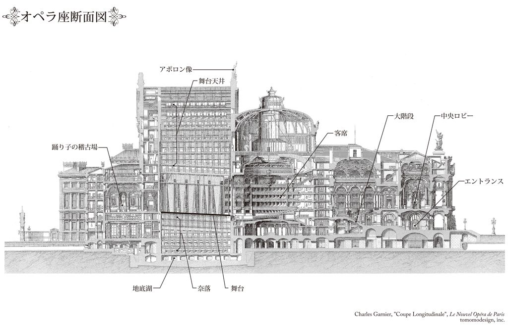
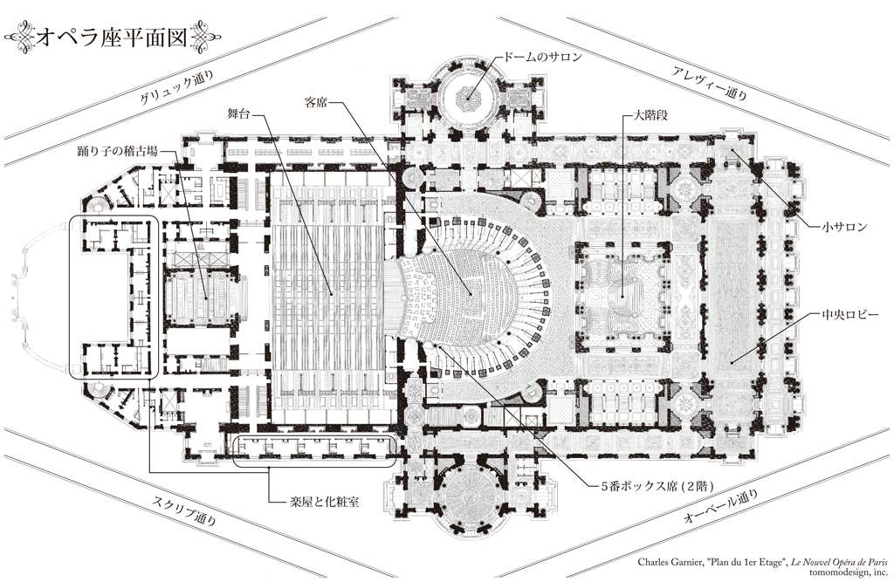

| オペラ座の怪人 | |
| ガストン・ルルー | |
| (2013) | |
オペラ座の怪人
ガストン・ルルー
平岡敦訳
Title: LE FANTÔME DE L'OPÉRA
1910
Author: Gaston Leroux
目次
序 いかにしてこの奇妙な物語の語り手は、オペラ座の怪人が実在すると確信するに至ったのか？ まずはそれをここで、読者にお話しすることとしよう。
３ ここでドゥビエンヌ、ポリニー両支配人は、オペラ座の新たな支配人アルマン・モンシャルマン、フィルマン・リシャール両氏に、国立音楽アカデミーを去る不可思議な真の理由を初めて内密に打ち明ける。
８ フィルマン・リシャール、アルマン・モンシャルマン両支配人が恐れ知らずにも呪われたホールで『ファウスト』の上演を決行し、それによって忌まわしい事件が起きたこと。
17 ジリーおばさんが明かした、オペラ座の怪人との驚くべき個人的関係
22 オペラ座の奈落でペルシャ人が味わった興味深く、示唆に富む苦難
©Atsushi Hiraoka 2013
◎ご注意
本作品の全部または一部を無断で複製、転載、改竄、公衆送信すること、および有償無償にかかわらず、本データを第三者に譲渡することを禁じます。
個人利用の目的以外での複製等の違法行為、もしくは第三者へ譲渡をしますと著作権法、その他関連法によって処罰されます。


オペラ座の怪人
幽霊とは無縁ながら、
エリックのごとき音楽の天使であるわが友ジョーに、
親愛の情をこめて。
ガストン・ルルー
オペラ座の怪人は実在した。それは長年信じられていたように、芸人たちの思いつきや代々の劇場支配人に伝わる迷信でもなければ、踊り子やその母親、案内係、クローク係や門番たちが興奮のあまりに抱いた、たわいもない空想の産物でもなかった。
そう、見かけは本物の幽霊、つまりは幻影のようでありながら、生身の人間として実在したのである。
国立音楽アカデミー［現在のパリ国立オペラ］の記録を調べ始めるや、わたしははたと気づいた。怪人のしわざとされている様々な現象と、世にも不可思議なあの事件とは、時を同じくして起きているではないか。こうしてわたしは、怪人騒ぎによってすべてが合理的に説明できるのではないかと思うようになった。あれはほんの三十年前の出来事だからして、今でも楽屋を訪ねれば、信頼の置ける古株に話を聞くのは難しくはないだろう。彼らはクリスティーヌ・ダーエの誘拐やシャニー子爵の失踪、子爵の兄フィリップ伯爵の死にかかわる悲しくも謎めいた状況を、昨日のことのようにおぼえているはずだ。伯爵の死体はオペラ座の地下に広がる湖の、スクリブ通り側のほとりで見つかったのだった。けれども証人たちは今まで誰ひとり、そうした恐ろしい事件とオペラ座の伝説的な怪人を結びつけてみようとはしなかったのである。
真相解明は遅々として捗らなかった。一見超自然的とも思える出来事が次々に調査の行く手を阻み、すっかり混乱したわたしは、見果てぬ虚しい幻を追うのに疲れ、もう少しでこの仕事を投げ出すところだった。けれども、ついに証拠をつかんだ。わたしの予想は間違っていなかったのだ。オペラ座の怪人は単なる幻影ではないという確証が得られたとき、今までの努力はすべて報われたのだった。
その日わたしは、『ある支配人の回想』なる凡俗な作品につき合って、何時間もすごしていた。著者のモンシャルマンはものわかりの悪い人物だったらしく、オペラ座在職中も怪人の策謀にまったく気づかなかったばかりか、「不思議な封筒」を使って金をせびり取られる最初の被害者となったときでさえ、怪人なんかいるものかと鼻であしらっていた。
がっかりして書庫をあとにすると、階段のところでアカデミーの理事と顔を合わせた。愛想のいい理事は、粋で小柄なかくしゃくたる老人と立ち話をしており、さっそく紹介してくれた。わたしが昔の出来事を調べていることや、例のシャニー子爵事件を担当したフォール予審判事の隠居先を必死になって探しながらも、未だ叶わずにいることを理事はよく知っていた。判事がどこで何をしているのかはもとより、その生死すらわからない。ところが十五年間すごしたカナダから近ごろ帰国し、オペラ座の優待席が取れないかとひょっこり事務局にやって来たこの小柄な老人こそ、誰あろうフォール氏その人だったのだ。
その晩は二人で、ゆっくりと話し込んだ。フォール氏は当時シャニー事件をどう見ていたか、事細かに話してくれた。充分な証拠が集まらなかったため、子爵は狂気にかられ、兄の伯爵は事故死だったと結論づけざるをえなかったが、兄弟のあいだにはクリスティーヌ・ダーエをめぐって、何か恐ろしいいざこざがあったのだろうと今でも確信しているという。その後クリスティーヌと子爵がどうなったのかは、フォール氏にもわからなかった。わたしが怪人の話を持ち出すと、もちろんのこと氏は一笑に付した。ときおり何やら奇怪なことが起こる、オペラ座の暗い片隅にはこの世ならぬものが住みついていると話には聞いていたし、「封筒」事件についても報告を受けていた。けれどもシャニー事件の予審を担当する判事としては、考慮に値しないと判断したのだ。怪人を知っているという供述も、まともに取り合おうとはしなかった。そう証言したのはパリの名士たちのあいだで「ペルシャ人」の呼び名でとおり、オペラ座の常連客なら誰でも知っている人物にほかならなかったが、判事は彼を狂信家だと思っていた。
お察しのとおり、わたしはペルシャ人の話に大そう興味をそそられ、まだ間に合うならその貴重な生き証人に会いたいと思った。そして幸運にも、居所をつきとめることができた。彼は当時のままリヴォリ通りの小さなアパルトマンに暮らしており、わたしが訪ねた五カ月後にそこで亡くなったのだった。
最初はわたしも、眉に唾していた。けれどもペルシャ人は、怪人について直接見知っていることを子供のように無邪気な口ぶりであらいざらい話し、怪人が実在したという証拠をすべてゆずってくれた。とりわけクリスティーヌ・ダーエの手紙、彼女の驚くべき運命を白日の下にさらす手紙を。こうなればもう、疑問の余地はない！ そう！ 怪人は伝説ではなかったのだ！
そんな手紙は贋物だという意見も、たしかにあるにはあった。面白おかしい作り話に想像力を搔き立てられた男が、こしらえたのかもしれないと。しかし幸いわたしは、件の手紙以外にもクリスティーヌが書いたものを手に入れることができた。そして筆跡をじっくりと較べた結果、間違いないと確信するに至ったのである。
ペルシャ人についてもいろいろ調べてみたが、司法当局を惑わせる策謀をするような人物ではないとわかった。
シャニー家と親交があり、事件に多少なりとも関わった名士たちも、わたしの意見に賛成してくれた。集めた資料をすべて彼らに見せ、自分なりの推理をぶつけてみたところ、とてもありがたい励ましが返ってきた。一例としてＤ将軍からもらった手紙を、以下に掲げたい......。
拝啓
貴殿の調査結果を、ぜひとも公表なさってください。歌姫クリスティーヌ・ダーエが行方不明になり、サン＝ジェルマン通りを悲しみで包んだ事件が起きる数週間前、オペラ座の楽屋は怪人の噂でもちきりだったのを、わたしは今でも鮮明におぼえています。あんな事件があって皆の関心がそちらに移ると、ようやく怪人騒ぎも収まりました。けれども貴殿の説明を聞くと、たしかに悲劇の原因は怪人にあったのかもしれません。だったらどうか今一度、それについて話してください。一見、現実離れしているようですが、怪人のせいだと考えたほうがずっと納得がいきます。これまで仲のよかった兄弟が殺し合いの喧嘩を始めたなんて、ずいぶん悪意に満ちた見方ですから......
どうか信じていただきたいのですが......云々。
わたしは最後にもう一度、怪人の跋扈した広大な領地、彼が自らの帝国を築いた巨大な歴史的建造物をファイル片手に歩いてみた。そこでこの目が見たもの、心が感知したものは、ペルシャ人から託された資料の信憑性を裏づけた。そんな折、驚くべき発見がわが仕事を完遂させたのだった。
歌手の歌声を収めた音盤を記念に埋めるため、オペラ座の地下を掘ったときのこと、作業員がふるったつるはしの下から一体の骸が出てきたのはまだ記憶に新しいだろう。それが怪人の遺体だった証拠が、ほどなく手に入ったのだ！ オペラ座の理事本人にも、きちんと確認をしてもらった。だからパリ・コミューン［パリ市民の蜂起により、一八七一年三月から五月まで続いた革命政権］の犠牲者が見つかったという新聞報道など、わたしは聞き流している。
コミューン時代にオペラ座の地下室で虐殺された人々は、そもそもそのあたりには埋まってはいない。犠牲者の遺骨があるのは、パリ包囲の際にあらゆる食料を備蓄した広い地下納骨堂から、ずっと離れたところなのだ。それに気づいたのは、ちょうど怪人の亡骸を捜しているときだった。とはいえ、生きている人間の歌声を埋めておこうという計画がもたらした信じがたい偶然なくして、目ざす怪人は見つけられなかったろう！
けれども怪人の亡骸や、それをどうすべきかという話にはのちのち触れることにして、今はつつましい端役の面々に感謝を捧げ、大事な前口上を終えようと思う。例えばミフロワ警視（かつてクリスティーヌ・ダーエが行方不明になったとき、初動捜査を担ったのが彼だった）や元秘書のレミー氏、元理事のメルシエ氏、元声楽主任のガブリエル氏、そしてとりわけカストロ＝バルブザック男爵夫人。彼女はその昔、「おちびのメグ」の名で知られ（本人は、このあだ名を今でもけっこう気に入っているらしい）、怪人専用のボックス席を担当した誠実な案内係である故ジリー夫人の長女で、すばらしきオペラ座バレエ団きっての花形スターだった。こうした人々が、わたしにとって貴重な助けとなった。この純愛と恐怖の物語を読者とともに細部にわたって再現することができるのも、ひとえに彼らのおかげである（１）。
原注１ この恐るべき実話を始めるにあたり、調査を快諾してくれたオペラ座の現経営陣にも謝意を示さねば、礼を失することになるだろう。わけてもメッサジェ氏と無類の好人物であるガビオン理事には感謝にたえない。またオペラ座の修復・保存にあたっている親切な建築家氏は、建物を設計したシャルル・ガルニエの著作を快く貸してくれた。おそらく借りっぱなしになるだろうと、わかっていただろうに。最後になるが、かつての仕事仲間である畏友Ｊ＝Ｌ・クローズ氏にも礼を述べておきたい。彼はわたしに演劇関係の立派な蔵書を自由に使わせ、大事な稀覯本を貸してくれたのだった。
それはドゥビエンヌ、ポリニー両支配人がオペラ座を辞めるにあたって、最後の特別興行を催した晩のことだった。上級バレリーナのひとりソレリの楽屋に、歌劇『ポリュクト』の舞踏シーンを終えた五、六人の踊り子たちがなだれ込んできた。どたどたと足音を響かせながら、ある者は不自然なほど大声で笑い、ある者は恐怖の叫びをあげている。
ソレリはのちほど楽屋でドゥビエンヌ、ポリニー両氏に贈る送辞をおさらいするため、しばらくひとりになりたいと思っていたので、困ったものだと顔をしかめた。そして踊り子たちをふり返り、何をそんなに騒いでいるのかとたずねた。それに答えたのはジャムだった。グレヴァン蠟人形館でもてはやされるような鼻、青いつぶらな瞳、ばら色の頰、抜けるように白い胸をしたジャムは、気味悪そうに声を震わせた。
「出たのよ、怪人が！」
ジャムはひと言そう言うと、ドアに鍵をかけた。ソレリの楽屋は簡素でありふれた部屋だった。家具はと言えば姿見、長椅子、戸棚など最低限のものだけ。壁に何枚かかかっている版画は、ル・ポトリエ通りにあった旧オペラ座の華やかなりしときを知っている母親の思い出の品、ヴェストリス、ガルデル、デュポン、ビゴティーニの肖像画だ。けれども大部屋の踊り子たちから見れば、この楽屋もまるで宮殿だった。いつもはみんな共同の控室で出番の鐘が鳴るまで、歌ったり言い争ったり、化粧係や衣装係を叩いたり、景気づけにカシスやビール、ラム酒をひと口あおったりしてすごしていた。
とても迷信深いソレリは、怪人と聞いて震えあがった。
「変なこと言わないでよ！」
彼女は幽霊や化け物の存在を頭から信じていた。オペラ座の怪人だって、もちろんいるに決まってる。ここはひとつ、詳しく話を聞かなくては。
「あなた、見たの？」ソレリはたずねた。
「ええ、この目ではっきりと！」ジャムはうめくように答え、へなへなと椅子にすわり込んだ。
するとすぐにメグ・ジリーが――目も髪も真っ黒なら、顔色も黒ずみ、痩せこけて貧弱な体つきをしている――こうつけ加えた。
「あれが本当に怪人なら、不気味な顔よね、怪人って！」
「そう、そう」と踊り子たちが声をそろえる。
それからみんなして、いっせいに話し出した。彼女たちが廊下を歩いていると、黒服の紳士然とした怪人が、どこからともなく目の前にあらわれたのだという。あまりに唐突だったので、壁から抜け出してきたかと思うほどだった。
「あらまあ！ あんたたちの話を聞いてると、怪人はいたるところに出没してるってことじゃないの」どちらかといえば冷静を保っていた踊り子のひとりが言った。
たしかにここ数カ月、オペラ座は怪人の噂で持ちきりだった。黒服姿の怪人は、劇場のなかを上から下まで、影のように歩きまわっている。むこうから話しかけてくることもなければ、あえて話しかけようという者もいなかった。そもそも姿が見えたと思うや、たちまち消えてしまうのだ。どこに、どうやっていなくなるのかは、まったくわからなかったけれど。足音をたてずに歩くあたりも、いかにも本物の幽霊らしかった。社交界の紳士か葬儀屋みたいなかっこうの幽霊なんてと、最初はみんな笑って取り合わなかったが、やがて怪人騒ぎはバレエ団のなかに大きく広がり、踊り子たちはこの世ならぬものを見た、呪いをかけられたと口々に言い立てた。いちばん大声で笑っている踊り子だって、怖がっていないわけではなかった。怪人はたとえ姿を見せずとも、やってきた痕跡を残していく。人を小馬鹿にしたような出来事、不吉な事件があると、誰もが怪人のせいだと思うようになった。事故でひと騒動あったって？ 踊り子が仲間に悪戯を仕掛けた？ 白粉のパフがなくなった？ それはみんな、怪人が悪いんだ。オペラ座の怪人が！
結局のところ、誰が怪人を見たのだろう？ 黒服の男ならオペラ座にごまんといるが、彼らは怪人なんかではない。ただし怪人には、ほかの黒服とは違う特徴があった。骸骨が黒服を着ているのだ。
少なくとも、踊り子たちはそう言っていた。
となれば当然のことながら、顔は髑髏だった。
そんな話が信じられるだろうか？ 実のところ骸骨という想像が生まれたのは、実際に怪人を目撃した道具方主任ジョゼフ・ビュケの証言がもとだった。ビュケはフットライトの近くから直接奈落に降りる小階段で、奇怪な男と出くわした。「鼻と鼻がぶつかるほど近くで」と言いたいところだが、怪人には鼻がなかった。怪人はすぐに逃げ去ったので、見たのはほんの一瞬のことだが、忘れがたい強烈な印象が残った。
ジョゼフ・ビュケはたずねられると、怪人についてこんなふうに語った。
「そいつは気味が悪いほど痩せていたっけ。骸骨のような体をだぶだぶの黒服が包み、目はげっそりと落ち窪んで、まるで二つの黒い穴だ。よく見りゃ奥にじっと動かない瞳があるんだが、要は髑髏さ。骨に張りついた皮膚は太鼓の革みたいにぴんとして、白というより嫌らしい黄色をしてる。鼻はほとんどないに等しく、横から見ても真っ平らだ。やなもんだぜ、鼻が欠けてるっていうのは。髪はといえば茶色の長いほつれ毛が、おでこと耳のうしろにぱらぱらとさがっているだけだ」
道具方主任はこの奇怪な亡霊を追いかけたが、たちまち煙のように消えてしまい、どこにいったのかわからなかった。
ビュケは謹厳実直な男だし、下戸なうえに想像力も豊かなほうではない。だからみんなびっくりして、彼の話に興味津々で耳を傾けた。ほどなく自分も黒衣の髑髏に会ったという者が、次から次へとあらわれ始めた。
良識ある人々はこの出来事を聞いて、ジョゼフ・ビュケは部下が仕掛けた悪戯に引っかかったのだと断言した。ところがその後も不可解な事件が立て続けに起こったものだから、簡単には騙されまいとしていた連中も心配になってきた。
防火係というのは恐れ知らずと、相場が決まっている！ とりわけ炎を前にして、ひるんだりはしないものだ！
ところが、ここで問題の防火係は（２）奈落の見まわりに出かけ、いつもより少し遠くまで足を延ばしてみたらしいのだが、突然真っ青な顔で慌てふためきながら、舞台に戻ってきた。がたがたと震え、目は今にも飛び出さんばかりだ。そしてジャムの気丈な母親に支えられ、気を失いかけた。いったいどうしたわけだろう？ 彼はちょうど人の頭の高さあたりに、胴体のない顔が浮いているのを目にしたのだった。火の玉のようなその顔が、ふわふわとこちらに近づいてくるではないか！ 何度も言うようだが、普通、防火係は炎を恐れたりしないものだ。
ちなみに彼の名はパパンといった。
この話に、踊り子たちは恐慌をきたした。火の玉みたいな顔だなんて、ジョゼフ・ビュケから聞いた怪人の姿とはまるっきり違っている。何度も防火係にたずね、ビュケにも再度たしかめた結果、踊り子たちは確信するに至った。怪人にはいくつもの顔があり、それを気分次第でつけ替えているのだと。このままでは、いつどんな恐ろしい目に遭うかわからない。踊り子たちがそう思い始めたのも、当然のなりゆきである。防火係でさえ気を失いかけたのだ。年端も行かない踊り子たちが、薄暗い廊下の黒い窪みの前を通るとき、恐ろしさのあまり全速力で駆け出したのも無理はない。
かくして恐ろしい呪いをかけられたオペラ座の魔よけにと、ソレリは防火係の話を聞いた翌日早々、踊り子から年少クラスの練習生まで引き連れ、管理部の中庭から楽屋にむかう入口の台に自ら馬の蹄鉄を置いたのだった。劇場に入る者は観客を除いて皆、階段をのぼる前にこの蹄鉄に触らねばならない。さもないと、オペラ座を覆い尽くす魔力の犠牲になるというのだ。
いやはや、蹄鉄の話も何もかも、すべて本当にあったことである。今でも管理部中庭からオペラ座に入ると、楽屋口受付前の台に蹄鉄が置いてあるのを見ることができる。踊り子たちはざっとこんな心持ちで、その晩ソレリの楽屋に駆け込んだのだった。
そしてジャムは、「出たのよ、怪人が！」と叫んだのだ。
踊り子たちの不安は、いや増すいっぽうだった。そして今度は、重苦しい沈黙が部屋を包んだ。聞こえるのはただ、はあはあという息づかいばかり。やがてジャムは心底恐ろしそうに、部屋の隅っこに飛びのくと、小さな声でひと言こう言った。
「聞こえるでしょ？」
はたしてドアのむこうから、何かが触れ合うかすかな物音が聞こえたような気がした。足音なんかじゃない。薄い絹の布が、壁の羽目板をこすったような音だ。あとはもう、しんと静まり返っている。ソレリはほかのみんなより気丈なところを見せようと、ドアに近より虚ろな声で言った。
「誰かいるの？」
けれど返事はない。
皆の目が自分の一挙手一投足に注がれているのを感じて、ソレリはさらに勇気を奮い起こし、今度は大声で言った。
「ドアの裏に誰かいるんでしょ？」
「そうよ、そうよ。ドアのむこうに誰かいるんだわ！」と干しスモモのように色の黒いメグ・ジリーは言って、けなげにもソレリを止めようと薄物のスカートを引っ張った......「だからあけないで！ いけません。あけちゃだめです！」
けれどもソレリは肌身離さず持っている短剣をかまえながら、思いきって鍵をまわした。彼女がノブに手をかけると、踊り子たちは皆化粧室に隠れた。
「ママ。ああ、ママ」メグは哀願するような声を出した。
ソレリは勇気を奮い起こし、ドアをあけた。けれども廊下には、人っ子ひとりいない。ガラスに覆われたガス・ランプの炎が、あたりにほのかな赤い光を投げかけているが、闇を払うにはほど遠かった。ソレリは大きなため息をついて、勢いよくドアを閉めた。
「やっぱり、誰もいないわ！」とソレリは言った。
「でもわたしたち、たしかに見たんです！」ジャムはなおも言いはって、ソレリの脇に恐る恐る歩み寄った。「怪人はきっとまだどこかにいるわ。そのあたりをうろついているはずよ。わたし、とうてい着替えになんか行けません。みんなでいっしょに稽古場に行き、送辞が終わったらまたいっしょに戻りましょう」
ジャムはそう言うと、もったいらしく魔よけの小さな珊瑚に触れた。ソレリも左手の薬指にはめた木の指輪にピンク色の爪をあて、そっと聖アンデレ十字［Ｘ型の十字］を切った。
ある有名な演劇ジャーナリストは、彼女についてこう記している。「ソレリは大柄な美人バレリーナである。顔つきは厳かでときになまめかしく、体は柳の枝のようにしなやかだ。彼女を評して、しばしば〝造化の妙〟という言葉が使われる。純金と見まがうブロンドの髪が浅黒い額を飾り、その下にはエメラルド色の瞳が輝いている。すらりと伸びた首のうえで頭が優雅に揺れるさまは、まるで羽根飾りさながらだ。彼女が踊り始めると、えも言われぬ腰の動きに合わせて、体中がけだるく揺らめきだす。両手をうえにあげて身をかがめ、旋回の体勢に入ったときなど、体の線がくっきりと浮かんで見事な腰が張り出し、見ているこちらの脳味噌が沸騰するかと思うほどだ」
ちなみにソレリの脳味噌は、お世辞にも充分とは言いがたい。けれどもそんなことを、気にする者はいなかった。
彼女は若い踊り子たちに、またもやこう言った。
「あなたたち、気をしっかり持ちなさい！ 怪人ですって？ 今まで誰ひとり、見た人なんかいないじゃない......」
「いいえ、そんなことないわ！ わたしたちが見ました......さっき、見たんです！」と踊り子たちも繰り返す。「ジョゼフ・ビュケの前にあらわれた晩と同じく、黒い服を着て骸骨の顔をして！」
「それにガブリエルさんだって見たんですよ！」ジャムが言った。「つい昨日のことです！ 昨日の午後......真昼間に......」
「ガブリエルさんって、声楽主任の？」
「ええ......聞いていなかったんですか？」
「つまり黒い服を着てたのね、真昼間に？」
「えっ、ガブリエルさんが？」
「違うわ。怪人よ」
「もちろん、怪人は黒服に決まってます！」とジャムは断言した。「ガブリエルさんも、そう言っていましたし......怪人だとわかったのも、服装からなんです。ガブリエルさんが舞台監督の部屋にいると、いきなりドアがあいて、ペルシャ人が入ってきたんですって。ペルシャ人が〝凶眼〟の持ち主だっていうのは、みんなも知ってるわよね？ あの人に睨まれたら呪われるって」
「そう、そう！」踊り子たちは声をそろえて応えた。皆ペルシャ人の名前が出ると、人さし指と小指を角のようにぴんと伸ばし、中指と薬指はなかに曲げて親指で押さえ、厄除けのまじないを切るのだった。
「......それにガブリエルさんが、とても迷信深いってことも！」とジャムは続けた。「でもあの人は礼儀正しいので、ペルシャ人に会ってもポケットのなかでそっと鍵をつまむだけにしているんです。だってほら、厄除けには鉄に触れるといいから......ペルシャ人が帰ろうとしてドアをあけたとき、ガブリエルさんは腰かけていた椅子からさっと立ちあがり、戸棚の錠に手を伸ばしたの。そうしたら、コートの裾を釘にひっかけてしまって。急いで部屋を出ようとしたら、洋服かけに額をぶつけて大きなこぶを作るわ、あわててうしろにさがったら、ピアノの脇にあったついたてで腕を擦りむくわ。ピアノに手をついたひょうしに折悪しくふたが倒れて、指まで折ってしまったんですって。廊下に飛び出したら、今度は階段で足を滑らせ、二階から下まで転がり落ちてしこたま腰を打ちつけてしまい、うんうんとうなっているところにわたしとママが通りかかったってわけ。急いで近寄り助け起こしたら、傷だらけになって額から血を流しているんですもの、思わず震えあがったわ。でもガブリエルさんはすぐににっこりして、こう叫んだんです。『やれ、ありがたい。こんなかすり傷ですんだんだから！』って。いったいどうしたのかたずねると、ガブリエルさんは恐ろしい話をしました。ペルシャ人の背後に、怪人の姿が見えたっていうんです。ジョゼフ・ビュケさんが言ったとおり、髑髏の顔をした怪人の姿が」
ジャムはまるで怪人に追いかけられているかのように、息せき切って話し終えた。すると一同のあいだから、恐怖のざわめきが起こった。ソレリは慄然とし、黙って爪を磨いている。しばらく沈黙が続いたあと、干しスモモのように色黒のメグ・ジリーが小声でこう言った。
「ビュケさんたら、黙っていればいいのに」
「どうして黙っていたほうがいいの？」と誰かがたずねる。
「だってママが言ってたから......」メグは急に声を潜めて答えると、あたりをぐるりと見まわした。そこにいる人々のほかにも、誰か聞き耳を立てていないかと恐れているかのように。
「どうしてそう思ったのかしら？」
「しっ！ ママの話では、怪人は邪魔されるのを嫌がるんですって！」
「でも、何でそんなこと知ってるのよ、あなたのお母さんが？」
「別に......何でってこともないけど......」
こんなふうにはぐらかされると、踊り子たちの好奇心はいやがうえにも搔き立てられた。そしてちゃんと説明するよう、みんなしておちびのメグ・ジリーに詰め寄るのだった。踊り子たちは一団となって、恐ろしげに身を乗り出した。互いの恐怖心が呼応して、背筋が凍るような快感へと高まっていく。
「誰にも言わないって約束したの！」メグは小さな声で言った。
それでも踊り子たちが、絶対に秘密は守るから話して欲しいとせっつくものだから、本当は話したくてたまらなかったメグは、ドアのほうを見やりながら口をひらいた。
「つまり......ボックス席のことで......」
「ボックス席って？」
「怪人のボックス席よ！」
「怪人にボックス席があるの？」
まさか、怪人がボックス席を持っているだなんて！ 考えただけでも気味が悪くて、わくわくするじゃない。踊り子たちはそう思いながら、小さなため息をついた。
「まあ、驚いた！ ねえ......それってどういうこと？」
「大きな声を出さないで」メグは言った。「二階の五番ボックス席よ。ほら、左側の特別ボックス席の隣」
「まさか！」
「噓じゃないわ......あの席を担当している案内係は、わたしのママだもの......でも約束よ、誰にも言わないって」
「大丈夫だから、続けて！」
「ええ、あそこが怪人の席なの......もう一カ月以上、誰も入った者はいないわ。そりゃまあ、怪人は別よ。予約もできないよう、管理課に指示が出ていて......」
「怪人は本当に来てるの？」
「もちろん......」
「じゃあ、誰かなかにいるのね？」
「違うわ！ 怪人は来てるけど、なかには誰もいないの」
踊り子たちは顔を見合わせた。もし怪人がボックス席に来ているなら、姿が見えるはずだ。だって怪人は黒服を着て、髑髏の顔をしているのだから。みんなしてそう言ったものの、メグは頑として聞き入れない。
「まったくもう！ 怪人は見えないのよ！ 服も着てなきゃ、顔もない！ 髑髏の顔だの火の玉の顔だのなんて、ホラもいいとこ！ 姿かたちなんか、何もないんだから......ボックス席にいるときも、物音や声が聞こえるだけで。ママにしたって声は聞いているけど、姿を見たことはないそうよ。でも怪人のことは詳しいわ。だってプログラムを渡すのはママなんだもの！」
さすがにソレリも、黙っていられなくなった。
「ジリー、わたしたちをからかってるのね」
するとおちびのメグ・ジリーは、めそめそし始めた。
「やっぱり黙ってりゃよかった......こんなこと、ママに知れたら......でもジョゼフ・ビュケさんが悪いのよ。余計なことに首を突っ込んだりして......きっととんでもない目に遭うから......昨日の晩もママが言ってたけど......」
とそのとき、どたどたと廊下を駆ける足音がして、息を切らして叫ぶ声が聞こえた。
「セシル！ セシル！ そこにいるの？」
「ママだわ！ 何事かしら？」
そう言ってジャムがドアをあけると、ポメラニアの擲弾兵もかくやと思える立派な体格の婦人が部屋に飛び込んできた。そして悲痛なうめき声をあげながら肘掛け椅子に腰をおろし、赤銅色の顔に光る目を怯えたようにぎょろつかせた。
「何て......何てことかしら......」と彼女は言った。
「どうしたのよ？」
「ジョゼフ・ビュケさんが......」
「ビュケさんが？」
「亡くなったの！」
楽屋に驚愕のどよめきが満ちた。そんなはずないだとか、どういうことだとか、みな口々に叫んでいる。
「ええ......さっき地下三階の奈落で、首を吊っているのが見つかったのよ！ しかも恐ろしいことに」と哀れな婦人は、ぜいぜいと喘ぎながら続けた。「恐ろしいことに、死体を見つけた道具方の話では、あたりから不気味な声が聞こえたんですって。まるで死者が合唱しているような！」
「怪人のしわざだわ！」おちびのメグ・ジリーは思わず言ってしまった。それからはっとしたように、握った両手であわてて口を押さえた。「違う......違うわ......わたし、何も言ってない！ 言ってないから！」
彼女を取り囲む仲間の踊り子たちは、恐ろしそうに小声で繰り返した。
「間違いない！ 怪人よ！」
ソレリも真っ青な顔でつぶやく。
「これじゃあ支配人さんたちへの送辞なんか、とても言えそうにないわ」
ジャムの母親はテーブルにあったリキュールのグラスを空けると、ひと言こうつけ加えた。きっと奈落には化け物がいるんだと......
実のところジョゼフ・ビュケがどのようにして死んだのかは、わからずじまいだった。通りいっぺんの捜査が行われたものの、何の成果も得られず、「ただの自殺」で片づけられた。ドゥビエンヌ、ポリニー両支配人の後任にあたったモンシャルマン氏は、『ある支配人の回想』のなかで、首吊り事件についてこう記している。
「ドゥビエンヌ、ポリニー両氏がお辞めになるに際し、ささやかな送別の会を催そうという日に、とんでもない事件が起きた。わたしが支配人室にいると、理事のメルシエ氏があたふたと駆け込んでくるではないか。すっかり取り乱した氏が言うことには、何と舞台の地下三階で死体が見つかったのだそうだ。『ラホールの王』の書き割りや大道具のあいだで、道具方のひとりが首を吊っていたのだ。『すぐに死体をおろさなくては！』とわたしは叫んだ。大急ぎで階段と梯子を降りて現場に着いたとき、死体はすでにおろされ、ロープはなくなっていた」
モンシャルマン氏はこの事実を、おかしいとは思わなかったらしい。男が首を吊ったと聞いて死体をおろしにでかけたら、ロープが消えていた。それについて、氏は単にこんな解釈を下している。いわく、「ちょうどバレエの時間だったので、大部屋の踊り子や練習生たちが凶眼を避ける魔よけに、ロープを持っていってしまったのだ」と。だが、考えてもみたまえ。踊り子の一団が梯子を降り、手際よく首吊りのロープを分け合ったなんて、とても真面目に取り合える話ではない。いやむしろ、死体が見つかった正確な場所――つまり地下三階の奈落――を考慮するなら、首吊りに使ったロープを隠さねばならない事情がどこかにあったのではないか。この想像が間違っているかどうかは、のちになってわかるだろう。
ジョゼフ・ビュケはみんなに好かれていただけに、不吉な知らせはオペラ座の上から下まで、またたく間に広まった。大部屋の踊り子たちはいっせいに楽屋を出ると、羊飼いのまわりに群がる臆病な羊のようにソレリのあとを追った。そして薄暗い廊下や階段を抜け、ピンク色の小さな足をちょこちょこと動かして稽古場へ急ぐのだった。
原注２ この挿話はオペラ座の元支配人ペドロ・ガイヤール氏自身から聞いたもので、真実に間違いない。
ソレリが下の踊り場までおりたとき、のぼってきたシャニー伯爵と出くわした。いつもは落ちついている伯爵が、やけに興奮気味だった。
「いまそちらにうかがおうとしていたんです」と伯爵は、愛想よく一礼しながら声をかけた。「いやあ、ソレリさん、今夜の公演は実にすばらしかった！ それにクリスティーヌ・ダーエも大成功を収めて！」
「でもおかしいわよ！」メグ・ジリーが口を尖らせた。「彼女の歌なんて、半年前は聞けたもんじゃなかったのに！ ともかく、ここをおとおしくださいませ、伯爵様」ジリーは茶目っ気たっぷりに膝を折って、お辞儀をした。「首吊り死体が見つかったっていうから、たしかめにいくところなんです」
ちょうどそのとき、あたふたとやって来た理事がジリーの言葉を聞きつけ足を止めた。
「なんだって！ もう知っているのか、きみたち？」理事はぞんざいな口調で言った......「だったら他言しないようにな......とりわけドゥビエンヌさんとポリニーさんには知らせるんじゃないぞ！ 今日が最後の日だっていうのに、そんな話を聞いたらおつらいだろうから」
みなが踊り子の稽古場へむかうと、そこはもういっぱいになっていた。
シャニー伯爵の言ったとおり、まれに見るほどすばらしい特別公演だった。幸運にもその場に立ち会った人々は、感動的な思い出を子々孫々にまで語り伝えるだろう。なにしろグノー、レイエール、サン＝サーンス、マスネ、ギロー、ドリーブといった錚々たる作曲家がオーケストラの指揮台に立ち、自作のタクトをふったのだから。演奏家や歌手のなかには、フォールやクラウスといった名前もあった。そしてかのクリスティーヌ・ダーエがパリの名士たちを驚愕させ、魅了したのもその晩のことだった。わたしは本書のなかで、彼女の謎に満ちた運命を明らかにしたいと思う。
グノーは『マリオネットの葬送行進曲』を、レイエールは『シギュール』の美しい序曲、サン＝サーンスは『死の舞踏』と『東洋の夢想』、マスネは未発表の『ハンガリー行進曲』、ギローは『謝肉祭』、ドリーブは『シルヴィア』のゆるやかなワルツと『コッペリア』のピチカート曲を指揮した。クラウスは『シチリア島の夕べの祈り』のボレロを、ドゥニーズ・ブロックは『ルクレチア・ボルジア』の乾杯の歌を歌った。
しかし聴衆をもっとも魅了したのはクリスティーヌ・ダーエだった。彼女はグノー作の『ロミオとジュリエット』から数曲を歌った。彼女がこの作品を歌うのは初めてだった。しかもこれまでオペラ座の演目にあがったことはなく、旧テアトル・リリック座でカルヴァロ夫人が初演して以来、近ごろオペラ・コミック座で久しぶりに取りあげられただけだ。ああ！ ジュリエットを演じるクリスティーヌ・ダーエの歌を聴かぬ者の、なんと気の毒なことか！ 彼女の飾り気ないしとやかさも知らず、天使のごとき声の響きに身を震わせもせず、ヴェローナの恋人たちの墓に思いを馳せて彼女とともに魂の飛翔を感じたことのない者には同情を禁じえない。「主よ！ 主よ！ われらの罪を許したまえ！」
けれどもクリスティーヌがカルロッタの代役として、『ファウスト』の牢獄の場面と最後の三重唱で聴かせた抑揚の人並みはずれた技巧にくらべたら、まだまだそれも物の数ではなかった。かくもすばらしい歌声は、いまだかつて誰ひとり耳にしたことがないだろう。
まさしくクリスティーヌは「新たなマルガレーテ」を生み出したのだった［マルガレーテは『ファウスト』のヒロイン］。誰もが予想しなかった光と輝きに満ちたマルガレーテを。
熱狂した聴衆は、皆いっせいに喝采を浴びせた。クリスティーヌはすすり泣き始めたかと思うと、いきなり気を失って共演者たちの腕のなかに倒れ、息も絶え絶えのようすで楽屋に運びこまれた。大物評論家のＰ・サン＝Ｖは、いみじくも「新たなマルガレーテ」と題したコラムのなかで、この驚くべきひとときの忘れがたい思い出をつづっている。自身、偉大な芸術家でもある彼は、ひと目で見抜いたのだった。その晩、若く優美なる歌い手がオペラ座の舞台で示したのは、自らの技量を超えたもの、つまり彼女の心であると。オペラ座に通う者たちなら、クリスティーヌの心が十五歳の乙女さながらに清純であることを知らぬ者はないが、Ｐ・サン＝Ｖはさらにこう言い切った。「クリスティーヌ・ダーエの身にいったい何が起きたのか？ それを理解するには、彼女は初めて恋を知ったのだと想像せざるをえない！ 不躾は承知のうえ。しかるにこのような奇跡、かくも電撃的な変化をなしとげうるのは恋だけである。われわれは二年前、クリスティーヌ・ダーエが国立高等音楽院の試験で歌うのを聴き、たしかに将来有望だと思った。しかし今日あるあの気高さは、いったいどこからもたらされたのか？ それが恋の翼に乗って天上から舞い降りてきたのでないとしたら、地獄から這いあがってきたものだと考えるほかない。そしてクリスティーヌはかのマイスタージンガー、オフターディンゲンのように、悪魔と契約したのだと！ クリスティーヌが歌う『ファウスト』の最後の三重唱を聴かずして、もはや『ファウスト』は知りえない。これこそ高らかに響く声と、純粋な魂の聖なる陶酔の極致である！」
しかしながら、常連客のなかには不満の声をもらす者もいた。これほどの至宝を、よくもまあこんなに長いあいだ隠していたものだと。それまでクリスティーヌはカルロッタが演じるすばらしく官能的なマルガレーテの脇で、彼女に恋する若者ジーベルの役を無難にこなしているにすぎなかったのだから。ところが特別公演の晩、なぜかカルロッタが休演したからこそ、スペインの歌姫お得意の演目で、クリスティーヌが突然その力量を発揮することとなったのである！ それにしてもドゥビエンヌ、ポリニー両支配人は、どうしてクリスティーヌに白羽の矢を立てたのだろうか？ 彼らはクリスティーヌの秘められた才能を知っていたのか？ だとしたら、どうしてそれをこれまで隠していたのか？ 奇妙なことに、クリスティーヌは今、どんな教師にもついていなかった。これからはひとりで練習すると、繰り返しきっぱり言いきっていた。何もかも、不可解なことだらけだ。
シャニー伯爵はボックス席で立ちあがり、熱狂する聴衆とともに大声でブラヴォーと叫んでいた。
シャニー伯爵（フィリップ＝ジョルジュ＝マリ）は当時四十一歳。大貴族にして美丈夫。背は高めで面立ちは整っている。厳格そうな額と、やや冷たい目をしているが、女性にはとても礼儀正しい。男性には少し尊大な態度を見せるせいか、彼の社会的成功が妬まれることもあった。しかし根は善良で高潔な心の持ち主である。父フィリベール伯爵亡きあと、彼はフランスでも指折りの由緒ある名家の長となった。古くは強情王ルイ十世にまでその高名が遡るというシャニー家のこと、資産もかなりの額にのぼる。妻に先立たれた老伯爵が亡くなると、莫大な財産を管理することはフィリップにとってたやすい仕事ではなかった。二人の妹と弟のラウールは遺産分割を求める気などまったくなく、長子相続権はいまだ健在だとでもいうように、共有財産のままですべてをフィリップにまかせていた。二人の妹たちは結婚に際し――式は同じ日に行われた――遺産の持ち分を受け取ったが、それは自分のものだからというより、持参金として兄からありがたくもらったのだった。
モエロジス・ド・ラ・マルチニエール家の出だったシャニー伯爵夫人は、長男と二十歳も歳の離れた次男ラウールを生んだ産褥で命を落とした。父の伯爵が亡くなったとき、ラウールは十二歳。それからというもの、フィリップは弟の教育に情熱を注いだ。まずは二人の妹たち、次いで年老いた伯母も力を貸した。船員の未亡人でブレストに住むこの伯母は、若きラウールに海の魅力を教えた。若者は海軍学校に入学し、優秀な成績で卒業すると、悠然と世界一周旅行を果たした。そして強力な後ろ盾のおかげで、ルカン号の公式遠征に加わることが認められたところだった。その任務とは、三年前から連絡の途絶えているダルトワ号遠征隊の生存者を捜しに、氷にとざされた極地へ赴くことだ。出発は半年後。それまでラウールは、長い休暇を楽しんでいた。貴族が集まり住むパリのサン＝ジェルマン通り界隈では、このかわいらしいひ弱そうな青年を待つ過酷な職務を思って、老婦人たちが今から気の毒がることしきりだった。
ラウールの内気なことといったら（いや、世間知らずなと言いたいくらいだ）、見た目にもはっきりとわかった。いかにもつい昨日まで、乳母日傘で育てられてきたという感じだ。事実、彼は二人の姉と老いた伯母にかわいがられ、女性らしい細やかな躾を受けてきた。そのせいだろうか、いまだあどけなさの残る物腰の魅力は少しも損なわれてはいなかった。当時、二十歳を少し越えていたけれど、十八歳にしか見えない。ブロンドの小さな口ひげをはやし、目は美しいブルー、顔色はまるで少女のようだ。
フィリップはラウールを大いにかわいがった。何しろ自慢の弟だ。祖先の一人、かのシャニー・ド・ラ・ロッシュが大将についた海軍で、前途洋々の未来が弟を待ちうけているかと思うと、喜びで胸がいっぱいになった。フィリップは弟の休暇を利用して、パリを案内することにした。ラウールはパリの華やかな遊び、芸術的な楽しみをほとんど知らなかった。ラウールの年ごろで分別がありすぎるのは、かえって賢いことではないと伯爵は思っていた。フィリップ自身はとても健全な精神の持ち主で、仕事でも遊びでも中庸を心得ている。そのうえつねに一分の隙もない身なりをしているとくれば、弟にとって悪い見本になりようがない。彼はラウールをいたるところに連れていき、踊り子の楽屋も案内した。たしかに伯爵はソレリといい仲だと噂されている。だが、それが何だというんだ！ 彼は独身を通してきたから、自由な時間はたっぷりある。二人の妹も片づいたことだし、お世辞にも頭がいいとは言えないが世にもきれいな目をした踊り子と夕食後のひとときをすごしたからといって非難する筋合いでもなかろう。それにシャニー伯爵のような身分にある正真正銘のパリジャンなら顔を出してしかるべき場所がいくつもあって、当時はオペラ座の楽屋もそうしたところのひとつだった。
もっともフィリップだって、弟から何度もぜひにとせがまれなければ、踊り子の楽屋になど連れていかなかっただろう。ラウールが静かだがきっぱりとした口調でたのんだときのことを、伯爵はのちのち思い出すこととなる。
というわけでその晩、フィリップはクリスティーヌに拍手喝采を送ったあと、隣にいるラウールをふり返ったのだった。すると驚いたことに、弟は顔を真っ青にしているではないか。
「それじゃあ兄さんにはわからないのですか？」ラウールは言った。「彼女があんなに具合悪そうなのに」
たしかに舞台のうえでは、皆がクリスティーヌ・ダーエを支えている。
「おまえのほうが、今にも気を失いそうじゃないか......どうしたんだ？」と伯爵は言って、ラウールのほうに身をのり出した。
けれどもラウールはさっと立ちあがり、震える声でこう言った。
「行きましょう」
「ラウール、行くって、どこへ？」伯爵は弟の動揺ぶりに驚いてたずねた。
「もちろん、様子を見に行くんです！ 初めてですよ、彼女がこんなふうに歌うのは！」
伯爵は何ごとかとばかりに弟を見つめていたが、やがてその口もとに愉快そうな笑みが浮かんだ。
「ああ、なるほど......」伯爵はそうつぶやくと、すぐに続けた。「よし、行こう！」
伯爵は満足げだった。
やがて二人は定期会員用の入口に着いたが、そこはとても混雑していた。ラウールは舞台を抜ける順番を待ちながら、無意識のうちに手袋をむしっていた。フィリップはそんな弟の苛立ちをからかうほど野暮ではなかった。事情は心得た。ラウールのやつ、このところいつ話しかけても上の空なのは、そういうわけだったのか。そのくせ話題がオペラ座にむかうと、とたんに嬉々とするのだから。
二人が舞台にあがると、黒い燕尾服姿の群集がひしめいていた。踊り子の稽古場へ急ぐ者もいれば、歌手の楽屋へむかう者もいる。道具方のどなり声が響くなか、持ち場の主任連中がなにやら熱心に指示を出していた。最終場面の出番を終えて立ち去る端役たち、人々を押しのけて行き交う「その他おおぜい」の女優。舞台装置の支柱が通りすぎ、書き割りが天井から降りてくる。実物大のセットを設える金槌の音がこだまし、「さあ、次に行くぞ」という声が始終耳をつんざいて、今にもシルクハットがつぶされるか、どてっ腹に一発喰らうかと気が気でないほどだ。それもこれも幕間には毎度おなじみの光景だが、ブロンドの小さな口ひげを生やし、青い目と若い娘のような顔色をした新参者の青年にはどぎまぎすることばかりだった。彼はごった返す隙間をぬい、すばやく舞台を抜けていった。そこではついさっきクリスティーヌ・ダーエが大成功をおさめ、下の奈落ではジョゼフ・ビュケが命を落としたのだった。
とりわけその晩の混乱ぶりたるや大変なものだったが、ラウールはいつになく積極的だった。行く手をふさぐ人や物をがっちりとした肩で次々に押しのけ、まわりが何と言おうがそ知らぬ顔で、道具方のあわて声も聞き流している。彼の思いはただひとつだった。心をとらえて放さない魔法の声の持ち主に会いたい。そう、ラウールの哀れでうぶな心は、すっかり魅了されつくしていた。幼なじみのクリスティーヌを舞台のうえで再び見て以来、心を奪われまいとしてきたのに、彼女を目の前にすると甘美な興奮に包まれる。ラウールはそれを必死に追い払おうとした。愛するのは将来妻になる女性だけだと、われとわが信念にかけて胸に誓っていたし、歌手と結婚するには身分が違いすぎるから。ところが今、甘美な興奮に続いて、恐ろしい感覚が襲ってきた。感覚？ あるいは感情だろうか？ それは肉体的であるとともに精神的な苦しみだった。彼は胸を切り裂かれ、心臓をえぐり取られたかのような痛みを感じた。底知れぬ深い穴が、ぽっかりとうがたれている。クリスティーヌの心でしか埋めえない穴が！ そうした特殊な心理現象は、俗に「一目ぼれ」と呼ばれる不可解な愛の一撃に襲われたことのある者にしか理解しえないだろう。
フィリップ伯爵は終始にやにやしながら、なんとか弟についていった。
舞台の奥まで行って二重扉を抜けると、その先には楽屋や一階左側ボックス席に通じる階段が並んでいる。ちょうど屋根裏の楽屋から降りてきた練習生の一団が通路を占領していて、ラウールは立ちどまらねばならなかった。紅を引いたかわいい口からお愛想の言葉がいくつも投げかけられたが、彼はまったく答えなかった。ようやく薄暗い通路に入ると、あたりは熱狂したファンの叫びでわき返っていた。「ダーエ！ ダーエ！」と呼ぶ声が、ざわめきのなかにひときわ大きく響きわたっている。「こいつめ、ちゃんと道順を心得ていたんだな」と伯爵はラウールのうしろで思った。それにしても、どうやって知ったのだろう？ ラウールをクリスティーヌの楽屋へ案内したことなどなかったはずなのに。してみるとラウールは、伯爵がソレリの楽屋でおしゃべりをしているあいだに、ひとりで行ったに違いない。ソレリは出番が来るまでいっしょにいて欲しいと、いつも伯爵にねだった。そのうえ、サテンのバレエシューズや肌色のタイツが汚れないようにと、楽屋から舞台に行くまで足につけていた覆いを預かってくれと言ってきかないのだ。世話をしてくれる母親を亡くしたから、というのが彼女の言い分だった。
しかしその晩、伯爵はソレリのところへ行くのを少し遅らせ、弟のあとについてクリスティーヌの楽屋に通じる廊下を抜けた。この廊下がこんなに混みあっているなんて初めてだ。なにしろ今夜は、オペラ座中がクリスティーヌの大成功に沸きかえっているからな。しかも歌い終えたあと気を失ったとあって、みんな大騒ぎだ。彼女はまだ意識が戻らず、劇場つきの医者が呼びにやられた。人混みを搔き分けてかけつけた医者のすぐあとから、ラウールも楽屋に入った。こうして医者と恋する男は、時を同じくしてクリスティーヌに寄り添うこととなった。医者がさっそく手当てを施すと、クリスティーヌはラウールの腕に抱かれて目をあけた。伯爵はつめかけた大勢の人々といっしょに戸口に立っている。
「こちらの方々には、少し楽屋から出ていってもらったほうがいいんじゃないですか、先生？ これじゃあ息もできない」ラウールはずけずけと言った。
「いや、ごもっとも」医者はうなずき、ラウールと小間使いを残して皆をドアの外へと追い払った。
小間使いはめんくらったように目を大きくみひらき、ラウールを見つめた。誰だろう？ 初めて会う人なのに。
しかし本人にたずねるわけにもいかなかった。
医者はと言えばあまり深くは考えず、この若者だってしかるべき立場にあるからこそ、こうやって指図するのだろうと納得していた。おかげでラウールは楽屋に残り、クリスティーヌの快復を見守ることができた。ちょうどそのときドゥビエンヌ、ポリニー両支配人が、クリスティーヌにひとこと賛辞を贈ろうとやって来たのだが、黒服姿の男たちともども通路に戻されてしまった。皆といっしょに押し出されたシャニー伯爵は、廊下にたたずみながら大笑いした。
「いやはや、とんだ悪戯小僧だ！」
それから彼は心のなかで、こうつけ加えた。「今どきの若い者は、まったく隅に置けん。おぼこ娘みたいに純情そうな顔をして」
結局のところ伯爵は、「あいつもやっぱりシャニー家の一員だな」と嬉しそうにひとりごち、ソレリの楽屋にむかった。ところがその途中、恐怖に震えた踊り子の一団を引きつれ降りてきたソレリとばったり出会ったのは、前述したとおりである。
楽屋のなかでクリスティーヌ・ダーエが深い吐息をつくと、うめき声がそれに答えた。思わずふり返るとラウールが目に入り、クリスティーヌはびっくりした。彼女は医者のほうを見て微笑みかけ、次に小間使いを、それからもう一度ラウールを眺めた。
「あら！ どなたですか？」そうたずねる彼女の声は、まだか細い吐息のようだった。
「クリスティーヌさん」と若者は応じ、ひざまずいて歌姫の手に熱い口づけをした。「ぼくはあなたのスカーフを取りに海に入った少年です」
クリスティーヌはまたもや医者と小間使いを眺め、それから三人はいっせいに笑い始めた。ラウールは真っ赤になって立ちあがる。
「どうやらぼくのことがおわかりにならないようですね。それなら二人っきりで話せませんか？ とても大事なことなんです」
「もう少し具合がよくなったらでかまわなければ......」とクリスティーヌは震え声で言った。「申しわけありませんが......」
「それじゃあ、あなたは席をはずして......」と医者はにこやかな笑みを浮かべて言いそえた。「ダーエさんの診察を始めますから」
「いえ、わたしは大丈夫です」クリスティーヌは、思いがけないほどきっぱりとした口調でそう言った。
そしてさっと手を瞼にあてながら立ちあがった。
「ありがとうございます、先生......でもひとりになりたいんです......さあ、お引き取りください！ お願いです......ひとりにして......今夜はとても気が立っているみたいなので......」
医者は何か言葉を返そうとしたが、クリスティーヌが興奮する様子を見てあきらめた。こんな場合は、無理に逆らって相手を苛立たせないのがいちばんだ。医者はラウールといっしょに廊下に出た。
「今夜の彼女はどうかしてる......いつもはあんなにおとなしいのに......」
医者は途方に暮れているラウールにむかってそう言うと、すたすたと立ち去った。
ラウールはひとり残された。あたりはもう、すっかり人気がなくなっている。きっとみんな踊り子の稽古場で、支配人のお別れ会にかかっているのだろう。クリスティーヌもそこにむかうのでは？ ラウールはそう思って、がらんとした静けさのなかで待つことにした。ドアの脇に、ちょうど身を隠すのにいい物陰がある。ここからなら、すぐにまたクリスティーヌに話しかけられるかもしれない。胸のあたりには、まだ恐ろしい苦しみがのしかかっていた。そのとき突然、楽屋のドアがあき、小間使いが荷物を持ってひとりで出てくるのが見えた。ラウールは彼女を呼びとめ、クリスティーヌの具合をたずねた。とてもお元気なようです、と小間使いは笑って答えた。でもおひとりになりたがっていますから邪魔はしないようにと続け、足早に去っていった。ラウールは熱に浮かされた頭で、ふと思った。そうか、クリスティーヌはぼくのために、皆を帰らせたんだ！ ぼくが二人きりで話したいと言ったからこそ、人払いをしたのでは？ ラウールは息苦しいほど胸を高鳴らせながら楽屋に近づき、ドアに耳を寄せた。彼に応える声が、何か聞こえるかもしれない。ラウールはノックしようと手をあげたが、すぐにそれをおろした。なかから、やけに高圧的な口調で話す男の声がしたのだ。
「クリスティーヌ、わたしを愛さねばいけない！」
クリスティーヌは泣いているらしく、苦しげな震え声で答えた。
「よくそんなことが言えるわね。わたしはあなたのためだけに歌っているのに！」
ラウールは苦しみのあまり羽目板によりかかった。胸から抜け出てもう戻ってこないと思っていた心臓が、いつの間にかどきどきと大きな鼓動を打っている。その音は廊下じゅうに鳴り響き、ラウールの耳を聾するほどだった。このままでは、なかの二人にも聞こえてしまう。今にもドアがあいて、惨めに追っ払われてしまうかもしれない。シャニー家の一員たるものが、何たる不名誉な！ ドアの前で盗み聞きをしているなんて！ 彼は両手で胸を押さえ、なんとか鼓動を静めようとした。けれども心臓は、犬の口とは違う。それに犬の口だって、わんわんとうるさく吠えていたら、いくら両手で押さえても唸り声くらいは聞こえるだろう。
「さぞかし疲れただろうね？」と男の声が続ける。
「ああ！ だって今夜、わたしはあなたに魂を捧げたのよ。死ぬほど疲れているわ」
「きみの魂は麗しい」男の重々しい声は答えた。「感謝している。いかな皇帝といえども、これほどすばらしい捧げものを得た者はいない！ 今夜は天使も涙しただろう」
今夜は天使も涙しただなんて。そんな言葉を聞いたら、ラウールはもう何も耳に入らなかった。
それでも彼は立ち去らず、姿を見られぬよう物陰に隠れて、男が楽屋から出てくるのを見張ることにした。彼は愛と憎しみを同時に知ったのだった。たしかに今、恋している。だからこそ、憎む相手が誰かをつきとめたかった。けれども驚いたことに、ドアがあいて出てきたのは、毛皮に身を包みレースで顔を隠したクリスティーヌひとりだった。彼女はドアを閉めたが、鍵はかけなかった。ラウールは通りすぎるクリスティーヌを目で追いもせず、じっとドアを見つめていた。けれどもいっこうにひらく気配はない。そこでラウールはクリスティーヌの姿が見えなくなると、廊下を横切って楽屋のドアをあけた。彼はなかに入ると、すぐに背後でドアを閉めた。ガス・ランプは消され、真っ暗だった。
「誰かいるんだろ！ どうして隠れているんだ？」
ラウールは震える声でこう言いながらも、閉めたドアを背中で押さえていた。
暗闇と静寂のなかに聞こえるのは、ラウール自身の息の音ばかり。彼は自分のしていることがとんでもなく不躾なふるまいだと、まったく気づいていないらしい。
「ぼくがいいと言わなければ、ここから出られないんだぞ！」と若者は叫んだ。「返事をしないのは、卑怯者の証拠だ！ でもぼくは、おまえの正体を暴いてやるからな！」
ラウールはマッチを擦った。炎が部屋のなかを照らし出す。ところがなんと、人っ子ひとりいないではないか！ ラウールはドアに鍵をかけると、ランプの明かりを灯した。そして隣の化粧室に入り、戸棚をあけ、汗ばんだ手で壁を調べたけれど、何も見つからなかった。
「いったいどういうことなんだ」彼は大声で言った。「頭がどうかしてしまったんだろうか？」
こんなふうにしてラウールは十分ほど、がらんとした静かな楽屋のなかで、ガス・ランプの燃える音を聞いていた。愛する女性の香りが残るリボンを、持ち帰ろうとも思わずに。彼は行くあてもなく楽屋を出ると、ただふらふらとあたりを歩きまわった。冷たい風が顔にあたってふと気づくと、狭い階段の下にいた。裏方の一団が、白いシーツにくるまれた担架をのぞきこみながら、背後の階段をおりてくる。
「出口はどこですか？」ラウールはなかのひとりにたずねた。
「ほら、目の前にあるだろ」と相手は答えた。「ドアはあいてるさ。ともかく、ここを通してくれ」
ラウールは担架を指さし、何気なくたずねた。
「これは何ですか？」
裏方の男が答える。
「こりゃ、ジョゼフ・ビュケさ。地下三階で、首を吊ってたんだ。大道具の支柱と『ラホールの王』の書き割りのあいだでね」
ラウールは一団に道をゆずり、一礼して出ていった。
そうこうするうちにも、お別れ会は始まっていた。
前述したように、この盛大なパーティーはドゥビエンヌ、ポリニー両支配人がオペラ座を去るにあたり、いわゆる「有終の美」を飾らんとして自ら催したものだった。
二人を送り出すための理想的な企画を実現するため、当時パリの社交界、芸術界で名の知れた大物たちが動員された。
皆が集まった踊り子の稽古場では、ソレリがシャンペンのグラスを片手に、準備してきた送辞をぶつぶつとさらいながら、引退する両支配人を待っていた。彼女のうしろにはバレエ団の仲間が老若ひしめき、昼間の出来事について小声で語り合ったり、男友達にそっと合図を送ったりしている。客たちはすでにギュスターヴ・ブーランジェ氏の描く『戦士の踊り』と『田舎の踊り』という二枚の絵のあいだで、舞台と同じように傾いた床に立てた立食テーブルを囲んでいた。
踊り子たちのなかには普段着に着がえている者もいたが、大方はまだ薄布のスカート姿だった。けれども皆、この場にふさわしい神妙な面持ちでいなければと心得ていた。ただひとり、幼いジャムだけは別だった。なにしろ楽しいさかりの十五歳だ。怪人やジョゼフ・ビュケの死のこともけろりと忘れてしまったのか、ぺちゃくちゃとおしゃべりしたりふざけたりし続けているものだから、ドゥビエンヌ、ポリニー両支配人が楽屋にあがる階段に姿をあらわしたとき、堪忍袋の緒を切らしたソレリに一喝されてしまった。
今日で退任するというのに、両支配人はとても上機嫌だった。田舎であれば、どうしてだろうと不審がられるだろうが、ここパリではそれが粋とされている。つらいときほど陽気な仮面をつけ、うかれ気分のときには平静を装って、ちょっと悲しげな表情を見せるのがパリっ子の流儀なのだ。苦しんでいる友達を、慰めようとしてはいけない。とっくに元気になったと答えるだけだろう。友達になにか嬉しい出来事があっても、おめでとうなどとは言わないほうがいい。わざわざ話題にするほどのことではないのにと、びっくりされるのがオチだ。パリでは、皆いつも仮面舞踏会をしている。だからドゥビエンヌ、ポリニー両氏のような通人が、踊り子の稽古場で内心の悲しみを露にするはずもなかった。ソレリが両支配人を褒め称える送辞を滔々と述べ始めると、早くも二人はわざとらしいほどの笑みをむけた。ところがそのとき、お調子者のジャムが発したひと言に、両支配人は一瞬にして笑顔を凍りつかせ、抑えきれない困惑と恐怖の表情を皆の目にさらしてしまった。
「オペラ座の怪人よ！」
ジャムはすっとんきょうな口調でそう叫ぶと、黒服の男たちのなかに浮かぶ顔を指さしたのだった。青白く醜い顔。眉の下はぽっかりと黒く落ち窪んでいる。指さされた不気味な骸骨の顔はあまりに真に迫っていたので、たちまち熱狂的な喝采を浴びた。
「オペラ座の怪人だ！ オペラ座の怪人だ！」
そう言ってみんな笑いながら押し合いへし合いして、怪人に飲み物を差し出そうとした。ところがどうだ、怪人の姿はもうない！ 人ごみのなかに紛れ込んでしまい、いくら捜しても見つからなかった。そのあいだにも両支配人はジャムを落ちつかせようとし、メグ・ジリーは金切り声をあげ続けた。
ソレリは怒り心頭だった。なにしろ送辞を最後まで終わらせられなかったのだ。ドゥビエンヌ、ポリニー両氏は彼女に礼を言ってキスをすると、怪人に負けないくらいそそくさと帰っていった。それも驚くにはあたらない。階上でも歌手の稽古場でも、同じようなお別れ会が催されていたからだ。そのあとは支配人室のホールに親しい友人たちを招いての、夜の食事会がひかえていた。
その席で二人は新たな支配人、アルマン・モンシャルマン、フィルマン・リシャール両氏と顔を合わせた。後任者のことはよく知らなかったものの、彼らは友情の誓いを乱発した。すると相手も負けじと、歯の浮くようなお世辞の山を返すのだった。おかげでちょっと気まずい晩になるのではと心配していた客たちも、すぐに顔を明るくさせた。食事会は楽しい雰囲気に包まれ、何度も乾杯が行われた。こうした場には慣れている政府委員の某氏が、過去の栄光と未来の成功を織り交ぜて一席ぶつと、やがて会食者たちは打ち解けてきた。支配人職の引き継ぎは前日のうちに手っ取り早くすまされ、新旧の支配人のあいだで調整すべき問題も、そこで政府委員立会いのもとに解決を見ていた。お互い、面倒なことは言いっこなし。だからこの記念すべき晩、四人の新旧支配人がこれほどにこやかなのも驚くにはあたらなかった。
すでにドゥビエンヌ、ポリニー両氏は、アルマン・モンシャルマンとフィルマン・リシャール新支配人に二つの小さな鍵を渡してあった。国立音楽アカデミーの何千とあるドアをすべてあけることのできる合鍵だ。この小さな鍵は一同の関心を集め、すばやく手から手へとまわされ始めた。とそのとき、招待客のうち何人かがはっと気づいた。見ればテーブルの端に、眼窩が洞のように落ち窪んだ青白い奇怪な顔の人物がいるではないか。先ほど踊り子の楽屋にもあらわれ、「オペラ座の怪人よ！」というジャムの叫びに迎えられたあの男だ。
男は堂々と会食者に混ざっていたが、なぜか食べものにも飲みものにも口をつけようとしなかった。
初めは笑って眺めていた人々も、しまいには目を背けた。見ているだけで気が滅入ってくる。楽屋で持ちあがったような馬鹿騒ぎはもうなかった。「オペラ座の怪人だ！」と叫ぶ者もいない。
男はひと言も口をきかなかったし、両側に腰かけていた客たちでさえ、彼がいつやって来て席についたのかよくわからなかった。もしかしたら死者がこの世に舞い戻り、生きた人間と食卓を囲むことがあるのかもしれない。それでもこんなに不気味な顔をしてはいまいというのが、衆目の一致したところだった。フィルマン・リシャールとアルマン・モンシャルマンの友人たちはこのやせ細った客のことを、ドゥビエンヌとポリニーに近い人物だろうと思っていた。いっぽうドゥビエンヌとポリニーの友人は、この死人のような男はリシャールとモンシャルマンのなじみ客だと推測した。そんなわけで誰ひとり、この生ける屍に不躾な質問や感想をぶつけたり、悪趣味な冗談を言って困らせたりはしなかった。客たちのなかには、怪人の噂を耳にしたことのある者もいた。彼らは道具方の主任が語った怪人の風体も知っていたので――ジョゼフ・ビュケが死んだことまでは、まだ伝わっていなかったが――テーブルの端にいるこの男は迷信深いオペラ座の座員たちが作り出した（と彼らは思っていた）人物に生き写しだと心ひそかに考えていた。もっとも噂によれば怪人には鼻がないはずだが、この男にはちゃんとあった。しかしモンシャルマン氏は『回想』のなかで、鼻は透明だったと断言している。「男の鼻は高く尖っていて、透明だった」と彼は書いているが、おそらくそれはつけ鼻だったのだろう。モンシャルマン氏は鼻がただ光っていただけなのを、透明だと思い込んでしまったのだ。周知のごとく科学技術の進歩によってすばらしいつけ鼻が開発され、生まれつき鼻のない者や、手術で鼻を切り取られた者に供されている。してみるとその晩怪人は、招かれてもいない食事会に加わっていたのだろうか？ あそこにいたのは、たしかにオペラ座の怪人だったのか？ それは誰にもわからない。わたしがこの出来事について触れたのは、怪人はかくも大胆不敵だったと読者に言わんとするためではなく、ただその人物は怪人だった可能性が高いと思うからだ。
そう考える充分な根拠もある。アルマン・モンシャルマン氏はやはり『回想』のなかで（第十一章）、はっきりとこう書いているではないか。「この最初の夜会について思うとき、ドゥビエンヌ、ポリニー両氏が支配人室で打ち明けた話と、誰の知り合いでもないこの奇怪な人物が食事会にあらわれたこととを、わたしはどうしても切り離すことができない」と。
事の次第はこうである。
真ん中の席にいたドゥビエンヌ、ポリニー両氏は、髑髏のような顔をしたその男にまだ気づいていなかった。とそのとき、男が突然口をひらいた。
「バレエ練習生たちの言うとおりだ。哀れなビュケの死は、思いのほか謎めいている」
ドゥビエンヌとポリニーはびっくりして叫んだ。
「ビュケが死んだって？」
「そのとおり」男は、というか男の影は平然と答えた。「先ほど、首吊り死体で見つかった。地下三階に並べた大道具の支柱と『ラホールの王』の書き割りのあいだでね」
二人の支配人、いや元支配人はさっと立ちあがり、男を異様なほどまじまじと見つめた。道具方の主任が首を吊っていたと聞けば驚くのも無理ないが、それにしてもやけに過剰な反応だ。二人は顔を見合わせた。まるでテーブルクロスのように色を失っている。ドゥビエンヌがリシャールとモンシャルマンに合図を送り、ポリニーが招待客たちに詫びを言うと、四人は席をはずして支配人室に入っていった。その後のことについては、モンシャルマン氏に言を譲ろう。
「ドゥビエンヌ、ポリニー両氏の不安は、いや増しているようだった」とモンシャルマンは『回想』のなかで語っている。「胸に抱えた悩みごとを、われわれに打ち明けようとしているらしい。まず二人は、テーブルの端にすわっていた男は知り合いかとたずねた。ジョゼフ・ビュケの死を告げたあの男だ。知り合いではないとわたしたちが答えると、二人はさらに激しく動揺した。そしてわたしたちの手から合鍵を受け取ると、うなずきながらしばらくそれを見つめていたが、秘密裏に鍵を交換したほうがいいと言った。居室、執務室、道具部屋......厳重に戸締まりをすべきところはすべて。そう話す様子があまりに奇妙だったので、わたしたちは思わず吹き出して、オペラ座には泥棒がいるのかとたずねた。すると泥棒どころではなく怪人がいるのだと答えるものだから、わたしたちはまたもや笑い出したのだった。なるほど、彼らはこの和やかな夜会の仕上げとして、愉快な趣向を用意したというわけか。けれども二人は笑い事ではないと言い張る。そこでわれわれも彼らを喜ばせようと、大真面目な顔で遊びに付き合うことにした。こんな話をするのはほかでもない、怪人自身から厳命を受けたからだというのが彼らの説明だった。われわれが怪人に対して友好的な態度を示し、望みはすべて受け入れるようお膳立てをするように命じられたのだという。けれどもこの横暴な影法師の支配からきれいさっぱり逃れられるかと思うと嬉しくてたまらず、われわれに話すのを最後までためらっていた。だいいちこんな奇怪な話をしても、とうてい信じてもらえないだろう。そう思っていた矢先にジョゼフ・ビュケの死を知らされて、彼らははたと気づいたのだった。今までも怪人の意向に添わないと、そのたびに何か不吉な出来事が起こり、恐ろしい力を思い知らされたではないかと。
二人がいかにも重大な秘密を打ち明けるかのような口調で、こんな思いがけない話を続けるあいだ、わたしはリシャールの様子をうかがっていた。リシャールは学生時代、いたずら好きで知られていたから、人をかついで笑いものにする手口には精通している。サン＝ミシェル通り界隈の門番たちは、軒並み被害にあっていた。そんなリシャールのことだ、今度は自分にさし出された料理を、大いに楽しんでいるだろう。ビュケが本当に死んだとなると、不気味な味付けがいささか強すぎるが、彼はきれいに平らげた。二人の話を聞きながら悲しそうにうなずき、顔を曇らせている。怪人の相手までせねばならないなんてと、オペラ座の仕事を引き継いだのをいかにも後悔しているかのように。わたしのほうはと言えば、リシャールの残念そうな態度をただ真似るのが精一杯だった。そんな努力の甲斐もなく、結局はまたぷっと吹き出してしまう。するとドゥビエンヌ、ポリニー両氏は、世にも陰鬱な面持ちから一瞬にして大笑いに転じるわれわれを見て、頭がおかしくなったのだろうかという顔をした。
悪ふざけが少しばかり度を越してきたところで、リシャールは冗談半分、真面目半分にこうたずねた。
『つまりその怪人とやらは、何が望みなんですか？』
するとポリニー氏は机に歩みより、約款書の写しを持ってきた。
約款書は次のような文言で始まっている。
『オペラ座の運営は、国立音楽アカデミーがフランスきってのオペラ舞台にふさわしい壮麗な公演を行うことを目的とせねばならない』
締めくくりの第九十八条には、『当該の特権は、以下の場合無効となる。第一項。支配人が約款書に記された規定に違反した場合』と書かれ、あとにその規定が続いていた。
ここまでは黒インクで書かれていて――とモンシャルマン氏は続けている――われわれが持っている約款書とまったく同じ内容だった。
ところがポリニー氏に見せられた写しには、最後のところに赤インクで記された一節が追加されていた。まるで文字を習いたての子供がマッチ棒の先にインクをつけて一字一字写したかのような、ぎこちない奇妙な字体だ。第九十八条に加えられたこのおかしな一節には、次のように書かれていた。
『第五項。支配人がオペラ座の怪人に支払うべき手あてを、二週間以上遅配した場合。なお手あてはとりあえず月二万フラン、年に二十四万フランとする』
ポリニー氏は最後の条項を、おずおずと指で示した。われわれにしてみれば、寝耳に水の内容だ。
『これですべてですかな？ 彼はほかにも何か要求しているのでは？』とリシャールは落ち着き払ってたずねた。
『たしかに』
ポリニーはそう答えると、約款書をめくって読みあげた。
『第六十三条。舞台右手二階の一番特別ボックス席は、全公演をとおして国家元首専用とする。
一階二十番ボックス席は毎週月曜日、二階三十番ボックス席は毎週水曜日と金曜日、大臣が自由に使えるものとする。
三階二十七番ボックス席は毎日、セーヌ県知事とパリ警視総監専用とする』
そのあとポリニー氏は、この条項の最後に赤インクで書き加えられた一文を示した。
『二階五番ボックス席は全公演をとおして、オペラ座の怪人専用とする』
ここまで徹底すれば、見事と言うほかない。われわれは立ちあがって二人の前任者の手を握りしめ、かくも愉快な悪戯をよくぞ思いついたものだと褒め称えた。これこそフランスの古きよきユーモア精神が失われていなかった証だ。それならとばかりにリシャールも話を合わせ、『ご両人がオペラ座の支配人職を退いたわけがわかりました、こんなに要求の多い怪人がいたんじゃ、やってられませんからね』などと言い添えた。
『いや、まったく』ポリニー氏は平然と答えた。『二十四万フランなんて、そう簡単に都合のつけられる金額じゃありません。しかも全公演をとおして二階ボックス席を怪人専用にしたら、それだけでもいくらの損失になることやら。定期会員への払い戻しだってしなくてはならないし！ こっちは怪人を養うために働いているんじゃない......だったらさっさと退散しますよ！』
『そうですとも』とドゥビエンヌ氏も声を合わせる。『わたしたちは退散だ！ さあ、行きましょう！』
ドゥビエンヌ氏は立ちあがった。
『でもわたしが思うに』リシャールは言った。『あなたがたは少しばかり怪人をつけあがらせすぎたのでは？ そんなにやっかい者の怪人、わたしならさっさと取り押さえますが......』
『でも、どこで？ どうやって？』両氏は声を合わせて叫んだ。『怪人の姿を一度も見たことないのに！』
『怪人が五番ボックス席に来たときなら？』
『ボックス席でも姿は見えないんです』
『だったら、ボックス席は貸してしまえばいいでしょう』
『怪人のボックス席を貸すですって！ できるものなら、やってごらんなさい！』
こうしてわたしたち四人は、連れ立って支配人室を出た。リシャールもわたしも、こんなに笑ったことはなかった」
アルマン・モンシャルマンはかなり長期間にわたり、共同でオペラ座の支配人職に就いていたが、あれほど大部な回想録を残しているところをみると、その間の出来事を克明に記す以外、はたして劇場の仕事をする時間があったやら。音楽についてはまるで門外漢で、音符ひとつ読めなかったが、文部大臣や芸術大臣とはつうかあの仲だった。一時期演劇ジャーナリズムにも関わっていたうえ、かなりの資力を備えた、なかなか魅力的な人物である。それに目端も利くほうだったのだろう。というのもオペラ座の経営にのり出すにあたり、有能な支配人たる相手を的確に選び出し、まっすぐフィルマン・リシャールのもとへとむかったのだから。
フィルマン・リシャールは優れた音楽家であり、また洗練された紳士だった。オペラ座の支配人就任に際し、『演劇評論』誌は彼の横顔を次のように描き出している。「歳のころは五十がらみ、大柄で頑強そうな首をしているが、決して肥満体ではない。堂々たる風貌に上品な物腰、血色のいい顔。ふさふさとした髪は短く刈り込まれ、あごひげも髪の毛に劣らず豊かだ。表情にはやや陰鬱なところもあるが、率直そうな目と魅力的な笑みがそれを和らげている。
フィルマン・リシャール氏は卓越した音楽家である。ハーモニーの妙と巧みな対位法にもとづいて作られた彼の曲は壮大さを旨とし、愛好家から高い評価を得た室内楽をはじめとして、ピアノ曲、独創的なソナタや即興曲、歌曲集などを発表している。国立高等音楽院のコンサートで演奏された『ヘラクレスの死』は勇壮な息づかいに満ち、フィルマン・リシャールが尊敬する師のひとりであるグルックを髣髴させる作品だ。グルックに心酔するいっぽうで、彼はピッチンニも愛してやまない。リシャール氏はどんな音楽をも楽しむ術を知っている。ピッチンニを賞賛しながらマイヤベーアにも敬意を表し、チマローザを堪能する。ウェーバーの類まれなる才能を、彼ほど評価する者はいないだろう。さらにはワグナーに関しても、フランスで初めて、そしてただひとり真に理解した人間だと自任してはばからないのである」
引用はこれくらいにしておくが、どうやらフィルマン・リシャール氏はありとあらゆる音楽と音楽家を愛好する見返りとして、自らもまたあらゆる音楽家たちから愛されてしかるべきだと考えているらしい。要するにこの簡潔なポートレートの結論は、リシャール氏が権威主義者と呼ぶにふさわしい、性格の悪い人物だということだった。
オペラ座の新たな二人の支配人は、かくも豪奢な大事業の主に納まった喜びに浸りながら最初の数日を過ごした。そして怪人に関する風変わりな話もそろそろ忘れかけていたころ、あの悪戯が――悪戯だとすればだが――終わっていなかったことを示す出来事があった。
その朝、フィルマン・リシャール氏が十一時に支配人室に着くと、秘書のレミーが五、六通の手紙を持ってきた。「親展」と記されているため、どれも未開封だった。なかの一通がすぐさまリシャールの目を引いた。赤インクで表書きされていただけでなく、その筆跡に見覚えがあったからだ。彼はすぐにはっと気づいた。約款書に奇妙な条項を加えていた赤い文字。棒の先をこすりつけたような子供っぽい書き方も同じだ。リシャールは封を切ると、読み始めた。
親愛なる支配人殿。大切なお仕事の邪魔をして申しわけない。貴殿は目下、オペラ座の才能豊かな芸術家たちの運命を決すべく、重要な雇用契約の更新や新たな契約の締結に忙殺されていることだろう。しかも確かな見識と演劇に対する深い理解、観衆の好みに関する造詣をもって、その任にあたっておられる。貴殿のふるう大鉈の前では、古くさい経験しか持ち合わせぬわたしなど、ただ呆気にとられるばかりだ。カルロッタやソレリ、ジャム、そのほかすばらしき技量や才能ありと認められた者たちを、貴殿がいかに遇したかはわかっている（わたしがそう言うとき誰のことをさしているのかは、よくご存じのはずだ。もちろん、噴霧器みたいなかすれ声のカルロッタではない。彼女は「アンバサドゥール」や「カフェ・ジャカン」で歌っていればよかったのだ。体つきが売りもののソレリでもないし、牧場の牛みたいに踊るジャムでもない。それにクリスティーヌ・ダーエのことでもない。彼女は確かな才能に恵まれているが、貴殿は妬み心から決して大役にはつかせまいとしている）。いやなに、お好きに采配をふるわれるがいい。とまれ貴殿はまだ、クリスティーヌ・ダーエをお払い箱にはしていない。せっかくだから、今夜ジーベル役を演じる彼女の歌声を聴きたいと思う。マルガレーテ役は先日の大成功以来、彼女から取りあげられてしまったのでね。それからわがボックス席は、今後いっさい勝手に使わぬように。過日オペラ座を訪れた際、貴殿の指示によってわがボックス席が貸し出されたことを予約カウンターで知り、どんなに驚き不愉快だったことか。それを伝えずして、この手紙を終えるわけにはいかないのだ。
その場はわたしも黙って引きさがった。騒ぎを起こしたくなかったし、貴殿の前任者であるドゥビエンヌ、ポリニー両氏（お二人にはとても厚意にあずかった）はオペラ座を去る前に、わたしのささやかな偏愛についてお伝えし忘れたのだろうと推察したからだ。ところがわたしの問い合わせに対し、両氏から届いた回答によると、貴殿は約款書についてすでに知っておられるというではないか。つまり貴殿は、わたしをないがしろにしてはばからなかったということだ。もしも貴殿がわれわれの友好関係を維持したいと望むなら、まずはわがボックス席をお返しいただきたい！ この申し入れにしかるべきご配慮をいただけることを願いつつ。
署名 オペラ座のＦ（＊）
手紙に同封された『演劇評論』誌の通信欄の切抜きには、「オペラ座のＦ様。悪いのはＲ、Ｍ両氏のほうです。わたしたちは彼らに事情を伝え、たしかに約款書も手渡しました。敬具」とあった。
フィルマン・リシャールがこの手紙を読み終えるか終えないかのうちに執務室のドアがあいて、アルマン・モンシャルマンがつかつかと歩みよってきた。手に握りしめているのは、リシャールが受けとったのと同じ手紙に違いない。二人は顔を見合わせ、吹き出した。
「悪戯はまだ続いているらしい。あまり面白いとも思えんがね」とリシャールは言った。
「いったいどういうつもりなんだろう？」モンシャルマンは首をひねった。「オペラ座の元支配人として、自分たち専用のボックス席を用意して欲しいとでも？」
二通の手紙は前任者の悪ふざけに違いないという点で、リシャールとモンシャルマンは意見が一致していた。
「いつまでもかつがれているなんて、まっぴらだぞ！」フィルマン・リシャールは言った。
「まあ、実害はないさ！」アルマン・モンシャルマンが応じる。「それにしても、何が望みなんだ？ 今夜のボックス席だろうか？」
フィルマン・リシャールは秘書に命じて、二階の五番ボックス席に予約が入っていなければ、ドゥビエンヌ、ポリニー両氏にチケットを送るよう手配させた。
五番ボックス席は空いていたので、チケットはすぐさま送られた。ドゥビエンヌはスクリブ通りとカピュシーヌ大通りの角に、ポリニーはオベール通りに住んでいた。怪人の手紙は二通とも、カピュシーヌ大通りの郵便局から出されている。モンシャルマンが封筒を調べて気づいたのだ。
「やっぱりそうか！」とリシャールは言った。
いい大人がこんな幼稚な悪戯に興じるとはあきれたものだとばかりに、二人は肩をすくめた。
「ともかく、もう少し礼儀をわきまえて欲しいね！」モンシャルマンは言った。「きみも気づいただろ、あの言い草？ カルロッタやソレリ、ジャムのことで、われわれをあげつらって」
「あいつら、嫉妬で頭がおかしくなってるんだ......わざわざ金を払ってまで、『演劇評論』の通信欄にあんなものを載せたりして......ほかにすべきことがあるだろうに」
「それはそうと」モンシャルマンはさらに続けた。「クリスティーヌ・ダーエにはずいぶんとご執心らしいな」
「きみも知ってのとおり、ダーエは真面目でとおっているがね！」リシャールが答える。
「なに、人の評判なんてあてにならん」モンシャルマンは言い返した。「わたしだって音楽通だと思われているだろ。ソとファの違いもわからないのに」
「そんなこと、誰も思っていないから心配いらないがね」
フィルマン・リシャールはそう言うと、守衛に命じて歌手たちを部屋に通させた。彼らは二時間も前から廊下を行ったり来たりしながら、支配人室のドアがあくのを待っていたのだ。そのむこうにあるのは栄光と富か......はたまた失業か。
こうして話し合いや交渉、契約の成立と決裂で一日がすぎ、その晩――というのは一月二十五日の晩だが――われらが二人の支配人は癇癪、駆け引き、勧告、脅し、好き嫌いの宣言に終始したあげくにぐったり疲れきり、さっさと寝てしまったのだった。そんなわけで五番ボックス席を覗いて、ドゥビエンヌ、ポリニー両氏が出し物を楽しんでいるか確かめに行こうという気も起こさなかった。支配人が替わって以来、オペラ座は一日の休業もなく公演を続け、その間にリシャールは必要な工事にも取りかからせていた。
翌朝、リシャールとモンシャルマンは郵便物のなかに、怪人からの礼状があるのに気づいた。文面はこうだ。
親愛なる支配人殿。
ありがとう。楽しい晩だった。クリスティーヌ・ダーエは実にすばらしい。コーラス隊には手を入れること。カルロッタも見事だが、ありふれた楽器というところだ。近々、二十四万フランの請求書をお送りする。正確には、二三万三四二四フラン七〇。今年の手あてのうち、最初の十日間分にあたる六五七五フラン三〇は、ドゥビエンヌとポリニーからすでにいただいている。彼らの職権は十日の晩までだったからね。
オペラ座のＦ
さらにドゥビエンヌ、ポリニー両氏からの手紙もあった。
両支配人殿
ご厚意のほど、感謝いたします。オペラ座の元支配人として、『ファウスト』をもう一度聞きたい気持ちはやまやまですが、われわれには二階五番ボックス席を使う権利がないことを忘れるわけにはいきません。あそこは先だってお話し申しあげた人物の専用席であるゆえ。その折、約款書第六十三条の最終段落についても、最後にもう一度お二人の前でお読みしたはずです。
敬具
「いやはや！ あいつらときたら、いいかげんにして欲しいもんだ！」フィルマン・リシャールはドゥビエンヌとポリニーの手紙を引き裂きながら、吐き捨てるように言った。
その日は二階五番ボックス席に予約が入った。
翌朝、リシャールとモンシャルマンが支配人室に入ると、昨晩二階五番ボックス席で起きた事件に関する場内監視員の報告書が届いていた。以下にこの簡潔な報告書の主要部分を引用しておこう。
「わたしは今夜――場内監視員は昨晩のうちに、報告書を書いたのだった――二階五番ボックス席から客を立ち退かせるため、第二幕の始まりと半ばの二度にわたり、パリ警察隊の出動を要請する必要に迫られました。二階五番ボックス席の客は第二幕が始まるころにやって来て、笑い声をあげたりおかしな文句を言ったりと騒ぎ出したのです。たちまち周囲から『しいっ！』という抗議の声があがり、案内係がわたしに連絡してきました。わたしはボックス席に入り、必要な注意をしました。客はどうも分別に欠ける連中で、馬鹿みたいな言葉を投げかけてきました。そこでわたしは彼らにむかい、こんな騒ぎが繰り返されるようなら退出させざるをえなくなると告げました。ところがわたしが立ち去りかけるや、彼らはすぐにまた笑い始め、客席から抗議の声があがりました。わたしはパリ警察隊とともにボックス席に戻り、なかの客を追い出してもらいました。彼らはあいかわらず笑いながら、金を返さなければ帰らないと言い張りました。それでもようやくおとなしくなったので、ボックス席に入らせました。すると再び笑い声が聞こえてきたので、今度ばかりはきっぱりたたき出したというわけです」
「場内監視員を呼んで来い」リシャールは大声で秘書に命じた。秘書は真っ先にこの報告書を読み、すでに青鉛筆で書き込みもしていた。
秘書のレミーは二十四歳。きれいに整えた口ひげを生やし、粋で上品で、身なりはいつもきちんとしている（当時、昼間の服装といえば、フロックコートと決まっていたけれど）。なかなかの切れ者だが、年俸二千四百フランを払ってくれる支配人の前ではかしこまっていた。新聞に目を通したり、手紙に返事を書いたり、ボックス席のわりふりから優待券の配布、待ち合わせの調整や面会希望者の応対まで何でもこなす。出演者が病気になれば見舞いに駆けつけ、代役を探し、各部署の主任と連絡も取るが、何といっても彼は支配人室の閂役だった。いつなんどきすっぱり首を切られかねない身なのは、理事会に認められた職員ではないからだ。レミーはすでに場内監視員を支配人室に連れてくるよう手配してあった。
場内監視員が少し心配そうに入ってくる。
「何があったのか、説明したまえ」とリシャールはいきなり切り出した。
場内監視員は口ごもりながら、報告書に書いたとおりですがと答えた。
「いやはや、そいつらは何だって笑っていたんだ？」モンシャルマンがたずねる。
「支配人殿、彼らはたらふく夕食を腹につめこみ、あとはいい音楽を聴くよりおふざけに興じたい気分だったようです。劇場に着いてボックス席に入るなり、すぐに出てきて案内係を呼びつけました。どうしたのかと案内係がたずねると、『ボックス席のなかに誰かいないか、確かめてくれ』と言うんです。『誰もいませんよ』と案内係は答えました。ところが彼らは、『でもわれわれが入ったら、ここはふさがっていると声がしたんだ』と言い張りまして」
モンシャルマンは思わず笑ってリシャールに目をやった。けれどもリシャールはにこりともしない。昔は彼もこの手の遊びをさんざんしたものだ。だから場内監視員が大真面目に語った話は、そうした性質の悪い悪戯のひとつだろうとすぐにぴんと来た。仕掛けられた相手も初めは面白がっているが、たいていしまいには腹を立ててしまう。
場内監視員は笑っているモンシャルマン氏に調子を合わせ、自分も作り笑いを浮かべた。なんとも哀れな笑顔を！ リシャール氏ににらまれて場内監視員は縮みあがり、慌てて意気消沈したような表情を取りつくろった。
「要するにだ」リシャールは恐ろしげな怒鳴り声をあげた。「そいつらがやって来たとき、ボックス席には誰もいなかったんだな？」
「そのとおりです、支配人殿！ 誰もいませんでした！ 右隣のボックス席も、左隣のボックス席も無人でした。誓って絶対に間違いありません！ つまりこれはすべて、冗談にすぎないってことです」
「案内係はどう言っているんだ？」
「ああ！ 案内係ですか。まあ、話になりませんよ。オペラ座の怪人の仕業だなんて言うんですから。それが何か？」
場内監視員はにやりとしたが、これまた失敗だったとすぐに悟った。案内係は怪人の仕業だと言っている。そう口にするや、ただでさえむっつりしていたリシャールが腹立たしげに顔をしかめたからだ。
「案内係を連れてこい！」とリシャールは命じた......「今すぐ、ここに連れてくるんだ！ それからみんなを追い払え！」
場内監視員は何か言い返そうとしたが、リシャールはもの凄い剣幕で「口答えするな！」と一喝した。哀れな場内監視員が怖気づいて黙り込むと、支配人はその口をまたひらかせようとする。
「オペラ座の怪人だって？ どういうことなんだ？」リシャールは不満そうにたずねた。
けれども場内監視員はもう、ひと言も発する気力はなかった。ただあきらめきったように、何も知らない、知りたくなんかないという身ぶりをするばかりだ。
「きみは見たのかね、オペラ座の怪人とやらを？」
場内監視員は必死に首を横に振った。
「そりゃ気の毒にな！」リシャールは冷たく言い放った。
場内監視員は目玉が眼窩から飛び出しそうなくらい目を大きく見ひらいた。どうして支配人は「気の毒に」なんて不吉な言葉を口にするのかと言わんばかりに。
「怪人を見たことがないやつらは、みんなお払い箱にするつもりなんでね！」と支配人は説明を続けた。「怪人はいたるところにあらわれるんだ。それなのにどこでも目撃されていないなんて、許しがたいじゃないか。従業員たるもの、しっかりと役目を果たしてもらいたいってことだ！」
＊訳注 Ｆはfantôme（怪人）の頭文字。
リシャール支配人はこう言うと、それきり場内監視員には目もくれず、入ってきたばかりの理事といっしょに雑務の処理にかかった。場内監視員はもう帰っていいのだろうと思い、静かにあとずさりを始めた。そろそろ、そろそろ、そろそろと......ようやくドアに近づいたとき、リシャールが気づいて「動くな！」と怒声を発し、場内監視員はぴたっと足を止めた。
秘書のレミーの指示で、案内係が呼びにやられた。案内係はオペラ座のすぐ近くにあるプロヴァンス通りでアパルトマンの門番もやっていたので、ほどなく支配人室にやって来た。
「名前は何というんだね？」
「ジリーおばさんとお呼びなさいな。ほら、ご存じでしょう？ 支配人さん。おちびのメグ、おちびのメグ・ジリーはあたしの娘でね」
そう言う口調があまりにぞんざいで横柄だったので、リシャールは一瞬あっけにとられた。彼はジリーおばさんをじっと見つめた（色あせたショール、ボロ靴、古びたタフタの服、煤けたような色の帽子というかっこうだった）。支配人の態度からして、どうやらジリーおばさんもおちびのメグ・ジリーも知らないらしい。あるいは聞いたことがあっても、忘れていたに違いない！ けれども誇り高いジリーおばさんは（「でまかせ」という意味でよく使われる楽屋言葉で「ジリー」というのがあるが、これはジリーおばさんの名前から来ているのだろう。たとえば根も葉もない噂話をする友達を非難して、「そんなのみんなでまかせじゃないの」と言ったりする）、みんなが自分を知っていると思い込んでいた。
「いや、知らんな」支配人は言い放った......「それはともかく、ジリーおばさん、昨晩の出来事について聞きたいんだが。きみと場内監視員がパリ警察隊の出動を仰がねばならなかった経緯を......」
「あたしも支配人さんに会って、お話ししたいと思っていたんですよ。というのも、元支配人のドゥビエンヌさんやポリニーさんと同じ目に遭わせたくなかったんでね......あの人たちも最初は、あたしの言うことに耳を傾けようとしなくて......」
「よけいなことは言わんでいい。わたしが知りたいのは、昨晩何があったかだ！」
ジリーおばさんは憤慨のあまり顔を真っ赤にさせた。こんな口をきかれたことは、今まで一度もなかった。彼女はスカートをからげ、煤けたような色の帽子につけた羽根を堂々と揺らしながら、失礼しますと言わんばかりに立ちあがった。けれども思いなおし、また腰かけて尊大な口調で言った。
「またしても怪人さんの機嫌を損ねたんですよ！」
それを聞いてリシャール氏は、もう爆発寸前だった。そこで代わりにモンシャルマン氏が質問を続けた。どうやらジリーおばさんは、誰もいないボックス席のなかで「ここはふさがっている」という声がしても、奇妙だとは思っていないらしい。そうしたことは今までもあった、怪人の仕業としか思えない、というのが彼女の言い分だった。
「ボックス席にいる怪人さんの姿は誰にも見えないけど、声はみんなに聞こえるんです。あたしは何度も聞いているわ。みんなだってそう信じてる。だってあたしは、決して噓をつきませんからね。ドゥビエンヌさんでもポリニーさんでも、あたしを知っている人に聞いてみればいいわ。何なら、怪人に足を折られたイジドール・サックさんにでも！」
「ほう？」とモンシャルマンは言った。「怪人はその哀れなイジドール・サックとやらの足を折ったのかね？」
驚いた、何も知らないんだからとばかりに、ジリーおばさんは目を大きく見ひらいた。それでも最後には、哀れな二人の愚か者を教えさとしてやることにした。事件が起きたのはドゥビエンヌとポリニーがまだ支配人だったころ、例によって五番ボックス席のなかでだった。あのときもやはり、舞台では『ファウスト』が演じられていた。
ジリーおばさんはコホンと咳払いをして声を整えると......おもむろに口をひらいた。まるでグノーの歌を一曲歌いあげようとしているかのように。
「こういうことなんですよ、支配人さん。その晩、最前列には、モガドール通りで宝石商をしているマニエラ夫妻がすわっていました。マニエラ夫人のうしろにいらしたのが、夫妻の親しいお友達のイジドール・サックさんだったんです。ちょうどメフィストフェレスが、『あなたは眠ったふりをして』（ジリーおばさんはそこだけ節をつけた）と歌っているときでした。するとマニエラさんの右の耳もとで――夫人は左側にいましたが――『ああ、なに、ジュリーは眠ったふりなどしてないさ』と囁く声が――夫人の名前はジュリーでした――聞こえたのです。こんなこと言うのは誰だろうと、マニエラさんは右をふり返りました。ところが誰もいません！ 彼は耳をさすりながら、『夢でも見たのだろうか？』と思いました。メフィストフェレスはまだ歌い続けています......でも支配人さん方、退屈じゃありませんか？ こんな話」
「とんでもない！ 続けたまえ......」
「これはまあ、おやさしいことで（ジリーおばさんは相好をくずした）。というわけで、メフィストフェレスは『愛するカトリーヌ、どうして拒むのか？ 甘き口づけを乞う恋人を』と歌っていました（ジリーおばさんも歌った）。するとまた、マニエラさんの右耳に聞こえたのです。『ああ、なに、ジュリーはイジドールの口づけを拒みはしないさ』とささやく声が。そこでマニエラさんは、また右側をふり返りました。今度は何が見えたと思います？ うしろにいるイジドールさんが夫人の手を取り、手袋の小さな丸い切り込みにちゅっちゅとキスしているじゃないですか......支配人さん方、こんなふうにね（ジリーおばさんは練り糸の手袋から出ている自分の素肌に口をつけた）。もちろん、ただじゃすみません！ バシ、バシッてきましたよ。マニエラさんは大柄で屈強な方なんです。リシャールさん、あなたみたいに。それがイジドール・サックさんに、平手打ちを二発、お見舞いしたんです。サックさんていうのは、失礼ながらちょうどモンシャルマンさんのように痩せて弱々しいのに。そりゃもう、大騒ぎでした。『もうやめて！ 死んじゃうわ！』って叫び声が、客席中に響き渡って。イジドール・サックさんはやっとのことで逃げ出しました......」
「だったら、怪人がその男の足を折ったわけじゃないのでは？」とモンシャルマン氏は、少しむっとしたようにたずねた。そんなにひ弱そうだと、ジリーおばさんに見られていたとは。
「いえ、だんなさん、怪人が折ったんですよ」ジリーおばさんはぶっきらぼうに言い返した（相手の無礼な意図が、はっきりと感じられたからだ）。「サックさんは怪人にぽっきりとやられたんです。大階段を駆け下りるのに急ぎすぎたんですよ、だんなさん！ おかわいそうに、下りたはいいけれど、しばらくはもうのぼれないでしょうね......」
「きみは怪人から直接聞いたのかね？ 彼がマニエラさんの右の耳に囁きかけたという言葉のことを」モンシャルマンは自分でも滑稽だと思いつつ、予審判事よろしく大真面目な顔でたずねた。
「とんでもない！ マニエラさんがご自分でおっしゃったんです。だから......」
「でもジリーおばさん、きみは怪人と話したことがあるんだろ？」
「そりゃまあ、今、だんなさんとお話ししているように......」
「怪人とはどんな話を？」
「足置きを持ってくるようにって」
ジリーおばさんはもったいをつけ、すまし顔でそう言った。いわゆる大理石みたいな顔というやつだが、ジリーおばさんならさしずめサランコリン大理石だろう。大階段の支柱に使われている、赤い縞模様のついた黄色い大理石だ。
今度ばかりはリシャールも、モンシャルマンや秘書のレミーといっしょに笑い声をあげた。けれども場内監視員は先ほどの失敗で懲りていたので、にこりともしなかった。彼は壁に寄りかかったまま、ポケットのなかでいらだたしげに鍵を揺すりながら、この話はどう決着がつくのだろうかと考えていた。支配人と話すジリーおばさんの口調がやたらと横柄なので、傍で聞いていてもびくびくものだった。いつなんどき支配人の怒りの矛先が、こっちに転じないとも限らない！ ところがどうだ、ジリーおばさんときたら、支配人たちの爆笑を前にして脅し文句まで口にするではないか。まさしく恫喝だ！
「怪人を笑いものにするなんて、とんでもないわ」とジリーおばさんは憤慨したように言うのだった。「少しはポリニーさんを見習ったらどうでしょうね。あの方はご自分で気がつかれたのに......」
「気がつくって、何に？」モンシャルマンはたずねた。いやはや、こんなに笑ったことはない。
「怪人の存在にですよ......言ったじゃないですか......おやまあ......（おばさんはすぐに落ち着きを取り戻した。これは大事だとわかったのだ）おやまあ！ 昨日のことみたいにおぼえてますとも。あのときの出し物は『ユダヤの女』でしたっけ。ポリニーさんは、怪人のボックス席からひとりで観劇したいとおっしゃいましてね。クラウス夫人は大成功を収めました。ほら、ちょうど二幕であれを歌ったあとでした（ジリーおばさんは小声で歌い始めた）」
愛する人とともに生き
死んでいきたいわ。
そして死さえも
二人を引き離せない。
「もういい、わかったから......」モンシャルマンは冷ややかな笑みを浮かべて言った。
けれどもジリーおばさんは、煤けた帽子の羽根を揺らしながら小声で歌い続けた。
さあ、行きましょう！ 地上でも天上でも
同じ運命が二人を待っている。
「ああ！ もうわかった......」リシャールは、じれったそうに繰り返した。「それからどうなったんだ？」
「それからですって？ もちろんレオポルトが『逃げよう！』って叫ぶんじゃないですか。するとエレアザールがふたりを呼び止め、『どこへ行くの？』とたずねるんです。ちょうどそのときでしたよ。空いていた隣のボックス席からあたしが様子をうかがっていると、ポリニーさんはすっくと立ちあがり、ぎくしゃくとした足取りで出ていったんです。とっさにあたしはエレアザールよろしく、『どこへいらっしゃるんです？』って声をかけたけど、ポリニーさんは何も答えませんでした。死人みたいに真っ青な顔をしてましたっけ！ ポリニーさんはそのまま、階段を降りていきました。さすがに足は折りませんでしたが......まるで夢のなかを歩いてるようでしたよ。そう、悪夢のなかをね。どこをどう行ったらいいのかわからず、うろうろしながら......オペラ座のことなら隅から隅まで知っておくのがお仕事だっていうのに！」
そこでジリーおばさんは、話の効果やいかにとばかりに言葉を切った。モンシャルマンは当惑したように首を振っている。
「まだよくわからないんだがね。いったい怪人はどんな状況で、どうやってきみに足置きを持ってくるようたのんだのかな？」モンシャルマンはいわゆるさしで話すときのように、ジリーおばさんの目をじっと見つめながらたずねた。
「だから、ほら、その晩からなんですよ......というのも怪人さんのお邪魔は、もう誰もしなくなりましたから......つまり、あのボックス席を横取りしようなんてことはね。あそこはすべての公演で怪人の専用席にするようにと、ドゥビエンヌさんとポリニーさんは命じました。だから怪人さんがいらっしゃると、あたしは足置きをお持ちするんです」
「おやおや、怪人は足置きをご所望だと？ それじゃあ怪人は女だってことかね？」とモンシャルマンはたずねた。
「いいえ、怪人さんは殿方ですよ」
「どうしてわかるんだ？」
「男の声をしてましたから。とってもお優しい殿方の声です！ まあ、聞いてくださいな。あの方がオペラ座に来られるのは、たいてい第一幕のなかごろです。そして五番ボックス席のドアをなかからコツコツコツと三回たたくんです。最初にその音を聞いたときは、そりゃまあおかしいって思いましたよ。なかにはまだ誰もいないはずだって、わかっていましたからね。あたしはドアを開け、耳を澄まし目を凝らしましたが、やはりなかは空っぽでした。ところが驚いたことに、『ジュールおばさん（ジュールっていうのは、死んだ夫の苗字なんです）、足置きをたのむ』って声が聞こえたんです。支配人さんの前ですがね、あたしゃもうびっくりしたのなんのって......でもその声は、こう続けました。『怖がらなくてもいいんだ、ジュールおばさん。オペラ座の怪人っていうのはわたしなんだよ！』あたしは声のするほうに目をやりました。それにとってもきれいな、愛想のいい声なんで、もうあんまり怖くはなくなりました。支配人さん、その声は最前列、一番右側の席にすわっていたんです。席に人の姿はありませんでした。でもそれをのぞけば、まるで誰かがそこにすわって、話しかけてくるみたいなんです。とっても礼儀正しい殿方が」
「五番ボックス席の右隣には客がいたのかね？」とモンシャルマンはたずねた。
「いいえ、七番ボックス席も、左隣の三番ボックス席も、まだお客さんはいらしてませんでした。出し物はまだ始まったばかりでしたから」
「それで、きみはどうしたんだ？」
「だから足置きをお持ちしましたよ。もちろん使うのはご自分ではなく、奥様のほうでしょうけど！ 奥様もやっぱり、声も聞こえなければ姿も見えませんでしたが」
「なんだって？ じゃあ怪人は結婚しているっていうのか！」モンシャルマンとリシャールは、案内係のうしろに立っている場内監視員に目を移した。場内監視員は上司の注意を引こうと両手を振っては、申し訳なさそうに人差し指で額をつつき、ジリーおばさんは頭がおかしいのだと知らせようとしている。けれどもリシャールはその身振りを見て、こんなイカレ女を雇っている場内監視員はお払い箱にしてやると心に決めたのだった。おばさんのほうはといえば、いかに怪人は太っ腹かについて熱弁をふるっている。
「出し物が終わると、いつも四十スー硬貨を一枚くれるんです。ときには百スーもね。しばらくご無沙汰だったあとなんか、十フランも奮発してくれて。でもまたお邪魔が入るようになってからは、何もいただけなくなってしまいましたよ......」
「ちょっといいかな、おばさん......」と根っから好奇心の強いモンシャルマンはたずねた。そんななれなれしい口調がいつまでも続くものだから、ジリーおばさんは煤けた帽子の羽根飾りをまた腹立たしげにゆすった。「ちょっといいかな......怪人はどうやってきみに四十スーを渡すんだね？」
「どうって、ボックス席の小卓に置いといてくれるんです。いつもお持ちするプログラムといっしょにね。お花が残されていることもありました。薔薇の花ですよ。きっと奥様のブラウスから落ちたんでしょう......そうですとも、奥様ご同伴でいらしたんです。ある日なんか、扇子をお忘れになったこともありましたし」
「ほう、ほう！ 怪人は扇子を忘れたって！ それできみはどうしたんだ？」
「次回、五番ボックス席に戻しておきましたとも」
すると場内監視員が口を挟んだ。
「規則違反じゃないか。ジリーおばさん、罰金ものだぞ」
「余計なこと言うんじゃない、馬鹿者めが！」フィルマン・リシャールが声を低めてドスをきかせた。
「ともかく扇子は戻したと。それで？」
「お二人は扇子を持ち帰りましたよ、支配人さん。それが証拠に、あたしの大好きなイギリス製のキャンディがひと箱、代わりにおいてありましたから。とってもお気のつく方なんですよ......」
「なるほどね......もう下がっていいよ、ジリーおばさん」
ジリーおばさんはいつもの威厳を失うことなく、うやうやしくおじぎをして帰っていった。あんな頭のおかしい婆さんはクビだな、と二人の支配人は場内監視員に言い渡した。わかったらきみも戻りたまえ。
場内監視員はオペラ座に対する忠誠のほどを力説して、部屋を出ていった。けれども両支配人は、あいつの給料も精算しておくようにと理事に告げたのだった。彼らはほかに人がいなくなると、さてどうしたものかと思案を始め、二人同時にこう言った。とりあえず、五番ボックス席のあたりをひとまわりしてみようと。
のちほどわれわれも、二人のあとについていくこととなる。
クリスティーヌ・ダーエが巻きこまれた策謀についてはのちにお話しするとして、ともかく彼女はかのガラ・コンサートで勝ち得た大成功を、すぐにまたオペラ座で見出すことはなかった。もっとも彼女はその後、チューリヒ公爵夫人の屋敷で歌声を聞かせる機会があり、すばらしい持ち歌をいくつか披露した。招待されたお歴々のひとりとしてその場に居合わせた高名な批評家は、ダーエについて次のように論じている。
「彼女が『ハムレット』を歌うのを聴いたなら、楽園の野からよみがえりしシェイクスピアがじきじきじにオフェーリア役の稽古をつけたのかと、誰しも思うことだろう......彼女が星の冠を頭にいただき、夜の女王を演じるとき、モーツァルトその人も天国から降り立ち、耳を傾けるに違いない。いや、わざわざやって来るにはおよぶまい。『魔笛』のなかで彼女が聴かせる澄んだ高音の歌声は、天上まで届くのだから。かつてスコテロフ村の田舎家から、ガルニエ氏の建てた金と大理石のオペラ座へ、楽々と登りつめたように」
けれどもチューリヒ公爵夫人の夜会のあと、クリスティーヌは人前で歌わなくなってしまった。その時期、彼女はどんな依頼があろうと、どれほどの出演料を示されても、決して受けようとしなかった。以前から参加を約束していたチャリティーバザーも、確たる理由も告げずに出演を断った。まるで自らの意思ではもう、人生の指針を決められないかのように。そして新たな勝利を恐れているかのように。
シャニー伯爵は弟を喜ばせるため、クリスティーヌを引き立てるようリシャール支配人にせっせと働きかけをした。それを知った彼女は伯爵に礼状をしたため、支配人たちにはもう自分のことを話してくれるなとたのむのだった。いったい全体どうして、こんな奇妙な態度を取ったのだろう？ クリスティーヌ・ダーエは高慢ちきなのだと主張する者もいれば、いや彼女はとても謙虚なのだと力説する者もいた。けれども舞台に立とうという人間が、そんなに謙虚であろうはずはない。要するに彼女は不安に駆られていたのだと言っても、あながち間違いではないだろう。そう、クリスティーヌ・ダーエは我が身に起きた出来事に不安を抱き、周囲の者たちと同じように驚いていたのだ。驚いていただって？ いや、そんな生易しいものじゃない！ 私の手元には、クリスティーヌがこの当時の出来事を綴った一通の手紙がある（ペルシャ人が取っておいたものだ）。それを読み返してみると、クリスティーヌが自らの成功に驚き呆れていたとか、不安を感じていたと言って済ます気にはなれない。彼女は恐れおののいていたのだ。そうだとも......彼女は心底震えあがっていた！ 「歌っているとき、わたしはもう自分で自分がわからなくなるんです」と彼女は書いている。
哀れな子供、純粋で優しい子供よ！
クリスティーヌの姿はぷっつりと見られなくなった。ラウール・ド・シャニー子爵はどこかで彼女に会えないかと、むなしい努力を続けた。家にうかがってもいいかと一筆したためたが、返事はもらえないものとあきらめかけていたある朝、クリスティーヌから次のような手紙が届いた。
「子爵様、海に入ってスカーフを取ってきてくれた少年のことは、決して忘れておりません。あなたにそう一言、書かずにはいられませんでした。わたしは今日、大事なお務めを果たすためペロスへと向かいます。明日は哀れな父の命日です。父のことはよくご存じでしたよね。父もあなたが大好きでした。父はペロスの小さな教会を囲む墓地に、愛用のバイオリンとともに埋葬されています。ほら、子供の頃、二人でよく遊んだ丘のふもとです。もう少し大きくなったとき、街道のわきで最後のお別れをしましたね」
シャニー子爵はこの手紙を受け取ると、すぐさま列車の時刻表を調べた。それから大急ぎで身支度を整え、兄にあてた短い書き置きを召使いにあずけて、馬車に飛び乗った。けれどもモンパルナス駅のホームに降り立ったとき、乗るつもりでいた午前の列車はすでに出たあとだった。
やきもきして一日を過ごしたラウール・ド・シャニーは、夕方の列車に身を落ち着けてようやくひと息ついた。車中ではずっと、クリスティーヌの手紙を読み返していた。便箋に残った香水の香りに、少年時代の甘い思い出をよみがえらせながら。こうして彼はすわり心地の悪い列車の席で一夜を明かした。夢に出てくるのは、初めから終わりまでクリスティーヌ・ダーエばかりだった。朝日がのぼり始めたころ、彼はラニオンで列車を降り、ペロス＝ギレック行きの乗合馬車へと走った。乗客は彼一人だった。御者にたずねると、前日の晩、パリジェンヌらしい若い女をペロスまで乗せ、「夕陽亭」という宿で降ろしたという。きっとクリスティーヌに違いない。連れはいなかったと聞いて、ラウールはほっと胸をなでおろした。それなら二人きりで、ゆっくりと話をすることができるだろう。クリスティーヌ恋しさのあまり、息が苦しいほどだ。一人前の男として世界中をまわってきたというのに、彼は母親のもとから一歩も離れたことがない乙女のように純真無垢だった。
クリスティーヌのもとへ刻々と近づくあいだにも、ラウールはスウェーデンからやって来た女性歌手の身の上について、敬虔な気持ちで思い返していた。それについてはまだ人々には知られていない、多くの細かな点がある。
その昔、スウェーデンのウプサラにほど近い小さな村に、農夫の一家があった。農夫は月曜から土曜まで畑を耕し、日曜には教会の聖歌隊に加わった。一家の幼い娘はまだ字も読めないうちから、父親について楽譜の読み方を習った。自分では気づいていなかったろうが、クリスティーヌ・ダーエの父親は偉大な音楽家だった。村の宴会でバイオリンを弾かせればスカンジナヴィア随一の名手と目され、その評判は津々浦々に広まっていた。結婚式や祝宴のおりには、ダンスの伴奏にと声がかかる。母親は体が不自由で、クリスティーヌが六歳になるころに亡くなってしまった。娘のこと、音楽のことで頭がいっぱいだった父親は、わずかな土地を売り払うと、栄光を求めてウプサラへ出た。けれどもそこにあったのは、ただ極貧の生活だった。
やむなく彼は田舎に戻り、縁日から縁日へと渡り歩いてスカンジナヴィアのメロディを奏でた。娘は片時も離れずそばにいて、父親の演奏にうっとりと耳を傾けるか、バイオリンの音色に合わせて歌を歌うのだった。ある日、リンビーの縁日で父娘の歌と演奏を聞いたヴァレリウス教授は、二人をエーテボリへ連れて行った。父親は世界一のバイオリン奏者だし、娘は将来大歌手になると教授は太鼓判を押した。クリスティーヌにはしっかりとした教育と練習の場が与えられた。彼女はその美貌としとやかさ、折り目正しい言動で、どこへ行っても人々を驚嘆させ、めきめきと上達した。そうこうするうち、ヴァレリウス教授夫妻はフランスに移り住むことになり、ダーエ父娘も連れて行くことにした。ヴァレリウス夫人はクリスティーヌのことを、実の娘のようにかわいがった。けれども父親はホームシックにかかって意気消沈し、パリでは家から一歩も外に出なくなってしまった。彼は愛用のバイオリンとともにすごす夢の世界に生きていた。そして娘といっしょに何時間もずっと部屋にこもって、世にもたおやかなバイオリンの音と歌声を響かせるのだった。ヴァレリウス夫人はときおりドアの前に行ってはじっと耳を傾け、深いため息をつきながら涙をぬぐうと、足音を忍ばせてまた戻っていった。彼女もまた、生まれ故郷スカンジナヴィアの空が恋しかったのだ。
夏になると皆で連れ立ち、ペロス＝ギレックへ出かけた。ブルターニュの片隅にある避暑地で、当時パリっ子たちにはほとんど知られていなかった。父親の顔にも、このときばかりは明るさが戻った。彼はこの地方の海が大好きで、故郷の海と同じ色だと言っていた。浜辺に立って哀愁に満ちたメロディを奏でれば、海もまるで聞き入るかのように波音を静めるのだと、彼は得々として語った。しばらくすると、彼はヴァレリウス夫人にぜひにと言ってたのみごとをした。あまりに熱心な口調だったので、夫人も老バイオリン弾きの新たな気まぐれを叶えることにした。
こうして彼は地元のパルドン祭や村祭り、ダンスパーティーや民族舞踊の集いがあると、昔のようにバイオリンを持って出かけるようになった。そのときは一週間、娘を連れていってもいいことになった。二人の歌と演奏は、いくら聞いても聞き飽きることがないほどだった。彼らはどんなに鄙びた小村へも足を延ばし、一年分にも値する心地よい調べを惜しみなく降り注いだ。夜は宿屋にも泊まらず、納屋のなかで藁にくるまり、抱き合って眠った。かつてスウェーデンで、貧しい暮らしをしていたときのように。
ところが二人は身なりもよく、決してお金を集めようとも受け取ろうともしないので、まわりの人々はわけがわからなかった。美しい娘を連れて旅するあのバイオリン弾きは、いったいどういうつもりなのだろう？ 娘の歌う歌ときたら、まるで天使のようではないか。人々は村から村へと、二人についていった。
ある日、町っ子の少年が、クリスティーヌの甘く澄みきった歌声に魅せられ、どうしても離れがたいと思ったのか、付き添いの家庭教師にも無理を言って歩かせあとを追ってきた。こうして一行は、今でもトレストラウと呼ばれている入江のほとりに着いた。当時そのあたりは、空と海、金色の砂浜が広がっているだけだった。そこに突風が吹き抜けて、クリスティーヌのスカーフを海に飛ばしてしまった。クリスティーヌは大声をあげて腕を伸ばしたが、スカーフはすでに遥か波間に消えようとしていた。するとクリスティーヌの耳に、声が聞こえた。
「だいじょうぶ、ぼくが取ってくるから」
見ればひとりの少年が、海にむかってずんずんと駆けていくではないか。黒い服を着た真面目そうな婦人が、うしろから金切り声をあげて止めるのも聞かずに。少年は服を着たまま海に飛び込み、クリスティーヌのもとにスカーフを持ち帰った。少年もスカーフも散々なありさまだった！ 黒服の婦人はまだ頭に血をのぼらせていたが、クリスティーヌは心の底から笑って少年にキスをした。その少年こそ、ラニオンで伯母と暮らしていたころのラウール・ド・シャニー子爵だった。夏のあいだじゅう、二人はほとんど毎日会っていっしょに遊んだ。伯母さんにはぜひにと頼まれたうえ、ヴァレリウス教授の口添えもあって、クリスティーヌの父親は若き子爵にバイオリンを教えた。こうしてラウールもまた、幼いクリスティーヌを魅了したメロディに心惹かれるようになったのだった。
ラウールとクリスティーヌは二人とも、同じように夢見がちで穏やかな心の持ち主だった。ブルターニュ地方に伝わる古いお伽噺や物語が大好きで、二人いっしょに物乞いよろしく家々の戸口を訪ねては、「ねえ、おじさん」とか「ねえ、おばさん」と声をかけ、「何か面白いお話を聞かせてよ」とせがんだ。たいてい何らかの収穫があった。ブルターニュのおばあさんなら、生まれてこのかた一度くらい、月光に照らされたヒースのうえで踊る小鬼を目にしたことがあったから。
けれども二人が一番楽しみにしていたのは、太陽が海に沈んだあとの静かな夕暮れどき、クリスティーヌの父親が道端にすわって始める物語だった。彼はお話に出てくる幽霊たちを脅かすまいとするかのように声を潜めて、北国の甘美で恐ろしい伝説を語った。それはときにアンデルセンの童話さながらに美しく、ときに大詩人ルーネベリの詩さながらに悲しみに満ちていた。彼が話し終えると、二人の子供は「もっと！」と声をあげた。
例えば、こんなふうに始まるお話があった。
「ひとりの王様が、湖に浮かぶ小舟に乗っていました。そこはノルウェーの山々に囲まれ、輝く目のようにぽっかりとあいた深く静かな湖のひとつでした......」
また別のお話はこうだった。
「幼いロッテはいつでも、ただとりとめもないことばかり考えていました。ブロンドの巻き毛に春の冠をかぶり、金色に輝く陽光のなかを夏の小鳥さながらに飛びまわりました。心は瞳と同じように、青く澄みきっています。彼女はお母さんにやさしい言葉をかけ、お人形をかわいがり、ドレスや赤い靴、バイオリンを大切にしていました。けれども彼女が何よりも好きなのは、まどろみながら聞く音楽の天使の歌声でした」
老人が話しているあいだ、ラウールはクリスティーヌの青い目と金色の髪を見つめていた。そしてクリスティーヌは思っていた。まどろみながら音楽の天使の歌声を聞けるなんて、ロッテはとても幸運だと。父親の話には、たいてい音楽の天使が登場した。子供たちはこの天使について、老人を質問攻めにした。クリスティーヌの父親によれば、偉大な音楽家たちのもとには少なくとも一生に一度、音楽の天使が訪れるのだという。ときにはこの天使が、彼らの揺りかごをのぞきこむこともある。幼いロッテの場合がそうだった。だからこそ、六歳にして五十の大人よりも巧みにバイオリンを弾きこなす天才児があらわれるのだ。もちろん、めったにない話だけれど。きちんと基礎を学ぼうとせず、音階練習を疎かにする子供たちには、天使もなかなかやって来ない。純粋な気持ちも良心もない者には、最後まで天使は訪れないだろう。天使の姿は誰にも見えないが、選ばれし者たちにはその声が聞こえる。それはたいてい思いがけない一瞬、彼らが悲しみに暮れているときだった。突然、耳もとに妙なる調べと神々しい声が響くと、生涯忘れられなくなる。天使が訪れた者は激しい情熱に身を焦がし続け、ほかの人々が決して感じることのないわななきに襲われるのだ。彼らが歌を歌い、楽器を奏で始めると、あまりの美しさに皆圧倒され、並みの音楽家はただ恥じ入るしかなかった。それもこれも、音楽の天使が訪れたからこそだ。けれども事情を知らない者たちは、彼らを天才と誉めそやすのだった。
じゃあ、お父さんは天使の声を聞いたことがあるの、と幼いクリスティーヌはたずねた。すると老人は悲しそうに首を横に振りながら、輝く瞳で娘を見つめ、こう言った。
「でもおまえは、いつかきっと聞くことができる。わしが天に召されたなら、天使にたのんであげるから。おまえのところにも行ってくれとな」
そのころから、クリスティーヌの父親はよく咳をし始めた。
やがて秋が来て、ラウールとクリスティーヌは離ればなれになった。
再会したのは三年後、二人とも年頃の若者になっていた。場所は前と同じペロスだった。そのときのことはラウールに、生涯忘れられない強烈な印象を残した。ヴァレリウス教授はすでに亡くなっていたが、夫人はよかれと思いダーエ父娘といっしょにフランスにとどまった。今では音楽だけが、ヴァレリウス夫人にとって生きる喜びだった。父はバイオリンを弾き、娘は歌を歌って、大切な庇護者を夢の調べにいざなった。ラウールはほのかな期待を胸にぺロスにやって来て、幼なじみが暮らしていた家を訪ねた。まず目に入ったのは、ダーエ老人の姿だった。老人は瞳をうるませて椅子から立ちあがり、ラウールを抱きしめた。おまえさんのことは、わしも娘もよくおぼえているとも、と言いながら。たしかにクリスティーヌは毎日のように、ラウールのことを話題にしていた。やがてドアがひらき、にこやかで魅力的な若い娘がお茶の載ったお盆を手に入ってきたときも、老人はまだ話していた。娘は来客がラウールだと気づいた。そして湯気の立つお茶を置き、愛らしい顔をほんのり赤く染めながら、もじもじしたまま黙っていた。老人はふたりをじっと見つめた。ラウールは娘に近寄り、頰にキスをしたが、娘は嫌がるそぶりを見せなかった。クリスティーヌはラウールにふたこと、みこと何かたずねて感じよく客の相手をし、お盆を持って部屋を出ていった。ひとり、庭のベンチに腰かけると、彼女はようやくひと心地がついた。どうして胸が高鳴るのだろう？ こんな気持ち、初めてだわ。しばらくするとラウールがやって来て、二人は夕方までぎこちない会話を続けた。お互いすっかり変わってしまい、何だか別の人といるようだった。でもそちらのほうが、本当の姿なのかもしれない。彼らは外交官のように言葉を選びながら、胸に芽生えた想いとはまるで関係ない話をした。ラウールは別れ際、道の隅でクリスティーヌの震える手に礼儀どおりのキスをして、「お嬢さん、あなたのことは決して忘れません」と言った。けれども彼は帰途に就くなり、すぐにこの大胆な言葉を後悔した。クリスティーヌ・ダーエはシャニー子爵の妻になりえない。そんなことは、よくわかっていたから。
クリスティーヌのほうは、父親のそばに戻ってこう言った。「ねえ父さん、ラウールはもう昔みたいにやさしくないんだわ。嫌いよ、あんな人！」彼女はラウールのことを考えまいとしたけれど、それは思ったほど簡単ではなかった。ひたすら音楽に打ち込めば、ほかに気が散らないだろう。こうしてクリスティーヌはめきめき上達し、彼女の歌を聴いた者は皆、いずれ世界一の歌手になるだろうと言った。ところがそうこうするうちに父親が亡くなると、クリスティーヌはすっかり意気消沈し、歌声も才能も輝きを失ってしまった。かろうじて国立高等音楽院に入れるくらいの余力は残っていたが、授業には身が入らず、成績もぱっとしなかった。たまには何かの賞をとり、まだ一緒に暮らしていたヴァレリウス夫人を喜ばせることもあったけれど。ラウールが初めてオペラ座の舞台でクリスティーヌを見たとき、その美しさとかつてのやさしい面影に心奪われたものの、思いのほか歌がうまくなかったことのほうがもっと驚きだった。彼女は何事にも無気力そうだった。ラウールはクリスティーヌの歌を聴きに、何度も足を運んだ。舞台裏まであとを追い、大道具の陰で待ち伏せして、彼女の注意を引こうとした。楽屋の戸口までついていったことも一度ならずあったが、クリスティーヌは彼のことなど目に入っていないかのようだった。そもそも彼女は誰も見ていなかった。まわりのことには、まったく無関心なのだ。それがラウールにはつらかった。クリスティーヌはあんなに美しいのに。優柔不断な彼は、クリスティーヌを愛していると認める勇気がなかった。あのガラ・コンサートの晩は、まさに青天の霹靂だった。まるで天が裂け、天使の声が地上に鳴り響いて人々を魅了し、ラウールの心をわしづかみにしたかのようだった......
さらにドアのむこうから「わたしを愛さねばいけない！」という男の声が聞こえたのに、なかには誰もいなくて......
あの晩、意識を取り戻したクリスティーヌに、「ぼくはあなたのスカーフを取りに海に入った少年です」と言ったとき、彼女はなぜ笑ったのだろう？ どうしてぼくだとわからなかったのだろう？ そして今、何のために手紙を書いてきたのか？
ああ、この坂道は......ずいんぶんと長い......それから三ツ辻にキリストの十字架像があって......ひとけのない荒地、凍えたヒースの原野、白茶けた空の下に単調な景色が広がる。馬車の窓ガラスが、耳元でかたかたと音を立てていた。のろのろと走っているくせに、やけに騒々しいじゃないか！ 見覚えのある田舎家......囲い地、土手、並木が続き......あの最後の曲がり角をすぎると下り坂になって、やがて海へと至る......広々としたペロス湾へ......
そうか、クリスティーヌは「夕陽亭」に泊まっているんだ。もちろん、ほかに宿はないし、あそこはとても快適だ。昔、「夕陽亭」でわくわくするような物語を、いくつも聞かせてもらったっけ！ ラウールは胸を高鳴らせた。クリスティーヌはぼくに会って、何を言うつもりなんだろう？
古い煤けた広間に入ると、まっ先に見えたのはトリカールおばさんの姿だった。むこうもラウールに気づいて、懐かしそうに話しかけてきた。まあまあ、いったいどんな風の吹きまわしかしら。そうたずねられ、ラウールは顔を赤らめた。そしてラニオンにちょっと用事があったので、「ついでにぜひここまで足を延ばし、おばさんに挨拶したかったから」と答えた。しかしおばさんがいくら昼食を勧めても、あとでと言うばかりだった。どうやら、何か期するところがあるらしい。あるいは誰かを待っているか。入口の扉があくと、ラウールはさっと立ちあがった。やっぱり、クリスティーヌだ。ラウールは何か言いかけたが、結局また腰をおろした。クリスティーヌは笑顔で彼の前に立った。驚いている様子はない。その顔は日陰に実ったイチゴのように薔薇色でみずみずしかった。急ぎ足で来たせいで息を切らしているのだろう、真心を秘めた胸がゆっくりと上下している。鏡のように澄んだ薄青色の目、遥か北の地でそっと夢に浸る湖の色をした目は、無垢な心をひっそりと映し出していた。前を少しあけた毛皮のコートが、しなやかなウエストの若い優雅な曲線美を包んでいる。ラウールとクリスティーヌはいつまでも見つめ合っていた。トリカールおばさんはにこにこしながら、そっと席をはずした。ようやくクリスティーヌが口を開いた。
「来てくださったのですね。でも、驚いてはいません。ミサから戻ったら、ここで、この宿で再会できるような予感がしていました。ある人が教会で、そうわたしに言いましたし。ええ、あなたが着いたと教えてくれたのです」
「いったい誰が？」とラウールは、クリスティーヌの小さな手を取りながらたずねた。クリスティーヌは手をひっこめようとしなかった。
「誰って、亡くなった哀れな父です」
二人のあいだに沈黙が続いた。
しばらくして、ラウールはまたたずねた。
「それじゃあクリスティーヌ、お父さんはぼくがきみを愛していると言ったのでは？ ぼくはきみなしでは生きていけないと」
クリスティーヌは額まで真っ赤になって顔をそむけた。そして震え声でこう言った。
「わたしなしでは、ですって？ まさか、どうかしているわ」
彼女は大きな笑い声をあげた。それがかえって、平静を装っている感じだった。
「笑わないで、クリスティーヌ。真面目な話なんだから」
するとクリスティーヌは、真剣な顔で言い返した。
「そんなお話を聞きたくて、いらしてもらったのではありません」
「来てもらったって言うのなら、あの手紙を読んでぼくが放っておけず、ペロスに駆けつけるとわかっていたんじゃないか。ぼくの愛を信じていなければ、そうは思わないはずだ」
「わたしはただ、あなたに子供時代のことを思い出して欲しかったから。ほら、父もよくいっしょになって遊んだでしょ。それにはっきりした考えなんか、もともとあったわけではないし......でも手紙を書いたのは、間違いだったようですね。先日の晩、あなたが突然楽屋にあらわれたので、昔のことがよみがえってきたんです。それで手紙を書いてしまいました。悲しいとき、寂しいとき、幼なじみがそばにいてくれたらって思う少女みたいに......」
二人はまたしばらく黙り込んだ。クリスティーヌの態度には何か不自然なところがあり、ラウールは真意を量りかねた。けれども冷淡な感じではない。むしろその逆だということを、彼女の目に浮かぶやさしく悲しそうな表情がよく物語っていた。でもやさしいのに悲しげだというのは、どういうわけなのだろう？ それが胸にひっかかる。なんとしてでも、明らかにさせなくては......
「楽屋で会ったとき、初めてぼくに気がついたのかい、クリスティーヌ？」
クリスティーヌは噓をつけなかった。
「いいえ！ あなたのお兄様がいらしていた楽屋で、何度もお見かけしていました。それに舞台からも」
「やっぱり！」とラウールは口元をひきつらせながら叫んだ。「それなら楽屋でぼくに会ったとき、どうして知らないふりをしたんだ？ ぼくがきみの膝下で、海に入ってスカーフを取ってきた者だと名乗ったとき、どうして笑ったんだ？」
そう問いかけるラウールの口調があまりに激しかったので、クリスティーヌはただ黙ったまま、驚いたように彼を見つめるばかりだった。ラウール自身、いきなりこんな喧嘩腰になってしまったことに驚いていた。あなたのためなら何でもすると、やさしい愛の言葉をかけるつもりでいたのに。夫婦や恋人どうしなら、相手の侮辱に黙ってはいられまい。けれどもラウールは、自分がそんな立場にないとわかっているだけに、いっそう腹立たしかった。なんてみっともないんだ。こんな馬鹿げた状況から抜け出したいのに、彼は憎々しい態度で臨むことしかできなかった。
「返事はなしっていうわけか！」彼は苦しく不機嫌そうに言った。「それなら代わりに答えてやろう。あのとき楽屋に、話を聞かれては困る者が誰かいたからじゃないのか、クリスティーヌ。きみがほかの男に関心を持っていると知られたくない相手が......」
「わたしを困らせた人がいたとしたら」とクリスティーヌは冷たい口調でさえぎった。「それはあなたです。だからこそあの晩、あなたに出ていってもらったので......」
「ああ......ほかの男と二人っきりになるためにね......」
「何の話？」クリスティーヌは喘ぐように言った。「ほかの男って、誰のことなんです？」
「『わたしはあなたのためだけに歌っているのに！ 今夜、わたしはあなたに魂を捧げたのよ。死ぬほど疲れているわ』ってきみが言った相手だ」
クリスティーヌはラウールの腕にしがみついた。こんなか細い体からは、想像もできないほど強い力だった。
「それじゃあ、ドアの陰で聞いていたのね？」
「そうとも、きみを愛しているから......すべて聞いてしまったよ......」
「何を聞いたと？」クリスティーヌは奇妙なほど落ち着きを取り戻し、ラウールの腕を放してたずねた。
「男がきみに『わたしを愛さねばいけない』と言ったのをさ」
この言葉に、クリスティーヌの顔はまた死人のように真っ青になった。目のまわりには隈までできている......彼女がよろめき、倒れそうになるのを見て、ラウールはあわててかけより腕をさしだした。クリスティーヌはいっとき気を失いかけたがすぐに立ち直ると、ほとんど消え入るような、小さな声で言った。
「すべて、すべてを話してください。ほかに何を聞いたんです？」
ラウールは彼女を見つめたまま、言いよどんでいた。これはいったいどういうことなんだ？
「さあ、話して！ お願いです。さもないと、死んでしまいそう......」
「きみがその男に魂を捧げたのだと言うと、男がこう言うのが聞こえた。『きみの魂は麗しい。感謝している。いかな皇帝といえども、これほどすばらしい捧げものを得た者はいない！ 今夜は天使も涙しただろう』って」
クリスティーヌは手を胸にあて、名状しがたい不安にかられながらラウールを見つめた。まるで正気をなくしたように、じっと一点をにらみつける目で。ラウールはぞっとした。ところがその目がたちまち潤み始め、象牙色の頰に真珠の涙がふた粒こぼれ落ちた......
「クリスティーヌ......」
「ラウール！」
若者は娘を抱きしめようとした。けれども彼女はその手をすり抜け、取り乱したように逃げ去った。
クリスティーヌが部屋にこもっているあいだ、ラウールは無理強いをしすぎたのではないかと、何度も自分を責めた。そのいっぽうで、嫉妬の嵐は体中に吹き荒れ続けた。盗み聞きされたと知ってあれほどの動揺を見せたからには、よほど大事な秘密だったに違いない！ もちろんラウールはあんなことを耳にしたあとでも、クリスティーヌの清らかさを露ほども疑ってはいなかった。彼女が貞淑の誉れ高いのはよく知っていたし、舞台に立つからには言い寄ってくる男性ファンにつれなくできないことくらい心得ている。たしかにクリスティーヌは声の主に対し「あなたに魂を捧げた」と答えたけれど、それが歌と音楽という意味なのは明らかだ。いや、本当に明らかだろうか？ だとしたら、さっきあんなに動揺したのはなぜなんだ？ ラウールは不幸のどん底にいた。あの男を、声の主をつかまえていたなら、はっきり問いただすことができたのに。
どうしてクリスティーヌは逃げていってしまったのだろう？ どうしてまったくおりてこようとしないんだ？
ラウールは昼食を食べる気も失せてしまった。楽しみにしていたせっかくのひとときが、クリスティーヌから離れてただ空しくすぎていくなんて、やりきれない気持ちだった。このあたりには二人の思い出がいっぱいつまっているのに、どうして彼女はいっしょに歩こうとはしないのだろう？ ぺロスではもう何もすることがないのなら（実際、ただ部屋にこもりっきりじゃないか）、なぜさっさとパリに帰らないのか？ 聞くところによると、クリスティーヌは午前中、父親の鎮魂のためにミサをあげてもらい、小さな教会とお墓の前で何時間もじっと祈りを捧げてきたのだという。
意気消沈したラウールは、教会のまわりに広がる墓地に出かけた。入口の扉をあけ、墓石に刻まれた名前をひとつひとつ確かめながら歩いた。けれども教会の裏まで来たとき、すぐにここだとわかった。見れば花崗岩の墓に色鮮やかな花が供えられ、白い地面にまであふれている。花はブルターニュの凍てついた冬景色の片隅を、甘い香りで満たしていた。朝、雪のなかで花ひらいたかのような、驚くほど真っ赤な薔薇。それは死者たちのなかにともされた命の灯だった。というのも、まわりにはいたるところ、死が充満していたから。地中深くまで埋めきれなかった死体が、土のあいだから無残な姿をさらしている。教会の外壁には、何百もの骸骨や髑髏が積みあげられていた。細い針金の網がかけてあるだけなので、見るも不気味なありさまだ。レンガのように並べた髑髏のあいだに、真っ白な骨をつめて補強してある。それはまるで聖具室の外壁を支える土台のようだった。ブルターニュの古い教会に沿ってよく見られるように、骨の山は扉のまわりまで続いていた。
ラウールは亡きダーエ老人のために祈りを捧げた。髑髏の口元に浮かぶ永遠の笑いが、悲痛な思いをかきたてる。彼は墓地を出ると丘にのぼり、海を見下ろす荒地のはずれに腰をおろした。砂浜を吹き荒れる風が、弱々しい陽光のなかでうなり声をあげている。やがて光は薄れ、水平線を照らす青白い筋となった。風が止み、あたりが暗くなる。ラウールは冷たい夕闇に包まれながらも、寒さを感じなかった。彼は人気のない寂しい荒れ野の思い出に、じっと浸っていた。そう、ここ、この場所に、よくクリスティーヌと来たものだ。昇り始めた月の下で、小鬼たちが踊るのをたしかめようとして。ラウールは目がいいのに、一度も見ることができなかった。逆にクリスティーヌは少し近視ぎみだったが、たくさんの小鬼が見えたと言った。そんなことを思い返していると、自ずと口もとがほころんだ。そのとき突然、人影があらわれ、ラウールははっとした。でもいったいどうやって、何の音もたてずにやって来られたのだろう？ 人影は彼の脇に立つと、こう言った。
「今夜も小鬼はあらわれるかしら？」
それはクリスティーヌだった。彼女はラウールがひらきかけた口を、手袋をはめた手でそっとふさいだ。
「ともかく聞いて欲しいの、ラウール。思いきって話すことにしたから。大切な、とても大切なことなんです！」
クリスティーヌの声は震えていた。ラウールは続きを待った。
「おぼえているわよね、ラウール。音楽の天使の伝説を」クリスティーヌは息苦しそうに言った。
「もちろん、おぼえているさ。きみのお父さんが初めてあの話を聞かせてくれたのも、たしかここだった」
「ええ、父はここで『わしが天に召されたなら、天使にたのんであげるから。おまえのところにも行ってくれとな』とも言いました。父は今、天国にいます。そしてわたしのもとに、音楽の天使がやって来たのです」
「たしかにそうなんだろうな」ラウールは重々しい口調で言った。なるほどクリスティーヌは父親の話を一途に信じ、このあいだの大成功と結びつけたのだろう。音楽の天使がやって来たと聞いてもシャニー子爵が平然としているので、クリスティーヌはすこしびっくりしたらしい。
「それがどういうことかわかっているの？ ラウール」とクリスティーヌは言って、若者のほうへ身を乗り出した。ラウールは彼女の青白い顔がすぐ目の前に近づいたものだから、てっきりキスをするつもりなのかと思った。けれどもクリスティーヌは暗がりのなかで、ラウールの目の表情を読みとろうとしただけだった。
「わかっているさ。何らかの奇跡でも起きない限り、このあいだの晩、きみが歌ったみたいには誰も歌えるものじゃないってね。あれは天の助けがあったとしか思えない。あんな歌い方を教えることのできる先生は、この世に存在しないだろう。だからきみは、まさしく天使の声を聞いたのさ」
「そうよ」クリスティーヌはおごそかに答えた。「楽屋のなかで。わたしはあそこで、毎日レッスンをつけてもらっていたんです」
そういう口調が奇妙なほどきっぱりしていたので、ラウールは心配そうに彼女を見つめた。おかしなことを口走る人、ありもしない幻を信じ込んでいる哀れな人を見るような目つきで。クリスティーヌはあとずさりした。夕闇に紛れたその姿は、ただのぼんやりした影のようだった。
「楽屋のなかで？」とラウールはオウム返しにたずねた。
「ええ、わたしはそこで天使の声を聞いた。わたしだけではないわ」
「それじゃあ、ほかに誰が聞いたんだ？ クリスティーヌ」
「あなたです」
「ぼくだって？ ぼくが天使の声を聞いたっていうのか？」
「このあいだの晩、あなたが楽屋のドアの陰で耳をそばだてていたとき、なかで話していたのは音楽の天使だったのよ。『わたしを愛さねばいけない』と言ったのは天使だった。あの声が聞こえるのは、わたしだけだと思っていました。だから今朝、あなたにも聞こえたと知って、どんなに驚いたことか......」
ラウールは思わず吹き出してしまった。そのとき人気のない荒れ野の闇が薄らぎ、昇り始めた月の明かりが二人を包んだ。クリスティーヌはむっとしたようにラウールをふり返った。いつもはやさしいその目に、怒りの炎が燃えている。
「どうして笑うの？ あれが男の声だったとでも？」
「決まってるじゃないか！」とラウールは答えた。けれどもクリスティーヌが気色ばむのを見て、わけがわからなくなった。
「ラウール！ あなたがそんなことを言うなんて！ わたしの幼なじみ、父のよき友達だったあなたが！ すっかり変わってしまったようね。いったいどういうつもりなんです？ シャニー子爵。わたしはそんなはしたない娘ではありません。楽屋に男の方とふたりっきりになったりはいたしません。あのときあなたがドアをあけていれば、なかにはほかに誰もいないとわかったはずです」
「たしかに！ 実はきみが出ていったあと、ドアをあけてみたけれど、楽屋のなかは空っぽだった......」
「そこまでご存じなら......どうして？」
ラウールは勇気を奮い起こした。
「だからクリスティーヌ、きみは誰かにかつがれているんだ」
クリスティーヌは悲痛な叫びをあげ、逃げるように走りだした。ラウールはすぐにあとを追いかけたが、クリスティーヌは腹立たしげに彼を押しのけた。
「いいからもう、わたしにかまわないで！」
そう言ってクリスティーヌは立ち去った。ラウールは悲しみに暮れ、がっくりと肩を落として宿に戻った。
クリスティーヌは今さっき部屋にあがったところだった。夕食はいらないので、今夜はもう下におりてこないつもりだという。病気なのだろうかとラウールがたずねると、気のいい宿の女主人は曖昧な口調で、体調がすぐれないとしても重い病気ではないはずだと答えた。どうやらこの二人はお互い憎からず思っているのに、仲たがいをしたらしい。そう思って彼女は、肩をすくめて奥にひっこんだ。せっかく神様からもらった今生のひとときを、つまらない言い争いで無駄にするなんてと、若い二人を心のなかで哀れみながら。ラウールは暖炉の脇で、ひとり寂しく夕食をとった。言うまでもなく、終始むっつり顔だった。それから部屋で無理して本を読み、ベッドに入って眠ろうとした。隣の部屋からは何の物音も聞こえてこない。クリスティーヌはどうしているのだろう？ もう眠ってしまったのか？ もし眠っていないとしたら、何を考えているのだろう？ このぼくは、何を考えているんだ？ ラウールは自分でもよくわからなかった。荒れ地でクリスティーヌと交わした奇妙な会話のことで、心が千々に乱れていた......彼が気になっているのはクリスティーヌ自身というより、彼女を取り巻く状況だった。けれどもその状況というのが取りとめもなく、曖昧模糊としているので、ラウールは妙な胸騒ぎがしてならなかった。
こうして数時間が、ゆっくりと過ぎていった。夜中の十一時半になったころだろうか、隣の部屋から足音が聞こえた。そっと足を忍ばせているが、歩いているのは間違いない。するとクリスティーヌはまだ寝ていなかったのか？ ラウールはあとさきのことも考えず、急いで服を着た。わずかな物音も立てないよう、注意を払いながら。そしてすっかり準備が整うと、じっと待機した。でも、いったい何の準備なんだ？ 彼は自分でわかっていたのだろうか？ クリスティーヌの部屋のドアがゆっくりとあく音が聞こえ、ラウールは胸がどきりとした。ペロスではみんなが寝静まっている時間に、どこに行くつもりだろう？ そっと部屋のドアをあけると、用心深く廊下を歩いていくクリスティーヌの白い人影が月明かりのなかに浮かんでいる。やがて彼女は階段をおり始めた。ラウールは手すりから身を乗り出し、その様子を眺めた。突然、早口の会話が聞こえ、「鍵をなくさないようにね」と言うのが聞き取れた。宿の女主人の声だ。錨泊地に面した一階のドアがあく音がし、そのあとあたりはまた静まり返った。ラウールは急いで部屋に戻ると、窓をあけた。クリスティーヌの白い影が、人気のない堤防にたたずんでいる。
夕陽亭の二階は地面からあまり高くなかったし、垣根の木が窓のすぐ前まで枝を伸ばしていた。だからラウールは矢も盾もたまらずその枝につかまり、女主人に気づかれずに外に出て行くことができた。それだけに翌朝、凍え死にしかけて息も絶え絶えの若者が担ぎこまれてきたときの、彼女の驚きようと言ったらなかった。聞けばぺロスの小さな教会で、祭壇の階段に横たわっていたのだという。女主人は急いでクリスティーヌに知らせた。クリスティーヌはあわてて下におりてきて、女主人の手を借りながら心配そうに若者の看病にいそしんだ。ラウールはほどなく目をあけ、幼なじみの魅力的な顔が見下ろしているのに気づくとたちまち生気を取り戻した。
それにしても、いったい何があったのだろう？ 数週間後、オペラ座で起きた惨劇の捜査に検事局が乗り出したとき、ミフロワ警視はぺロスの夜の出来事についてシャニー子爵本人から話を聞くことができた。それについて、捜査書類（資料番号一五〇）には次のような問答が残されている。
質問 あなたが何ともおかしな方法で部屋から外に出てきたのに、ダーエ嬢は気づかなかったのでしょうか？
答え ええ、まったく気づきませんでした。けれどもぼくは足音が響くのもかまわず、彼女のあとをついていきました。そのときは彼女が振り返ってぼくに気づいてくれることだけを、ひたすら願っていたんです。もちろん自分でもわかっていました。そんなふうにあとをつけるなんて間違っている、こそこそとダーエさんの行動をうかがうのは卑怯なことだって。でも彼女は、ぼくの足音などまったく耳に入っていない様子でした。まるでぼくがそこにいないかのようにふるまっています。彼女は静かに堤防を離れ、すばやく道を引き返していきました。教会の鐘が零時十五分前を告げました。時の音を聞いて、彼女は急がなければって思ったようです。それからはほとんど走り足になっていましたから。こうして彼女は墓地の入口まで行きました。
質問 入口の扉はあいていたのですか？
答え ええ、警視さん。だからぼくもびっくりしたんです。でもダーエさんは少しも驚いてはいないようでした。
質問 墓地には誰もいなかったんですか？
答え 人影はまったく見あたりませんでした。もし誰かいたなら、気づいていたはずです。皓々と輝く月明かりが、積もった雪に反射して、あたりを明るく照らしていましたから。
質問 墓石の陰に隠れていたのかも？
答え 無理ですよ、警視さん。粗末な墓石は雪に埋もれ、うえの十字架が地面すれすれに並んでいるだけでした。十字架の影とぼくたち二人の影、墓地にはそれしかありませんでした。教会もまばゆいばかりの美しさです。とても冷たく、透きとおるようで。ぼくはそれまで、夜中に墓地へ行ったことはありませんでした。だからそんなに明るいなんて思ってもみませんでした。なんだかとても軽やかな光なんです。
質問 あなたは迷信深いほうですか？
答え いいえ、警視さん。ぼくはキリスト教徒ですから。
質問 あなたはそのとき、どんな精神状態でしたか？
答え 取り乱したりはしていません。冷静そのものでした。ダーエさんが突然夜中に外出したので、たしかに最初は当惑しましたよ。けれども彼女が墓地に入っていくのを見て、すぐに納得しました。なるほど、父親の墓の前で祈りを捧げるつもりなのかって。それなら何の不思議もないので、ぼくはすぐに落ち着きを取り戻しました。ただ彼女がうしろを歩くぼくの足音にまだ気づかないのには、驚いていましたが。だって一歩進むごとに、雪がきゅっきゅと音を立てていたのですから。おそらくダーエさんは敬虔な思いに浸っていたのでしょう。ともかく邪魔はしないほうがいい、とぼくは思いました。彼女が父親の墓の前に着くと、ぼくは数歩離れて待っていました。彼女は雪のうえにひざまずき、十字を切って祈り始めました。そのとき、午前零時の鐘が鳴りました。十二番目の鐘の音がまだ耳にこだましているとき、ダーエさんは突然顔をあげました。彼女の目は天空をじっと見つめ、両腕は夜の星にむかって伸びています。どうやら彼女はうっとりとしているようでした。どうしてそんなふうに、いきなりうっとりし始めたのでしょう？ そのときぼくも思わずはっと顔をあげ、必死にあたりを見まわしました。全身がぐいぐいと見えないもののほうへ引っ張られていきます。ぼくたちに音楽を奏でている見えないもののほうへ。なんと素晴らしい音色なんだろう！ それはぼくたちにとって、すでに馴染みのあるものでした。ぼくとクリスティーヌは、子供のころにも聞いていたのです。しかしダーエ老人のバイオリンが、これほどの音色を奏でたことはありませんでした。そのときぼくの脳裏に、はっと甦ったのです。音楽の天使について昼間クリスティーヌから聞いた話が。いったいどういうことなんだろう？ 一度聞いたら忘れられないこの音色は、この世のものとは思えません。天から聞こえてくるとしか、考えられないのです。そこには楽器も、弓を操る手もありませんでした。ああ、そうだ！ この素晴らしいメロディ、それはダーエ老人が悲しいとき、神に祈りを捧げるときに弾いてくれた『ラザロの復活』です。クリスティーヌの言う音楽の天使が実在したとしても、今は亡きダーエ老人のバイオリンをあれほど見事に弾きこなせはしなかったでしょう。死者を甦らせたイエスの奇跡を称える音楽に、ぼくたちは天にものぼる心地でした。ダーエ老人の墓石が、今にも持ちあがり始めるのではないか？ クリスティーヌの父親は愛用のバイオリンとともに、ここに埋葬されたはずだ。ぼくはそんなことも考えました。なにしろ雪明かりに照らされた陰鬱な真夜中、片田舎の小さな教会で、大口をあけたまま笑っている髑髏に囲まれているのですから、どんどんとおかしな想像をしてしまいます。
けれども音楽が止むと、ぼくは正気を取り戻しました。そのとき、骸骨の山から何か物音が聞こえたような気がしました。
質問 ほう、なるほど！ 骸骨の山から物音が聞こえたんですね？
答え ええ、髑髏があざ笑っているような気がして、思わず身震いをしました。
質問 何者かが骸骨の陰に隠れて、あなたがたを魅了したすばらしい音楽を奏でていたのだとは考えなかったのですか？
答え もちろん、考えましたとも、警視さん。そのことしか、頭にありませんでした。だからダーエさんのあとを追うのも忘れてしまいました。彼女は立ちあがって、そっと墓地の門へむかっていきます。一心不乱に祈っていたので、ぼくに気づかなかったのも驚くにはあたりません。ぼくはじっと動かず、骸骨の山を見つめていました。この信じがたい出来事の結末を見届け、真相を暴いてやる覚悟でした。
質問 それじゃあ翌朝、主祭壇の階段に半死の状態で倒れているのを発見されるまでのあいだに、いったい何があったんですか？
答え ああ、そのあとはいっきに事が進みました......髑髏がひとつ、足もとに転がり落ちてきました......そしてひとつ......またひとつと......まるでぼくは、不気味なペタンク［金属製の球を転がして的に近づける競技］の的です。骸骨の山が何かの拍子にぐらついて、崩れかけているのでしょう。でもその陰には、バイオリンの奏者が隠れているはずです。どうやらこの推理は、間違っていなかったようです。それが証拠に聖具室の輝く壁ぞいに、さっと人影が動くのが見えました。
ぼくはそちらに突進しました。人影はすでに扉を押し開け、教会のなかに飛び込んでいました。でも身のこなしなら自信があります。それにむこうはマントを着ていました。ぼくはすばやくマントの端をつかみました。そのときぼくたちは主祭壇の前にいて、後陣の大きなステンドグラスから射し込む月明かりが目の前をまっすぐ照らしていました。ぼくは必死にマントをつかんでいました。だから相手がこちらをふり返った拍子に、被っていたマントの前が少しはだけました。そうしたら見えたんです。ええ、警視さん、たしかにはっきりと見ました。恐ろしい骸骨の顔が、地獄の炎が燃えさかる目でぼくをにらみつけているのを。まるで悪魔と対面しているかのようでした。この世のものとは思えない化け物を前にして、いかに豪胆なぼくも気を失ってしまいました。そのあと夕陽亭の部屋で目を覚ますまでのことは、何も覚えていないんです。
われわれは前々章の最後にフィルマン・リシャール、アルマン・モンシャルマン両支配人が二階五番ボックス席の点検にむかおうとしたところで、いったん二人のもとを離れたのだった。
二人は管理部の入口から舞台裏に通じる階段をあとにし、ステージを横切って定期会員専用口から客席側に抜けた。左の第一廊下をとおって客席に入り、一階席の前方から二階を見あげると、五番ボックス席は暗がりにぼんやりと沈んでいた。それに赤いビロードの腕置きのうえにかけた大きなカバーが邪魔で、なかがよく見えない。
そのとき広々として暗いホールのなかには、彼ら二人のほかにはほとんど誰もいなかった。ちょうど裏方たちが一杯ひっかけに行く時間で、あたりは静まり返っている。
作りかけの大道具が残された舞台のうえも、人気がなかった。どこかの穴から射し込む光が（死にかけた星が瞬くような、青白い陰気な光だった）、ボール紙製の銃眼を頂く古い塔を照らしている。このまがいものの夜、偽りの昼のなかでは、あらゆるものがいびつに歪んで見えた。青緑色のカバーをかけた一階席の椅子は、まるで荒れ狂う海の波が、嵐の岬の巨人として知られるアダマストルが下した密命により、一瞬にして凍りついたかのようだ。さしずめモンシャルマン、リシャール両氏は、整然と並ぶ色カバーの荒海に呑まれた遭難者といったところだ。二人はボートから飛び降りて岸に泳ぎつこうとする船乗りよろしく両手をばたばたと振りながら、左側のボックス席へとむかった。きれいに磨かれた石灰石の柱が八本、闇のなかに屹立している。それは二階、三階、四階ボックス席のバルコニーが描く曲線や平行線が何層にも連なってできた、今にも崩れ落ちそうな断崖絶壁を支える巨大な支柱のようだった。絶壁のてっぺんから続く銅の天井からは、ルヌヴーの描く神話の登場人物たちがわざとらしく顔をしかめ、不安げな様子のモンシャルマン、リシャール両氏を嘲笑っていた。イシス、アムピトリーテ、ヘーベー、フローラ、パンドラ、プシケ、テティス、ポモーナ、ダフネ、クリュティエ、ガラティア、アレトゥーサ。いつもなら彼女たちは、とても生真面目そうに見えるのに。そう、泉に変じたニンフのアレトゥーサや、災いのつまった箱をあけたあのパンドラが、オペラ座の新支配人を眺めていた。二人はようやく漂流物にでもしがみついたところらしく、黙って二階五番ボックス席を見あげた。前にも言ったように、彼らは不安そうだった。少なくともわたしにはそう思える。モンシャルマン氏自身も、驚くべき出来事があったと告白している。ここは彼の回想録から、直接引用することにしよう。
「ポリニー、ドゥビエンヌ両氏のあとを継いで以来、さんざっぱら聞かされ続けたオペラ座の怪人に関するホラ話（なんとまあ、馬鹿馬鹿しい）のせいで、とうとうわれわれは精神に変調をきたし、ついでに目までおかしくなったらしい。というのもわたしとリシャールは五番ボックス席を眺めていたとき、同時におかしな物影を見たのだから（しんと静まり返ったなかで、大きな舞台装置に囲まれていたために、神経が過敏になっていたのだろうか？ あるいは、客席や五番ボックス席を包む薄暗がりが生み出す幻覚に惑わされたのか？）。リシャールは何も言わなかったし、わたしも黙っていた。しかしわれわれは思わずさっと手を取り合い、何分間か同じ一点をじっと見つめていた。しかし物影はすでに消えていた。われわれは廊下に出て、物影について話し合った。ただ不思議なのは、わたしが見たものとリシャールが見たものがまったく違っていたことだ。わたしはボックス席のふちに髑髏があったような気がしたのだが、リシャールはジリーおばさんによく似た老婦人がいたと言う。つまりわれわれは二人とも、幻覚にとらわれていたというわけだ。そこでわれわれは馬鹿みたいに笑いながら五番ボックス席に駆けつけ、なかに入ってみたが、そこには誰もいなかった」
そして今、わたしたちは五番ボックス席にいる。
それはどこと言ってほかの二階ボックス席と変わらない、ごく普通のボックス席である。
モンシャルマン、リシャール両氏はお互い茶化し合いながら椅子やカバーを持ちあげ、声の主がいつも腰かけているという椅子についてはとりわけ入念に調べた。けれども怪しげなところはまったくない。要するにそこは赤いタペストリーにカーペット、肘掛け椅子、赤いビロードの肘置きという何の変哲もないボックス席にすぎなかった。カーペットを手で丹念に触ってみたけれど、やはりおかしなところはないとわかると、二人は五番ボックス席の真下にある一階ボックス席へおりてみた。一階席の左第一ドアのすぐわきにある一階ボックス席にも、特筆すべきものは皆無だった。
「あいつら、みんなしてわれわれをからかっているんだな」フィルマン・リシャールはとうとう大声をあげた。「土曜には『ファウスト』の上演があるから、われわれ二人で二階五番ボックス席から見物しようじゃないか！」
ところが土曜の朝、両氏が支配人室に行ってみると、オペラ座のＦから次のような手紙が届いていた。
親愛なる支配人殿
つまりこれは宣戦布告ということかね？
まだ平和的解決を目指す気があるなら、これがわたしの最後通牒だと思いたまえ。
条件は以下の四項目だ。
一 わたしのボックス席を返還すること――即刻、わたしが自由に使えるようにしていただきたい。
二 今夜、マルガレーテ役はクリスティーヌ・ダーエに歌わせること。カルロッタのことは気にしなくていい。彼女は病気になるだろうから。
三 わが案内係ジリー夫人をすぐさま仕事に戻すこと。彼女の献身的な働きぶりが、わたしは大いに気に入っている。
四 わたしが受け取る手あてに関する約款の条件を、前任者と同様に承諾する旨の確認書を、ジリー夫人に持たせること。どのような形で支払いを行うかについては、追って連絡する。
この四点が受け入れられないなら、今夜の『ファウスト』上演ホールは呪われるであろう。
くれぐれも肝に銘じられたし。
オペラ座のＦ
「いやはや、もううんざりだ......いいかげんにしろ！」とリシャールは叫んで拳をふりあげると、ドンと音を立てて机を叩いた。
ちょうどそのとき、理事のメルシエが入ってきた。
「ラシュナルが支配人とお会いしたいそうで。何やら急を要することらしく、とても慌てている様子です」
「何者かね、そのラシュナルというのは？」リシャールはたずねた。
「ここの厩舎長です」
「えっ、厩舎長だって？」
「そうですよ、支配人。オペラ座には何人もの厩舎係がいて、ラシュナルはその主任なんです」メルシエは説明した。
「それじゃあ厩舎係とやらは、何をしているんだ？」
「厩舎の管理です」
「どこの？」
「もちろんここ、オペラ座の厩舎ですよ」
「オペラ座に厩舎だって？ 初耳だぞ。それはどこにあるんだね？」
「ドームのサロン側の地下です。とても大事な部署でして。何しろ十二頭の馬がいますから」
「十二頭も？ いったい何に使うんだ？」
「そりゃ、『ユダヤの女』や『預言者』などの行進シーンにです......よく躾けられて、舞台慣れした馬が必要なんです。厩舎係は馬の調教を担当しています。ラシュナルはとても優れた調教師です。なにしろ以前は、フランコニ厩舎の主任でしたから」
「なるほど......それでラシュナルはわたしに何の用があると？」
「それはわかりませんが......彼があんな様子をしているのは初めてですね」
「ともかく通したまえ」
ラシュナルは入ってくると、手にした乗馬用の鞭で片方のブーツを苛立たしげに叩いた。
「ようこそ、ラシュナル君」リシャールは啞然としながら言った。「わざわざ面会に来るとは、どういう用件かな？」
「支配人さん、厩舎はすっかりお払い箱にして欲しいんです」
「馬はもういらないと？」
「馬ではありません。厩舎係のことです」
「厩舎係は何人いるんだ？ ラシュナル君」
「六人です」
「厩舎係が六人も！ 少なくとも二名は余分だな」
「お言葉ですが」とメルシエが口を挟んだ。「それは芸術庁次官事務局が設けてわれわれに割り当てた役職です。つまりその職になる者は政府の保護を受けているわけですから、あえて言わせていただければ......」
「政府なんて知ったことか！」リシャールは語気を強めた。「ともかく十二頭の馬に四人以上の厩舎係は必要ない」
「十一頭です」厩舎長が訂正した。
「十二頭のはずだが」リシャールは言った。
「十一頭です」ラシュナルが繰り返す。
「だが厩舎には十二頭の馬がいると、理事から聞いているぞ」
「以前は十二頭でしたが、今はもう十一頭です。セザールが盗まれてしまいましたから」
ラシュナルはこう言うと、ブーツにぴしっと鞭をあてた。
「セザールが盗まれたって」理事は叫んだ。「セザールというと、『預言者』で使われた白馬だな」
「ほかにセザールはいないでしょうが」厩舎長はそっけない口調で言った。「わたしはフランコニ厩舎で十年間働き、いろんな馬を見てきましたがね、セザールほどの馬はいませんよ。それが盗まれちまったんです」
「どういうことなんだ？」
「はてさて、さっぱりわけがわかりません。誰にもわからないんです。だからこそ、厩舎係をみんな首にして欲しいのです」
「どう言っているんだね、厩舎係たちは？」
「たわごとばかりですよ......犯人はエキストラだと言う者もいれば、管理部の門番だと言う者もいて」
「管理部の門番？ 彼のことは、このわたしが太鼓判を押しますよ」とメルシエは抗議した。
「でも厩舎長君、きみにも何か見解があるはずでは？」リシャールがたずねる。
「そりゃまあ、ありますよ。ありますとも！」ラシュナルはきっぱりと答えた。「それじゃあ申しあげますが、わたしからすればわかりきった話です」厩舎長は両支配人に近づき、耳元に口を寄せた。「怪人なんですよ、馬を盗んだのは」
リシャールは飛びあがった。
「ああ、きみも、きみもなのか！」
「何ですか、わたしもって？ ともかくそう考えるのが、いちばん自然なことで......」
「ああ、わかった、もういいから、厩舎長君......」
「まあ聞いてください。あんなものを見たあとでは......」
「何を見たんだね？ ラシュナル君」
「セザールとそっくりの白馬に乗った黒い人影を、この目ではっきり見たんですよ」
「それできみは、白馬と黒い人影のあとを追わなかったのか？」
「もちろん追いかけて、呼び止めようとしましたよ、支配人さん。でもあれよあれよという間に走り去り、地下道の闇に消えてしまったんです......」
リシャールはすっくと立ちあがった。
「なるほど、ラシュナル君。もう下がりたまえ......では、怪人を訴えることにしよう......」
「厩舎係は全員、お払い箱にしてくれますね」
「いいだろう。それじゃあ」
ラシュナルは一礼して、支配人室をあとにした。
リシャールは憤然としている。
「あの馬鹿者を首にしろ！」
「でも彼は政府委員の友人ですよ」とメルシエは困ったように言った。
「それにラグエネやショール、ライオン狩りで名高いペルシュイゼともトルトニで一杯やる仲だし」モンシャルマンも付け加えた。「われわれは記者連中をすべて敵に回すことになる。やつが怪人の話をしてみろ、こっちは世間のいい笑いものだ。そんな道化役を演じるくらいなら、死んだほうがましだ」
「しかたない、この件はこれまでにしよう......」リシャールはすでに別なことを考えていたので、引き下がることにした。
そのときドアがあいた。いつもなら前に立ちはだかっているつっけんどんな門番がいなかったのだろう。何しろつかつかと入ってきたのは、手紙をたずさえたジリーおばさんだったのだから。ジリーおばさんはいっきにまくし立てた。
「ちょっと失礼しますよ、支配人さん。今朝、怪人さんから手紙が届き、こちらにうかがうようにと言われたものですから。あたしに何かお話があるはずだと......」
ジリーおばさんはそこで言葉を切った。見ればフィルマン・リシャールが恐ろしい形相をしている。尊敬すべきオペラ座支配人氏は怒りで爆発寸前らしい。けれどもそれはまだ、激昂のあまり真っ赤になった顔とぎらぎら光る目にしかあらわれていなかった。リシャールは何も言わなかった。話そうにも声にならないのだ。そのあと、いきなり手足が動いた。まずは左腕がか弱きジリーおばさんを襲い、すぐにまた半円を描いて振りあげられたものだから、おばさんはぎゃあぎゃあと悲痛な叫び声をあげた。すると今度は、右足の番だった。尊敬すべき同じ支配人氏の右足が、ジリーおばさんの黒いタフタのスカートにくっきりと靴跡を残したのだ。かくも酷い屈辱をそんなところに受けたことなど、いまだかつてなかっただろうに。
これらは一瞬のうちの出来事だったので、ジリーおばさんは廊下に逃げ出したあともわけがわからず、茫然自失の状態だった。やがて彼女は、はっとわれに返った。そしてオペラ座中に、彼女の叫び声が響き渡った。殺してやるとわめきちらす、怒り狂った声が。若い男が三人がかりで彼女を管理事務所の中庭に引きずり出し、さらに警官二人が加わってようやく通りへ運び出した。
同じころ、フォブール＝サントノレ通りの小さな邸に住むカルロッタはベルを鳴らして小間使いを呼び、届いた郵便物をベッドに運ばせた。そのなかに、差出人の書いていない一通の手紙があった。
「もし今夜、オペラ座の舞台でお歌いになるなら、歌っているまさにそのとき、あなたの身に恐ろしい災難が降りかかるでしょう......死よりも恐ろしい災難が」と手紙には書かれていた。
脅迫状は赤いインクを使い、金釘流のぎこちない筆跡で書かれていた。
カルロッタはこの手紙を読んだら昼食を食べる気がしなくなり、温かいココアののったトレーを小間使いに押し返した。そしてベッドの端に腰かけ、考え込んだ。この種の手紙は前にも来たことがあるけれど、こんなに気味が悪い文面は初めてだった。
自分が四方八方から嫉妬の矢面に立たされていることは、カルロッタとてよくわかっていた。彼女の失脚を狙っている正体不明の敵がいると、常々語っているほどだ。何か怪しげな陰謀が企てられ、いずれ実行に移されるだろうと。だけどわたしはそんなことにびくつくような女じゃないわ、と彼女は続けるのだった。
もっとも陰謀があったとするなら、実のところそれはカルロッタ自身が哀れなクリスティーヌに対して企てたものだった。クリスティーヌのほうは、そんなこととは露知らなかったけれど。クリスティーヌがいきなり代役として歌い、勝利を勝ち取った日のことを、カルロッタは決して許していなかったのだ。
代役のクリスティーヌが熱烈な拍手喝采を受けたと知って、カルロッタは気管支炎の兆候も理事会への不満も吹き飛ぶ思いがした。そして引退の気持ちなど、もうおくびにも出さなくなった。以来、彼女は全力でライバルの封じ込めを図った。有力者の友人を動員して支配人に働きかけ、二度とクリスティーヌに勝利の機会を与えないようにさせたのだ。クリスティーヌの才能を褒めたたえていた新聞も、いつの間にかカルロッタの栄光しか報じなくなった。有名な歌姫はオペラ座のなかでもクリスティーヌを誹謗中傷する噂を流し、彼女がいたたまれなくなるようにさせたのだった。
カルロッタは心も魂もない、ただの楽器だった。たしかに名器ではあるけれど。彼女のレパートリーには、偉大な歌手ならば挑戦してみたいと思う作品がすべて含まれていた。イタリア、フランスからドイツまで、巨匠たちが作った作品が。カルロッタが音程をはずしたことは、これまで一度もなかった。膨大なレパートリーのどんな一節を歌うにも必要なだけの声量がある。要するに力強くて音域の広い、驚くほど正確な楽器なのだ。けれどもカルロッタが、誰からももらえない賛辞がある。クラウス夫人がロッシーニのために『暗き森』をドイツ語で歌ったあとに言われた言葉、「あなたは魂で歌いました。そしてあなたの魂は美しい」という言葉だ。
ああ、カルロッタよ、バルセロナの安酒場で腰を振っていたとき、おまえの魂はどこにあった？ そのあとパリのミュージックホールで、浮かれ女の哀歌を歌っていたとき、おまえの魂はどこにあった？ 愛人のひとりが自宅に集めた巨匠たちの前で、この楽器を自由自在に操っていたとき、おまえの魂はどこにあった？ いや、まったくすごいものだ。気高い愛の歌も、下品な乱痴気騒ぎの歌も、平気で同じように歌いこなすのだから。ああ、カルロッタよ、かつてはおまえにも魂があったけれど、いつしかそれを失ったというなら、ジュリエットを演じたとき、エルヴィーラやオフェーリア、マルガレーテに扮したとき、おまえはそれを取り戻したはずだ。おまえよりもっとどん底から這いあがり、芸術と愛とによって浄化された女たちもいるのだから。
実際のところ、当時クリスティーヌ・ダーエがカルロッタから受けていた卑劣な嫌がらせの数々を思うと、わたしは怒りを抑えることができない。その憤慨から芸術全般、とりわけ歌のあり方についていろいろ考えることになったのも、わたしとしては当然のなりゆきである。カルロッタのファンたちには、耳の痛いところだろうが。
カルロッタは受け取ったばかりの奇怪な脅迫状についてじっくり考えたあと、おもむろに立ちあがった。
「やってみるがいいわ」と彼女は言うと......意を決したように、スペイン語で何か罵りの言葉を発した。
窓から外に顔を出したとき、真っ先に目に入ったのは霊柩車だった。霊柩車と脅迫状。こうなってはカルロッタも、今夜は大変な危険を冒すことになりそうだと思わざるをえなかった。彼女は友人たちを残らず自宅に集め、脅迫されていることを告げた。クリスティーヌ・ダーエが今夜の公演で、何やらよからぬことを企んでいるらしい。あの小娘に対抗するため、カルロッタのファンで客席を固めねばならないと言い渡したのだ。ファンならいくらでも抱えているし、いざというときにはいつでも手を貸してくれるだろう。彼女が恐れているとおり、ひと騒動起こそうとしている連中がいるのなら、しっかり黙らせてくれるはずだ。
歌姫の健康状態を問い合わせに来たリシャール支配人の個人秘書は、心強い知らせをたずさえ帰っていった。体調は上々だし、たとえ「死にかけていようと」今夜のマルガレーテ役は自分が歌うつもりだとカルロッタは答えたのだった。秘書は支配人からの伝言だと言って、くれぐれも無理をせず、家から出ないよう、すきま風には気をつけるようにと歌姫に念を押したので、カルロッタのほうは彼が帰ったあと、いつにない予想外の注意をされたことと脅迫状の内容を結びつけずにはおれなかった。
彼女のもとに再び匿名の手紙が届いたのは、午後五時ごろのことだった。一通目と同じ筆跡で、一言手短にこう書かれていた。「風邪を引いたことにしたまえ。今夜、歌おうなんて狂気の沙汰だとわからないほど、きみも馬鹿ではあるまい」
カルロッタはふふんと鼻で笑って、堂々たる肩をそびやかした。それから発声練習でもするようにひと声、ふた声張りあげると、少しは気持ちも落ち着いた。
カルロッタの友人たちは約束を守って、その晩オペラ座に集結した。けれどもいくら周囲を見まわしても、卑劣な陰謀家の姿はない。物珍しそうにきょろきょろしている連中や、昔から好きだった音楽をひさしぶりに楽しもうとゆったりくつろいでいる善良なブルジョワたちを除けば、落ち着いて上品な物腰の常連客ばかりで、ひと悶着起こすとはとても思えなかった。ひとつだけいつもと違うのは、五番ボックス席にリシャール、モンシャルマン両支配人の姿があったことだ。きっと支配人も悪だくみの噂を聞きつけ、こうしてやって来たのだろうと、カルロッタの友人たちは解釈した。何か騒動が持ちあがったらすぐに収められるようにと。けれどもご存じのとおり、それは根拠のない憶測だった。リシャール、モンシャルマン両氏は怪人のことしか頭になかったのだから。
何も聞こえないのか？ 一晩中、熱に浮かされたように、大自然と神とに問いかけても
わが耳もとには何の声も、慰めの言葉ひとつ聞こえない。
名高いバリトン歌手カロリュス・フォンタが歌い始めたところだった。ファウスト博士が地獄の大悪魔たちに呼びかける場面だ。フィルマン・リシャールは怪人が専用にしたという椅子に腰掛け――第一列、右側の椅子だ――上機嫌で共同経営者のほうに身を乗り出してこう言った。
「きみの耳にはもう、ひとこと囁く声が聞こえたかい？」
「まあ、あわてず待つとしよう」とアルマン・モンシャルマンもおどけた口調で答えた。「舞台は始まったばかりだし、怪人はたいてい一幕目の半ばごろに来るという話じゃないか」
第一幕は何事もなくすぎたが、カルロッタの友人たちにとってそれは驚くにはあたらなかった。第一幕では、まだマルガレーテは歌わないのだから。二人の支配人はといえば、幕が下りるとにやにやしながら顔を見合わせた。
「一幕目は終わりだ」モンシャルマンは言った。
「ああ、怪人は遅れているらしいな」フィルマン・リシャールが応じる。
冗談好きのモンシャルマンは、続けてこう言った。
「結局のところ、今夜の客筋はそれほど悪くなかったってことだ。呪われたホールのわりにはね」
リシャールは笑いながら、一階席を指さした。黒服姿の太って下品そうな女と、ラシャ地のフロックコートを着た粗野な男が二人、真ん中あたりの席にすわっている。
「おや、何者だろうな、あの一行は？」とモンシャルマンがたずねる。
「あれはわが家の門番とその兄、亭主さ」
「彼らに切符をあげたのか？」
「そうとも......門番のおばさんはオペラ座に来たことがなくって......今夜が初めてなんだ......でもこれからは、毎晩来てもらわねばならない。だから招待してやったのさ、ほかの客たちの案内で忙しくなる前にね」
モンシャルマンにたずねられ、リシャールは事情を説明した。自分が全幅の信頼を寄せている門番のおばさんに、しばらくのあいだジリーおばさんの代わりを務めさせることにしたと。
「ジリーおばさんと言えば、あの婆さん、きみを訴えるつもりらしいな」モンシャルマンはつぶやいた。
「訴えるって、誰に？ 怪人にか？」
そうだ、怪人の話だった！ モンシャルマンはほとんど忘れかけていた。
ともかくその謎めいた人物はすっかり鳴りを潜め、両支配人の記憶から遠ざかっていた。
突然、ボックス席のドアがあき、怯えた様子の舞台監督があらわれた。
「どうかしたのか？」両支配人はびっくりしてたずねた。何だって舞台監督が、今、ここにやって来るんだ？
「実はですね」舞台監督は言った。「クリスティーヌ・ダーエの支持者がカルロッタに対し、よからぬことを企んでいるようで」
「何なんだ、その話は？」リシャールは眉をひそめてたずねた。
ちょうどそのとき幕が開き、祭りの場面が始まったところだったので、支配人は舞台監督を手で追い払った。
舞台監督が姿を消すと、モンシャルマンはリシャールの耳元に口を寄せた。
「それじゃあ、ダーエの支持者っていうのがいるのか？」と彼はたずねた。
「ああ、いるとも」リシャールが答える。
「誰なんだ？」
リシャールは二階ボックス席のひとつを目で示した。なかには男が二人いるだけだ。
「シャニー伯爵が？」
「そう、伯爵はクリスティーヌを使うようにと推してきた......とても熱心にね。だから彼がソレリの愛人だと知らなかったら......」
「ほう、なるほど」とモンシャルマンはつぶやいた。「それで隣にすわっている、青白い顔をした若者は何者なんだ？」
「弟のシャニー子爵さ」
「ずいぶんと具合が悪そうだな。帰って寝たほうがいいのに」
舞台のうえでは、陽気な歌声が響いていた。音楽に酔いしれ、酒の勝利を称える歌が。
ワインだろうがビールだろうが
ビールだろうがワインだろうが
グラスにたっぷり注いでくれ！
学生、町人、兵士、若い娘、年増女たちが、バッカス神の看板がかかった酒場の前で、陽気に踊りまわっている。そこに村の青年ジーベルが登場した。
男装のクリスティーヌ・ダーエはまた一段と魅力的だった。彼女のみずみずしさ、憂いを帯びた優雅さに、観客はひと目で虜になった。きっとここで拍手喝采が起こる。そうすれば、クリスティーヌを支持する連中のたくらみも明らかになるぞ、とカルロッタの取り巻きたちは思った。無遠慮な喝采など、逆効果なだけだろう。けれども実際のところ、そんな事態にはならなかった。
次にマルガレーテ役のカルロッタが舞台を横切り、第二幕で彼女に割り当てられた二節を歌った。
いいえ、だんな様がた、わたしはしとやかな娘でも、美しい娘でもありません。
ですから、お手をお貸しいただくにはおよびません。
すると今度は反対に、熱烈なブラヴォーの声がカルロッタを迎えた。本当ならそんな大騒ぎをする場面ではないので、事情を知らない観客はわけがわからず顔を見合わせたが、ともかくこの幕も無事に終わった。「すると次の幕だな」と誰もが思った。とりわけ情報通らしい者たちは、大騒動は「トゥーレ王の杯」のときに始まるだろうときっぱり言い切って、カルロッタに知らせようと定期予約客専用口に急いだ。
両支配人はこの幕間にボックス席を離れ、舞台監督が言っていた陰謀について話を聞きに出かけたが、ほどなく肩をすくめながら戻ってきた。くだらないことで大騒ぎしやがってと。ボックス席に入って真っ先に目についたのは、肘置きの小卓のうえにあるイギリス製キャンディの箱だった。こんなもの、誰が持ってきたのだろう？ 彼らは案内係にたずねたが、誰も知らなかった。そこで再び肘置きをふり返ると、キャンディの箱のとなりに今度はオペラグラスがあった。二人は顔を見合わせたけれど、笑う気分ではなかった。ジリーおばさんから聞いた話が、いっきによみがえってくる......やがて両支配人は奇妙なすきま風を傍らに感じた......本当は動揺していたのだが、彼らは黙って腰かけた。
舞台のうえでは、マルガレーテの庭園の場面が始まっていた。
あの人にぼくの心を伝えておくれ
ぼくの誓いを運んでおくれ......
ジーベル役のクリスティーヌが薔薇とリラの花束を手に、最初の二節を歌い始める。顔をあげると、ボックス席にシャニー子爵がいるのが見えた。そのとたん、誰もが気づいた。いつもは澄んで落ち着いた歌声が、何だか乱れているようだ。どうしてだろう、じっとりと重たげに感じられる。その下に、恐れと不安が隠されているように。
「おかしいな、あの娘」と一階席に陣取っていたカルロッタの友人が、周囲に聞こえるような声で言った。「この前の晩は見事な歌いっぷりだったのに、今日はこんなに震え声で。ろくに訓練も積んでいない、素人の歌じゃないか」
花よ、きみたちを信じよう。
語っておくれ、ぼくの代わりに。
子爵は両手で頭を抱え、涙を流していた。そのうしろで伯爵は肩をそびやかし、眉をしかめながら、口ひげの先をごしごしとしごいている。いつもは冷静沈着な伯爵が内心の感情をこんなに露骨にあらわしているのは、よほど激昂しているからに違いない。たしかにそのとおりだった。弟は心身ともにぼろぼろになって、謎の小旅行から戻ってきた。いったい何があったのか？ 弟の説明を聞いても、伯爵はとうてい納得がいかなかった。そこでクリスティーヌ・ダーエと会って、詳しい話を聞きたいと思ったが、なんとまあクリスティーヌは伯爵にも弟のラウールにも会うことはできないと言ってきた。きっとこれはよからぬ思惑があるからだろう。伯爵はラウールを苦しめるクリスティーヌが許せなかった。それにも増して、クリスティーヌのために苦しんでいるラウールが許せなかった。ああ、いっときにせよ、あんな女に関わったのはとんだ間違いだった。いつかの晩の大成功には、みんないまだに首をかしげているじゃないか。
彼女が花に唇をよせるとき
甘き口づけの味がしますよう。
「したたか者の小娘め」と伯爵はつぶやいた。
あの女、何が望みなんだろう......いったい何をたくらんでいるんだ......純粋無垢で、取り巻きも後ろ盾もなく......北国の天使だなんて言われているが、とんでもない性悪女に違いないぞ！
ラウールは両手で顔を覆い隠して、子供のように涙を流していた。パリに戻るなり届いた手紙のことが、頭から離れなかった。クリスティーヌは脱兎のごとくぺロスを発って、一足先にパリに着いていた。「親愛なる古き友へ。どうかもうわたしと会ったり話したりしようとなさらないでください。わたしのことを少しでも愛しているなら、お願いです。それはわたしのためなのです。あなたのことは、けっして忘れないでしょう......愛おしいラウール。とりわけお願いですから、わたしの楽屋にはもう二度と入ってこないでください。わたしの命にも、あなたの命にもかかわることなのです。あなたのクリスティーヌより」
拍手の嵐が轟き渡る......カルロッタが登場したのだ。
庭園の場面は例によって大いに盛りあがった。
マルガレーテ役のカルロッタがトゥーレ王の歌を歌い終えると、喝采の声で迎えられた。宝石の歌が終わったとき、喝采は一段と高まった。
あらまあ、おかしいわ
鏡に映ったこのわたし
なんて美しいんでしょう......
カルロッタは自信たっぷりだった。客席には頼りになる支持者たちがつめかけ、声の調子も上々で、成功は目に見えている。こうなると怖いものなしだ。彼女は全身全霊で打ち込み、ここぞとばかりに熱唱した。抑制もなければ、つつしみもない......もうマルガレーテというよりカルメンだ。ホールはこれ以上ないというほど拍手に包まれた。ファウストとのデュエットがまたすばらしく、新たな成功は間違いなしかと思われたそのとき......突然、恐ろしい事件が起きた。
ファウストはひざまずいて歌っている。
どうかあなたの顔を
ほのかな光のなかで眺めさせてください。
夜空の星の輝きが
あなたの美しさを雲のように包んでいます。
するとマルガレーテがこう応じた。
ああ、この静けさ、この幸福！ えもいわれぬ不思議な気持ち！
心をとろかす物憂さよ！
耳を澄ませば......わたしにはわかる
この胸で歌う孤独な声が。
ちょうど......ちょうどそのとき、事件は起きた......さっきも言ったように、恐ろしい事件が......
観客たちはいっせいに立ちあがり......ボックス席にいた二人の支配人は、恐怖の叫びを抑えることができなかった。どうしてまた、こんな思いがけない出来事が？ その説明を求めるかのように、誰もが互いに顔を見合わせた......カルロッタは狂気にとりつかれたような目をして、苦悶の表情を浮かべている。哀れな女は「この胸で歌う孤独な声が......」のところまで歌ったあと、口を半開きにしたまま立ちあがった......けれども彼女はもうひと言も、ひと声も発することができなかった......
というのも妙なる歌声を響かせるその口、美しい音色と難しい和音、ほんの微かな抑揚、情熱的なリズムを決して過つことなく生み出すその驚くべき器官、人が持ちうる至高の発声装置、あとはただ真の感動を搔き立て魂を揺り動かす天の一撃が加われば神々しいまでになろうかという彼女の口から出てきたのは......
その口から飛び出したのは......
なんとヒキガエルだったから。
そう、毒気を発するイボイボだらけの醜い体をし、泡を吹く口から汚らしい鳴き声をあげるヒキガエルだ......
そんなものが、いったいどこから口に入ったのだろう？ どうやって彼女の舌のうえに鎮座したんだ。そいつはうしろ足を曲げて弾みをつけ、喉頭の奥から思いきり高く、遠くまで跳ねあがり......クアッと鳴いたのだ。
クアッ、クアッ......
ああ、なんて醜悪な声なんだ！
ヒキガエルと言ったのは、もちろんものの喩えでしかない。なるほど目には見えないが、地獄の悪鬼どもにかけてたしかに聞こえたのだ、クアッという声が。
その声は聴衆の顔面に吐きかけられた。静かな沼地のほとりに住むカエルでも、これほど不気味な声で夜の静寂を破ることはなかったろう。
そうとも、こんなこと、誰ひとり予期していなかった。カルロッタ自身、まだ自分の喉と自分の耳が信じられずにいた。雷が足元に落ちたとしても、こんなに驚きはしなかったろう。口からヒキガエルが飛び出して、クアックアッと鳴き声をあげるなんて......
それに雷が落ちたからといって、カルロッタが恥じ入ることではない。けれども舌のうえにヒキガエルがうずくまっていたのでは、歌手としての面目が丸つぶれだ。恥ずかしさのあまり死んでしまう者だっているだろう。
いやいや、こんなこと信じられるはずがない......さっきまでは「わたしにはわかる、この胸で歌う孤独な声が」と落ち着き払って歌っていたのに。人が「こんにちは、マダム、ご機嫌いかがですか」とでも言うように、楽々とリラックスして。
自分の力を過信して失敗する歌手もいることは、否定できないだろう。彼女たちは自惚れでいっぱいになって、天が授けた貧弱な声を張りあげ、生まれつきの才能では手に負えない音まで出そうとする。そんなとき、天は彼女たちを罰するため、いつのまにか口のなかにクアックアッと鳴くヒキガエルを忍び込ませるのである。それくらいなら誰でも知っているが、少なくとも二オクターブの音域を誇るカルロッタの口からもヒキガエルが飛び出すなんて、とうてい信じられなかった。
カルロッタが『魔笛』で聞かせたスタッカートや、一オクターブ上の甲高いファの音は忘れられないだろう。ある晩など、『ドン・ジョヴァンニ』でエルヴィーラを演じた彼女が、ドンナ・アンナ役の共演歌手が出せなかったＢフラットの音を代わりに出して、大評判になったことも記憶に残っている。それなのに、平然として「この胸で歌う孤独な声が」と歌ったあとに発せられた、このクアッという声は何なのだ？
まさしく常識では考えられない。呪いでもかけられたのだろうか？ あのヒキガエルはどうもきな臭いぞ。哀れカルロッタは、恥辱と絶望のあまり息も絶え絶えだった......
やがて観客席にざわめきが広がり始めた。もしカルロッタ以外の歌手にこんな椿事が起きたのなら、とっくに野次で騒然となっていただろう。けれどもカルロッタは完璧な楽器だと、誰もが認めていた。だからみんな怒声をあげるのも忘れ、ただ呆然と立ちすくむばかりだった。ミロのヴィーナスの腕が折れる大惨事に居合わせた者なら、こんな恐怖に襲われたかもしれない......もっとも目の前でその一撃を見ていれば......少なくとも事情は理解できたろう......
でもこのヒキガエルは、とうてい理解のおよばない出来事だった......
だからカルロッタは、われとわが口から本当にあんな声が発せられたのだろうかと、しばし考えていた。そもそも声だったのか、あの音は？ いや、音とも呼べないのでは？ 音ならば、まだ音楽の範疇だ――あんな耳障りな響きはなかったものと思い込もうとした。あれは単なる耳の錯覚で、発声器官の罪深い裏切りなどではないと......
カルロッタは誰か助けてくれないか、守ってくれないか、あれは彼女の声でないと安心させてくれないかと、取り乱したようにあたりを見まわした。そして震える指を喉にあて、防御と抗議の身振りをした。違うわ、違う、あのヒキガエルはわたしの声じゃない！ カロリュス・フォンタだって、そのとおりだと言っているようだ。彼はびっくり仰天した子供のような奇妙奇天烈な顔で、カルロッタを凝視している。カロリュスはさっきからずっと、すぐ傍にいた。どうしてこんなことになったのか、きっと教えてくれるだろう。いや、それは無理だった。帽子から次々ものを取り出す奇術師を、幼い子供が見つめるように、彼の目はカルロッタの口に釘付けになっている。この小さな口に、よくもまああんなに大きなヒキガエルが入ったものだとばかりに！
ヒキガエル、クアッという鳴き声、驚き、客席を包んだ恐怖のどよめき、舞台や楽屋の混乱――怯えた端役たちが何人か、顔を出している――わたしが詳細に描写したこれらすべての事柄は、ほんの数秒間続いただけだった。
けれどもこの恐ろしい数秒間が、五番ボックス席にいた二人の支配人にとっては果てしない時間のように感じられた。モンシャルマンとリシャールは顔を真っ青にさせた。ちょうど二人はすぐそこに怪人がいるような気がしていたところだけに、説明のつかないこの前代未聞の事件がいっそう謎めいて不気味に思えたのだ。
二人は怪人の息を感じた。ふっと息が吹きかかると、モンシャルマンは思わず髪を逆立たせた......そしてリシャールは汗に濡れた額をハンカチで拭った。そう、怪人はここにいる。近くに......背後に、脇に、目には見えないが怪人の存在が感じられた。吐息が聞こえる......すぐそこ、すぐそこに......人がいることは気配でわかる......そして今、二人は気配を感じとった。間違いない、ボックス席のなかには彼ら二人のほかに、もう一人誰かいるんだ。二人は震えていた......逃げようと思ったけれど......どうしてもできなかった。足がすくんで動かないし、言葉を交わすこともできない。何か言ったら、こちらが気づいたことを怪人に悟られてしまうだろう......いったいどうなるんだ？ これから何が始まるんだ？
そして始まったのが、クアッという声だった！ 観客席のざわめきのなかに、二人の悲鳴が響いた。彼らにはわかっていた。いまや自分たちが怪人の手中にあると。二人はボックス席から身を乗り出し、知らない女を眺めるかのようにカルロッタのほうを見た。あの女は地獄の使者だ。あいつが発するクアッという声は、大変なことが起きる合図に違いない。そう、大惨事があるとわかっていたじゃないか。怪人がそう予告していたのだから。このホールは呪われていると。大惨事の不安に胸をふさがれ、二人の支配人ははあはあと喘いだ。リシャールは締めつけられたような声で、カルロッタにむかって叫んだ。
「さあ、続けるんだ！」
だめだ、カルロッタは続けられなかった......それでも彼女はけなげにも、ヒキガエルがあらわれた最後の一節を繰り返そうとした。
観客席のざわめきが静まり、ぞっとするような静寂が続くなか、カルロッタの声だけが再びホールに響き渡った。
耳を澄ませば......
聴衆も耳を澄ました。
わたしにはわかる（クアッ！）
この胸で歌う孤独な声が......（クアッ！）
カエルもまた鳴き始めた。
観客席は大騒ぎだった。二人の支配人はふり返りもせずに、へなへなと椅子にすわり込んだ。ふり返る気力などなかった。怪人の笑う息が、彼らの首筋に吹きかかった。そしてとうとう二人の右耳に、怪人の声がはっきりと聞こえたのだった。ありえない声、見えない口から発せられた声が、こう言ったのだ。
「今夜の彼女は、シャンデリアも落とすほどの歌声だな」
二人は同時に天井を見あげ、大声で叫んだ。どっしりとした巨大なシャンデリアが、悪魔の呼びかけに応えるかのように、ずるずると彼らのほうに滑り落ちてくるではないか。留め金がはずれたシャンデリアは、ホールの天井から一階席の真ん中に落下した。あたりに悲鳴が響く。誰もが恐怖に身を震わせ、われがちに逃げ出した。わたしは歴史に残るこの事件を、ここで詳しく再現するつもりはない。どうしても知りたければ、当時の新聞をひらけばわかることだ。ともかく多数の怪我人が出て、ひとりが死亡するという大惨事だった。
運悪くシャンデリアの直撃を頭に食らったのは、その晩初めてオペラ座に来た女だった。怪人お気に入りの案内係ジリーおばさんの代わりを務めるよう、リシャール支配人に指名されたのだ。彼女は即死し、翌日の新聞には次のような見出しが躍った。「門番女の頭に二百トン！」それが彼女の死を悼む言葉のすべてだった。
悲劇の晩は皆にとって不吉な結果をもたらした。カルロッタは病に臥せり、クリスティーヌ・ダーエは公演のあと行方が知れなかった。二週間が過ぎようというのに、オペラ座のなかでも外でも彼女の姿を見た者はいなかった。
このときはクリスティーヌが行方不明でも大きな騒ぎにはならなかったが、それからしばらくして彼女が奇怪な状況下で誘拐されたときには、そうはいかなかった。
歌姫の失踪を誰よりもいぶかしんでいたのは、もちろんラウールだった。ヴァレリウス夫人宅あてに手紙を書いたけれど返事はなかった。もっともそれにはさほど驚かなかった。クリスティーヌの精神状態や、彼女がなぜかラウールを遠ざけようとしていることは、わかっていたからだ。
ラウールの不安はいや増すばかりだった。クリスティーヌの名前はどんな演目にも載らなくなるのではと、心配でたまらなかった。実際、『ファウスト』の公演は彼女抜きで行われた。ある日の午後五時ごろ、彼はクリスティーヌ・ダーエが姿を見せない理由を支配人に問い合わせた。けれども支配人は二人とも、心ここにあらずという感じだった。彼らの友人たちも、まるで別人のようだと言っている。たしかに両支配人はすっかり元気をなくし、ふさぎ込んでいた。真っ青な顔で不安そうに眉をしかめ、うつむきがちに劇場内をうろつく彼らの姿がよく見受けられた。まるで何か恐ろしい考えにとりつかれているかのように、狙った相手は決して逃さない運命の力に弄ばれているかのように。
シャンデリアの落下では、あれこれと責任問題が取り沙汰されたけれど、この件について両支配人の口からきちんとした説明を聞くことは難しかった。
調査の結果、事故はシャンデリアを吊るしていた留め金の損耗が原因だという結論に達したが、損耗の具合を確かめ、大惨事になる前に直しておく責任は、新しい支配人だけでなく前の支配人にもあっただろう。
ここではっきり言っておかねばならないが、当時リシャール、モンシャルマン両支配人は人が変わったみたいだった。いつもうわの空で......何を考えているのかわからず......シャンデリアの落下よりもっと恐ろしい出来事があって、二人はおかしな精神状態に陥っていたのではないかと想像する定期予約客も少なくなかった。
毎日の人間関係ではやたらと気が短くなっていたが、再び案内係として雇われたジリーおばさんに対してだけは別だった。シャニー子爵がクリスティーヌの様子をたずねにやって来たとき、両支配人がどんな対応をしたのかも予想がつこうというものだ。クリスティーヌ・ダーエは休みを取っている。答えはそのひと言だった。休みはどのくらい続くのかと子爵はさらにたずねたが、二人はそっけなく答えた。クリスティーヌ・ダーエは健康上の理由から休暇願いを申し出たのだから、期限は決まっていないと。
「病気だって！」とラウールは叫んだ。「どこが悪いんです？」
「わたしたちにもさっぱりわからんのですよ」
「オペラ座の担当医に往診させなかったんですか？」
「いいや、本人が必要ないと言うものだから。彼女のことは信頼しているので、その言葉どおりに信じました」
そんな話では、とうてい納得がいかない。ラウールは暗い思いに沈みながら、オペラ座をあとにした。こうなったら何としてでも、ヴァレリウス夫人のところへ行って、事情を聞きだそう。彼とてクリスティーヌが手紙に書いてきたことを忘れたわけではなかった。もういっさい会おうとしないで欲しいと、彼女は強い口調で戒めていた。けれどもぺロスで目にしたもの、楽屋のドア越しに聞いたこと、荒地のほとりでクリスティーヌと交わした会話が、どうしても胸にひっかかる。あれは怪しげなたくらみがあることを示しているのではないか？ 悪魔のしわざかと思われるほどだが、きっと何者かが裏で糸を引いているのだ。クリスティーヌは想像力豊かだし、やさしく信じやすい心の持ち主だ。少女時代は伝説を聞かされて育ち、亡くなった父親のことを今もずっと想っている。それに彼女のことだから、いつもとは違う特別な状況で音楽を聴けば、たちまちうっとりとなってわれを忘れてしまうだろう。墓地での場面が、そのいい例だったのではないか？ そんな心根につけ入られ、謎の人物がめぐらせた姦計にまんまとはまってしまったに違いない。クリスティーヌ・ダーエを惑わしているのは何者なんだ？ ラウールがヴァレリウス夫人の家へと急ぎながら、そう自問したのも無理からぬことだった。
というのもラウールは、とても良識的な人間だったからだ。たしかに彼は夢見がちで、軽やかに奏でられる音楽を愛していた。小鬼たちが踊るブルターニュの古いお伽噺が大好きだし、何よりもクリスティーヌ・ダーエという北国のかわいい妖精に恋している。とはいえ彼は超自然的なものを、信仰のなかでしか信じていなかった。幻想的で奇怪な物語に惑わされ、二足す二が四であることを忘れたりはしないのだ。
ヴァレリウス夫人の家で何を知らされるのだろう？ そう思うとラウールは、ノートルダム＝デ＝ヴィクトワール通りの小さなアパルトマンの戸口で呼び鈴を押しながら武者震いがした。
ドアをあけたのは、いつかの晩、クリスティーヌの楽屋にいた小間使いだった。ヴァレリウス夫人にお会いしたいのですが、とラウールはたのんだ。けれども夫人は病気で臥せっているので、面会はできないという返事だった。
「この名刺を持って、取り次いでいただけませんか」とラウールは言った。
長くは待たされなかった。ほどなく小間使いが戻ってきて、ラウールは小さくて薄暗い簡素な居間に案内された。ヴァレリウス教授とダーエ老人の肖像画がむかい合わせに飾ってある。
「申しわけありませんが、子爵様」小間使いは言った。「奥様は寝室でないとお会いできないそうです。足がすっかり弱ってしまい、立っていられないのです」
五分後、ラウールはほとんど真っ暗な寝室にとおされた。薄明かりの灯ったベッドに、クリスティーヌの恩人であるヴァレリウス夫人のやさしい顔が見える。髪はすでに真っ白だが、目はまだ年老いていなかった。むしろ彼女の瞳がこんなに明るく澄んで、子供みたいに輝いていたことはなかったくらいだ。
「ようこそ、シャニーさん」と夫人は陽気に言うと、両手を来客に差し出した。「ああ、あなたが来てくださったのは、神様の思し召しです......いっしょにあの子のことを話せますもの」
ラウールの耳には、最後のひと言がとても不吉に響いた。
「ヴァレリウスさん......クリスティーヌはどこにいるのですか？」彼はすぐにたずねた。
すると老婦人は静かに答えた。
「もちろん、あの子の守護霊様といっしょですよ」
「守護霊ですって？」哀れなラウールは叫んだ。
「ええ、音楽の天使です」
シャニー子爵は愕然として、椅子にすわり込んだ。やっぱりクリスティーヌは音楽の天使といっしょだったんだ。ヴァレリウス夫人はベッドに寝そべったまま、彼に微笑みかけた。静かになさいというように、指を口にあてて。
「誰にも話してはだめよ」と彼女はつけ加えた。
「大丈夫です。ご心配なく」ラウールは自分で何を言っているかもわからずに答えた。クリスティーヌのことをどう考えたらいいのかと、ただでさえ思い悩んでいたのに、心はさらに乱れるばかりだったから。あたりのものが、ぐるぐるとまわり始める。彼やこの部屋、薄青色の虚ろな空のような目をした白髪の奇妙な老婦人を取り囲むすべてが。「大丈夫です。ご心配なく......」
「わかっていますわ」夫人は嬉しそうに笑って言った。「ともかく、もう少しこちらにいらして、小さかった頃のように。両手をこちらに。ほら、そうやってダーエおじさんから聞いたロッテの話をしてくれたじゃないの。あなたのことは大好きですよ、ラウールさん。クリスティーヌもあなたが好きなんです」
「......彼女はぼくが好きなのか......」と若者はため息混じりに言った。様々な思いが脳裏に渦巻き、考えがまとまらなかった。ヴァレリウス夫人から聞いた守護霊のこと、クリスティーヌが奇妙な口調で話した天使のこと、ぺロスの教会で祭壇前の階段から垣間見た悪夢のような髑髏のこと、それにオペラ座の怪人のことも。その噂はラウールの耳にも届いていた。ある晩、舞台に残っていると、大道具班がすぐ脇で取り沙汰していたのだ。奇怪な縊死を遂げたジョゼフ・ビュケが、怪人はまるで髑髏のような顔だと言っていたと......
ラウールは小声でたずねた。
「どうしてそう思うのですか？ クリスティーヌはぼくが好きだと」
「だってあの子は、毎日あなたのことを話していましたもの」
「本当に？ 彼女は何と言ってましたか？」
「あなたから愛の告白をされたって」
老婦人はそう言うと、大事に残した歯をむき出して大笑いした。ラウールは顔を赤らめ、胸苦しさのあまり立ちあがった。
「どこへ行くんです？ おすわりなさいな。そんなふうに帰っておしまいになるつもりで？ わたしが笑ったせいでお気を悪くしたのなら、謝りますよ......こんなことになったのは、あなたの責任じゃありません......ご存じなかったのですから......あなたはまだお若くて......クリスティーヌは自由の身だと思っていたので......」
「クリスティーヌには婚約者がいるのですか？」哀れなラウールは、悲痛な声でたずねた。
「いえ、とんでもない。だってほら、クリスティーヌは結婚したくともできないんです」
「何ですって！ わけがわからない。どうしてクリスティーヌは結婚できないんです？」
「もちろん、音楽の天使がついているから......」
「またか......」
「あの子は、そう言い渡されているんですよ......」
「言い渡されてるだって！ 音楽の天使が彼女に結婚するなと言ってるんですか？」
ラウールはヴァレリウス夫人のうえに身を乗り出し、嚙みつかんばかりにあごを突き出した。彼女を睨みつける獰猛な目つきときたら、今にも取って食いかねないほどだ。無邪気も度を越すと、却ってとんでもなくはた迷惑になることがある。ラウールはヴァレリウス夫人が無邪気すぎると思った。
夫人はラウールのおぞましげな視線にまったく気づいていなかった。そしてあっけらかんとした顔でこう続けた。
「はっきり結婚するなと言っているわけではないけれど......そういうことになるかしら......あの子が結婚したら、もう話しかけないって言うんです。あの子のもとを離れて、二度と戻ってこないって......でもあの子は、音楽の天使がいなくなったら困りますから。当然のことですよね」
「まあ、たしかに」ラウールはため息混じりに答えた。「それは当然でしょう」
「でもこういう話はみんな、すでにクリスティーヌから聞いているのでは？ あの子が天使様といっしょにぺロスへ行き、あなたとお会いしたときに」
「ああ、なるほど、彼女は天使様といっしょにぺロスへ行ったのですか？」
「天使様はあの子と待ち合わせたんです。ぺロスの墓地へ行き、ダーエさんのお墓の前で会おうと。そうしたら、お父さんのバイオリンで『ラザロの復活』を演奏してあげると天使様は約束しました」
ラウール・ド・シャニーは立ちあがると、有無を言わせぬ口調できっぱりとこうたずねた。
「ヴァレリウスさん、その天使様とやらはどこに住んでいるのか、教えていただけますか？」
老婦人はこの不躾な質問にも、さほど驚いていないようだった。彼女はうえを見あげて答えた。
「天にいます」
あまりの天真爛漫さに、ラウールは返す言葉がなかった。天使が毎晩天からオペラ座に降りてきて、歌手の楽屋を訪れていると信じ込んでいるなんて、あきれて開いた口がふさがらない。
迷信深いバイオリン弾きと「狂信者」の女に育てられた結果、クリスティーヌの心がどうなってしまったのか、これでよくわかった。その恐ろしい結果を思うと、ラウールはぞっとした。
「クリスティーヌはまだ純潔を失ってはいないのですね？」と彼はたずねずにはいられなかった。
「天に誓って、あの子は清純です！」ヴァレリウス夫人は、さすがに憤慨したかのように叫んだ......「もしお疑いなら、どうしてここにいらしたのかしら」
ラウールはむしり取るようにして手袋を脱いだ。
「いつからその天使は彼女のもとに来ているのですか？」
「三カ月ほど前からです......ええ、あの子が天使様のレッスンを受け始めて、三カ月になるわ」
子爵は打ちひしがれたように大きく両腕を広げると、力なくまただらりと下げた。
「天使が彼女にレッスンを！ いったいどこで？」
「あの子はもう天使様といっしょに行ってしまったので、今どこにいるのかわかりませんが、二週間前まではあの子の楽屋でやってました。ここでは狭すぎて、無理ですから。建物中に音が鳴り響いてしまいます。でもオペラ座なら、朝の八時には誰もいません。心おきなく練習ができますもの......そうでしょ？」
「ええ、そうでしょうとも！」子爵は叫ぶと、ヴァレリウス夫人の部屋をそそくさとあとにした。あの方、ちょっと頭がおかしいのでは、と老婦人は思った。
居間を抜けるとき、小間使いとばったり顔を合わせた。彼女にもたずねてみようかと、とっさに思ったけれど、見ると口もとに薄ら笑いが浮かんでいる。ラウールは馬鹿にされているような気がして、逃げるように帰っていった。もう充分、わかったじゃないか？ 事情を知りたくてやって来たのだから、これ以上聞くことなんかない。彼はすっかり打ちひしがれ、とぼとぼと兄の屋敷にむかった......
塀に頭を叩きつけ、われとわが身を罰したい気持ちだった。クリスティーヌは純真無垢で汚れがないと、あんなにも信じ込んでいたなんて！ 彼女は素朴で世間知らずだから無理もないと、一時なりとも思ったなんて！ 音楽の天使だって！ なるほど、よくわかったぞ。科を作って歌う、嫌ったらしいハンサムなテノール歌手に違いない。ああ、このぼくシャニー子爵は、なんて惨めで情けない間抜け男なんだと、ラウールは憤懣やるかたなかった。それにひきかえあの女は、なんて大胆で悪賢いしたたか者なんだ！ それでも道を歩いているうちに、血がのぼった頭も少しは冷えて、気分が落ち着いてきた。自分の部屋に戻ったときにはもう、すすり泣きの声が外に漏れないようベッドにもぐり込むことしか考えていなかった。けれども兄の姿を見ると、ラウールは赤子のようにその腕に飛び込んだ。いつも父親がわりだった伯爵は、わけも聞かずにやさしく弟を慰めた。ラウールとしても音楽の天使だなんて、説明のしようがなかったろう。そもそも自慢できる話ではないし、同情されるのも屈辱的だ。
伯爵は夕食がてら弟をナイトクラブに連れ出そうとした。ラウールは心の傷がまだ癒えていなかったので、今夜はどんな誘いも断るつもりでいた。そこで伯爵はラウールの背中を押そうと、昨晩ブーローニュの森の小道で、意中の女性が男連れでいるのを見かけたと告げたのだった。初めラウールは、どうしても信じようとしなかった。けれども伯爵の話は微に入り細を穿っていたので、それ以上は言い返せなかった。考えてみればそれくらい、よくあるただの火遊びではないか？ 箱馬車に乗ったクリスティーヌはガラス窓をあけ、冷たい夜気を胸いっぱい吸い込んでいたという。月明かりのきれいな夜だったので、彼女の顔ははっきり見分けられた。けれども連れの男は、暗闇のなかにぼんやりとした影が浮かぶだけだった。ロンシャン競馬場のスタンド席裏で、馬車は人気のない小道をゆっくりと走っていた。
ラウールはばたばたと服を着替えた。さあ、準備完了だ。憂さ晴らしのめくるめく快楽に飛び込もう。しかし食事の席でも、悲しいかな意気があがらなかった。彼は早々に兄と別れ、夜の十時ごろ、辻馬車に乗ってロンシャン競馬場のスタンド席裏にむかった。
凍てつくような寒さだった。がらんとした通りは、皓々たる月明かりに照らされている。ラウールは脇の小道でしばらく待っているよう御者に命じると、物陰に身を潜めた。そして体が冷えないように足踏みをしながら待ち構えた。
そんなふうに体操のまねごとを始めて三十分もしないうちに、パリ方面から馬車が一台やって来た。馬車は道の角を曲がると、並足でこちらにむかってくる。
その瞬間、ラウールは思った。クリスティーヌだ！ 心臓がどきどきと打ち始める。楽屋のドア越しに男の声が聞こえたときも、ちょうどこんなふうに胸が高鳴っていた......ああ、彼女をなんと愛していることか！
馬車はどんどんと近づいてくる。ラウールはじっと動かず、待ち構えていた......なかにいるのが本当にクリスティーヌなら、馬の頭に飛びつくつもりだった。いったいどういうことなのか、音楽の天使とやらと話をつけてやる......
馬はさらに歩を進めた。もう馬車はすぐそばまで来ている。クリスティーヌが乗っているに違いないと、ラウールは確信していた......ほら、女が扉に頭をもたせているではないか。
そのとき、青白い月光がさっと女の顔を照らした。
「クリスティーヌ！」
愛する女の名が、胸の奥からほとばしり出た。叫ばずにおれなかった......思わず発したその声を抑えようと、ラウールは飛びあがった。というのも、闇に放たれた彼女の名前が合図だったかのように、馬車はいきなり速度を早め、ラウールが計画を実行する間もなく通りすぎてしまったから。扉のガラス窓は閉められ、若い女の顔も消えていた。彼は馬車のあとを追った。しかしそれはもう、白い道のかなたに消えようとする黒い点にすぎなかった。
ラウールはもう一度クリスティーヌの名を呼んだが、返事はなかった。彼は静寂のなかで立ち止まった。
夜空の星々に絶望的な視線を投げ、焼けつくような胸に拳を叩きつける。ぼくはこんなに愛しているのに、彼女からは愛されていないんだ。
ラウールは暗い目で、寒々とした人気のない道を見つめた。心は冷えきり、生気を失っていた。かつて愛した天使も、今は軽蔑すべき女だった。
ラウール、あの女はおまえのことを、まんまと手玉に取ったのだ。そう、北国のかわいい妖精は。みずみずしい頰や、すぐに薔薇色に染まる内気で恥ずかしがりな額が何になる？ 謎めいた愛人といっしょに豪華な馬車に乗り込み、こんな寂しい夜道を行くくせに。偽善にも噓にも、越えてはならない一線があるはずでは？ 浮かれ女の心には、子供みたいに澄んだ瞳は似合わないぞ。
......彼女は呼びかけにも応えず、通りすぎてしまった......
そもそも、どうしてぼくは彼女の通り道にやって来たのだろう？
こんなところで何をしているんだと、彼女を責める権利がぼくにあるのか？ 彼女はただ忘れて欲しいと言っているのに。
「失せろ......消えてしまえ......おまえのことなんか、どうでもいい......」
ラウールは死を考えた。まだ二十歳だというのに......翌朝、召使いがやって来たとき、ラウールは着替えもせずにベッドに腰かけていた。召使いはその様子を見て、何かよくない出来事があったのかと心配になった。主人の顔つきは、それほど惨憺たるものだった。ラウールは召使いが持ってきた郵便物をむしり取った。するとなかに見覚えのある封筒と筆跡の手紙があった。クリスティーヌからの手紙だ。そこにはこう書かれていた。
あさって、オペラ座の仮面舞踏会にいらしてください。午前零時、中央ロビーの暖炉裏にある小サロンで会いましょう。ドームのサロン側に通じるドアの脇にいてください。この待ち合わせのことは、他言無用でお願いします。白いフード付き外套を着て、仮面で顔を隠しておくように。誰にもあなただと気づかれてはなりません。
クリスティーヌ
泥だらけの封筒に切手は貼られておらず、「ラウール・ド・シャニー子爵様へ」という宛名と住所だけが鉛筆書きされていた。通りがかりの人が拾って、屋敷に届けてくれるのを期待して、道に落としていったのだろう。そして無事、ラウールの手に渡った。手紙はオペラ座広場の歩道で見つかったのだという。ラウールは何度も熱心に読み返した。
それだけで、たちまち胸に希望が湧いてきた。クリスティーヌは道を踏みはずしてしまったのかと思い、一時は落ち込んでいた。でも本当は、最初に想像していたとおりだったのかもしれない。そう、彼女は感受性が強すぎるあまりに分別をなくした、罪なき犠牲者なのだ。すでにどこまで、彼女に被害は及んでいるのだろう？ 誰に捕まり、どんな深みに引きずり込まれたのか？ ラウールは不安にさいなまれたが、クリスティーヌは噓つきの偽善者なのだと思ったことに比べれば、それだってまだ何とか耐えられる。あのときは本当に頭がおかしくなりそうだった。何が起きたのだろう？ 彼女を支配する力の正体は？ いかなる怪物が、どんな手段で彼女の心を奪ったんだ？
......どんな手段かだって？ もちろん、音楽によってだ。そうとも、真実はきっとそこにある。考えれば考えるほど、ラウールの確信は強まった。忘れもしない。天からの訪問者があるのだと、クリスティーヌがぺロスで語ったときの口調。ここ最近、彼女の身の上に起きた出来事こそが、闇のなかでもがき苦しむラウールにひと筋の光明を与えてくれるのでは？ 父親が亡くなったとき、クリスティーヌがどんなに悲しんだか、よく知っているではないか？ それ以来、彼女はこの世のあらゆることに関心を失ってしまった。音楽の才能にさえも。国立高等音楽院では、心のこもらない、歌う機械としてすごした。それが突然、天から霊感を授かったかのように目覚めたのだ。音楽の天使がやって来た！ 『ファウスト』でマルガレーテを歌った彼女は、大成功を収めた......音楽の天使だって！ 不思議な精霊のふりをしてクリスティーヌをたぶらかしているのは、いったい何者なんだ？ ダーエ老人が好んで語った伝説を聞きつけ、それをうまく利用してクリスティーヌを虜にし、思いのままに奏でられる楽器に変えてしまったのは何者なんだ？
よく考えれば、前例だってないわけではない。ラウールは、ベルモント大公夫人の身に起きた事件を思い出した。夫を亡くしたばかりの彼女は、悲しみに打ちひしがれ......一カ月ものあいだ話すことも、泣くこともできずにいた。心身の衰えは日に日に度を加え、やがて頭も鈍って、少しずつ命が尽きていくのが誰の目にも明らかだった。お付きの者たちは、毎晩彼女を庭に連れ出したが、本人はどこにいるのかもわかっていないようだった。ドイツ一の大歌手ラフがナポリに寄った際、名園として知られるこの庭を訪れた。そこでお付きのひとりがラフにたのんだ。夫人が休んでいる木立の近くで、姿を隠して歌ってもらえないかと。いいですよとラフは言って、大公が新婚時代、夫人に歌ってあげたという素朴な歌を聞かせた。とても生き生きとして感動的な歌だ。メロディ、歌詞、すばらしい声。すべてがひとつになって、大公夫人の心を深く揺さぶった。やがて夫人の目に涙があふれた......泣くことによって彼女は救われ、その晩、夫が天から降りてきて、思い出の曲を歌ったのだと信じ続けたのだった。
「たしかに......その晩だけなら......」とラウールは思った。「ひと晩だけなら......でも、いくら想像力豊かだからって、そんな出来事が何度も続いたら、いつまでもだまされてはいなかったろう......」
ベルモント大公夫人は悲嘆にくれるあまり、現実から目を背けていた。それでももし三カ月間のあいだ毎晩庭に出ていたなら、木立の陰にラフがいるのに気づいたはずだ。
ところが音楽の天使は、三カ月間もクリスティーヌにレッスンをつけていたそうじゃないか......まったく几帳面な先生だ......そして今度は、馬車でブーローニュの森に連れ出したときた！
ラウールは震える指で、嫉妬に高鳴る胸を搔きむしった。クリスティーヌは彼を仮面舞踏会に誘って、どんな駆け引きに導き入れようとしているのだろう？ 世間知らずのラウールは、そう思うと恐ろしくなった。相手はオペラ座の若い女性歌手だ。初心な若者をどこまで手玉に取るか、知れたものじゃない。ああ、何て惨めなんだ......
こんなふうにラウールの思いは、両極端のあいだを行ったり来たりした。クリスティーヌを哀れむべきか恨むべきか、もうわけがわからない。そして哀れんだり恨んだりを、交互に繰り返すのだった。それでも彼は、いちおう白いフード付き外套をまとった。
ようやく、待ち合わせの時間になった。子爵は長くて厚いレースがついた仮面をかぶり、ピエロのような白装束に身を包んでいた。こんな芝居がかった衣装を着ているなんて、自分がひどく滑稽に思えた。社交界の人間は、仮装してオペラ座の舞踏会に出かけたりしない。そんなことをしたら、笑われるだけだ。しかし誰にも正体を気づかれないのだから、恥ずかしがることもないだろう。それにこの衣装と仮面には、もうひとつ利点があった。舞踏会の会場をひとりで、ゆっくりと歩きまわれる点だ。心の乱れや悲しみを悟られないかと、気にしなくてもよかった。本心を隠すため、偽りの顔を作る必要はない。仮面なら初めからかぶっているのだから。
この舞踏会はカーニバルに先だって催された特別なパーティーで、ガヴァルニ［フランスの版画家、水彩画家］のライバルとも言うべき有名な風刺画家の誕生日を祝うものだった。昔日の狂乱を描く彼の絵筆によって、カーニバルのおどけ者たちやクルティーユ街［パリ北部ベルヴィルの一画］の仮装行列が末永く後世に伝えられたのである。そんなわけでこの日は、いつもの仮面舞踏会よりもいっそう陽気で騒々しい無礼講になった。たくさんの画家たちがモデルや弟子を引き連れて繰り出し、真夜中までどんちゃん騒ぎを繰り広げた。
ラウールは零時五分前に大階段をのぼった。世にも豪華な装飾のなかを、大理石のステップに沿って色とりどりの衣装が行き交っている。彼はそんな光景にも目をくれず、仮面の客がふざけて声をかけるのを無視し、早くも浮かれて羽目をはずしたカップルたちをかき分け進んでいった。中央ロビーを抜け、ダンスの群集に引き込まれそうになるのを振り切り、クリスティーヌの手紙で指示された小サロンにようやく到着した。狭い部屋は人であふれ返っていた。というのもそこは夜食をとりにドームのサロン側へむかう人々と、シャンペンをひっかけに戻ってくる人々が、ちょうど交差する地点だったから。それだけに、一段と陽気な喧騒にあふれている。なるほどクリスティーヌは謎めいた待ち合わせの場所に、わざとこんな人混みを選んだのだろう。仮面をつけてここにいれば、ひとけのない片隅よりかえって目立たない。
ドアにもたれて待っていると、ほどなく黒いフード付き外套を着た女がやって来て、さっと指先を握った。クリスティーヌだ。
ラウールはあとを追った。
「きみなんだね、クリスティーヌ？」彼は小声でたずねた。
女はくるりとふり返ると、唇に指をあてた。その名前を口にしないようにという意味なのだろう。
ラウールは黙ったままあとについていった。
せっかく奇妙な再会を果たしたのに、彼女を失ってしまうのが怖かった。もう憎しみは感じていない。彼女のふるまいがどんなにとっぴでわけのわからないものだとしても、非難されるようなことは何もしていないはずだと信じていた。何があっても、寛大に許すつもりだった。卑屈だと言われてもいい。彼女に恋していたから。不可解な失踪のわけも、いずれ納得のいく説明があるに違いない。
黒ドミノは時々ふり返っては、白ドミノがちゃんとついてきているかを確かめた。
かくしてラウールは黒ドミノに導かれ、再び中央ロビーを抜けた。ふと見れば、雑踏のなかに嫌でも目につく一団がある......彼らは度はずれた馬鹿騒ぎのなかで、押し合いへし合いしながら人垣を作っていた。その真ん中にいるのは仮装といい、おかしな物腰といい、不気味な風貌といい、なるほど注目に値する人物だった......
真紅の服に羽根飾りのついた帽子、その下には骸骨の顔がある。ああ、なんて本物そっくりの髑髏なんだ！ 彼を取り囲むヘボ絵描きたちはやんやの喝采をあげ......いったいどこの店で、どんな名人がこんなにすばらしい髑髏のメーキャップをしたのかとたずねた。きっと冥府の王プルトンもお得意さんで、ケタケタ笑う骸骨が自らモデルになったのだろうなどと言い合っている。
羽根飾りの帽子をかぶり、真紅の服を着た骸骨男は、まるで床に炎が燃え広がるかのような、大きな赤いビロードのマントをひきずっていた。マントに刺繡された金色の文字を、みな声に出して読みあげた。「われに触れることなかれ！ われはさまよえる赤き死なれば......」
それでも触ろうとする者がいると......緋色の袖口から出た骸骨の手が、ふとどき者の手首をむんずとつかんだ。骸骨の並外れた握力で締めつけられると、もう二度と放してはもらえないような気がして、思わず恐怖と苦痛の叫びが漏れた。ようやく赤き死に解放されると、ふとどき者は嘲笑いのなかを一目散に逃げ出すのだった。ちょうどその時、ラウールがこの不気味な人物とすれ違った。むこうも彼のほうをふり返ったところだった。ラウールは叫び声をあげそうになった。「ぺロス＝ギレックの教会で見た髑髏だ！」そう、あいつに間違いない......ラウールはクリスティーヌのことも忘れて、跳びかかろうとした。しかし黒ドミノも奇妙な不安に襲われたらしく、ラウールの腕を取った......そして赤き死がうろつく群集から引き離し、中央ロビーの外へ連れ出したのだった。
黒ドミノは一瞬ごとにふり返った。そして二度にわたり、何か恐ろしいものを目にしたらしい。というのも、まるで追いかけられているかのようにラウールを急かして、足を速めたから。
こうして二人は二階うえまでのぼっていった。ここまで来ると、階段にも廊下にもほとんど人影はなかった。黒ドミノはボックス席のドアを押しあけ、あとについてなかに入るよう白ドミノに合図をした。クリスティーヌは（黒ドミノははたして彼女だと、ラウールには声でわかった）彼がボックス席に入るなりすぐにドアを閉め、奥に隠れて決して顔を出さないようにと小声で言った。ラウールは仮面をはずしたが、クリスティーヌはつけたままだった。もうそんなもの取ったらと言いかけて、ラウールはぎょっとした。見ればクリスティーヌは仕切りに耳を押しつけ、廊下の物音を注意深く聞いている。やがて彼女はドアを細めにあけ、廊下の様子をうかがいながら小声で言った。「彼はきっとうえの盲人席まで行ったんだわ」と。それから突然、こう叫んだ。「でも、すぐに降りてくる！」
クリスティーヌはドアを閉めようとしたが、ラウールはそれを止めた。上階に続く階段のいちばん上のステップに、赤い片足が見えたからだ。続いてもう片方の足も......ゆっくりと、おごそかに、真紅の服に身を包んだ赤き死が降りてくる。そしてペロス＝ギレックの教会で見た骸骨の顔が、再びあらわれた。
「あいつだ！」とラウールは叫んだ。「今度こそ、逃がさないぞ......」
けれどもラウールが飛び出すより早く、クリスティーヌがドアを閉めてしまった。ラウールは前に立ちふさがる彼女をどかせようとした。
「あいつって誰のこと？」クリスティーヌは、人が変わったような声でたずねた。「誰を逃がさないっていうの？」
ラウールは抵抗するクリスティーヌを押しのけようとしたが、彼女は予想外の力で押し返してきた......そこでラウールははっと気づいた。いや、気づいたつもりにすぎないのかもしれないが、ともかく彼はむかっ腹を立てた。
「誰のことかって？」ラウールは激昂して言った。「決まってるじゃないか。あの薄気味悪い骸骨の扮装をした男......ペロスの墓地の悪霊......赤き死......つまりはきみが親しくつき合っている......音楽の天使さ！ あいつの仮面をひっぺがしてやる。ぼくも自分の仮面を取って、今度こそ噓いつわりない素顔で対面し、きみを愛している男、きみが愛している男の正体をつきとめるんだ」
ラウールは狂ったように大笑いした。クリスティーヌはといえば、仮面の下で苦しげなうめき声をあげている。
「ラウール、わたしたちの愛にかけて、ここを通すわけにはいかないわ......」
ラウールは立ちどまった。彼女は今、何と言った？ わたしたちの愛にかけてだって？ でもぼくを愛しているなんて、これまで一度も言ってくれなかったじゃないか。機会ならいくらでもあったのに。ぼくが目の前で涙にくれながら、いい返事を聞かせて欲しい、希望を持たせて欲しいと懇願したときでさえ、つれないそぶりだった......ぼくがペロスの墓地で一夜をすごしたあと、寒さと恐怖で虫の息だったのも見ていた。でもぼくが彼女の心づかいをもっとも必要としているとき、そばにいてもくれなかった。そう、彼女は立ち去ってしまった......なのに愛しているなんて、よく言えたものだ！ 「わたしたちの愛にかけて」が聞いてあきれる！ 結局ぼくをしばらく外に出すまいとしているだけなんだ。赤き死が逃げる時間稼ぎに......わたしたちの愛？ そんなもの、噓八百だ......
ラウールは思ったとおりを言った。憎しみを込めた、子供っぽい口調で。
「きみは噓つきだ。ぼくを愛してなどいないのに。愛してくれたことなど、一度としてないのに。どうせぼくは不幸な、みじめったらしい青二才さ。さもなければ、こんなにやすやすと騙され、手玉に取られやしなかっただろうよ。ぺロスで初めて会ったとき、どうしてぼくに希望を抱かせたんだ？ きみの態度、喜びに輝く目、そして沈黙さえもが、ぼくには希望の源だった。不純な望みじゃないさ。だってぼくは本気だったし、きみも誠実だと思っていたからね。でもきみのほうは、ぼくを笑いものにすることしか考えていなかった。ぼくだけではなく、みんなを笑いものにしているんだ。卑劣にも、大恩あるヴァレリウスおばさんの素直な心にまでつけ込んで。彼女はまだ、きみの誠意を信じているのに、オペラ座の舞踏会で赤き死と二人連れだなんて......見下げはてた女だ、きみは！」
ラウールは泣き出した。クリスティーヌは罵られるがままだった。彼女の頭には、ラウールを留めることしかなかった。
「そんなひどいことを言って、いつか許しを請うことになるでしょうね。そうしたら、ラウール、あなたを許します」
ラウールは首を振った。
「やめろ、冗談じゃない！ きみのせいで、馬鹿げたことを考えたものさ......生きる目的はただひとつ、オペラ座の歌手にぼくの名字を名乗らせることだなんて思いつめたりして」
「ラウール......かわいそうに......」
「恥ずかしくて死にそうだよ」
「死ぬなんて、だめよ」クリスティーヌは悲しげな、重々しい声で言った。「もうお別れね」
「ああ、さようならだ、クリスティーヌ」
「さようなら、ラウール」
ラウールはふらつく足で歩き出しながらも、もうひと言皮肉を言った。
「ときどき劇場にやって来て、きみの歌に拍手を送るくらいはかまわないだろうね」
「もう舞台には立ちません」
「へえ、そうかい」彼はさらにあてつけがましく言った。「遊んで暮らせるご身分になったってわけか。おめでとう......だったら夜のブーローニュで、そのうちまた顔を合わせるかもな」
「ブーローニュの森でもほかの場所でも、もうお会いすることはないでしょう」
「せめてどんな闇に戻るのかくらい、教えてくれるかな？ そうやって秘密めかして、どんな地獄にご帰還なのか？ それともどんな天国に？」
「それをお話しするため、ここに来たのです......でももう、何も言うことはありません......どうせ信じてもらえないでしょうから。信頼してくださらないなら、もう終わりです......」
「もう終わりです」と言った彼女の口調があまりに絶望的だったので、ラウールは思わず身震いし、辛くあたりすぎたかと後悔の念で胸が疼いた。
「ともかく」彼は叫んだ。「いったいどういうことなのか、説明だけは聞かせて欲しいな......きみはまったく自由の身だ。何の束縛も受けていない。好きに出歩き......外套姿で舞踏会にも来られる......なのにどうして家に帰らないんだ？ この二週間、どこで何をしていたんだ？ 音楽の天使だって？ そんな世迷言をヴァレリウスおばさんに話したりして。きみは誰かに騙されている。信じ込んでいるから、つけ込まれたんだ。このぼくが証人さ。ペロスで目の当たりにしたからね......きみだって、これではいけないとわかっているはずだ。そんなに分別をなくしているとは思えない。自分が何をしているのかくらい、理解できているだろう......ヴァレリウスおばさんは、今もきみを待っている......どうぞお助けくださいと、きみの守護霊に祈りながら......だから説明してくれ、クリスティーヌ。お願いだ。ほかの人なら騙されたかもしれないが......この悪ふざけは何なんだ？」
クリスティーヌはさっと仮面をはずした。
「いえ、これは悲劇なんです......」
ラウールは彼女の顔を見て、驚きと恐怖を抑えることができなかった。かつては潑剌として生気に満ちていたのに、今はただ死人のように青白いばかりだ。あんなに魅力的でやさしげだった表情、ゆったりと落ち着いて熱意に満ちていた顔つきが、苦しみに歪んでいる。思い悩むあまりだろうか、顔中に無数の皺が刻まれ、お伽噺の少女ロッテさながら澄んだ湖のように美しかった目が、今夜は底知れない謎めいた闇をたたえ、ぞっとするほど悲しげな隈がそのまわりを縁どっていた。
「ああ、クリスティーヌ！」彼はうめくように言って、両手を差し出した。「きみはさっき、ぼくを許してくれると約束したね......」
「ええ......いつか、きっと......」とクリスティーヌは言って、また仮面をつけた。そしてラウールがついてこないよう身ぶりで制しながら、部屋を出て行った。
ラウールは大急ぎであとを追おうとした。けれどもクリスティーヌがふり返り、もう一度手を大きく振って別れを告げたので、立ちどまるしかなかった。
遠ざかるクリスティーヌのうしろ姿を、ラウールはじっと見つめた......やがて彼は夢遊病者のように、人混みのなかに降りていった。こめかみがずきずきと脈打ち、胸は張り裂けそうだった。赤き死が通るのを見かけなかったかと、ホールのなかをたずねて歩いた。「何者なんだ、その赤き死っていうのは？」と聞かれると、彼はこう答えた。「骸骨の扮装をして、赤いマントをつけた男です」と。そいつなら立派なマントをひるがえして、今さっき通ったばかりだと、みな口々に言ったけれど、結局ラウールはどこへ行っても赤き死に出会うことはなかった。午前二時ごろ、彼はクリスティーヌ・ダーエの楽屋に続く舞台裏の廊下に戻った。
苦しみが始まったその場所へ、いつの間にか足がむかっていた。ドアをノックしたが、返事はない。ラウールはなかに入った。前にもそうやって、男の声の主を部屋中捜しまわったように。楽屋はからっぽで、ガス・ランプがか細い光を放っているだけだった。小さなテーブルのうえに、便箋が置いてある。クリスティーヌに手紙を書こうか。そう思ったとき、廊下から足音が聞こえた......彼は簡素なカーテンで楽屋から区切られた化粧室に、かろうじて身を隠した。楽屋のドアが押し開けられる。クリスティーヌだ。
ラウールは息をひそめた。その目で見て、たしかめたかった......謎の一端に立ち会えそうな、何かがわかりそうな予感がした......
クリスティーヌは部屋に入ると、疲れきったように仮面を取り、テーブルのうえに投げ捨てた。そしてため息をつき、美しい顔を両手にあずけた......彼女は何を考えているのだろう？ もしかして、ぼくのことを？ いや、そうじゃない。だってこう囁く声が聞こえたじゃないか。「かわいそうなエリック」と。
最初は聞き間違えたのかと思った。同情するなら、その相手はラウールのはずだ。二人のあいだであんなことがあったばかりなのだから、「かわいそうなラウール」とため息混じりに言ってくれてもいいだろう。けれどもクリスティーヌは首を振りながら、「かわいそうなエリック」と繰り返したのだった。エリックなんていう名前が、いったいどこからクリスティーヌの嘆息に入り込んだんだ？ ラウールが不幸のどん底に陥っているとき、どうして北国の妖精はその男を哀れんでいるんだ？
クリスティーヌは静かに手紙を書き始めた。落ち着き払ったその様子は、喧嘩別れの動揺がまだ収まらないラウールにはことのほかショックだった。「よくもまあ、あんなに冷静でいられるものだ」と彼は思った。クリスティーヌは二枚、三枚、四枚と便箋を埋めると、突然顔をあげ、その手紙を胸もとにしまった。彼女は何か聞いているようだ。ラウールも耳を澄ました。どこから聞こえてくるのだろう、あの奇妙な物音、あの遥かなリズムは？ にぶい歌声が、壁から響いてくる。そう、まるで壁が歌っているかのように。声はだんだんとはっきりしてきた。歌詞も聞き取れるし......音色もよくわかる。とても甘く美しい、魅力的な声だ。しかし甘さのなかにも、男性的な力強さがあった。そう、これは女の声じゃない。声はさらに近づき......壁を越えて......やって来た。声は今、部屋のなかにいる。クリスティーヌの前に。クリスティーヌは立ちあがり、声にむかって話しかけた。まるでそばにいる誰かに話しかけるように。
「わたしはここよ、エリック」と彼女は言った。「準備はできているわ。遅かったわね」カーテンの陰から用心深くのぞいていたラウールは、わが目が信じられなかった。歌声の主は影も形もない。
クリスティーヌの顔が輝いた。血の気の失せた唇に、にこやかな笑みが浮かんでいる。生死の境をさまよったあと、ようやく快方の兆しが見え始めた患者が浮かべるような笑みが。
肉体のない声が再び歌い始めた。こんなにゆったりと心地よく、憎らしいほど魅力的で、繊細な力強さと力強い繊細さを兼ね備え、抗いがたい迫力に満ちた声を、ラウールはいまだかつて聞いたことがなかった。それは両極端の音色を、ひと息で発することのできる声だった。その堂々として、自信に満ちた歌いっぷりを耳にするだけで、音楽を愛し、嗜む人々の胸は高鳴るだろう。その静かに澄みきった響きの泉に浸る者は、心して味わうに違いない。今、音楽の恵みを飲み干しているのだとはっきり感じながら。神業に接することで、彼らの音楽もまた姿を変える。ラウールは歌声にじっと耳を傾けるうち、クリスティーヌ・ダーエがこのあいだの晩、いかにして聴衆を驚嘆させたのかがわかってきた。あのとき彼女はかつてないほど美しく、この世ならぬ高揚感に満ちた響きを聞かせた。それはきっと、姿の見えない謎の名歌手の影響だったのだ。けれどもよく聞けば、不思議な声が歌っているのは、どこといって特別な歌ではない。それだけにラウールは、ことのすごさを思い知った。その声は泥土から目の覚めるような群青を作り出したのだ。ありふれた歌詞、単調でほとんど俗っぽいメロディが、ひとたびその息づかいに乗ると、情熱の翼で空の彼方へと運ばれ、ひたすら美しく光り輝きだす。天使の声が謳いあげていたのは、異教徒の賛歌だったのだから。
その声は『ロミオとジュリエット』の「婚礼の夜」を歌っていた。
見ればクリスティーヌは、声のするほうへ腕を伸ばしている。ぺロスの墓地でも、『ラザロの復活』を奏でる見えないバイオリンにむかってそうしたように......
えもいわれぬ情熱的な声で歌は続いた。
運命がぼくらを永久に結びつけ......
歌声はラウールの胸を貫き、その魅力で彼を骨抜きにした。ここ一番というときだというのに、頭まで朦朧となりかけている。それでも彼は必死に抗いながら、隠れていた化粧室のカーテンをあけ、クリスティーヌのほうに歩み寄った。クリスティーヌは楽屋の奥に取り付けた大きな鏡に近づき、映し出された自分の鏡像を眺めた。けれども真うしろにいたラウールの姿は、陰になって見えなかった。
運命がぼくらを永久に結びつけ......
クリスティーヌがさらに近づくと、鏡像もこちらへむかってくる。二人のクリスティーヌは――ひとりは生身の、もうひとりは鏡像の――とうとう互いに触れ合い、混じり合った。二人いっぺんに捕らえてやる。そう思ってラウールは腕を伸ばした。
とそのとき、目をくらます奇跡が起こって、ラウールはよろめき、そのままうしろに飛びのいた。冷たい風が顔に吹きつける。目の前に見えるクリスティーヌは、もはや二人ではなかった。四人、八人、二十人のクリスティーヌが彼をはやし立てながら、くるくると飛びまわっている。いくら捕まえようとしても、みんなすばやく逃げ去ってしまい手が届かない。やがてすべてがもとに戻り、じっと動かなくなった。ラウールは鏡に映る自分の姿を眺めた。けれどもクリスティーヌは消え去っていた。
ラウールは鏡に駆け寄った。四方の壁にも体当りした。やはり誰もいない。それでも楽屋にはまだ、遥かな情熱的リズムが響いていた。
運命がぼくらを永久に結びつけ......
彼は汗ばむ額を両手で押さえ、総毛立った肌をこすった。そして薄暗がりのなかを手探りで進み、ガス・ランプの炎をいっぱいに大きくした。これは夢なんかじゃない。ぼくは今、恐ろしいたくらみの真っただ中にいるんだ。それを暴く鍵も見つからないまま、心身ともに追い詰められ、やがては完全に打ちのめされてしまうだろう。ラウールはお伽噺に出てくる冒険好きの王子にでもなったような気がした。禁じられた一線を踏み越え、身に迫る危険もなんのその、ひたすら愛のために突き進む。そうやって奇怪な魔法の犠牲になったとしても、もはや驚くにはあたらない......
いったいどこから？ いったいどこからクリスティーヌは出て行ったのだろう？
いったいどこから戻ってくるのか？
そもそも彼女は戻ってくるのだろうか？ ああ！ 彼女は言ったではないか、もう終わりだと。そして壁からは、まだ繰り返し聞こえてくる。運命がぼくらを永久に結びつけと。ぼくらだって？ それは誰のことなんだ？
ラウールは打ちのめされ、疲れ果てていた。もう何も考えられない。彼はさっきまでクリスティーヌがすわっていた場所に腰かけた。そして彼女と同じように、両手で顔をおおった。ラウールが再び顔をあげたとき、若々しい頰を涙が滂沱と伝っていた。やきもち焼きの子供が、心底悲しんでこぼす大粒の涙。恋する者なら誰もが、わが身の不幸を嘆いて流す涙。ラウールが叫んだひと言は、涙にこめられたその辛い思いを見事にあらわしていた。
「エリックっていうのは、何者なんだ？」
一瞬、めまいを起こした隙に、クリスティーヌが忽然と姿を消した日の翌日、ラウールはヴァレリウス夫人の家へむかった。あれは目の錯覚ではなかったかと、いまだに信じられない思いだった。夫人なら、何か事情を知っているかもしれない。するとそこには、絵のように美しい光景が待っていた。
ベッドに腰かけて編み物をしている老婦人の隣で、クリスティーヌがレース編みをしている。一心に針を動かす彼女のふっくらとした顔は、このうえなく魅力的だった。額は清らかで、眼ざしはどこまでもやさしく、頰には生き生きとした色艶が戻っていた。目のまわりにあったどす黒い隈も消え、昨晩の悲嘆に暮れた顔つきとは大違いだ。けれども彼女の美しい顔は、微かに憂いを帯びていた。それこそが、この謎めいた若い女を苦しませる恐ろしい悲劇の、最後の名残なのだろう。さもなければ今日のクリスティーヌは、不可解な悲劇のヒロインだとはとうてい思えなかった。
クリスティーヌは無表情で立ちあがるとラウールに近づき、手を差し出した。けれどもラウールは驚きのあまり声もなく、呆然と立ちすくんでいた。
「あら、シャニー子爵様」ヴァレリウス夫人が大きな声で言った。「クリスティーヌのことがもうおわかりにならないんですか？ 守護霊様がこの子を返してくれたんですよ」
「おばさま！」とクリスティーヌはさえぎった。そっけない口調だが、目もとまで真っ赤になっている。「おばさま、そんな話、もうどうでもいいじゃない......音楽の天使などいないって、ご存じでしょうに」
「でもおまえ、三カ月間もレッスンをつけてもらったのに」
「おばさま、いつか、何もかも説明するって言ったでしょ。きっとそうするから......でもそれまでは黙っている、質問はしないっていう約束よ」
「もうこの家を出て行かないと、言ってくれたらね。でもクリスティーヌ、おまえは約束してないだろ？」
「こんな話、シャニーさんがお聞きになってもつまらないでしょうから......」
「とんでもない」若者は口をはさんだ。きっぱりと男らしく言ったつもりだが、まだ声が震えていた。「きみに関することなら、何だって気にかかるさ。いつかきみにもわかるだろう。きみがヴァレリウスおばさんのそばにいるのを見て、ほっとしたのと同時にびっくりもした。昨日、ぼくたちのあいだで起こったことや、きみがぼくに言ったこと、ぼくが推測したこと、もろもろ考え合わせると、まさかこんなに早く帰っているとは思わなかったからね。きみにとっては大事な秘密かもしれないが、いったい何がどうなっているのか、いつまでも隠し立てしないで欲しいんだ。ぼくは誰よりも、それを望んでいる......きみとは子供のときからの友達だから、心配しないではいられないのさ。ヴァレリウスおばさんだってそうだろうよ。この不気味な事件の真相を解明しないうちは、まだまだ危険は続くだろう。そして最後にはきみがその犠牲者となるんだ、クリスティーヌ」
この言葉を聞いて、ヴァレリウス夫人はベッドのうえで身震いした。
「何ですって？ どういうこと？ クリスティーヌの身が危ないっていうんですか？」彼女は叫んだ。
「ええ、そうです......」ラウールは、クリスティーヌが目で合図しているのを無視して言い切った。
「まあ、大変！」人のいい素朴な老婦人は、あえぐように叫んだ。「隠し立てはいけないわ、クリスティーヌ。わたしに心配かけまいとしているのね。どんな危険が迫っているんですか、シャニー子爵？」
「ペテン師がクリスティーヌさんの善意につけ込んでいるのです」
「音楽の天使はペテン師なんですか？」
「クリスティーヌさんが自分で言ったじゃないですか。音楽の天使なんかいないって」
「いったいどういうことなの？」足の不自由な婦人は哀願するようにたずねた。「不安でもう死にそうだわ」
「つまりですね、ヴァレリウスさん、あなたやクリスティーヌのまわりで、わたしたちみんなのまわりで、不可解なことが起きているのです。幽霊や精霊よりもずっと恐ろしい、現実の事件が」
ヴァレリウス夫人が不安げな顔でふり返るよりも早く、クリスティーヌは自分から育ての親に飛びついて抱きしめた。
「そんな話、信じてはいけないわ、おばさま......信じないで」と彼女は繰り返した。そして悲痛なため息をついている老婦人をやさしく撫でて、なだめようとした。
「それじゃあ、もうどこへも行かないと言ってくれるわね」夫人はたのんだ。
クリスティーヌは黙っている。
「はっきりと約束しなくては、クリスティーヌ......」とラウールは言った。「そのひと言を聞かない限り、ぼくもおばさんも安心はできないよ。きみのことはぼくたちが守る。ぼくたちのもとを離れないって約束するなら、今までのことはもう何にもたずねないから......」
「そんなことは望んでいません。そんな約束をするつもりもありません」クリスティーヌは胸を張って言い返した。「何をしようとわたしの自由です、シャニーさん。あなたの指図は受けません。これからはもう、余計な口出しはしないで欲しいわ。この二週間、何をしていたかですって？ わたしにその説明を求める権利があるのは、この世にただ一人だけ。それはわたしの夫です！ でもわたしに夫はいないし、この先も結婚するつもりはありませんから」
クリスティーヌは力を込めてそう言いながら、荘厳な雰囲気を盛りあげようとするかのように、ラウールにむかって腕を伸ばした。ラウールは顔面蒼白だった。今、耳にしたばかりの言葉ゆえにではない。クリスティーヌの手に金の指輪がはまっているのに気づいたからだ。
「夫はいないと言ったけれど、結婚指輪をはめているじゃないか」
ラウールはクリスティーヌの手を取ろうとした。けれどもクリスティーヌは、伸ばした手をすばやく引っ込めた。
「これは人にいただいたものです」彼女は動揺を隠しきれない様子で、いっそう顔を赤らめながら言った。
「クリスティーヌ！ きみは結婚していないって？ だったらその指輪をくれたのは、きみとの結婚を望んでいる男に違いない。どうしてこれ以上、ぼくたちを欺こうとするんだ？ どうしてこれ以上、ぼくを苦しめるんだ？ それは婚約指輪さ。きみは婚約を受け入れたんだ」
「わたしもそう言ったんですけどね」老婦人が大声をあげた。
「それでクリスティーヌは何と答えたのですか？」
「何と答えようが、わたしの勝手でしょ」クリスティーヌは怒り狂ったように叫んだ。「こんな押し問答、もういいかげんにしましょう......わたしは......」
ラウールは動揺し、クリスティーヌに決定的な絶交宣言をさせまいと彼女の言葉をさえぎった。
「余計な口出しをして悪かった......たしかに、ぼくには関わりのないことさ。でもきみだって、わかってるだろ？ 悪気があって言っているんじゃないんだ。ただぼくがこの目で何を見たのか、話させて欲しいんだ......ぼくはきみが思っている以上に、多くのものを見ている......いや、見た気になっているだけかもしれないが。何しろことがことだからね、わが目を疑いたくなってもしかたないさ......」
「どんなことをご覧になったのですか？ あるいは、ご覧になった気になっていると？」
「あの声を聞いて、きみがうっとりしているところをね、クリスティーヌ。壁から聞こえてくる声。あるいは楽屋から、隣の部屋から聞こえてくる声さ......そう、きみはうっとりしていた。それを見て、ぼくはぞっとしたよ。きみが心配で......きみはとてつもなく危険な魅力に捕らわれているんだ！ でもきみだって、それがペテンだって気づいてるはずだ。だってさっきも、自分で言っていたじゃないか。音楽の天使なんかいないって。なのにどうしてきみは、またしてもついていってしまったんだ、クリスティーヌ？ どうして顔を輝かせながら、立ちあがったんだ？ まるで本当に天使の歌声を聞いているかのように。ああ、あの声は危険なんだ、クリスティーヌ。だってあれを聞いているとぼくもすっかりうっとりとしてしまい、目の前できみがいなくなったのに、どこから出ていったのかわからなかったくらいなんだから。クリスティーヌ！ クリスティーヌ！ 神にかけて、天国にいるきみのお父さん、きみを愛し、きみが愛したお父さんにかけてたのんでいるんだ。声の主は何者なのか、大恩あるヴァレリウスおばさんとぼくに話してくれ。きみの意思がどうあれ、ぼくたちはきみを救い出す。さあ、クリスティーヌ、男の名は？ きみの指に金の指輪をはめさせた、厚かましい男の名前だ！」
「シャニー子爵」クリスティーヌは冷たい声で言った。「あなたにそれをお教えするつもりはありません」
そのとき、ヴァレリウス夫人の鋭い声が響いた。わが子同然に世話をしてきたクリスティーヌが子爵に食ってかかるさまを見て、突然彼女に加勢をし始めたのだ。
「子爵様、クリスティーヌがその男性を愛しているからといって、あなたには関係のないことです」
「ええ、残念ながら」ラウールは控えめに言った。泣くまいとしても、涙が止まらない。「残念ながら、クリスティーヌはその男を愛しているようです......たしかに、間違いなさそうだ。でもそれだけで、こんなに落胆しているんじゃありません。クリスティーヌが愛している男が、その愛に値する相手だと、ぼくにはどうしても思えないんです」
「それを判断できるのは、わたしだけです」クリスティーヌは苛立ちに顔を歪ませ、ラウールを真正面からじっと見据えてそう言った。
「でも若い女性を誘惑するのに、そんな芝居がかった手を使うからには......」とラウールは無力感に襲われながら続けた。
「男がよほどの恥知らずか、女がよほどの愚か者だとでも？」
「クリスティーヌ！」
「ラウール、会ってもいない人のことを、どうしてそんなふうに決めつけるの？ 誰も知らない人、あなた自身、何も知らない相手なのに」
「知っているさ、クリスティーヌ......知っているとも......きみが決してぼくに明かすつもりはないという名前くらいはね......音楽の天使の名前はエリックだ」
クリスティーヌの顔色がさっと変わった。まるで祭壇布のように真っ白になっている。
「誰から聞いたの？」彼女は口ごもるようにたずねた。
「きみ自身さ」
「どういうこと？」
「彼の名を哀れむように呼んでいたじゃないか。仮面舞踏会の晩にね。楽屋に入ったあと、『かわいそうなエリック』と言っただろ。そうとも、クリスティーヌ、あそこにはきみの声を聞いている哀れなラウールもいたってわけだ」
「ドアの外で立ち聞きしたのは、それで二度目だわね、シャニー子爵」
「ドアの外にいたんじゃない......ぼくは楽屋のなかにいたんだ。隣の化粧室に」
「大変だわ！」クリスティーヌはうめくように言った。その顔には、いわく言いがたい恐怖の色が浮かんでいた。「大変だわ！ あなた、殺されたいの？」
「そうかもしれないな」
こうぽつりと言ったラウールの口調があまりに愛情深く悲しげだったので、クリスティーヌはすすり泣きを抑えることができなかった。
彼女はラウールの手を取り、やさしく心を込めて見つめた。若者のほうもその眼差しに、胸の痛みが和らぐのを感じた。
「ラウール、男の声のことは忘れてください。彼の名前も、思い出さないようにしなければ......もう二度と男の声の謎には関わってはいけません」
「つまりそれは、恐ろしい謎だと？」
「この世にふたつとないほど、おぞましい謎です」
二人のあいだに、重苦しい沈黙が続いた。ラウールは打ちひしがれていた。
「もう何も詮索はしないと誓ってください」クリスティーヌはさらに繰り返した。「わたしから声をかけない限り、楽屋にも入らないと誓って」
「それじゃあ、ときおり声をかけると約束してくれるんだね？」
「ええ、約束します」
「いつ？」
「明日に」
「わかった。それなら誓おう」
その日の話はそこで終わった。
ラウールはクリスティーヌの手に口づけすると、ヴァレリウス夫人の家をあとにした。エリックのことは腹立たしいが、ここは我慢しなければと思いながら。
翌日、ラウールはオペラ座で再びクリスティーヌに会った。彼女はやさしく、愛想がよかった。この先、仕事をどうするつもりなのか、ラウールにあれこれとたずねた。
ラウールは極地探検の出発が早まり、三週間後、遅くとも一カ月後にはフランスを離れると告げた。
この探検旅行は将来の栄誉にむけた足がかりになると言って、クリスティーヌは熱心にラウールを励ました。いくら栄誉に恵まれても、愛がなければ意味ないと答えると、クリスティーヌは彼を子供扱いし、悲しいのはいっときにすぎないと言った。
「とても大事な話なんだよ、クリスティーヌ。それをそんなに気軽そうな口調で」とラウールは言った。「もう二度と会えないかもしれないのに......もしかしてぼくは探検旅行のあいだに、死んでしまうかも......」
「それはわたしだって同じだわ」クリスティーヌはひと言、そう答えた。
彼女はもう笑っていなかった。何か新たなことを思いついたのだろう。瞳を輝かせながら、真剣な顔でじっと考え込んでいる。
「何を考えているんだ、クリスティーヌ？」
「もう会えなくなるだろうと」
「だからそんなに嬉しそうなのか？」
「一カ月後、わたしたちはお別れをすることになるのね......もう、永遠に......」
「いつまでも待っていると、永久の愛を誓い合わなければね......」
クリスティーヌはラウールの手を取って唇に当てた。
「何も言わないで、ラウール......そんな話をしているんじゃないわ。あなただって、よくわかっているはずです......わたしたちが結婚することはありません。そういうことです」
クリスティーヌはあふれる喜びを抑えかねているかのようだった。子供みたいにぱちぱちと手をたたいている......ラウールはわけがわからず、心配そうに彼女を見つめた。
「でも......たとえ」とクリスティーヌは続け、若者にむかって両手をさしだした。いやむしろ、両手を預けたと言ったほうがいい。それを彼にプレゼントするのだと、突然心に決めたかのように。「でも、たとえ結婚はできなくても......婚約ならできます......わたしたち以外、誰にも知られないようにしましょう、ラウール......秘密の結婚をする人もいるのだから、秘密の婚約があってもいいはずだわ。一カ月間だけ、婚約するの。一カ月後、あなたは出発するけれど、そのひと月の思い出を胸に抱いて、わたしは一生幸せに暮らせるでしょう」クリスティーヌは嬉々としてこう話していたが、やがて真顔に戻った。
「これなら」彼女は言った。「誰にも迷惑をかけず幸せになれるわ」
ラウールも大賛成だった。なるほど、いい思いつきだ。すぐにでも実行に移そう。彼は恭しくクリスティーヌにおじぎをした。
「お嬢さん、さあお手をどうぞ。つつしんで結婚の申し込みをいたします」
「手なら両方とも、もう握っているじゃないの、いとしいいいなずけ様。ああ、ラウール。なんて嬉しいんでしょう！ 二人で未来の花婿、花嫁を演じられるなんて」
そのときラウールは、心のうちでこう思っていた。「願ってもない申し出だ。一カ月あれば彼女の気持ちを変えさせることも、男の声の謎を解くこともできる。一カ月後にはクリスティーヌも、ぼくの妻になると言うだろうさ。それまでは婚約ごっこをしていよう」と。
それは何ともかわいらしい戯れだった。二人は汚れを知らない子供のままに、その戯れに興じていた。ああ、二人は夢物語を聞かせ合い、永久の誓いを幾度となく交わした。一カ月後にはその誓いを守るべき相手もいないのだと思うと胸が痛んだが、だからこそ二人は恐ろしくも甘美なときめきに浸って、笑ったり泣いたりするのだった。人がボール遊びをするように、彼らは恋愛ごっこを楽しんだ。けれども投げ合っていたのは心のボールなので、よほど上手に受け取らないと傷つけてしまうことになる。ゲームを始めて一週間ほどたったころ、ラウールは傷心のあまりつい無茶を言ってゲームを中断させてしまった。「北極行きはやめにする」と。
クリスティーヌにしてみれば、まったく予想外の結果だった。これは危険な遊びだわ。なのに自分から持ちかけたりして、何て軽率だったのだろう。彼女はラウールにひと言の返事もせず、家に帰ってしまった。
それは午後、クリスティーヌの楽屋での出来事だった。そこで彼女はラウールと待ち合わせをし、二人でビスケット三枚にポルトのグラスふたつ、ひと束のスミレを前にしてままごと遊びをしていたのだった。
その晩、クリスティーヌは歌わなかった。いつもの手紙も、ラウールのもとに届かなかった。この一カ月は、毎日手紙を書き合ってもいいことにしようと決めていたのに。翌朝、ラウールはヴァレリウス夫人の家に駆けつけた。聞けばクリスティーヌは二日ほど留守にするというではないか。明後日まで帰らないからと言い残して、彼女は前日の夕方五時ごろ家を出たのだと。ラウールは動転した。ヴァレリウス夫人が憎らしかった。こんな知らせを告げるのに、びっくりするほど平然として。彼はもっと聞き出そうとしたけれど、ヴァレリウス夫人は何も知らないらしい。ラウールが大慌てでたずねることに、ただこう答えるばかりだった。
「それはクリスティーヌの秘密ですわ」
彼女は芝居っけたっぷりの口調でそう言いながら、人さし指をあげた。誰にも話してはだめよ、でも心配はいらないわとでもいうように。
「まったくもう！」ラウールは怒声をあげながら、荒々しく階段をおりた。「まったくもう、ヴァレリウスおばさんみたいなわからずやが、うら若き娘たちをがっちり守っているわけか」
クリスティーヌはどこにいるんだろう？ 二日......ただでさえつかの間の幸せなのに、それが二日も短くなってしまったなんて！ しかも自分の過ちで......ぼくの北極行きは決まったことだった。それは二人の了解事項だったではないか？ 出発はやめると決心したからといって、こんなに早く告げなくてもよかったのに。ラウールは自らの失敗を認め、クリスティーヌが再びあらわれるまでの四十八時間、不幸のどん底に突き落とされていた。
クリスティーヌは華々しい勝利に包まれ、再登場を果たした。彼女はガラ・コンサートの晩以来の驚くべき成功を勝ち取った。ヒキガエル事件のあと、カルロッタは舞台にあがることができなかった。またしてもクアッと鳴いてしまうのではないかと思うと、恐ろしくてとうていそんな気になれない。不可解な敗北を喫した場所も、それを見ていた人々も、カルロッタにとっては忌まわしい思い出だった。彼女は契約を破棄した。そこでとりあえずの代役として、ダーエに白羽の矢が立った。彼女は『ユダヤの女』の公演で、紛れもなき熱狂をもってむかえられた。
もちろんラウールもその晩の客席にいたが、劇場にこだまする新たな勝利の大歓声を聞きながら、彼だけは胸のつぶれるような思いだった。というのもクリスティーヌの手には、あいかわらず金の指輪がはまっていたからだ。若者の耳もとに、遠くから声がささやきかけてくる。「今夜、彼女はまだ金の指輪をはめているな。それをあげたのはおまえじゃない。今夜、彼女は魂を捧げた。その相手もおまえじゃないのさ」と。
さらに声は続いた。「この二日間、何をしていたのか、彼女が言おうとしないなら......隠れ場所を明かそうとしないなら......エリックにたずねてみることだ」
ラウールは舞台に駆けつけ、クリスティーヌの前に進み出た。彼女もラウールを目で追っていたので、すぐに気づいて言った。「さあ、早く、こっちへ！」そしてラウールを楽屋に連れていった。クリスティーヌのみずみずしい栄誉を称えようと集まった人々は置いてけぼりを喰らい、閉まったドアの前で「とんだことだ」とささやき合った。
ラウールはすぐさま彼女の膝にすがりつき、北極へは必ず出発するからと誓った。そして約束してくれた完全な幸福を、もう一時間たりとも短くしないように懇願するのだった。クリスティーヌも涙を流していた。やがて二人は抱き合った。家族の死に見舞われ、悲しみを分かち合おうと再会した兄妹のように。
突然、クリスティーヌは若者のやさしい、控えめな抱擁をふりほどいた。何か人にはわからない音に、耳を傾けているらしい......それから彼女は、さっとドアを指さした。ラウールが戸口に立つと、口の動きで察しなければならないほど小さな声でささやいた。
「また明日ね、いいなずけ様。笑顔を見せて、ラウール......今夜はあなたのために歌いました」
こうしてラウールは劇場をあとにした。
しかし悲しいかな、二日間の中断によって、わくわくするような噓の魅力は色あせてしまった。二人は楽屋のなかでもう何も話さず、悲しい目で見つめ合うだけだった。「ああ、妬ましい。妬ましくてたまらない！」と叫び出したいのを、ラウールは必死にこらえていた。けれどもクリスティーヌには、その声が聞こえていた。
そこで彼女はこう持ちかけた。「散歩に行きましょう。外の空気にあたれば、気分がよくなるわ」と。
ラウールはこれをピクニックの誘いだと思った。この建物から離れて、どこか遠くまで行くのだろうと。彼はオペラ座を監獄のように嫌悪していた。むっつりとして歩きまわる看守の影まで感じられるような気がした......エリックという看守の......けれどもクリスティーヌに連れていかれたのは、舞台のうえだった。彼女はラウールを木で作った泉の縁石にすわらせた。次回の公演用に組んだ第一幕の背景が、作り物めいた静けさと涼し気な雰囲気を漂わせている。この前もクリスティーヌは彼の手を引き、舞台美術の担当者が丹念に蔓を刈り込んで作った庭の見捨てられた小道を散歩したのだった。まるで彼女は本当の空、本当の花、本当の大地に触れることを、この先一生禁じられているかのように。そしてオペラ座の外の空気を吸ってはいけないと、言い渡されているかのように。けれどもラウールは、どうしても問いただせなかった。そんなことをしても、クリスティーヌは返答に窮するだけだ。彼女を無駄に苦しめたくない。ときおり防火係が通って、二人のわびしい恋愛ごっこを遠くから眺めていた。所詮、舞台の書き割りは、観客の目を眩ませるために作られた虚構の美しさだ。クリスティーヌはそれを本物の美しさだと、ラウールにも自分にも思い込ませようとした。彼女は書き割りの景色を生き生きとした想像力で補い、色鮮やかに塗りあげるのだった。本物の自然には、こんなすばらしい色はどこにもないと言って。興奮した彼女の熱い手を、ラウールはそっと握った。「見てちょうだい、ラウール」とクリスティーヌは言うのだった。「この城壁も森も緑のトンネルも、みんな絵に描いた景色だけど、それは世にも崇高な愛を見てきたのよ。だって並みの人間をはるかに越えた詩人たちが創り出した愛だから。だったらラウール、わたしたちの愛も同じ。それもまた作り物の愛、幻影にすぎないのだもの」
ラウールはうなだれたまま、何も答えなかった。するとクリスティーヌはこう続けた。
「この地上では悲しすぎる愛なら、天国に持っていきましょう。ここではそんなことも、簡単にできるわ」
そしてクリスティーヌは、ラウールを雲よりもさらなる高みまで、木材をすのこ状に張りめぐらした舞台天井へと連れていった。あたりには、滑車やウィンチ、ローラーにつないだ無数のロープがたれさがっている。クリスティーヌはそのあいだを抜けるようにして、みしみしとしなる板橋のうえを走りまわった。いっしょにいるラウールがめまいを起こしそうになるのを見て、彼女はおかしがった。ここはまさに帆桁やマストが作る天空の森だ。ラウールが歩くのをためらっていると、かわいらしい唇をつんととがらせて、こう言うのだった。「あらまあ、船乗りのくせして」と。
二人は再び地上、つまり廊下の固い床のうえにおりた。廊下の先からは笑い声やダンスの足音が聞こえた。「みんな、もっとしなやかに！ つま先に気をつけて！」と少女たちを叱りつける声もする。そこは七、八歳から十歳くらいまでの女の子を集めた年少クラスだった。生徒たちはすでに襟ぐりの深いブラウスにふんわりとしたチュチュ、白いパンタロン、ピンクの靴下という格好で練習に励んでいた。小さな足に肉刺を作りながら、初級バレリーナから中級、上級とレベルアップしていき、いつかダイヤモンドをまとった主役バレリーナになることを夢見て......クリスティーヌはその子たちにキャンディを配った。
また別の日、クリスティーヌは彼女の宮殿たるオペラ座のひと部屋にラウールを案内した。金ピカの衣装や騎士の扮装、槍、盾、羽飾りがところ狭しと並んでいる。クリスティーヌは埃にまみれてじっと動かない兵士たちの幽霊を閲兵した。彼女は励ましの言葉をかけ、いつかまた光り輝く晩がある、華々しい脚光を浴びながら音楽に合わせて行進もできると請け合った。
こうしてクリスティーヌは彼女の帝国をくまなくラウールに見せてまわった。まがいものだが広大な帝国。上から下まで十七階にも分かれた建物には、無数の臣下たちが暮らしている。彼女は民衆に慕われた女王のように、仕事の激励をして歩いた。倉庫でも気取らず腰をおろし、主人公に着せる豪華な衣装をどう仕立てようかと迷っている職人たちにアドバイスを与えた。この国の住人たちは、ありとあらゆる仕事を担っていた。靴直しもいれば彫金師もいる。みんなクリスティーヌのことが大好きだった。彼女はひとりひとりの苦労やこだわりにも耳を傾けたから。老夫婦が人知れずひっそりと暮らす片隅まで、クリスティーヌは熟知していた。
彼女はそうした部屋のドアを叩き、求婚者の王子様だと言ってラウールを紹介した。そして虫食いだらけの小道具に二人そろって腰かけ、子供のころブルターニュ地方の昔話を村の古老から聞いたように、オペラ座の伝説に耳を傾けるのだった。老人たちの記憶には、オペラ座のことしかない。皆はるか昔からここに住み着いているのだ。劇場のお偉方が次々と替わるうち、いつしか彼らは忘れ去られ、政権抗争とも無縁だった。誰にも気づかれず、思い出されることもないまま、外ではフランスの歴史が流れていった。
こうして貴重な日々が過ぎた。ラウールもクリスティーヌも、心の内にある思いはただひとつ。けれど二人ともまわりのものに興味津々なふりをして、それを不器用に隠し合った。これまで気丈にふるまっていたクリスティーヌが、突然異常なほどいらだち始めたことだけは確かだった。どこかへ遠出したときなど、わけもなく走り出したり、いきなり立ち止まったり、さっと血の気が引いた手でラウールを押さえたりした。ありもしない人影を目で追っていることもあった。「こっちよ」「こっち、こっち」「さあ、こっち」と叫んでは息がつまるほど笑いころげ、最後には涙に暮れる。そんなときラウールは何も訊ねないという約束を破ってでも、説明を求めたくなった。しかし彼が口を開かないうちに、クリスティーヌは「何でもないわ......本当に何でもないから」と熱に浮かされたように言うのだった。
一度、舞台のうえで、半びらきになった切り穴の前を通ったことがあった。ラウールは薄暗い淵に身を乗り出し、こう言った。
「クリスティーヌ、きみは帝国の上側を案内してくれたけれど......下側についても不思議な噂を聞いたことがある......よかったら下におりてみないか？」
クリスティーヌはこの言葉を聞くとラウールの腕を取った。まるで彼が暗い穴のなかに消えるのではないかと、恐れているかのように。そして震えながら、小さな声で言った。
「だめよ......下におりてはだめ......そこはわたしの世界ではないわ......地下にあるものはすべて、彼のものなのよ」
ラウールはクリスティーヌの目をじっと覗き込み、耳ざわりな声で言った。
「じゃあ、やつは地下に住んでいるんだな？」
「違うわよ！ 誰もそんなこと言ってないでしょ。さあ、こっちに来て。ときどき、あなたの正気が疑わしくなるわ。そんなありえない話を、思いつくなんて。さあ、こっちへ来て」
クリスティーヌはラウールを引きずるようにしてその場を離れた。というのも、彼は切り穴の前からなかなか動こうとしなかったから。穴が気になって仕方なかったのだ。
そのとき切り穴がばたんと閉まった。ほんの一瞬の出来事だったので、ふたを動かす手も見えないくらいだった。二人はしばらく呆然としていた。
「やっぱりやつがあそこにいるんだろ？」とラウールが言った。
クリスティーヌは肩をすくめたが、不安げな顔をしている。
「いいえ、違います。あれは切り穴の開閉係よ。あの人たちは手持ち無沙汰なので、意味もなく開けたり閉めたりするの......ドアの開閉係と同じように。暇つぶしが必要なのよ」
「でも、もしやつだったら？」
「まさか、そんな！ 彼はこもって仕事をしているもの」
「本当に仕事なのか？」
「ええ。仕事をしながら切り穴の開閉はできないから、心配いらないわ」
クリスティーヌはそう言いながらも、ぶるぶると震えていた。
「いったいどんな仕事をしているんだ？」
「恐ろしいことを......でもわたしたちは安心よ。それに打ち込んでいるあいだ、彼は何も目に入らないから。何も食べず、何も飲まず、息すら潜めて......毎日、昼も夜も......生ける屍みたいに。切り穴なんかで油を売っている暇はないはずだわ」
彼女はまた身震いし、切り穴のうえに身を乗り出して耳を澄ました......ラウールはクリスティーヌが言ったりしたりすることをさえぎらないよう、ただ黙っていた。彼の声を聞いてふとわれに返り、せっかく始めた打ち明け話のか細い糸が途切れてしまうかもしれない。
クリスティーヌはラウールを抱きしめたまま......離れようとしなかった。そして今度は自分から、ため息混じりにこう言った。
「でも、もし彼だったら！」
ラウールはおずおずとたずねた。
「やつが怖いのか？」
「いいえ、そんなことないわ」とクリスティーヌは答えた。
ラウールは無意識のうちに、いたわりの態度を見せていた。醒めたばかりの悪夢にまだ動揺が収まらない繊細な心をいたわるように。彼の表情はこう言っていた。「わかっているね。大丈夫、ぼくがついているから」と。思わず拳も振りあげていた。クリスティーヌは勇気と誠意のあらわれだと思い、びっくりしてそのしぐさを見つめた。役には立たないけれど、とても立派な騎士道精神だ。心のなかではきちんとそう認めていると、彼女は表情で示した。そして姉のように、哀れなラウールに口づけをした。人生につきものの危険から彼女を守ろうと、小さな拳を握りしめた弟に報いるため、胸を熱くして。
ラウールもそれを察して、恥ずかしさに顔を赤らめた。ぼくもクリスティーヌと変わらず無力だ。「クリスティーヌは怖くなんかないと言うけれど、震えながら切り穴から離れようとするじゃないか」とラウールは思った。たしかにそのとおりだった。翌日も、その後もずっと、二人は切り穴から遠く離れた屋根裏にのぼって、つつましい奇妙な愛を育んだ。時がすぎるにしたがって、クリスティーヌの不安はいや増した。そしてある日の午後、彼女はとても遅れてやって来た。顔は真っ青で、目は絶望のあまり赤く染まっている。それを見てラウールは思いきった行動に出る決意をした。そして彼女に、いきなりこう言った。「男の声の秘密を打ち明けてくれないなら、北極行きはやめにする」と。
「黙って！ お願いだから、何も言わないで。もし彼に聞かれたら、大変なことになるのよ、ラウール」
クリスティーヌは怯えたような目で、あたりの様子をうかがった。
「ぼくがやつの支配から、きみを解き放ってあげるよ、クリスティーヌ。約束する。きみはもう、やつのことを考えもしなくなるだろう。そうすることが必要なんだ」
「できるかしら？」
彼女は励ますように、そう訊ねた。そして若者を劇場の最上階へ、「高み」へと連れていった。切り穴からずっと離れた遠くまで。
「誰も知らないこの世の片隅に、きみを匿おう。やつも探しに来られない、安全なところに。そうしたらぼくは北極へ出発する。だってきみは決して結婚なんかしないと誓ったから」
クリスティーヌはラウールの腕に飛び込み、無我夢中になって彼を抱きしめた。しかしまたしても不安が頭をもたげ、うしろをふり返るのだった。
「もっとうえへ行きましょう。もっとうえへ」とだけ言うと、彼女はラウールを建物のてっぺんへ引っぱっていった。
ラウールは必死にクリスティーヌのあとを追い、やがて二人は屋根裏に着いた。建物の骨組みが、迷路さながらむき出しになっている。二人は飛梁や垂木、筋かい、軸組、屋根の傾斜面のあいだに滑り込み、森の巨木を駆けめぐるように梁から梁へと走っていった......
クリスティーヌは絶えずうしろをふり返り、注意を払っていた。それでも影のようにぴったりとあとをついてくる人の姿には気づかなかった。彼女が立ち止まると人影も立ち止まり、彼女がまた歩き出すと人影も歩き出す。しかも本物の影と同じく、物音ひとつ立てなかった。ラウールもまったく気づかなかった。前を歩いているクリスティーヌのことが気になって、うしろの出来事には関心を払っていなかったから。
＊訳注 舞台の床を切り抜いて役者が出入りする穴。
こうして二人は屋根のうえにのぼった。クリスティーヌはツバメのように身軽に、勝手知ったる屋上を歩いていった。三つのドームと三角形の妻壁のあいだを、二人はさっと見まわした。クリスティーヌはパリの空の空気を、思いきり吸い込んだ。眼下に広がる町では、人々が忙しく行き交っている。彼女は頼もしそうにラウールを眺め、そばに呼び寄せた。二人はトタン屋根の通り、銑鉄の並木道を並んで歩いた。静かに水をたたえた貯水槽に、双子のような姿が映った。季節がよければ、バレエ研修生の少年たちが二十人ほど、そこで泳ぎの練習もする。例の人影は、あいかわらず二人のあとにぴったりとついていた。屋根のうえに身を伏せたかと思えば、鉄の小道の四つ角に黒い翼を広げて横たわったり、貯水槽やドームのまわりを静かに迂回しながら。不幸な二人の幼子は、よもやそんな者がいようとは思ってもいなかった。彼らは安心しきって、アポロン像の下に腰を下ろした。夕焼け空にむかって竪琴を掲げるアポロンのブロンズ像は、二人を力強く守っているかのようだった。
真っ赤に染まる春の宵が、二人を包んでいた。夕日を受けて金と緋色の薄衣をまとった雲が、彼らの頭上にその裾をたなびかせながらゆっくりと流れていく。やがてクリスティーヌはラウールに言った。
「もうすぐわたしたちは雲よりも早く、はるか遠い世界の果てまで行くのね。そしてあなたはわたしをそこに置いていく。でもいつか、あなたが連れ戻しに来ても、わたしがついて行くのを嫌がったら、有無を言わさず奪い去ってね、ラウール」
彼女はラウールにぴったり身を寄せながら、自分自身の思いを封じるかのように、力を込めてこう言った。
「それじゃあクリスティーヌ、きみは気が変わるかもしれないと？」
「わからないわ」彼女は、異様なほど頭を振りながら答えた。「あの人は悪魔だもの」
クリスティーヌはぶるっと身震いし、ラウールの腕のなかで体を縮こまらせてうめき声をあげた。
「怖くなってきたわ。彼のところに戻って、いっしょに地下で暮らすのが！」
「どうして戻らなくてはいけないんだ、クリスティーヌ？」
「もしわたしが彼のもとに戻らなかったら、きっとよくないことが起こるでしょう......でも、もう無理......戻れないわ......たしかに、地下で暮らしている人たちはかわいそうだけど......あの男は恐ろしすぎる！ でも、そのときが近づいている。あともう一日しかないのよ。わたしが帰らなければ、彼のほうから捜しに来るわ。あの声とともに。彼はわたしを地下の家に連れていき、髑髏の頭を垂れてひざまずくでしょう。そしてわたしを愛していると言うの。涙に暮れながら。ああ、あの涙！ ラウール！ 髑髏の真っ黒な二つの穴にたまった涙。わたしにはだめ、もう見ていられない。あの涙が流れ落ちるのを」
クリスティーヌは両手を大きくよじらせた。その絶望的な思いが伝染したのか、ラウールは彼女を胸に抱きしめた。
「いや、もうやつの言葉をきみに聞かせるものか。きみを愛しているなんて言わせやしない。涙を流すところだって、もう見なくていいんだ。逃げよう！ 今すぐ、逃げるんだ！」彼はそう言うと、早くもクリスティーヌを引っぱっていこうとした。
けれどもクリスティーヌは彼を引き止めた。
「いいえ、だめよ」彼女はつらそうに首を横にふりながら言った。「今はだめ......それではあまりにかわいそうだわ......明日の晩、最後にもう一度わたしの歌を彼に聞かせてあげて......それから、二人で出て行きましょう。夜の十二時、楽屋に迎えに来て。十二時ぴったりに。その時間、彼は湖の食堂でわたしを待っているので、邪魔されないわ。そっと連れ出してちょうだい。たとえわたしが嫌だと言っても。誓ってくれるわね、ラウール......だって、もし今度彼のもとに行ったら、二度と帰ってこられないでしょうから」
それからクリスティーヌは、ため息混じりにこうつけ加えた。
「あなたにはわからないでしょうけど......」
すると背後で、別のため息が応えたような気がした。
「ねえ、聞こえなかった？」
クリスティーヌの歯が、かちかちと鳴った。
「いいや、何も聞こえなかったけど......」ラウールは答えた。
「耐えきれないわ、こんなふうにいつもびくびくしているなんて......でも、ここなら何の危険もない。わたしたちの家、わたしの家も同然だもの。大空が広がって、明るい陽光が射して、太陽が明々と燃えている。夜の鳥は太陽が嫌いなのよ。だから日の光のなかで、彼に会ったことはないけど......さぞかし恐ろしいでしょうね......」クリスティーヌは口ごもるようにそう言いながら、取り乱した目をラウールにむけた。「ああ、初めて彼を見たとき......死にかけているのだろうと思ったわ」
「どうして？」とラウールは、この奇怪な打ち明け話が心底気味悪くなってたずねた。「どうして死にかけていると思ったんだ？」
「だってわたしは、この目で彼を見たのよ！」
「..............................」
今度はラウールもクリスティーヌも同時にふり返った。
「うめき声がした」とラウールが言った。「怪我人のような声が......きみにも聞こえただろ？」
「わからないわ」クリスティーヌは答えた。「だって彼がいなくても、わたしの耳にはいつも彼のため息が残っているから......でも、あなたが聞いたのなら......」
二人は立ちあがって、あたりを見まわした......けれども広いトタン屋根のうえにいるのは彼らだけだった。そこで二人は、また腰をおろした。
「いつ、どんなふうにして、初めてやつに会ったんだ？」とラウールはたずねた。
「三カ月前から声が聞こえ始めたけれど、最初はまだ姿は見えなかったわ。あなたと同じように初めて彼の声を聞いたときは、突然わたしの傍らで始まったすばらしい歌声は、隣の楽屋から響いてくるのだと思った。廊下に出て、あちこち捜してみたけれど、知ってのとおりわたしの楽屋はほかから離れているでしょ。声の主は外にいないし、歌はずっとわたしの楽屋から聞こえている。いえ、歌うだけではなく、話しかけてくることもあったわ。普通の人間と同じように、わたしの質問にも答えた。ただひとつ違うのは、その声が天使みたいに美しかったってこと。こんな信じがたい出来事を、どう説明したらいいのでしょう？ 父は、天国に召されたら音楽の天使をよこしてくれると約束したわ。わたしはそのことを、いつもいつも考えていた。ラウール、こんな子供じみた話をあえてするのは、あなたが父と知り合いだったからよ。父はあなたが好きだったし、あなたも子供のころはわたしといっしょに、音楽の天使を信じていた。だから馬鹿馬鹿しいと笑ったりしないはずだわ。わたしは父が話してくれた少女ロッテのように、ずっと疑うことを知らずにきました。ヴァレリウスおばさんと暮らしても、それは変わらなかった。わたしは無邪気な両手にまっさらな魂を抱き、声の主にむかって素直に差し出したのです。相手が天使だと信じて。ヴァレリウスおばさんもいけなかったんだわ。だってこの信じがたい出来事をつつみ隠さず話すと、おばさんは真っ先にこう言ったのだもの。『それはきっと天使様よ。ともかく、本人に確かめたらいいわ』って。わたしがたずねると、声は答えた。たしかに自分は、わたしが待っていた天使だ。父が死ぬときに約束した天使だと。そのとき以来、声とはとても親密になったわ。わたしは声に絶大な信頼を寄せた。永遠なる芸術の喜びをわたしが味わえるよう、声は地上におりてきたのだと言った。そして毎日、歌のレッスンをつけようと申し出た。わたしは大喜びで受け入れたわ。そして朝早く、オペラ座のこの一角に人気がないころから、わたしは声との待ち合わせのため、欠かさず楽屋へやって来た。どんなレッスンだったか、とうてい口では言いあらわせないわ。あの声を聞いたことのあるあなたにも、想像がつかないでしょうね」
「ああ、たしかに想像はつかないさ」とラウールは言った。「伴奏はどんな楽器でしたんだい？」
「初めて耳にするような音が、壁のむこうから聞こえてきて、それがまたびっくりするくらい正確なの。声の主はすべて心得ているかのようだったわ。父がどんな素朴な方法で、死ぬまでにどれだけのことを教えたかを。こうしてわたしは、というかわたしの声は、これまで習ったことを思い出し、そこに新たなレッスンの成果が加わって、普通だったら何年もかかるような驚くべき上達を遂げた。ほら、わたしは調子を崩しやすく、声には個性がなかったでしょ。低音はもともとよく出なかったし、高音には張りがなく、中音域はかすれ気味だった。父はこうした欠点を直させようとして、いっときうまくいったこともあったけれど、声の主のおかげでそれが完全に克服できたの。声量も少しずつ増えていき、昔の貧弱な声からは考えられないくらいになった。一回の息継ぎでとても長く歌うことも覚えたわ。でも声の主から託されたとりわけ大事な教えは、ソプラノの発声で胸声を使う秘訣ね。声の主はこうしたことすべてをインスピレーションの聖なる炎で包み、わたしのなかに熱く貪欲な、気高い生気をみなぎらせた。あの声を聞くだけで、わたしは同じ高みへとのぼっていける。ともに大空を思いのままに羽ばたくことができる。声の魂がわたしの口に宿り、すばらしい響きを奏でるのよ。
数週間もすると、歌っていても自分の声だとは信じられなかった......恐ろしくなるほどだったわ......魔法にでもかけられたのかと心配になることもあったけど、ヴァレリウスおばさんが大丈夫だと言ってくれた。わたしみたいに純真な娘が、悪魔に取りつかれることなどないと。
わたしがどんなに上達したかは、声の主とヴァレリウスおばさんとわたしのあいだだけの秘密だったわ。そうするようにと、声の主に命じられていたから。奇妙なことに、楽屋の外ではいつもの歌声に戻ってしまい、みんな何も気づかなかった。わたしは声の主が望むとおりにしていた。『もう少し待つんだ......いずれパリを驚嘆させよう』と言われて。だから待っていたわ。わたしは声の主が命令をくだす甘美な夢のなかに暮らしていたの。そんなある晩のこと、わたしはあなたが客席にいるのに気づいた。あんまり嬉しかったので、楽屋に戻ってもその気持ちを隠そうなんて思いもしなかった。でも間の悪いことに、すでに声の主がそこにいて、わたしの様子から気づいたの。何か新たな事態が生じたのだと。『どうしたんだ？』と声はたずねたわ。二人のなつかしい思い出を彼に聞かせても、かまわないだろうと思った。あなたがわたしの心のなかで、どんな位置を占めているかまでは、あえて話さなかったけれど。ところが声は黙ってしまった。呼びかけても返事はないし、いくら懇願しても無駄だった。声は永遠にどこかへ行ってしまったのだと思うと、わたしは恐ろしさで気も狂わんばかりだった。でもいっそ、あのまま消えてくれればよかったのに......その晩、わたしは打ちひしがれて家に帰り、ヴァレリウスおばさんの首にかじりついて叫んだわ。『声がいなくなってしまった。もう戻ってこないかもしれない』って。おばさんもびっくり仰天し、どうしたのかとたずねたので、わたしは事情を説明した。するとおばさんは、『まあ、大変！ 声は嫉妬しているんだわ』って言った。それを聞いて初めて、わたしはあなたを愛しているのだと気づいたの......」
クリスティーヌはいったん言葉を切り、ラウールの胸に頭をもたせた。そして二人は抱き合ったまま、しばらくただ黙っていた。彼らは感極まるあまり、黒い大きな羽を広げた影がわずか数歩のところまで近づいたのにまったく気づかなかった。その気配すら感じ取れなかった。影は屋根に這いつくばり、すぐそこまでやって来た。二人のうえに覆いかぶさり、窒息させられるくらいまで......
「翌日」とクリスティーヌは、深いため息をつきながら続けた。「わたしはふさぎこんで楽屋に戻った。するとまた、あの声が聞こえたの。声はとても悲しそうに、わたしに話しかけた。そしてきっぱりとこう言った。もしこの世におまえが愛を捧げるべき相手がいるなら、自分は天国に帰るしかないと。苦悩に満ちたその口調は、とても人間的だったわ。だからその日すぐに、おかしいと気づくべきだった。感じやすい心につけこまれ、騙されているのだとわかってもよかったのに。でもわたしはその声に何の疑問も抱かなかった。懐かしい父の思い出も、そこには関わっていたから。声がもう聞こえなくなるのではと、不安でたまらなかった。いっぽうで、あなたに引かれる気持ちについても考えてみたわ。でも危険を冒すだけ無駄だとわかった。あなたがわたしのことを覚えているかどうかさえ、確かではなかったし、あなたの世間的立場を考えれば、何がどうしたって結婚できる相手ではないもの。だからあなたはわたしにとって兄のような存在でしかない、これからもずっとそれだけだと、声の主に誓ったわ。そしてわたしの心は、この世の愛とは無縁だと......舞台や廊下であなたがわたしの注意を引こうとしたとき、目をそむけたのはそれでなのよ。だからこそ、あなたが誰だかわからないふりをした......だからこそ、あなたのほうを見なかった......このころ声の主とわたしは熱に浮かされたように、この世ならぬすばらしいレッスンの時間をすごしていた。かつてないほど美しい歌声が、わたしの口から発せられるようになった。そしてある日、声はこう言った。『さあ、クリスティーヌ・ダーエ、天上の音楽を少しだけ、人々にもたらしたまえ』と。
ちょうどガラ・コンサートにあたったその晩、どうしてカルロッタは劇場に来なかったかですって？ どうしてわたしが代役に指名されたか？ それはわからないわ。ともかくわたしは歌った......あれほど胸を高ぶらせて歌ったことは、今までなかったわ。まるで羽でも生えたみたいに、軽々としていた。燃えあがった魂が、体から抜け出たのではないか？ 一瞬、そう思ったくらいよ」
「ああ、クリスティーヌ！」とラウールは、その晩のことを思い出して目を潤ませながら言った。「あのときぼくの心は、きみのひと声ひと声に打ち震えた。蒼ざめたきみの頰に涙がつたうのが見えた。そしてぼくもいっしょに泣いた。いったいどうして、泣きながら歌ったんだ？」
「急に力が抜けて、目を閉じたの......」クリスティーヌは答えた。「再び目をあけたら、傍らにあなたがいた！ でも声の主も、あそこにいたのよ、ラウール！ わたしはあなたのことが心配だった。だからあのときも、あなたが誰か気づかないふりをした。あなたは海に入ってスカーフを取ってきた少年だと名のったけれど、笑って聞き流したの......
でも、声の主は騙されなかった......あなたのことが、ちゃんとわかったのよ......そしてあなたに嫉妬した。それからの二日間、声はわたしを責め立てた......『おまえはあの男を愛しているんだな。愛していないなら、避ける必要もないはずだ。ただの幼なじみなら、ほかの男たちと同じように握手くらいしただろう......愛していないなら、この楽屋で彼とわたしと三人きりになっても平気なはずだ......愛していないなら、わざわざ追い出したりしないはずだ！』
『いいかげんにして！』とわたしは苛立つ声の主に言ったわ。『明日、わたしは父の墓参りに、ぺロスへ行きます。ラウール・ド・シャニーさんに、ついて来てくれるように頼むわ』
『好きにすればいい』声は答えた。『だが忘れるなよ。わたしもぺロスにいることを。おまえの行くところ、わたしはどこにでもいるんだ、クリスティーヌ。もしおまえがまだわたしにふさわしければ、もしおまえが噓をついていなかったなら、約束しよう。午前零時の鐘とともにおまえの父親の墓前で、故人のバイオリンを使って﹁ラザロの復活﹂を演奏するとな』
だからわたしはあなたに手紙を書き、ぺロスに来てもらったの。どうしてそんなに易々と騙されたのかって？ 声の主の身勝手な心配を前にしながら、どうしてペテンだと思わなかったのかって？ だってわたしは自制心を失い、彼の意のままだったから......それに彼はわたしの世間知らずに、巧みにつけ込む術を知っていたから」
「でも最後には」とラウールは、クリスティーヌの話がここまで来たときに叫んだ。彼女はあまりに無邪気すぎ、無用心だったのを涙ながらに嘆いているようだ。「でも最後には、真実に気づいたはずだ！ どうしてそのときすぐに、忌まわしい悪夢から抜け出そうとしなかったんだ？」
「真実に気づくですって！ ラウール......悪夢から抜け出す？ でもわたしが悪夢に入り込んだのは、まさに真実を知った日からなのよ......何も、何も言わないで！ 今の言葉は聞かなかったことにして......さあ、ここから話は天上を離れ、地上へとおりることになるわ。わたしのつらい心の内をわかってね、ラウール......ある晩、運命の晩......ほら......たくさんの不幸が起こることになった晩......舞台に立ったカルロッタが、醜いヒキガエルにでも変身したのか、まるで生まれてからずっと沼のほとりに暮らしていたような奇声を発した晩......客席が突然暗闇に沈み、シャンデリアが落雷さながら床を直撃した晩......あの晩、死傷者が出て、劇場中に悲痛な叫びが鳴り響いた。
大惨事のただなかでまっ先に考えたのは、あなたと声の主のことだったわ。だってその二人が、わたしの心をちょうど半分ずつ占めていたときだったから。あなたのほうは、すぐに安心だとわかった。お兄様のボックス席で無事にしているのが見えたから。声の主は公演を聴きに来ると言っていたので、わたしは心配だった。ええ、本当に心配だったわ。まるで声の主が生きた普通の人間で、死んでしまうことだってありえるかのように。『ああ大変、シャンデリアは声の主を押しつぶしたかもしれないわ』と思って。そのとき舞台のうえにいたわたしは度を失うあまり、今にも客席に走っていって、死傷者のなかに声の主がいないか捜そうとしたくらいだった。そのとき、ふと思ったの。もし彼が無事なら、早くわたしを安心させようと、もう楽屋に来ているはずだって。わたしはひとっ飛びに楽屋へ駆けつけたけれど、声は聞こえなかった。わたしは楽屋にこもり、目に涙をためて声の主に懇願した。まだ生きているなら、何とか言って欲しいと。声の答えはなかったけれど、代わりにわたしのよく知っている、心を震わすような長いうめき声が突然聞こえてきた。それはイエスの呼びかけに応じて瞼をひらき、再び陽の光を目に受けたラザロのうめき声だった。さらには、父のむせび泣くようなバイオリンの音も聞こえた。そう、あれは父の弓さばきだったわ、ラウール。ペロスの道端でわたしたちを立ち止まらせたのと同じ、夜の墓地を魅了したのと同じ弓さばき。やがて目に見えないバイオリンの勝ち誇るような音に乗せて、生命の歓喜に満ちた叫びが響き、聞く者を圧倒するすばらしい歌が始まった。『来たれ！ そしてわれを信じよ！ 信じる者はよみがえる。歩け。われを信じた者は死にはしない！』永遠の命を謳いあげるこの歌声を聞いたときの気持ちは、とても口では言いあらわせないわ。すぐ近くでは、運命のシャンデリアに押しつぶされた不幸な人が息を引き取っているというのに......わたしも立ちあがっていっしょに来いと、歌声は命じているかのようだった。声が遠ざかっていく。わたしはあとを追った。『来たれ！ そしてわれを信じよ！』わたしは声を信じ、歩き出した......すると不思議なことに、一歩進むごとに楽屋が広がっていくの......きっと鏡の効果なのだろうけれど......だって目の前には鏡がかかっていたから......そうしたら突然、どこをどう抜けたのか、わたしは楽屋の外に出ていた」
ラウールはここでいきなりクリスティーヌの言葉をさえぎった。
「おいおい、クリスティーヌ。どこをどう抜けたかだって？ 何を夢みたいなことを」
「いいえ、夢なんかじゃないわ。ただいつのまにか、楽屋の外にいたのよ。あなたはわたしが楽屋から姿を消すところを、見たことがあるでしょ。だったら、どこから出ていったのか説明できるはずだわ。でもわたしには、何が何だか......ひとつだけ言えるのは、目の前にあった鏡が急に見えなくなって、うしろをふり返ったけれど......もう鏡も、楽屋も消えていたってこと......気がつくと薄暗い廊下にいた......だからわたしは怖くなって、叫び声をあげた......
あたりは暗く、遠くに微かな赤い光が灯っていた。四つ辻になった廊下の壁の隅だわ。わたしは叫んだ。歌声やバイオリンの音はもう聞こえず、わたしの声だけが周囲の壁にこだました。そのとき突然、暗闇から伸びた手が......いえ、手というよりもむしろ骨ばって冷たい何かが、わたしの手首をがっちりとつかまえ、放そうとしなかった。わたしはさらに叫んだ。すると今度は腰に腕が絡んで、ぐいっと持ちあげたの......わたしは恐慌をきたし、ばたばたともがいたわ。湿った石のうえを指が滑ったけれど、どこにもつかまるところはなかった。やがてわたしは動けなくなった。恐ろしさのあまり死ぬかと思った。わたしは小さな赤い光のほうへと運ばれていった。そして光のなかに入っていった。見るとわたしは、大きな黒いマントをまとった男の手に抱かれていた。男は仮面ですっぽりと顔を覆っている......わたしはもう必死だった。手足をこわばらせ、ひらいた口から再び恐怖の叫びがあがろうとしたとき、手がその口をふさいだ。唇のうえに、肌のうえに感じた手には、死の臭いがした！ わたしは気を失った。
どのくらい意識をなくしていたのかですって？ それはわからないけれど、再び目をあけたとき、わたしも黒衣の男もあいかわらず暗闇のなかにいたわ。下に置いたランタンの鈍い光が、湧き出る泉を照らしていた。壁からひたひたと滴り落ちる水は、わたしが寝かされた地面のなかにたちまち吸い込まれていく。わたしはマントを着た黒い仮面の男の膝を枕にしていた。男は黙ったまま、わたしのこめかみをやさしく、丹念に冷やしてくれた。けれどもそれがわたしには、さっき乱暴に抱きかかえられたときよりも恐ろしく感じられた。いくら軽やかに動こうとも、男の手は死臭を漂わせていた。わたしはその手を力なく押しのけ、あえぎながらたずねた。『あなたは誰？ 声の主はどこにいるの？』と。けれども返ってくるのはため息だけだった。突然、温かい息が顔にかかった。男の黒い人影の脇に、闇に紛れて何か白いものが見えた。黒い人影はわたしを抱きあげ、白いもののうえに乗せた。すると嬉しそうないななきが、呆気にとられたわたしの耳に響いた。『セザール！』とわたしがささやくと、馬はぶるっと体を震わせた。ええ、そう、わたしは鞍のうえに乗せられたの。『預言者』で使った白馬のセザールだって、すぐにわかったわ。よく砂糖菓子をあげていたから。ところがある晩、この馬が行方不明になった、オペラ座の怪人に盗まれたらしいっていう噂が流れた。わたしは声の主のことは信じていたけれど、怪人なんか本当にいるとは思っていなかった。でもそのとき、ふと不安になった。もしかしてわたしは、怪人につかまったんじゃないかって。そして心の奥で、声の主に助けを求めた。まさか声の主と怪人が同一人物だとは、思ってもみなかったから。あなたもオペラ座の怪人の噂は、聞いたことがあるでしょう、ラウール？」
「ああ」と若者は答えた。「でもクリスティーヌ、きみは『預言者』の白馬に乗せられ、どうなったんだ？」
「わたしはただじっとして、運ばれていっただけ......最初はこの恐ろしい出来事に不安でいっぱいだったけれど、徐々に奇妙なけだるさを感じ始めた。わたしを押さえている黒い人影から、もう逃れようともせず、不思議な安らぎに包まれていた。薬用酒でも飲まされて、気持ちよくなっていたのかもしれないわ。でも感覚ははっきりしていた。ところどころ小さな明かりが灯っていたし、目もだんだんと闇に慣れてきた......どうやらそこは、オペラ座の広大な地下を丸く取り囲む狭い回廊のようだった。前にも一度、一度だけ、驚くべき奈落の底におりたことがあった。そのときは地下三階止まりで、もっと下までは行かなかった。足の下にはさらに二階ぶん、町がひとつ入るくらいの空間が広がっていたけれど、目の前にあらわれた人影に恐れをなして、逃げ帰ってしまったの。真っ黒い、悪魔のような人たちが、スコップや熊手をボイラーの前で動かし、猛火を燃えあがらせていたわ。そして誰か近づく者がいると、いきなり威嚇するようにかまどの赤い口をひらいた......その悪夢のような晩も、セザールの背に乗って静かに運ばれているとき、はるか遠くに、まるで望遠鏡を逆から覗いたみたいにちっぽけな黒い悪魔たちが、ボイラーを真っ赤に燃えあがらせているのが見えた......わたしたちの気まぐれな歩調に合わせて、彼らはあらわれたかと思うと......すぐに消え去り......またあらわれた......そしてとうとう、完全に姿を消した。男はあいかわらずわたしを押さえ、セザールは誰も手綱を取らなくともしっかりとした足取りで進んでいった。暗闇のなかを、どれくらい歩き続けたのか、おおよその時間もわからないけれど、ひとつだけ思ったのは、どうやらぐるぐるとまわっているらしいってこと。どこまでも続く螺旋に従って何度もまわりながら、深淵の奥底までおりていった。まわっていたのは、わたしの頭ではないかって？ そうじゃないわ。意識はとてもはっきりしていたから。セザールは一瞬、鼻をうえにあげ、大きく息を吸うと、歩調を少し早めた。空気がじめじめし始め、やがてセザールは足をとめた。闇が薄まり、青白い光があたりを包んでいた。わたしたちがいるのは、湖のほとりだった。鉛色の水面が、闇のはるか彼方まで続いている......けれども青い光が岸辺を照らし、小舟が波止場の鉄の輪につないであるのが見えた。
たしかにこういうものがあるというのは知っていたし、地下で湖や小舟を見たからといって、何も不思議なことじゃないわ。でも考えてみて。わたしがどれほど異様な状況でこの岸辺に着いたかを。冥界の川に近づく死者の魂だって、こんなに不安ではなかったでしょうね。川の渡し守だって、わたしを小舟に乗せた男ほど不気味で無口ではなかったでしょう。薬用酒の効果が切れたのか、あたりに漂う冷気のせいで酔いが醒めたのか、ともかく麻痺した頭がすっきりすると、再びわきあがってきた恐怖が思わずしぐさに出てしまった。傍らに立つ不気味な男もそれに気づいたらしく、さっと手を振ってセザールを追い払った。馬が回廊の闇へと走り去ると、あとには四つの蹄鉄が階段を踏み鳴らす音が響いた。男はオールをつかみ、せっせと漕ぎ始めた。仮面の下からのぞく目がじっとわたしを見つめ、動かない瞳の重みがのしかかってくるような気がしたわ。小舟を取り巻く水面は、静まり返っていた。青白い光のなかを滑るように進んでいくと、再びあたりが真っ暗闇になり、やがてわたしたちは岸に着いた。小舟が何か固いものにあたり、わたしはまた腕にかかえられた。気力を奮い起こし、大声で叫んだけれど、いきなりまぶしい光に照らされて、黙ってしまった。そう、わたしは目もくらむような光のまっただ中に置かれ、ひとっ飛びに起きあがった。体中に力がみなぎっていた。そこは花でいっぱいの部屋だった。大通りの花屋で売っているように、絹のリボンでかごに束ねたその花は、ものものしくて滑稽だった。初日の舞台がはねたあと、いつも楽屋に届く花束のように、やけに気取った花。そんなパリの香りが漂うなかに、仮面をつけた男の黒い影が、腕組みをして立っていたわ......
『心配しなくていい、クリスティーヌ。何も危害は加えないから』と影は言った。
それはあの声だった！
わたしは驚くと同時に、かっと怒りがこみあげて男に飛びかかった。仮面を引き剝がして、声の主の顔を見てやろうと。すると影は言った。
『何も危害は加えない。仮面に触れない限りは』
影はわたしの手首をそっとつかみ、すわらせた。
そして目の前にひざまずいたまま、ただ黙っていた。
その恭しい態度を見て、少し恐怖心が薄らいだ。明かりが周囲をくっきりと照らし出している。そのおかげで、現実感が戻ってきた。見かけは異様な出来事ばかりだけれど、目で見ることも手で触れることもできる、生身の人間がやっていることだわ。壁にかかったタペストリーも、家具も、松明も、花瓶も、届けた店や値段までわかりそうな、金色の小さなかごに入った花まで、どれをとってもおよそオペラ座の地下にあるとは思えない、ごくありふれた部屋の様子だった。きっとこの男は、なぜか地下に住みついた変わり者なんだわ。ほかにも上層部の黙認のもと、故あってオペラ座の屋根裏に隠れ住んでいる人たちがいるように。ここは現代のバベルの塔よ。陰謀が渦巻き、あらゆる言葉で歌が歌われ、愛が語られるの。
今、目の前にいるのは声の主なんだ。わたしにはわかる。いくら仮面を被っていても、声までは隠しきれないから。わたしにひざまずいている声の主は、ただの人間だった！
自分が置かれている恐ろしい状況のことも、もう頭になかった。わたしはどうなるのか、囚人を牢獄に、女奴隷をハーレムに閉じこめるように、わたしを無理やりこの部屋に連れてきた不可解な意図は何なのかをたずねさえもしなかった。いやよ、いや、信じられない！ 声の主が、人間だったなんて！ わたしは泣き出した。
男はあいかわらずひざまずいたまま、涙の意味に気づいたらしい。
『そうとも、クリスティーヌ......わたしは天使でも、精霊でも、幽霊でもない......名前はエリック』」
ここでまたクリスティーヌは言葉を切った。エリックという名前が、背後でこだまのように繰り返されたような気がした。でも......本当にこだまなの？ 二人がふり返ると、すでに夕闇があたりを包んでいる。立ちあがりかけたラウールを、クリスティーヌは自分の傍らに留めた。
「待って！ ここであなたに何もかもお話ししておかなくては」
「なぜここでなくてはいけないんだ、クリスティーヌ？ 気をつけなくては。夜気は体に悪いよ」
「気をつけねばならないのは、あの切り穴だけよ。ここなら、切り穴からずっと離れている......オペラ座の外であなたに会うことは許されていないし......今、彼を怒らしてはまずいわ......怪しまれないようにしないと......」
「クリスティーヌ、明日まで待たないほうがいいような気がするんだ。今すぐ、逃げたほうがいい！」
「でも明日の晩、わたしの歌が聴けなかったら、彼はとても悲しむわ」
「どのみちエリックを悲しませずに、きっぱりと縁を切るのは難しいさ......」
「たしかに、そのとおりだけれど......わたしが逃げ出したら、きっと彼は死んでしまう......」
それからクリスティーヌは、こもった声でこうつけ加えた。
「でも、命がけなのはわたしたちも同じね......彼に殺されるかもしれないのだから」
「それじゃあ、やつはそんなにきみを愛しているのか？」
「ええ、人殺しも辞さないくらいに」
「でも、やつの隠れ家が見つからないわけじゃないのだから......こっちから乗り込んでいけばいい。エリックは幽霊でも何でもない、ただの人間だというなら、直談判してはっきりとした答えを引き出すこともできるはずだ」
するとクリスティーヌは首を横に振った。
「だめよ、だめ！ エリックには逆らえない......逃げるしかないの」
「だったらどうして、逃げる前にやつのところに戻ったんだ？」
「そうするしかなかったの......わたしがどうやって彼の隠れ家から出てこられたか、それを知ったらあなたにもわかるわ......」
「ああ、やつが憎い！」ラウールは叫んだ。「それなら、クリスティーヌ、話してくれ。その奇怪な愛の物語の続きを、じっくりと聞かせてもらおう......でもきみだって、やつを憎んでいるんだろう？」
「いいえ」クリスティーヌはひと言答えた。
「ああ、それなら何のために、いつまでもこんな話を！ きみはその男が好きなんだ！ 不安も恐れもみんな、このうえなく甘美な愛情のあらわれなのさ。自分では認めたくない愛。考えただけで、ぞっとするような愛......」ラウールは苦々しい思いで言った。「だってそうじゃないか、地下の宮殿に住んでいる男だなんて」
彼はあざ笑った......
「じゃあ、あそこに帰れっていうのね」クリスティーヌは突然、相手をさえぎった。「でもいいこと、ラウール。さっきも言ったように、わたしは二度と戻ってこられないのよ」
ぞっとするような沈黙が続いた。三人のあいだ......話している二人と、背後で聞いている人影のあいだに......
「きみに答える前に」ラウールは、ゆっくりとした口調で言った。「ひとつ聞かせて欲しいな。やつはきみをどんな気持ちにさせたのかを。だってきみは、やつを憎んでいないっていうのだから」
「どんな気持ちって、恐ろしかったわ」クリスティーヌは言った......彼女が力いっぱい放ったこの言葉に、夜の息吹もかき消された。
「ともかく恐ろしかった」彼女は、興奮をつのらせながら続けた。「彼を恐れていたけれど、憎悪してはいなかった。だってラウール、どうしたら彼を憎めるっていうの？ 地下の湖畔で、わたしの足もとにひざまずくエリックを、あなたも見てみればいいわ。彼は自らを責め、呪い、わたしの許しを乞うている......
彼は自分の噓を告白した。わたしを愛してるのよ。わたしの足もとに限りない悲痛な愛を捧げたわ......愛しているからこそ、わたしをさらった......愛しているからこそ、わたしを地下に閉じ込めた......でも彼はわたしを崇めている。地を這い、うめき、泣いている......わたしは立ちあがり、すぐにもとどおり自由にしてくれなければ、ひたすら軽蔑すると言った。すると驚いたことに、彼はそうしようと答えたわ......いつでも帰っていいと......そして地上へ続く謎めいた道筋を、教えようと言った。ただ......それでも......わたしはあらためてこう思わざるをえなかった。彼は幽霊でも天使でも精霊でもないけれど、やはり声の主なのだと。だって彼は立ちあがると、歌い始めたから......
わたしはついつい聞きほれ......帰り損ねてしまった。
その晩はもう、お互い何も言わなかった。彼はハープに手をかけ歌い始めた。人間の声、天使の声で、デズデモーナの恋歌を。わたしも歌ったことがあるけれど、思い出すと顔が赤らんだわ。胸を打つ音色に耳を傾けていると、それ以外のことは何もかも忘れてしまう。音楽にはそんな効果があるわよね。わたしの身に起きた奇怪な出来事も、すっかり脳裏から消え去っていた。彼の声だけがろうろうと響き、わたしはうっとりとしてその美しい音色を追っていた。オルフェウスが奏でる音楽に魅了された羊の群れに加わったかのように。その声はわたしを苦悩や歓喜、受難、絶望、快楽、死、にぎやかな婚礼へと自在に導いた......わたしは聴き......彼は歌う......わたしの知らない曲も、いくつか聴かせてくれた。それは不思議な印象の曲だった。穏やかで、物憂くて、ゆったりとして......高ぶった気持ちを少しずつ鎮め、夢の入口へと誘う音楽。こうしてわたしは眠り込んだ。
目を覚ましたとき、わたしは簡素な小部屋で長椅子にひとり横たわっていた。マホガニーのベッドがひとつ。壁紙は伝統的なトワル・ド・ジュイ。ルイ＝フィリップ様式の古い大理石のチェストのうえに置かれたランプが、あたりを照らしている。どこかしら、この見知らぬ部屋は？ わたしは悪夢を追い払おうとするかのように、額に手をあてた......でも、すぐに夢ではないとわかった。わたしは囚われの身だった。寝室の隣には、お湯と水が自由に使える快適な浴室があったけれど、それより外には出られない。寝室に戻ると、チェストのうえに赤いインクで書かれた手紙があるのに気づいた。それを読むと、自分の哀れな身の上がよくわかった。いまさらながら、もう疑問の余地はない。すべて現実の出来事なんだわ。『親愛なるクリスティーヌ』と手紙には書かれていた。『おまえの境遇については、何も心配はいらない。わたしほど恭しい、忠実な友はいないと思ってくれたまえ。しばらく、ひとりで待っていてもらうが、自分の部屋だと思って自由に使っていい。わたしは買い物に出かけ、おまえに必要な衣類を用意してくる』
『やっぱり、狂人に捕まってしまったんだわ！』とわたしは叫んだ。『これからどうなるんだろう？ あの惨めな男は、いつまでこの地下の牢獄にわたしを閉じ込めておくつもりかしら？』
出口がないかと狭い部屋のなかを夢中で走りまわったけれど、どこにも見つからなかった。それにしても情けない、何て無知蒙昧だったのだろう。壁越しに聞こえてきた声を音楽の天使だと思い込み、無邪気に歓迎した自分を嘲笑ってやりたかった......まったくおめでたいわ。これではどんなひどい目に遭ってもしかたない、自業自得というものだ。この頭をぽかぽかと叩きたいほどだった。わたしは自責の念から泣き笑いを始めた。ちょうどそんなところに、エリックが戻ってきた。
彼は壁を三回、軽くノックすると、さっきまでまったく気づかなかったドアから入ってきた。ドアはそのままあけっぱなしにして、彼は持ってきたボール箱や包みをゆっくりとベッドに置いた。その間にもわたしは罵声を浴びせ、仮面の下に隠れているのが本当に誠実な男の顔だというのなら、堂々とそれを見せるよう迫った。
すると男は、落ち着き払って答えた。
『エリックの素顔を決して見てはいけない』
昼すぎなのにまだ身づくろいもしていないと、彼はわたしをとがめた。もう午後二時だと、わざわざ時間まで示して。そして時計のネジを巻いて時刻を合わせ、三十分でしたくをすませて食堂へ来るようにと言った。すばらしい昼食を準備してあるからと。わたしはお腹がぺこぺこだったので、彼の鼻先でぴしゃりとドアを閉めて浴室に入った。入浴するときは、脇に大きなハサミを置いておいた。エリックが突然、見境をなくし、紳士的なふるまいをやめたら、それで自殺するつもりだった。冷たい水を浴びると気分がすっきりし、再びエリックの前に立ったときは、賢明にもこう心に決めていた。何があっても決して彼を侮辱したり、傷つけたりすまい。早く自由を取り戻せるよう、必要とあらばこびへつらうことも辞さないと。わたしをどうするつもりなのか、彼のほうから話し始めた。余計な心配をさせたくないからと言って。
『おまえとこうしているのがとても楽しくて、今すぐあきらめられない。昨晩はおまえが怯えたり怖がったりするのを見て、すぐに解放すると言ったけれど、とてもそんな気になれないんだ。でもわかってくれ。わたしが傍にいても、怖がることは何もない。おまえを愛しているけれど、いいと言われたときにしか愛の言葉を口にすまい。残りの時間は音楽ですごそう』
『残りの時間っていうのは、どれくらい？』とわたしはたずねた。
『五日間だ』彼はきっぱりと答えた。
『そのあとは、自由になれるのね？』
『自由だとも、クリスティーヌ。だって五日間もいっしょにいれば、このわたしを恐れる必要はないとわかってもらえるだろうから。そうすればおまえも、ときどきは哀れなエリックを訪ねてくれるだろうよ』
そう言う彼の口調には、とても胸が揺さぶられたわ。心底悲しげな様子に、わたしは哀れみの目を仮面にむけた。仮面の下の目は見えなかったけれど、この謎めいた黒い絹の布片にむかって問いかけるのは、何だか気味が悪いことには変わりなかった。ところが仮面の下の端から、涙が一粒、二粒、三粒、四粒と滴り落ちた。
男は黙って目の前の席を指さした。昨日、彼がハープを弾いた部屋の真ん中に、小さなテーブルがあった。わたしは不安な気持ちですわったけれど、ザリガニやチキンの手羽を平らげ、トカイワイン［ハンガリー産の甘口貴腐ワイン］で喉を潤した。かつて大酒のみのフォルスタッフも通ったケーニヒスベルクの酒庫から、じきじきに買いつけたワインだとか。男は何も食べず、お酒も飲まなかった。出身はどこか、エリックという名前からしてスカンジナヴィア系ではないかとわたしはたずねてみた。けれども彼は、名前も生まれ故郷もない、エリックというのは適当に名のっているだけだと答えるばかりだった。本当にわたしを愛しているなら、どうしてもっとほかの方法で告白しようとしなかったのかもたずねた。こんなふうにわたしをさらって、地下に閉じ込めるのではなく。
『墓場みたいな陰気な場所で、愛を求められても無理だわ』とわたしは言った。
『逢びきの場所は人それぞれでね』彼は奇妙な口調で答えた。
それから彼は立ちあがって手を差し出し、家のなかを案内しようと申し出た。けれどもわたしは叫び声をあげ、彼の手を振り払った。そう、わたしが触れた手はじっとりと湿って骨ばり、死臭が漂っていた。
『ああ、申し訳ない』
彼はうめくようにそう言うと、目の前のドアをあけた。
『ここがわたしの部屋だ。なかなか面白いところだから......見てみないかね？』
わたしはためらわなかったわ。彼の物腰も言葉も表情も、信頼できそうだったから......それに怖がってはいけないと思ったし。
入ってみると、そこはまるで遺体安置所のようだった。四方の壁には、真っ黒な布が掛かっている。普通ならばこの陰気な装飾の仕上げとして白い涙模様が描かれているところには、巨大な五線譜のうえに『怒りの日』の音符が書き連ねてあった。部屋の真ん中には、赤い金襴のカーテンがさがる天蓋の下に、ひらいた棺が置いてあった。
それを見て、わたしは思わずあとずさりした。
『わたしはそこで眠るんだ』エリックは言った。『生きていくなかでは、あらゆることに慣れねばならない。永遠の眠りにも』
この光景があまりに不気味だったので、わたしは思わず顔をそむけた。とそのとき、壁一面を占めるオルガンの鍵盤に目がとまった。譜面台には、赤インクで音符を書き込んだノートが立てかけてある。見てもいいかとたずねてから、ノートを手に取った。一ページ目には『勝ち誇ったドン・ジョヴァンニ』と書かれていた。
『実は作曲もしててね』彼は言った。『この作品を作り始めてから、もう二十年になる。完成したあかつきには、それを持ってこの棺に入り、二度と目を覚まさないことにするさ』
『だったら作曲の時間は、できるだけ少なくしなくては』わたしは言った。
『ときには二週間も、昼夜ぶっとおしで没頭することがある。そのあいだは、音楽のことしか考えないんだ。そのあと、何年間も休むことも』
『﹁勝ち誇ったドン・ジョヴァンニ﹂の一節を、演奏してくれないかしら』とわたしはたのんだ。そうすれば彼も喜ぶだろうし、こんな不気味な部屋にいるのも耐えられそうだ。
『それは無理な注文だ』彼は暗い声で言った。『この﹁ドン・ジョヴァンニ﹂は、ロレンツォ・ダ・ポンテの台詞に基づいて書いたのではない。酒色や悪徳、戯れの恋に突き動かされ、最後には神に罰せられる主人公ではないんだ。お望みなら、モーツァルトの﹁ドン・ジョヴァンニ﹂を弾いてやろう。それを聴けば、おまえは澄んだ涙を流し、清らかな思いに駆られるだろう。けれどもわたしのドン・ジョヴァンニは恋に身を焦がしながらも、決して天罰を下されることはない......』
そのあと、さきほどの居間に戻った。わたしはどの部屋にも鏡がないことに気づいた。それを指摘しようとしたとき、ピアノの前に腰かけたエリックがこう言った。
『いいかね、クリスティーヌ、この世にはとても恐ろしい音楽がある。近寄ったものは誰でも焼き尽くしてしまうような音楽が。おまえの歌は、まだその域には達していない。幸いなことにね。そうなったらおまえはみずみずしい色合いを失い、パリに戻ってももう誰もおまえだとはわからないだろうから。さあ、オペラを歌おう、クリスティーヌ・ダーエ』
そう、彼は『オペラを歌おう、クリスティーヌ・ダーエ』と言った。まるでわたしを罵るかのように。
けれども、彼がこの言葉に込めたニュアンスについてゆっくりと考えている暇はなかった。『オテロ』をデュエットで歌い始めるや、わたしたちの頭上に暗雲が立ちこめたから。このときデズデモーナの役を任されたわたしは、かつてないほど真に迫った絶望と恐怖を込めて歌いあげた。不気味なパートナーが脇に控えているかと思うと、激しい恐怖でむしろ気持ちが高揚した。この身を襲った出来事のせいで、わたしは詩人の心に肉薄することができた。生き生きとしたわたしの歌を聞けば、きっと作曲家自身も驚いたことでしょうね。オテロ役の男は声を轟かせた。復讐心が音のひとつひとつにこもって、耳を聾するほどに鳴り響いた。愛、嫉妬、憎しみが悲痛な叫びとなって、わたしたちのまわりで炸裂した。エリックの黒い仮面は、ベニスのムーア人が持って生まれた黒い顔を思わせた。彼はまさにオテロそのものだった。今にも彼に打ち据えられ、倒れ伏すのではないかと思ったわ......でもわたしは内気なデズデモーナさながら、彼から逃れたり、怒りを避けようとしたりはしなかった。それどころか激情のさなかで死んでしまいたいとばかりに、引き寄せられるように近づいた。けれども、炎と燃える永遠の芸術によって、仮面の下の顔がどのように変貌したかを知り、その崇高な絵姿を死ぬ前の見おさめにしたかった。声の主の顔が見たくて、自分でも気づかないうちに手が動いていた。するともう自制がきかず、わたしはすばやく仮面を剝ぎ取っていた。
ああ、恐ろしい！ 何て、何て恐ろしい！」
クリスティーヌはそこで言葉を切り、脳裏に甦ったその光景を震える両手で払いのけようとした。さっきエリックの名が夜の闇にこだましたように、今度は「恐ろしい、恐ろしい、恐ろしい」と三度繰り返す声が響いた。ラウールとクリスティーヌは話の不気味な成り行きにいっそう体を寄せ合って、雲ひとつない穏やかな星空を見あげた。
「妙だな、クリスティーヌ」ラウールは言った。「こんなに静かで気持ちのいい晩なのに、うめき声が聞こえてくる。まるでぼくたちといっしょに嘆き悲しんでいるみたいに」
「これから大事な秘密を話すけど、そうしたらわたしと同じくあなたの耳も、悲嘆の声でいっぱいになるわ」
クリスティーヌはそう答えると、すがりつくようにラウールの手を握りしめ、いつまでも小刻みに震わせながら続けた。
「そう、そうだわ、たとえ百年生き続けたって、彼があげた怒声はいつまでも耳に残っているでしょうね。恐怖に見ひらいたわたしの目に、あれが見えたときの、人間のものとも思えない苦悩の叫び、憤怒の咆哮は。わたしはただ口をあけたまま、声も出せずにいた。
ああ、ラウール、あれを！ あれをどうしたらもう見ないですむの！ わたしの耳にはこれからもずっと彼の叫び声が残り、瞼には彼の顔が焼きついて離れないでしょう。何て恐ろしい光景かしら！ どうしたらもう見ないですむの？ どうしたらあなたにわかってもらえるの......ラウール、あなたは何世紀も野ざらしになって干からびた髑髏を見たことがあるわよね。恐ろしい悪夢にうなされたことはなくても、髑髏のような彼の顔をぺロスの夜に目にしているわ。それにこのあいだの仮面舞踏会でも、赤き死が歩きまわるのを見たはずよ。でもあの髑髏はどれも仮面のように動かず、無言の恐怖に固まっていた。でも想像できる？ 死の仮面に突然命がやどり、両目と鼻、口という四つの黒い穴で、とてつもない激怒と憤悶の表情を作ったところを。しかも眼窩に瞳はなかった。あとから知ったことだけれど、熾き火のように燃える目は、深い闇のなかでしか見えなかったから......壁に張りついたわたしは、きっと恐怖の化身だったでしょう。彼が醜さの化身だったように。
彼は不気味な歯ぎしりの音をさせながら、唇のない口を近づけてきた。そしてがっくりと膝をついたわたしに、支離滅裂な言葉を憎々しげに囁きかけた。呪いの文句かうわごとみたいに......わけのわからない言葉を......
彼はわたしのうえに身を乗り出し、『見るがいい』と叫んだ。『見たかったんだろ。見ろ！ 思う存分、目を楽しませろ。わたしの呪われた醜さをたっぷり楽しめ。エリックの顔をとくと眺めるんだ。さあ、これが声の主の顔だ。わたしの声を聞くだけでは足りなかったんだな？ おまえはわたしがどんな姿か知りたかったんだ。おまえたちは好奇心が強いのさ。おまえたち女は！』
彼は笑い声をあげながら『おまえたちは好奇心が強いのさ。おまえたち女は！』と繰り返した。低くうなるような笑いだった......そしてさらにこんなことを言った。
『さあ、これで満足か？ わたしは美男子だろ？ この顔を見た女は、わたしのものだ。おまえのようにな。わたしを永遠に愛し続ける。わたしはドン・ジョヴァンニのような男なんだ』
彼は握り拳を腰にあててすっくと立ちあがり、肩のうえについている醜悪なもの、見るも忌まわしい顔を左右にゆすった。
『見ろ！ わたしは勝ち誇ったドン・ジョヴァンニだ！』彼は轟くような声で叫んだ。
わたしは許しを請いながら顔を背けた。すると彼はわたしの髪をつかみ、ぐいっと自分のほうに顔をむかせた。死人のような彼の指が、髪のあいだに差し込まれたわ」
「もういい、たくさんだ！」ラウールはさえぎった。「殺してやる。やつを殺してやる。クリスティーヌ、湖の食堂がどこにあるのか教えてくれ。やつを殺さなくては！」
「ああ、ラウール、黙って聞いて。もし知りたいなら」
「もちろん、知りたいとも。どうして、どうやってきみはやつのところに戻ったのか！ ああ、わからないのはそこさ、クリスティーヌ。気をつけろよ、ほかのことはどうでもいい。ともかく、ぼくはやつを殺す！」
「ラウール、聞いてちょうだい。知りたいというのなら、聞いて。彼はわたしの髪を引っぱり、それから......それから......ああ、もっと恐ろしいことが！」
「さあ、早く言ってくれ」ラウールは食ってかかるように言った。「今すぐに！」
「それから彼は囁いたわ。『何だって？ わたしが怖いのか？ そうかもしれないな......もしかしたらおまえは、わたしがまだ仮面を被っていると思っているのでは？ この......この顔は仮面だとでも？ だったら......』彼はうめき始めた。『だったらその仮面も引き剝がしてみろ！ さあ、さあ、これもだ！ そうしてくれ。手を出せ、手を......おまえの手を......それで足りなければ、わたしの手も貸してやる......わたしたちふたりで、仮面を剝がそうじゃないか』わたしは彼の足もとに倒れた。けれども彼はわたしの手をとり......それを恐ろしい顔になすりつけた......わたしの爪で、おぞましい屍肉を搔き毟らせたのよ。
『どうだ、知るがいい！』彼は喉の奥から搾り出すような声で絶叫した。『わかったか？ わたしは体中が屍肉でできているんだ......頭のてっぺんから足の先までな。おまえを愛しているのは屍なんだ。おまえを崇め、おまえからもう決して、決して離れない屍だ......棺を大きく作り変えよう、クリスティーヌ。いつか、わたしたちの愛が成就したときのために......ほら、わたしはもう笑っていない。泣いているんだ......おまえのために泣いている。この仮面を剝がしたために、決してわたしから離れられなくなったおまえのために......わたしがこれほど醜いと知らないうちは、帰してやれた......また戻ってくるとわかっていたから......だがこの素顔を見てしまったら、逃げ去ってしまうだろう......だからおまえを放さない。それにしても、どうしてわたしの顔を見ようとしたんだ？ 馬鹿なやつだな、クリスティーヌ。この顔を見たがるなんて......実の父親でさえ、決して見ようとしなかったのに。母親は二度と見なくてすむように、泣きながら最初の仮面をくれたものさ』
彼はようやくわたしを放すと、しゃくりあげながら床のうえを這いずりまわり、そのまま蛇のようにずるずると部屋を出て自分の寝室に入った。ドアが閉まると、わたしはひとり恐怖とむきあった。とりあえず、あれをもう見ずにすむ。大騒動のあとに静寂が戻った。墓場のような静寂が。仮面を引き剝がした恐ろしい結果について、じっくり考えてみよう。いや、考えるまでもない。怪物が最後に言った言葉が、もう充分物語っている。わたしは自分で自分を、永遠に閉じ込めてしまったのだ。好奇心があらゆる不幸のもとなんだわ。前もってはっきり言われていたのに......仮面に触れない限り、何の危害も加えないと、彼は何度も繰り返していたのに。でもわたしは触ってしまった。自分の不注意が呪わしかったけれど、怪物の言うことにも一理ある。慄然としながらも、そう認めざるをえなかった。ええ、もし彼の素顔を見なければ、きっとここに戻ってきたでしょうね......彼にはとても心動かされ、興味を引かれた。仮面の下から滴る涙に、哀れみも感じていた。だから彼の願いを聞き入れずにはおれなかったでしょう。それに歌のレッスンを受けた恩もあるわ。あんな信じがたい姿でも、彼が声の主だということに変わりはない。その才能でわたしを奮い立たせてくれたことを忘れるわけにはいかなかった。だからわたしは、きっと戻ったでしょう。でもあの顔を見てしまった以上、ひとたび地下墓地から出たらもう戻れない。恋する屍といっしょに、墓のなかに閉じこめられるなんて！
さっき彼が激怒してわたしを睨んだり、ぽっかりとあいた二つの黒い眼窩を近づけたりしたときの様子から、荒々しい情熱をたぎらせているのは容易に察しがついた。わたしはまったく無抵抗だったのに、それでも彼は腕に抱きしめようとまではしなかった。あの怪物にも天使の心があったんだわ。そう、彼にも天使の一面があった。音楽の天使という一面が。もしも神様からあんな腐肉ではなく、もっと美しい姿を授かっていれば、天使そのものになれたでしょうに。
この身に与えられた運命を思うと、わたしは今にも気が狂いそうだった。いつなんどき棺桶部屋の扉がひらき、怪物の素顔が目の前に晒されるかわからないと思うと、恐ろしくてたまらなかった。だからわたしはそっと自分の部屋に戻り、ハサミを手にした。わたしの恐ろしい運命を、いっきに断ち切ろうとして......するとオルガンの音が聞こえてきた......
そこでようやくわかったの。さっきエリックが、びっくりするほど軽蔑を込めて、オペラを歌おうと言ったことの意味が。そのとき聞こえていたのは、今までわたしを魅了してきた音楽とは似ても似つかないものだったから。彼の『勝ち誇ったドン・ジョヴァンニ』は（だって彼は恐ろしいひとときを忘れるため、この作品に打ち込んでいるはずだもの）、哀れなエリックがおのれの呪われた境遇を嘆く長い悲痛なすすり泣きとしか思えなかった。
赤い音符の楽譜を見れば、この曲が滴る血で書かれたのだとすぐに想像がついた。それを聞いていると、彼の苦しみが手に取るようにわかった。醜い男が住みつく深淵の隅々にまで入りこむことができた。エリックが地獄の陰気な壁に、哀れなおぞましい顔面をがんがんとぶつけるさまが目に浮かんだ。彼は人々の怯えた目を避け、そこに逃げ込もうとしているんだわ。すっかり打ちのめされたわたしは、苦悩を称える壮大な和音が開花するのを息も絶え絶えに聞いていた。深淵から立ちのぼる音は突然ひとつになって、襲いかかるようにぐんぐんと飛翔を始めた。旋回する音の一群は、太陽へと飛び立つ鷲さながらに空を駆けのぼり、勝ち誇ったシンフォニーはまるでこの世界を炎で包んだかのようだった。そしてわたしにはわかった。これは完璧な作品だと。醜さが愛の翼に乗って、美を正面から見つめたのだと。わたしは酔いしれたように、エリックの部屋に通じるドアに近づくと、力いっぱい押しあけた。わたしの足音を聞いて彼は立ちあがったけれど、あえてふり返ろうとはしなかった。
『エリック、落ち着いてあなたの顔を見せて』とわたしは叫んだ。『間違いない、あなたはこの世でもっとも苦悩に満ちて、もっとも気高い人間だわ。この先、クリスティーヌ・ダーエがあなたを見て震えても、それはあなたの崇高な才能を思ってのことよ』
するとエリックはこちらをふりむいた。わたしの言葉を信じたから。そしてわたしも......何と自分を信じていた......彼は運命にむけて震える両手を掲げ、愛の言葉とともにわたしの膝元にひれ伏した......
......屍の口から愛の言葉を囁いて......音楽はもう止んでいた......
彼はわたしのドレスの裾に口づけをした。わたしが目を閉じていることには、気づいていなかった。
これ以上、何を話したらいいのかしら？ これでもうあなたにも、恐ろしい出来事の一部始終がわかったはずよ......二週間、それは繰り返されたわ......わたしが彼に噓をつき続けた二週間。本当におぞましい噓だわ。噓をつかせた怪物に劣らないくらいおぞましい。でもわたしはそのおかげで、自由を手に入れることができた。わたしは彼の仮面を焼き捨てた。とてもうまくいったわ。彼は歌っていないときでも、主人のまわりをうろつく臆病な犬みたいに、ときどきわたしと目を合わせようとさえした。こうして彼は忠実な奴隷のようにわたしにつき従い、こまごまと世話を焼いた。わたしは少しずつ彼の信頼を勝ち得ていった。そしてアヴェルノ湖（＊）の畔を散歩したり、鉛色の水面を小船で渡ったりさせてもらえるようになった。閉じ込められていた最後の数日間は、夜になると鉄格子を越えて地下からスクリブ通りに出ることもできた。するとそこに馬車が待っていて、わたしたちを人気のないブーローニュの森へ連れて行ってくれた。
でも、あなたに出会った晩は、危うく大変な事態になりそうだったわ。だって彼はあなたに、恐ろしいほどの嫉妬心を抱いていたから。あなたは近々北極に発つからと言って、何とか鎮めることができたけれど......こうして二週間の忌まわしい虜囚生活のあいだ、わたしは哀れみから激情、絶望、恐怖に代わる代わる苛まれ続けたけれど、ようやく彼は信じてくれた。きっと戻ってくるというわたしの言葉を」
「そしてきみは戻ったんだね、クリスティーヌ」ラウールはうめくように言った。
「そうよ。でも、はっきり言っておくわ。わたしが約束を守ることにしたのは、解放のときに彼が口にした恐ろしい脅しの文句のせいではなく、地下墓地の出口で彼があげた悲痛なすすり泣きのせいなの。ええ、あのすすり泣きのせいで」とクリスティーヌは苦しげに頭をふりながら繰り返した。「わたしは不幸な男から離れられなくなってしまった。立ち去るときにはそんなことあるはずないと思っていたのに。哀れな、哀れなエリック！」
「クリスティーヌ、きみはぼくを愛していると言った」ラウールは腰をあげた。「でも自由を取り戻して数時間もしないうちに、もうエリックのところに戻ったじゃないか......覚えているだろ？ ほら、仮面舞踏会のときさ」
「そういう約束だったのよ......あなただって覚えているはずだわ。その数時間を、わたしがあなたとすごしたことを......ふたりの危険を顧みずに......」
「でもその数時間、ぼくはきみの愛が信じられなかった」
「今でも信じられないの、ラウール？ いいこと、毎回、エリックのもとへ戻るたびに、彼に対する恐怖は増していくのよ。だって彼の愛は期待していたように鎮まるどころか、燃えあがるいっぽうなんだもの......怖い。怖いわ......怖いのよ......」
「たしかに怖いだろうけど......本当にぼくを愛しているのかい？ もしエリックが醜くなかったら、それでもぼくを愛してくれただろうか、クリスティーヌ？」
「何てことを！ なぜ運命に挑もうとするの？ 罪を隠すように、わたしが意識の奥底に隠していることを、どうして問いただそうとするの？」
彼女も立ちあがった。そして震える美しい腕で若者の顔を抱き、こう言った。
「かりそめのいいなずけ様、もし愛していなければ、この唇を許したりしません。さあ、これが最初で最後です。受けとってください」
ラウールは差し出された唇をわがものにした。とそのとき、あたりを取り巻く闇が引き裂かれた。二人は近づく嵐から逃れるかのように走り出した。エリックの恐ろしい姿が、目の前に見えるような気がした。縦横に梁が走る屋根裏に逃げ込むその刹那、頭上を見あげた二人の目に、巨大な夜の鳥が映った。熾き火さながらに光る目で彼らを見つめる鳥は、ちょうどアポロンの竪琴の、弦のあたりにとまっていた。
＊訳注 冥府の入口と考えられていたイタリアの湖。
ラウールとクリスティーヌはひたすら走り、深い闇のなかでしか見えない熾き火のような目があった屋上から逃れた。そして八階まで降りたところで、ようやく立ち止まった。その晩は公演もなく、オペラ座の通路には人気がなかった。
そのとき奇妙な人影が二人の前にあらわれて、行く手をさえぎった。
「だめだ、こっちじゃない」
そして人影は、舞台裏に通じる別の通路を指さした。
ラウールはわけを確かめようとした。
「さあ、さあ、早く！」ぼんやりした人影はうながした。ゆったりとした外套に身を包み、先の尖ったふちなし帽をかぶっている。
クリスティーヌはラウールの手を引き、先を急がせた。
「何者なんだ、あいつは？」若者はたずねた。
「〝ペルシャ人〟よ」クリスティーヌは答えた。
「ここで何をしているんだろう......」
「何をしているかはわからないけど、彼はいつでもオペラ座にいるの」
「臆病者みたいなまねをしろだなんて、クリスティーヌ」ラウールは興奮したように叫んだ。「ぼくに逃げろって言うんだな。逃げ出すなんて、生まれて初めてだ」
「まあいいじゃないの」クリスティーヌは、落ち着きを取り戻しながら答えた。「きっとわたしたちは、ありもしないものから逃げ出しただけなのよ」
「もし本当にエリックの姿を見たのなら、やつをアポロンの竪琴に串刺しにしてやればよかったんだ。ブルターニュの農園で、フクロウを壁に釘づけにするみたいに。そうすればもう、やつを恐れることなどなくなったのに」
「ラウールったら、それならまずアポロンの竪琴までのぼらなくてはならないでしょ。簡単じゃないわよ」
「熾き火のような目が、あそこにあったんだ」
「ああ、わたしと同じようにあなたにも、いたるところに彼の影が見えるのね。でもよく考えれば、こう思うはずよ。熾き火の目だと思ったものは、金色に輝く二つの星だった。それが竪琴の弦の隙間から、町を眺めていただけなんだって」
そう言ってクリスティーヌは、またひとつ下の階へ行った。ラウールはそのあとを追いながらこう言った。
「クリスティーヌ、もう一度はっきり言うけれど、ここを出る決心をした以上、今すぐ実行に移したほうがいい。どうして明日まで待つんだ？ やつは今夜、ぼくたちの話を聞いていたかもしれないのに......」
「そんなことないわ、ありえない。さっきも言ったはずよ。彼は『勝ち誇ったドン・ジョヴァンニ』に没頭していて、わたしたちのことなんかかまっていないって」
「きみだって自信がないからこそ、しょっちゅううしろをふり返っていたんじゃないか」
「さあ、わたしの楽屋に行きましょう」
「それより、オペラ座の外で会わないか」
「絶対にだめ。いっしょに逃げるときまでは。約束を守らなかったら、わたしたちに不幸が訪れるわ。オペラ座のなかでしかあなたと会わないって、彼に約束したのだから」
「それだけでも許してもらえたのは、ありがたいってわけか」ラウールは皮肉っぽく言った。「それに婚約ごっこを始めたのだって、きみとしては一大決心だったって」
「でも彼は知っているのよ。そしてこう言ってた。『おまえを信用しよう、クリスティーヌ。ラウール・ド・シャニー子爵はおまえに恋しているが、北極に発たねばならない。出発の前は、わたしに劣らず苦しいだろうよ』って」
「どういう意味なんだろう？」
「わたしのほうがたずねたいわ。人は恋をしていると苦しいのかしら？」
「ああ、クリスティーヌ。愛しているけれど、愛されている自信がないときには」
「エリックのことを言っているの」
「エリックとぼくのことさ」と若者は、悲しく物思わしげな顔でうなずきながら答えた。
こうして二人はクリスティーヌの楽屋についた。
「どうして舞台よりも楽屋のほうが安全だって思うんだい？」とラウールはたずねた。「壁越しにやつの声が聞こえるなら、むこうにもぼくらの話は筒抜けだろう」
「いいえ、楽屋の裏にはもう来ないって約束したわ。わたしはエリックの言葉を信じます。この楽屋と、湖の家にある部屋はわたしだけのもの。エリックにとっては神聖な場所なのよ」
「きみはどうやってこの楽屋を出て、暗い廊下に行ったのだろう？ きみがやったとおりを、もう一度いっしょに試してみないか？」
「それは危険よ。だって鏡のむこうに行ったら、もう逃げられないかもしれない。湖畔に通じる秘密の通路を抜けて、エリックを呼ぶしかなくなるわ」
「やつには聞こえるのか？」
「わたしがどこで呼びかけようと、エリックには聞こえる......自分でそう言っていたわ。彼には不思議な力があるのよ。地下に住んでいるただの変わり者だなんて思ってはいけないわ。ほかの人にはできないようなことが、彼にはできる。生きている人々にはわからないようなことを、たくさん知っているの」
「だったらクリスティーヌ、やっぱり幽霊だってことじゃないか」
「いいえ、幽霊なんかじゃないわ。でも天と地を知りつくしているのよ。つまり......」
「つまり......天と地を知りつくした人か......ものは言いようだ......それでもきみは、逃げ出すつもりなんだね？」
「ええ、明日には」
「ぼくは今夜のうちに逃げたほうがいいと思う。理由を説明しようか？」
「聞かせて欲しいわ」
「明日になったら、きみの気持ちはすっかり変わっているだろうからさ」
「だとしたら、ラウール、無理にでも連れ去ってちょうだい......そういう約束でしょ？」
「じゃあ、明日の晩、ここで。深夜零時に、この楽屋に来るから」と若者は、浮かない顔で言った。「何があっても約束は守るよ。やつは公演を聴いたあと、湖の食堂できみを待っているんだね？」
「彼はそう言っていたわ」
「でも鏡を抜けて楽屋を出られないとしたら、どうやってやつのところまで行く予定だったんだい？」
「もちろん、直接湖畔へ行くのよ」
「ずんずん地下へおりていってかい？ 階段や廊下をいくつも抜けて？ 道具方たちも通っているのに？ そんなことして、どうやって秘密を守るんだ？ みんながぞろぞろとクリスティーヌ・ダーエのあとをついていき、湖畔に着くころには人山ができてるだろうに」
クリスティーヌは手箱から大きな鍵を取り出し、ラウールに示した。
「それは？」ラウールがたずねる。
「スクリブ通りから地下道に入る鉄格子の扉の鍵よ」
「なるほど、クリスティーヌ。その地下道が直接湖に通じているってわけか。その鍵をぼくに渡してくれないか？」
「だめよ！」クリスティーヌは力いっぱい答えた。「それでは彼を裏切ることになるわ」
そこでラウールははっと気づいた。クリスティーヌの顔色が、まるで死人のように真っ青になっていく。
「ああ、大変！」彼女は叫んだ。「エリック、エリック！ お願い、許して！」
「静かに！」若者は言った。「やつに呼びかけたら、聞こえるんだろ？」
けれどもクリスティーヌの様子は、ますます常軌を逸してきた。指を擦り合わせながら、憑かれたように繰り返している。
「大変だわ。ああ、大変！」
「いったいどうしたんだ？ どうしたっていうんだ？」ラウールは懇願するようにたずねた。
「指輪よ」
「指輪って？ お願いだ、クリスティーヌ、しっかりしてくれ」
「彼からもらった金の指輪」
「えっ、金の指輪はエリックからもらったのか？」
「わかっていたでしょ、それくらい。でもあなたが知らないことがあるの。彼は指輪をくれるとき、こう言ったのよ。『おまえを自由にしてやろう、クリスティーヌ。でもそれは、この指輪がおまえの指にはまっているあいだだけだ。指輪を持っている限り、おまえの身に危険はない。エリックはおまえの友人だ。けれどもひとたび指輪をはずしたら、おまえに不幸がおとずれる。エリックがただではすまさないからな』って。ああ、どうしたらいいの？ 指輪がはまっていないのよ。わたしたちに、災難が降りかかるわ」
あたりを捜してみても無駄だった。指輪はどこにも見あたらない。クリスティーヌは度を失っていた。
「きっと屋上のアポロンの竪琴の下で、あなたに口づけを許したときだわ」彼女は震えながら、必死に思い出そうとした。「あのとき指輪が指から抜けて、町の通りに滑り落ちてしまったのよ！ どうやって見つけたらいいの？ わたしたちは、どんな不幸に見舞われるのかしら、ラウール？ 逃げなくては！ 逃げなくては！」
「今すぐ逃げよう」ラウールはもう一度言ってみた。
クリスティーヌはためらっている。でも賛成してくれそうだ、とラウールは思った......やがて彼女の瞳が輝きを失った。
「だめよ、明日にしましょう」と彼女は言った。
そして狼狽したように、さっとラウールから離れた。そうしていれば、指輪がまたあらわれると思っているのか、一心に指を擦り合わせている。
しかたなくラウールは家に帰った。クリスティーヌから聞いた話のことで、頭がいっぱいだった。
「このぼくがペテン師の魔手から救い出さなければ、クリスティーヌは大変なことになってしまう」彼は部屋に入ると大声で言った。「でも、必ず救ってやる！」
ランプを消すと、暗闇のなかでどうしてもエリックを罵りたくなった。そして大声で、「ペテン師め、ペテン師め、ペテン師め！」と三回怒鳴った。
突然、彼は片肘をついて体を起こした。冷汗がこめかみをつたう。熾き火のような二つの目が、ベッドの足もとで光り始めたのだ。その目が暗闇のなかで、じっとこちらを見つめている。
ラウールは勇敢だったが、それでも体が震えた。彼は片手を伸ばし、ナイトテーブルのうえをそろそろとためらいがちに探った。マッチ箱を見つけて火をつけると、目は消えた。
とはいえ、安心するにはほど遠かった。
「やつの目は闇のなかでしか見えないと、クリスティーヌは言っていた。明かりがつくと、やつの目は消えた。でもやつは、まだそこにいるはずだ」
ラウールは立ちあがると慎重にあたりを見まわり、子供のようにベッドの下を探った。われながら馬鹿みたいだと思って、彼は大声で言った。
「何を信じたらいいんだ？ まるでお伽噺じゃないか。どんなことがあっても不思議はない。どこまでが現実で、どこからが幻想なんだ？ クリスティーヌは何を見たのだろう？ 見たと思ったのだろう？」
それから彼は、震えながらつけ加えた。
「それにぼく自身は？ たしかにさっき、熾き火のような目を見たのか？ あれは幻覚のなかで輝いていただけではないか？ もう何が何だかわからない。あの目についても、確信が持てないんだ」
彼は再び横になった。あたりが闇に包まれる。
するとまた目があらわれた。
「ああ！」ラウールはため息をついた。
彼は半身を起こし、負けてなるものかとばかりに目を見返した。そしてしばらく黙ったまま、必死に勇気を奮い起こすと、いきなりこう叫んだ。
「エリック、きさまか？ 人間か天使か幽霊か知らないが、ともかくきさまなんだな？」
もしやつなら......バルコニーにいるはずだ、とラウールは思った。
パジャマ姿で小さな棚にかけより、なかから手さぐりで拳銃を取り出すと、前に構えながらフランス窓をあけた。夜気がひんやりと冷たい。人気のないバルコニーを一瞥すると、さっさと部屋に戻って窓を閉め、すぐ脇のナイトテーブルの手の届くところに拳銃を置いて、身震いしながら横になった。
そしてまた、ロウソクを吹き消した。
目はまだベッドの端に見える。ベッドと窓ガラスのあいだにあるのだろうか？ それとも窓ガラスのうしろ、つまりバルコニーにあるのだろうか？
ラウールはそれをたしかめたかった。あの目が本当に人間のものかも知りたかった......すべてきちんと確認したい......
周囲の闇を乱さないようあわてず、注意深く拳銃をつかむと、二つの星に狙いを定めた。
金色の星は奇怪な輝きを放ちながら、あいかわらずじっとこちらを見つめている。
若者は二つの星の少しうえを狙った。なるほど、もしあの星が本当に目ならば、目の少しうえは額のはずだ。そしてラウールの腕前がよほどひどくない限り......
銃声は静かに眠っていた屋敷中に響き渡った......廊下を走る足音が近づくあいだ、ラウールはベッドにすわったまま腕を伸ばし、いつでももう一発撃てるように身構えて、闇に目を凝らしていた......
二つの星は今度こそ消え去った。
明かりが灯って、部屋に人々がなだれ込んでくる。そのなかには、心配げに顔を歪めるフィリップ伯爵もいた。
「どうしたんだ、ラウール？」
「どうって、夢を見てたのかな」と若者は答えた。「眠りを妨げる二つの星を、撃ち落としたのだけれど」
「うわ言みたいなことを......具合でも悪いのか？ さあ、事情を説明してくれ、ラウール」そう言って伯爵は拳銃を取りあげた。
「いいえ、うわ言ではありません......ともかく、確かめてみよう......」
ラウールは起きあがってガウンを羽織り、スリッパを履いた。そして召使いの手から明かりを取り、フランス窓をあけてバルコニーに出た。
伯爵が窓ガラスを調べると、ちょうど人の頭くらいの位置に撃ち抜かれた跡があった。ラウールはロウソクを掲げて、バルコニーを覗き込んでいる。
「ああ、あったぞ！ 血だ......血の跡だ......ここにも......あそこにも......ほら、血がついている！ こいつはいい！ 血を流す幽霊なんて、恐るるに足りないからな」彼はあざ笑うように叫んだ。
「ラウール！ おい、ラウール！」
伯爵は夢遊病者を危険な眠りから覚まそうとするかのように、弟の体を揺さぶった。
「兄さん、ぼくは寝ぼけてなんかいません」ラウールは苛立ったように言い返した。「ほら、兄さんにもこの血痕が見えるでしょう。ぼくはてっきり夢を見て、二つの星めがけて銃を撃ったのだと思ったけれど、あれはエリックの目だったんだ。ここに血がついているもの......」
それから彼は、急に不安そうな顔をしてこうつけ加えた。
「でもよく考えると、撃ったのは間違いだったかも。クリスティーヌはぼくを許してくれないかもしれない。寝る前に窓のカーテンをちゃんと閉めておけば、こんなことにはならなかったのに」
「ラウール、気はたしかか？ 目を覚ませ！」
「またそんなことを！ それより兄さん、エリックを捜すのを手伝ってください......血を流す幽霊なら、どこかに見つかるはずだ......」
すると伯爵の召使いが言った。
「ラウール様のおっしゃるとおりです。バルコニーに血の跡が」
別の召使いが持ってきたランプの明かりで、詳しくあたりを調べることができた。血痕はバルコニーの手すりに沿って点々と続き、雨樋をのぼっていた。
「猫でも撃ったのだろう」伯爵は言った。
「違うと断言できればいいのに」とラウールは答え、またしても嘲るように笑ったが、その声が伯爵の耳には痛々しく響いた。「エリックが相手では、何があっても不思議じゃない。あれはエリックなのか？ 猫なのか？ 幽霊なのか？ 生身の人間なのか、それとも影なのか？ そうだとも、エリックが相手では、何があっても不思議ではないんだ」
こんなわけのわからないことを言い始めるのも、彼が心に抱いている不安からすれば無理からぬことだった。なにしろ、クリスティーヌ・ダーエの奇怪な打ち明け話を聞いたあとだ。この世のこととは思えないが、やけに生々しいあの話を。ラウールの言葉を聞けば、誰しも彼の正気を疑いたくなった。伯爵自身、そうだったし、のちに予審判事も警視の報告書を読んで、すぐさま同じ結論に達した。
「エリックというのは何者なんだ？」と伯爵は、弟の手を握りしめながらたずねた。
「ぼくの恋敵です。残念ですよ、やつを仕留めてやれなかったのは」
伯爵は席をはずすよう召使いたちに身ぶりで合図した。
シャニー兄弟を残して、部屋のドアが閉まった。けれどもみんな、すぐには部屋の前を離れなかったので、ラウールが大声ではっきりとこう言うのが伯爵の召使いにも聞こえた。
「明日の晩、ぼくはクリスティーヌ・ダーエを連れ去ります」
この言葉は、のちにフォール予審判事にも伝えられた。けれども兄弟がどんなことを話し合ったのか、正確なところはわからずじまいだった。
召使いたちが言うには、二人が部屋にこもって言い合いをしたのは、その晩が初めてではなかった。
壁越しに聞こえる怒鳴り声には、クリスティーヌ・ダーエというオペラ歌手の名がいつも出てきたという。
翌朝、伯爵は書斎で朝食をとりながら、召使いに命じて弟を呼びに行かせた。ラウールはむすっとして、無言で部屋に入ってきた。二人のやり取りは、すぐに終わった。
伯爵 これを読んでみろ。（弟に「エポック」紙を差し出し、ゴシップ欄を指さす）
子爵（しぶしぶ読み始める）社交界に大ニュース。オペラ歌手のクリスティーヌ・ダーエとラウール・ド・シャニー子爵が婚約した。けれども楽屋裏の事情通によれば、シャニー家は今回初めて約束を反故にするだろうと、兄のフィリップ伯爵は公言した模様。とりわけオペラ座では、愛は全能である。はたしてフィリップ伯爵はいかなる方法で、弟が新たなマルガレーテを連れて祭壇に臨むのを阻止するつもりなのだろうか？ 二人は大変仲のよい兄弟だと言われている。けれど兄弟愛は恋愛に勝ると伯爵が思うなら、とんだ思い違いというものだ。
伯爵（悲しげに）どうだ、ラウール。おまえのせいで、シャニー家は笑いものだ......その女は幽霊話で、まんまとおまえをたぶらかしたようだな。
（子爵はクリスティーヌの話を兄に伝えてあった）
子爵 お別れです、兄上。
伯爵 それでいいのか？ 本当に今夜、出発するのか？ （子爵は答えない）あの女といっしょに？ そんな馬鹿なことはすまいな？ （子爵はまだ黙っている）わたしには、やめさせることができるんだぞ！
子爵 さようなら、兄上。
（彼は立ち去る）
この場面は伯爵自身が予審判事に伝えたのだった。結局伯爵は弟のラウールと、その晩オペラ座で、クリスティーヌが行方不明になる数分前に再会しただけだった。
たしかにラウールは一日中、クリスティーヌを連れ出す準備に追われた。
馬、馬車、御者、食料、荷物、必要なお金、道順――怪人をまくためには、鉄道を使うわけにはいかない――ひととおり手はずを整えるのに、夜の九時までかかった。
そして午後九時、ぴったりと閉めたドアにカーテンをおろした一台の箱馬車が、オペラ座のドームのサロン側脇に並ぶ馬車の最後部に止まった。馬車には力強そうな馬が二頭、つながれている。御者は鼻のうえからマフラーをぐるぐるまきにして、顔がよく見えなかった。前にはすでに三台の馬車が止まっていた。のちの捜査によると、それは急にパリに戻ってきたカルロッタの馬車、ソレリの馬車、そして先頭はフィリップ・ド・シャニー伯爵の馬車だったという。箱馬車からは誰も降りてこず、御者もすわったままだった。ほかの三台の馬車にも、御者が待機していた。
やがて大きな黒いマントに身を包み、黒いフェルトのソフト帽をかぶった人影が、建物と馬車のあいだの歩道をやって来た。人影は箱馬車を注意深く観察している様子だった。馬に、それから御者に近寄ったものの、何もいわずに立ち去った。のちの捜査で、この人影はラウール・ド・シャニー子爵だったのだろうということになった。けれども、わたしの意見は少し違う。というのもシャニー子爵はいつものようにその晩も、シルクハットをかぶっていたからだ。しかもそのシルクハットは、あとから見つかっている。わたしはむしろその人影は、怪人だったのだろうと思っている。このあとすぐ明らかになるが、怪人はすべてを知っていたのである。
その晩の演目は、偶然にも『ファウスト』だった。客席はことのほかきらびやかで、社交界の面々が顔をそろえていた。その当時、定期会員は予約席を譲ったり、貸したり、又貸ししたり、あるいは自分たちのボックス席に財界人や商人、外国人を招いたりすることは決してなかった。今でも某伯爵専用席と昔ながらに呼ばれているボックス席があるけれど（というのも契約上は、その伯爵が権利を持っているからなのだが）、そこでは豚肉業者の一家がふんぞり返っている。ボックス席の賃料を払っているのは豚肉業者なのだから、当然の権利なのだが。かつてこうした風習は、ほとんど見られなかった。オペラ座のボックス席は社交場のようなものだ。そこに行けばまず間違いなく、上流階級の音楽愛好家たちに会うことができる。
これらのお歴々たちはみな顔見知りだった。親しい付き合いはなくとも、会えば互いに名前はわかる。シャニー伯爵のことも、誰もが知っていた。
今朝の「エポック」紙に載ったゴシップ記事は、早くもちょっとした波紋を投げかけているようだ。それが証拠に人々の目という目が、フィリップ伯爵のボックス席に注がれていた。けれども伯爵は動じた様子もなく、悠然とひとり席についていた。華やかな客たちのなかでもとりわけご婦人方は、興味津々らしかった。子爵の姿が見えないので、扇子で口もとを隠しながらひそひそと何ごとか囁き合っている。クリスティーヌ・ダーエが舞台に登場しても、客席の反応は冷ややかだった。何せ特別な聴衆たちだから、彼女の高望みを許そうとしなかったのだ。
歌姫は客席の不穏な雰囲気を察して、心穏やかではなかった。
常連客たちは、子爵の恋愛話ならよく知っているとばかりに、マルガレーテ役のクリスティーヌが歌う歌詞のところどころでわざとらしくにやにや笑いを浮かべた。そしてクリスティーヌが「あの若い殿方は、いったいどなたなのでしょう。身分の高い方ならば、何と言うお名前なのでしょう」と歌ったときなどは、フィリップ・ド・シャニーのボックス席をあからさまにふり返るのだった。
伯爵はと言えば頰杖をついて、そんな客席の様子にもまるで無関心そうにしている。舞台には目をやっているが、本当に見ているのだろうか？ まるで心ここにあらずらしい......
クリスティーヌはだんだんと落ち着かなくなってきた。体が震え始め、恐ろしいことが起きそうな気がした......共演のカロリュス・フォンタも、彼女は気分が悪いのではないか、最後の庭園場面までもつだろうかと心配になったほどだった。聴衆たちは、この幕の終わりにカルロッタを襲った恐ろしい出来事を思い出した。例のクアッという鳴き声のせいで、彼女は一時的にパリでの歌手活動を中断したのだ。
ちょうどそのとき、カルロッタが正面のボックス席に入ってきて、場内にどよめきが起こった。哀れなクリスティーヌは新たな不安の種を見あげ、ライバルの姿を認めた。何だかカルロッタは嘲笑を浮かべているようだ。そう思ったことが、却ってクリスティーヌの救いとなった。彼女はすべてを忘れ、再び勝利をおさめたのだった。
その一瞬を境に、彼女は全身全霊を込めて歌った。これまで達しえなかった境地を目指し、そこへ行き着いた。最終幕で彼女が天使に加護を求め、天へとのぼり始めると、それに合わせて客席中が興奮に震え、聴衆はみな自分の背に羽が生えたかと思った。
神々しいまでの歌声に応え、階段桟敷の真ん中でひとりの男が立ちあがった。男はそのままクリスティーヌを、正面からじっと見つめていた。まるで彼女といっしょに、地上を離れんとしているかのように......それはラウールだった。
汚れなき天使様！ 輝ける天使様！
汚れなき天使様！ 輝ける天使様！
そしてクリスティーヌは両腕を前に伸ばし、裸の肩にかかる乱れ髪の後光に包まれて、熱い喉の奥から至上の叫びを放った。
わが魂を神の御許にお連れください！
..............................
そのとき突然、あたりが真っ暗になった。けれども、ほんの一瞬のことだったので、観客が驚きの叫び声をあげる暇もなく、舞台は再び明かりに照らされた。
ところがそこに、クリスティーヌ・ダーエの姿はない。彼女はどうなってしまったのだろう？ いかなる奇跡のなせるわざなのか？ みんなわけがわからず顔を見合わせ、動揺はたちまち頂点に達した。舞台のうえにも観客席にも不安が広がった。さっきまでクリスティーヌが歌っていた場所に、舞台裏から人々が駆けつけた。こうしてオペラは大混乱のうちに中断した。
それにしてもどこに？ クリスティーヌはどこに行ってしまったのか？ いかなる魔法によって、彼女は何千人もの熱狂する観衆の目前で、共演者のカロリュス・フォンタの腕のなかから奪い去られたのか？ もしかして彼女の熱き願いを天使たちが聞き入れ、本当に身も心も「神の御許に」運んでしまったのではないかと思う者までいたほどだった。
ラウールはまだ階段桟敷に立ったまま、叫び声をあげていた。フィリップ伯爵もボックス席で立ちあがっている。人々は舞台を、伯爵を、ラウールを順繰りに眺めながら、この奇怪な出来事は今朝の新聞に載ったゴシップ記事と関係があるのだろうかと思っていた。ところがラウールは大慌てで席を立ち、伯爵もボックス席から出て行くではないか。幕がおろされるあいだに、定期会員たちは舞台裏の入口へと殺到した。筆舌に尽くしがたいどよめきのなかで、聴衆たちは何かアナウンスがあるだろうと待っていた。皆が皆、いっせいにしゃべっている。何が起こったのか、説明しようとしているのだ。「クリスティーヌは切り穴に落ちたらしい」と言う者もあれば、「彼女は天井の垂れ幕に巻き込まれたんだ。かわいそうに、新しい支配人が始めた新機軸の犠牲になったのだろう」と言う者もあった。さらには「きっと誘拐されたのさ。明かりが消えたとたんいなくなったのが、何よりの証拠だ」と言う者もいた。
ようやく幕がゆっくりとあがり、カロリュス・フォンタが指揮者の譜面台まで進み出て、重々しい悲しげな声でこう言った。
「皆様、たった今、信じがたい出来事が起こり、関係者一同、大変心配しているところです。出演者のひとり、クリスティーヌ・ダーエが、いったいどのようにしてか、われわれの目の前で忽然と姿を消してしまったのです」
舞台のうえはもう大混乱だった。歌手、道具方、踊り子、端役の男優、女優、合唱団員、定期会員たちが入り乱れて、口々に叫んでいる。「クリスティーヌはどうした？」「誘拐されたんだわ！」「シャニー子爵の仕業だ！」「いいえ、きっと伯爵のほうよ！」「そういやカルロッタが来てたぞ！ カルロッタが攻撃をしかけたんだ！」「いや、怪人だ！」
なかにはわけ知り顔で笑っている者もいた。切り穴と床を注意深く調べた結果、事故の可能性はないとわかってからはなおさらだった。
見るとそんな騒々しい人ごみのなかに、身ぶり手ぶりを交えて小声で話し合う三人の人物がいた。声楽主任のガブリエル、理事のメルシエ、秘書のレミーだ。彼らは舞台と踊り子の稽古場のあいだにある広い廊下に出る二重扉の隅で、大道具の陰に隠れるようにして集まっている。
「ノックはしたんですよ。でも返事はありませんでした。きっともう、部屋にはおられないんでしょう。いずれにせよ、確かめようはありません。鍵はご本人たちが持っているんですから」
こう話しているのは秘書のレミーで、両支配人のことを言っているのは間違いない。両支配人は最後の幕間のとき、いかなる理由があっても邪魔をしてくれるなと命令したのだという。「いっさい、面会謝絶だ」と。
「だからって」ガブリエルは言い返した。「舞台の真っ最中に歌手が誘拐されるなんて、前代未聞のことなのだから......」
「支配人たちには、大声でそう伝えたのか？」メルシエがたずねる。
「もう一回、行ってみます」とレミーは答え、走って姿を消した。
そこに舞台監督がやって来た。
「ああ、メルシエさん。来てください。こんなところで二人して、何をしているんですか？ 理事さんがいないと困るんですよ」
「警察が到着するまでは、わたしの口から何の指示も出せん。判断の下しようがないんだ」メルシエは言った。「ミフロワ警視を呼びにやらせた。彼が来れば状況がわかるだろう」
「お言葉ですが、照明を調整するオルガンスイッチのところへ、今すぐ行ってみたほうがいいのでは」
「警視が来るまで待とう......」
「わたしはもう行ったんです」
「ほう、それで何かわかったのか？」
「それが、誰もいなくて。いいですか、誰もですよ！」
「だったらわたしにそこで何をしろっていうんだ？」
「決まってるじゃないですか」と舞台監督は、もじゃもじゃの癖毛にせっせと手をやりながら答えた。「オルガンスイッチのところに誰かいれば、どうして突然舞台が真っ暗になったのか、その誰かが説明してくれるでしょう。ところがモークレールはどこにもいない。そういうことなんです」
モークレールは照明係主任で、オペラ座の舞台を昼にでも夜にでも、自由自在に変えられる男である。
「モークレールがどこにもいないって？」メルシエは慌てたように繰り返した。「だったら彼の助手たちは？」
「モークレールも助手も、照明装置のところには誰もいないんです。つまりですよ」と舞台監督はうなり声をあげた。「クリスティーヌはひとりでどこかに行ってしまったわけじゃない。何らかの〝陰謀〟があったのだと、思わざるをえないんです......ところで支配人たちはどうしたんです？ 照明装置には近づかないよう指示し、オルガンスイッチの前に防火係をひとりつけてあります。それでよろしいですね？」
「ああ、よくやってくれた......それじゃあ、あとは警視を待つとしよう」
舞台監督は不機嫌そうに肩をすくめ、臆病者たちを小声で罵りながら遠ざかっていった。劇場中が上を下への大騒ぎだというのに、こんな隅っこにちんと固まっているなんて。
もちろんガブリエルとメルシエだって、内心穏やかではなかった。ただ彼らには、勝手に動けない事情があった。いかなる理由があっても支配人の邪魔をしてはならないと、言い渡されていたのだ。レミーはあえてこの命令に背いたけれど、結局成果は得られなかった。
そのレミーが支配人のところから、ちょうど戻ってきた。よほど驚くようなことがあったのか、顔を異様に歪ませている。
「支配人と話したのか？」メルシエがたずねる。
「モンシャルマンさんはようやくドアをあけてくれましたが」レミーは答えた。「目を大きく見開き、今にも目玉が飛び出さんばかりでした。てっきりひっぱたかれると思って、わたしはひと言も声を出せませんでした。そうしたら支配人は、何とこう叫んだんです。『安全ピンはあるか？』ってね。『いいえ』とわたしが答えると、『だったら邪魔せんでくれ』と支配人は言いました。劇場で大変なことが起きました、とわたしは言い返したのですが......支配人は『安全ピンはどうした？ すぐに安全ピンをもってこい』とわめくばかりです。それを聞いた給仕係が――何しろ支配人は声を限りに叫んでいましたから――安全ピンを持って駆けつけ、手渡しました。するとモンシャルマンさんはわたしの鼻先で、ドアをぴしゃりと閉めてしまいました」
「それじゃあ支配人に伝えられなかったのか。クリスティーヌ・ダーエが......」
「メルシエさん、あなただって無理だったでしょうね......何しろ支配人は、泡を飛ばして怒鳴りまくってましたから......安全ピンのことしか考えていないんです......すぐに持っていかなかったら、発作を起こしかねないほどでした。なにもかも、まともじゃありませんよ。支配人たちは頭がおかしくなりかけているんです......」
秘書のレミーは、いかにも憤懣やるかたなさそうだった。
「このままですむわけがありません。わたしだって、こんな扱いをされるのは初めてです」
すると突然、声楽主任のガブリエルがつぶやいた。
「またしてもオペラ座のＦのしわざだな」
レミーはせせら笑いを浮かべた。メルシエはため息をつき、何か話したそうにしたけれど......ガブリエルが黙っているよう合図しているので、口を閉ざしていた。
それでもメルシエは、支配人が姿をあらわさないまま刻一刻と過ぎるにしたがい、理事としての責任が重くのしかかってくるのを感じて、耐えきれなくなってきた。
「よし、わたしが支配人たちを呼び出してこよう」と彼は意を決したように言った。
するとガブリエルがさっと顔を曇らせ、重々しい口調で呼び止めた。
「どうすべきか、よく考えたほうがいいですよ、メルシエさん。支配人たちだって、何か必要があって部屋にこもっているはずだ。オペラ座のＦは抜け目がないですから！」
けれどもメルシエは首を横に振った。
「しかたない。ともかく行ってみる。わたしの言葉に耳を傾けていれば、とっくにすべて警察に話していたのに」
そう言ってメルシエは立ち去った。
「すべて話すって、何をですか？」すぐさまレミーがたずねた。「何を警察に話していたと？ おや、黙ってますね、ガブリエルさん！ そうか、あなたも裏の事情を知っているんだ！ だったら教えてください。さもないと、あなたがたはみんな頭がおかしくなったって、大声で触れまわりますよ......そうですとも、本当にどうかしている！」
ガブリエルはわけがわからないというように、秘書の暴言にも馬鹿みたいに目をきょろきょろさせるばかりだった。
「裏の事情だって？ いったい何のことやら」彼はつぶやいた。
するとレミーはこう食ってかかった。
「今夜、リシャールさんとモンシャルマンさんは、幕間のときにちょうどここで、常軌を逸した振る舞いをしていたじゃないですか」
「わたしは気づかなかったが」ガブリエルは困惑したように答えた。
「よく言いますね！ ぼくがあの二人を見なかったと思っているんですか？ 中央銀行頭取のパラビーズ氏が何も気づかなかったと？ ラ・ボルドリー大使は見て見ぬふりをしていたと？ いや、声楽主任も定期会員たちも、指さし合っていましたよ。支配人たちのことをね」
「何をしていたっていうんだ、支配人たちは？」ガブリエルは間抜け顔でたずねた。
「支配人たちが何をしていたかですって？ それはあなたが誰よりもよく知っているでしょうに！ あなたがたはあそこにいたんだから！ そして支配人たちを見ていたはずだ、あなたとメルシエさんは。笑っていなかったのは、あなたがただけでしたよ......」
「よくわからないな」
ガブリエルはむっつりとした冷ややかな顔で両手を広げ、それをまた下におろした。質問は無視するという、明らかな意思表示だった......けれどもレミーはさらに続けた。
「どういうことなんですか？ 突然、あんなふうにムキになり始め、傍に誰も近づけようとしないなんて」
「何だって？ 傍に誰も近づけようとしない？」
「誰にも体を触らせないのですよ」
「本当に彼らは誰にも体を触らせないのか？ それはたしかに奇妙だ」
「やれやれ、ようやくお認めになった。それにあの二人は後ろ歩きをしているんですよ」
「後ろ歩きだと！ 支配人たちが後ろ歩きをしているのを、きみは見たっていうのか？ そんな歩き方をするのはザリガニくらいだと思っていたが」
「笑いごとじゃありませんよ、ガブリエルさん。笑いごとじゃない」
「笑ってなんかいないさ」とガブリエルは教皇様のように大真面目な顔で言った。
「ガブリエルさん、あなたは支配人たちと親しいのだから、説明してください。庭園シーンの幕間に、ぼくはロビーでリシャールさんのほうに手を伸ばしました。するとモンシャルマンさんが慌てたように、小声でこう言ったんです。『近寄るな。あっちへ行け。支配人に触れるんじゃない』と。どうしてなんですか、これは？ わたしがペスト患者だとでも？」
「信じられないな」
「その少しあと、今度はラ・ボルドリー大使がリシャールさんに近寄ると、モンシャルマンさんが二人のあいだにすっ飛んで入ったのをご覧になったでしょう？ 『大使さん、お願いですから支配人に触れないでください』という声も聞いたはずだ」
「いやはや......そのあいだ、リシャールはどうしていたんだ？」
「どうしていたかですって？ あなたも見たでしょう。リシャールさんは回れ右をして、誰もいないほうにむかって一礼すると、後ろ歩きでその場を離れたんです」
「後ろ歩きで？」
「するとモンシャルマンさんもリシャールさんに倣って回れ右をしました。ええ、リシャールさんと同じようにすばやく回れ右をすると、やはり後ろ歩きを始めたんです。二人はそうやって支配人室に続く階段のところまで、後ずさりして行きました......頭がおかしくなったのでないとしたら、どういうことなのか、説明してくれませんか？」
「きっとバレエのステップでも練習していたのだろう」ガブリエルは自信なさげに言った。
秘書のレミーはむっとした。こんな大事なとき、下らない冗談なんか言って、ぼくを馬鹿にしているのか？ 彼は眉をひそめて口を尖らせ、ガブリエルの耳もとに乗り出した。
「ふざけるのはやめてください。ここで起きていることには、あなたとメルシエさんにも責任の一端があるんですよ」
「どんなことだ？」ガブリエルがたずねる。
「今夜、突然行方不明になったのは、クリスティーヌ・ダーエひとりじゃないんです」
「ええっ、まさか」
「そのまさかなんですよ。さっきジリーおばさんがロビーに降りてきたとき、どうしてメルシエさんはその腕をつかみ、大急ぎで引っ張っていったんですか？」
「何だって、わたしは気がつかなかったが」
「いや、気づいたはずです。だからこそあなたはメルシエさんの理事室まで、二人のあとをついていったんじゃないですか。あのとき以来、あなたとメルシエさんの姿はあるものの、ジリーおばさんはどこにも見あたらないんです......」
「それじゃあ、われわれがジリーおばさんを食べてしまったとでも？」
「まさか！ でもあなたがたは、おばさんを理事室に閉じ込めたんです。ドアの前を通れば、嫌でも聞こえますからね。『ああ、この悪党ども！ 悪党ども！』と叫ぶ声が」
こんなふうに奇妙な会話が交わされていたとき、メルシエが息を切らして戻ってきた。
「やれやれ」メルシエは沈んだ声で言った。「わけがわからん......今さっきドアの前から、支配人たちに呼びかけたんだ。『大変だ！ あけてくれ！ わたしだ、メルシエだ』とね。すると足音が聞こえ、ドアがあいてモンシャルマンが顔を出し、『どうした？』とたずねるじゃないか。『クリスティーヌ・ダーエが誘拐された』と答えると、やつは何て言ったと思う？ 『彼女のためにはよかった』だと。そしてわたしの手にこれを握らせ、ドアをまた閉めてしまった」
メルシエは手をひらいた。レミーとガブリエルがそれを見つめている。
「安全ピンだ！」レミーが叫んだ。
「奇っ怪至極だ」ガブリエルは小声でつぶやいた。どうやら震えが抑えきれないらしい。
そのとき突然声がして、三人はふり返った。
「すみません、クリスティーヌ・ダーエさんはどこにいるのか、教えていただけませんか？」
ことは重大ながら、いささか間の抜けた質問に、三人は思わず笑い出しそうになった。けれども訪問者の顔が苦悩に歪んでいるのを見て、すぐに皆哀れをもよおした。それはラウール・ド・シャニー子爵だった。
クリスティーヌ・ダーエが煙のように姿を消したとき、エリックの仕業に違いないとラウールは真っ先に考えた。音楽の天使がこのオペラ座で超自然的な力を振るっているのは、もはや疑いえなかった。狡猾にも、やつはここに自らの帝国を築いたのだ。
ラウールは絶望的な、狂おしいまでの恋心にかられて舞台のうえに駆けあがり、「クリスティーヌ！ クリスティーヌ！」とわめき続けた。きっとクリスティーヌは暗い淵の奥から、彼の名を呼んでいるに違いない。あの怪物にさらわれ、餌食にされようとしている。白い屍衣に身を包み、心底震えあがりながら、天に召されようとしているのだ。
「クリスティーヌ！ クリスティーヌ！」とラウールは繰り返した......二人を隔てる床の薄い敷板ごしに、クリスティーヌの叫び声が聞こえるような気がした。ラウールは身をかがめ、耳をそばだてた......おろおろと舞台のうえを歩きまわった。そうだ！ 下へ、下へおりなくては！ この暗い穴のなかに！ でも入口はすべて閉ざされている。
ああ、行く手を阻むのは、この薄っぺらな板一枚じゃないか。いつもならするすると口をあけ、はやる心がむかう深淵が覗けるのに......うえを歩けばぎしぎしと軋んで、奈落の広大な空間に足音が鳴り響くのに......その床板が今夜はなぜかびくともしない。いまだかつて少しも動いたことがないかのようにどっしりと構え......舞台の下におりる階段にも近づけなくなってしまった。
「クリスティーヌ！ クリスティーヌ！」けれども皆嘲るように笑って、彼を押し返した......こいつ、頭がおかしくなったんだな。このあわれな婚約者は。
エリックは清純な乙女を連れ、彼ひとりしか知らない謎めいた黒い廊下を駆け抜けたのだろうか？ 地獄の湖に面したルイ＝フィリップ様式の恐ろしい隠れ家へと、一心にむかっていったのか？ 「クリスティーヌ！ クリスティーヌ！」どうして答えてくれないんだ？ まさか死んでしまったとか？ 怪物に熱い息を吐きかけられ、この世ならぬ恐怖のあまりこと切れてしまったのではないだろうね？
恐ろしい考えが稲妻のように脳裏をかすめ、ラウールは頭に血をのぼらせた。
そうとも、エリックは二人の秘密を嗅ぎつけたに違いない。クリスティーヌに裏切られたとわかったのだ。やつはどんな復讐を企てているのだろう？
自尊心を傷つけられた音楽の天使は、何をするかわかったものじゃない。全能の怪物に捕らわれたクリスティーヌは、もう絶体絶命だ。
ラウールは、昨夜バルコニーをうろついていた金の星のことを思い出した。拳銃で撃ったけれど、結局逃げられてしまった。
きっと猫の目をした人間がいるのだろう。闇のなかで瞳孔がひらき、星のように輝く奇妙な目をした人間が（周知のごとく白子のなかには、昼は赤いウサギの目、夜は光る猫の目をした者がいるらしい）。
そう、そうだとも。ラウールが撃ったのは、やはりエリックだったのだ。どうして射止めなかったのだろう？ 怪物は猫のように、雨樋をつたって逃げてしまった。雨樋をよじのぼって脱獄した囚人がいるのも、よく知られているとおりだ。
エリックはラウールに対し、決戦を挑もうとしていたのではないか。けれども傷を負わされて逃げ出し、今度は哀れなクリスティーヌに魔の手を伸ばしたのだ。
ラウールはこんな恐ろしい考えを抱きながら、女性歌手の楽屋へと急いだのだった......
「クリスティーヌ！ クリスティーヌ！」二人で逃げるときに着ていくはずだった服が、部屋のあちこちに散らばっているのを見て、若者は無念の涙で目頭を熱くさせた......ああ、どうして彼女はもっと早く逃げ出そうとしなかったんだ？ なぜいつまでもぐずぐずしていたんだ？ 最悪の事態が迫っていたのに、怪物の心をもてあそぶようなことを......あの悪魔めを哀れんで、最後にもう一度天上の歌声を聞かせてあげようと思ったなんて......
汚れなき天使様！ 輝ける天使様！
わが魂を神の御許にお連れください！
ラウールは誓いと罵りの言葉をすすり泣くように漏らしながら、手のひらでおずおずと鏡を探った。いつかの晩、クリスティーヌは彼の目の前でこの鏡を抜け、暗い地下の隠れ家へとおりていったのだ。彼は鏡を撫ぜたり押したりしてみたけれど......鏡はエリックの命令しか聞かないらしい......きっとこの鏡は、力ずくではどうにもならないのだ。何かの呪文を唱えればいいのかも......子供のころに聞いたお伽噺には、そうやって人の言葉に従う物が出てきたじゃないか。
そのときラウールは、はっと思い出した......「鉄格子の扉がスクリブ通りに面し......湖からスクリブ通りに直接通じる地下道があって......」たしかクリスティーヌはそう言っていた。ラウールはあわてて手箱を調べたが、あの重々しい鍵はもう入っていなかった。それでも彼はスクリブ通りへと急いだ。
外に出ると、どっしりとした石壁を震える手で探り、入口を捜した......あちこちに鉄格子がある......これだろうか？ あれだろうか？ それともむこうの換気窓？ ラウールは鉄格子の隙間を覗き込んだ。何て真っ暗なんだ。耳を澄ましても、静まりかえっている。彼は建物のまわりをぐるりとまわってみた。ああ、あそこにとりわけ大きな鉄格子の扉がある。管理部の中庭に入る扉だ。
ラウールは門番の女に駆け寄った。
「すみません。鉄柵の扉を捜しているんですが......ええ、鉄格子になっていて......スクリブ通りに面している扉です。そこから湖に通じている......湖はご存じですよね？ そう、湖です。地下の湖......オペラ座の地下です」
「だんなさん、そりゃオペラ座の地下に湖があることは知ってますよ。でも、どの扉から入るのかはわかりませんね......あたしも行ったことはありませんし......」
「だったらスクリブ通りは？ スクリブ通りはどうなんです？ スクリブ通りに行ったことはないのですか？」
門番は大笑いした。ラウールは唸り声をあげ、逃げるようにその場をあとにした。階段をいくつものぼってはおりして管理部を抜けると、光あふれる舞台のうえまでやってきたのだった。
ようやく立ち止まったとき、ぜいぜいと喘ぐ胸のなかで心臓が破裂せんばかりに打っていた。クリスティーヌ・ダーエは見つかったのだろうか？ あそこで固まっている人たちにたずねてみよう。
「すみません、クリスティーヌ・ダーエを見かけませんでしたか？」
すると相手は笑い出した。
とそのとき、舞台に新たなどよめきが起こり、あたりを囲む黒服姿の客たちが身ぶり手ぶりで示すほうに、ひとりの男があらわれた。落ち着き払った態度。ふさふさとした縮れ毛。ふっくらとして血色のいい、にこやかな顔。そこに驚くほど穏やかな青い目が輝いている。メルシエ理事はこの来訪者を指さしながら、シャニー子爵にこう言った。
「ほら、質問ならこの男にするといい。ご紹介しましょう。ミフロワ警視です」
「これはこれはシャニー子爵、お会いできて光栄です」警視は言った。「お手数ですが、いっしょに来ていただけますか？ ところで支配人さんたちはどこに？」
理事が黙っているものだから、秘書のレミーが代わりに事情を説明した。支配人は二人とも部屋にこもっていて、まだこの事件について何も知らないのだと。
「まさか、そんな！ ともかく支配人室に行きましょう」
ミフロワ警視のあとに続く人だかりは、一歩追うごとにどんどんと膨れあがっていく。メルシエは混雑に乗じて、ガブリエルの手に鍵を滑り込ませた。
「どうも面倒なことになりそうだ」彼はささやいた。「とりあえず、ジリーおばさんは部屋から出しておけ」
ガブリエルは立ち去った。
やがて一行は支配人室の前に着いた。メルシエがいくら大声で頼んでも、やはりドアはあかなかった。
「ここをあけなさい。法の名において命令する！」とミフロワ警視が、やや心配そうなきっぱりとした声で言った。
するとようやくドアがあいた。警視のあとから、みんな支配人室のなかに駆け込む。
ラウールはいちばん最後になった。皆に続いて部屋に入ろうとしたとき、何者かが肩に手をかけ、耳もとでこうささやいた。
「エリックの秘密は誰にも明かしてはならない！」
ラウールは叫び声を押し殺してふり返った。相手は肩から離した手を、今度は自分の口にあてている。黒檀色の顔、翡翠のような目、アストラカンの縁なし帽......このあいだのペルシャ人だ！
謎の男は、黙っているように身ぶりで続けた。驚いたラウールは、どうしてそんなふうに不可解な口出しをするのか、わけをたずねようとした。けれども男は一礼すると、たちまち姿を消した。
支配人室に入ったミフロワ警視のあとを追う前に、レミー秘書もメルシエ理事も入れなかったこの部屋で、つい今しがたまで起こっていた奇怪な出来事についてお話しすることをお許し願いたい。リシャール、モンシャルマン両支配人がここに閉じこもっていた理由を、読者はまだご存じないわけだが、わたしの歴史的義務――というのはつまり歴史家としての義務ということだが――からして、それをいつまでも隠しておくべきではないと思うからである。
すでに触れる機会もあったように、ここ最近、両支配人の機嫌はすこぶる悪くなっていた。そうした変化の理由は、皆も知るあのような状況でシャンデリアが落下したことばかりではないことも、それとなく言っておいたつもりだ。
それゆえここで読者諸氏には、はっきりとお伝えしておこう。両支配人は永遠に封印したいと願っている出来事だろうが、怪人は最初の二万フランをまんまと手に入れたのである。ああ、涙もあれば歯嚙みもあった。しかしながら、ことは世にも簡単に成し遂げられたのだった。
ある朝、両支配人は机のうえに封筒が用意されているのに気づいた。そこには、「オペラ座のＦ様（親展）」と表書きがされ、怪人自身によるメモが添えられていた。「約款書の条項を果たす期日になった。この封筒に千フラン札二十枚を入れ、ご自身の印章で封印をしたうえ、ジリー夫人に預けられたし。必要な手続きは彼女がやってくれる」
両支配人はさっそく事を起こすことにした。しっかり鍵をかけていたはずの支配人室に、どうやってこんな悪辣な手紙を運んだのかを考えて、時間を無駄にするまでもない。これは謎の脅迫者を捕まえる、いいチャンスじゃないか。二人はガブリエルとメルシエに、絶対に他言は無用だと念を押したうえですべてを打ち明け、封筒に二万フランを入れると、仕事に復帰していたジリーおばさんに黙ってそれを託した。案内係の女は驚いた様子もなかった。もちろん、彼女に見張りがついていたことは言うまでもない。ともあれジリーおばさんはすぐさま怪人のボックス席へ行き、大事な封筒を肘あてのうえに置いたのだった。両支配人、ガブリエル、それにメルシエは物陰に隠れて、公演の間も後も封筒から少しも目を離さなかった。封筒はずっとそこに置かれたままだったので、見張っていた四人もひたすらじっと待機していた。やがて客席が空になり、ジリーおばさんが帰ってしまっても、両支配人とガブリエル、メルシエはまだそこにいた。しまいには彼らもうんざりし、封印が破られていないことを確認したうえで封筒をあけた。
リシャール、モンシャルマン両支配人はひと目見て、お札はまだちゃんとそこにあると思った。けれどもよくよく確かめると、すりかえられていることに気づいた。本物の二万フランはなくなって、代わりにおもちゃのお札が入っていたのだ。
「こりゃ、ロベール・ウーダン［十九世紀の大奇術師］顔負けじゃないか」ガブリエルが叫んだ。
「たしかに」とリシャールが答える。「お代はずっと高くついたがな」
モンシャルマンは警察を呼びに行かせようとしたが、リシャールが反対した。どうやら彼なりの策があるらしい。「何も進んで恥をさらすことはないさ。パリ中の笑いものになるだけだ。怪人には先手を取られたが、第二戦はこっちがいただく」と彼は言った。もちろん、翌月怪人に渡すお金のことを考えていたのだ。
それでも二人はまんまとしてやられた悔しさで、続く数週間は悶々としてすごした。なるほどそれもむべなるかな。というのも忘れないで欲しいのだが、すぐに警察を呼ばなかったのは、こんな奇妙な出来事は前任者が仕掛けた愚にもつかない悪戯だろうと、まだ心の底で疑っていたからだ。事の真相がわかるまでは、何も明かさないほうがいい。そうは思うものの、モンシャルマンはときどき自信がなくなった。もしかしてリシャールが怪しいのではないか？ あいつはとんでもないことを考え出すことがあるからな。こうして準備万端ととのえ、ジリーおばさんにも監視の目を光らせながら、成り行きを見守った。とりあえずジリーおばさんには何も言わないほうがいい、というのがリシャールの意見だった。
「もしあの婆さんが共犯者なら、とっくに金は持ち去られているだろう。わたしが見るに、あの女はただおめでたいだけだ」
「この事件にはおめでたいやつばかりだがね」モンシャルマンはもの思わしげに言った。
「まさかこんなことになるとは......」リシャールはうめくように言った。「でも大丈夫......次は慎重にも慎重を重ねるさ......」
こうして次の期日になった。そしてちょうど同じ日、クリスティーヌ・ダーエが行方不明になったのだった。
その朝、オペラ座のＦから、支払期日が来たことを知らせる手紙が届いた。「前回と同様にされたし」と怪人は愛想よく書いてきた。「あれで何ひとつ問題はない。二万フランを入れた封筒を、忠実なるジリー夫人に渡してくれたまえ」
手紙には例によって封筒が添えられていた。あとはお金を入れるだけだ。
お金の受け渡しはその日の晩、公演の三十分前に行われた。そこでわれわれも、失踪騒ぎの舞台となった『ファウスト』の幕が開く三十分ほど前に、支配人室に入ることにしよう。
リシャールはモンシャルマンに封筒を見せ、目の前で二万フランを数えてなかに入れたが、封はしなかった。
「さて、それじゃあジリーおばさんを呼んでくれ」リシャールは言った。
ジリーおばさんは支配人室に入ると、片足を引いて膝を折り、うやうやしくお辞儀をした。いつものように色あせて紫色がかった黒いタフタのワンピースを着て、羽根飾りのついた煤色の帽子をかぶっている。彼女は機嫌よさそうに口をひらいた。
「こんばんは、支配人さん。また封筒のことですか？」
「そうなんだ、ジリーおばさん」リシャールも愛想よく答える。「封筒のことと、あともうひとつ......」
「どうぞ何なりとおっしゃってください。あともうひとつっていうのは？」
「ジリーおばさん、まずちょっとたずねたいのだが」
「どうぞ、支配人さん。このジリーおばさんは、お答えしにきているのですから」
「怪人とは相変わらず仲よくやっているかね？」
「ええ、支配人さん。とてもよくしていただいてますよ」
「そいつは何よりだ......ときにジリーおばさん」とリシャールは、いかにも大事なことを打ち明けるような口調で言った。「ここだけの話、きみは......なかなかの利口者と見たのだが」
「そりゃまあ、支配人さん」案内係は叫んだ。煤色の帽子のうえで感じよく揺れていた黒い羽根飾りが動きを止める。「誰に聞いたって太鼓判を押してくれますよ！」
「まったくだね。だったら、お互い腹を割ろうじゃないか。怪人なんて、噓っぱちなんだろ？ ここだけの話、もう終わりにして欲しいんだ」
ジリーおばさんはちんぷんかんぷんだというように、二人の支配人を見つめた。そしてリシャールの机に近寄り、不安そうにたずねた。
「どういうことですか？ 何のことやら、さっぱりわかりませんが」
「いや、よくわかっているはずだ。ともかく、わかってもらわねば......まずはそいつの名前を教えてもらおうか」
「そいつですって？」
「きみが片棒を担いでいる相手さ、ジリーおばさん」
「あたしが怪人さんの片棒を？ このあたしが？ いったい何の片棒を担ぐっていうんです？」
「きみはそいつの命令どおりにしているんだろ」
「そりゃまあ......でも怪人さんは、面倒な注文をつけるわけじゃありませんから」
「いつもチップをくれるしね」
「くれるというものは、ありがたくいただいてますよ」
「この封筒を運ぶと、いくらもらえるんだ？」
「十フランです」
「おや、大したことないな」
「どうしてです？」
「それについては、あとで話すとしよう。とりあえず教えて欲しいのだが、きみはいったいぜんたい何だって、よりによって怪人なんかに身も心も捧げてしまったのかね？ 十フランやそこらのはした金で、ジリーおばさんの歓心と献身が得られるとは思えないのだが」
「ええ、そのとおりですとも。理由を知りたいとおっしゃるなら、お話ししないでもありませんが、支配人さん。べつに恥ずかしいことじゃありませんし......むしろその反対だわ」
「そうだろうね、ジリーおばさん」
「でもその......怪人さんはあんまりご自分のことをお話しされたがらないので」
「ほう、なるほど」リシャールはにやにやしながら言った。
「まあいいわ、これはあたしだけに関わる話ですから......」ジリーおばさんは続けた。「ある晩、五番ボックス席に、あたし宛の手紙が置かれていたんです......赤いインクで書かれたメモのようなものが。手もとになくたって、そらで言えますよ、支配人さん......百歳まで生きても忘れやしません」
ジリーおばさんはしゃんと背筋を伸ばし、びっくりするほどすらすらと手紙を暗誦し始めた。
「ジリー夫人へ。一八二五年、中級バレリーナのメネトリエ嬢がキュッシー侯爵夫人となる。一八三二年、踊り子のマリー・タリオーニ嬢がジルベール・デ・ヴォワザン伯爵夫人となる。一八四六年、踊り子のソタがスペイン国王の弟と結婚する。一八四七年、踊り子のローラ・モンテス嬢がバイエルン国王ルードヴィヒと結婚し、ランツフェルト伯爵夫人となる。一八四八年、踊り子のマリア嬢がエルムヴィル男爵夫人となる。一八七〇年、踊り子のテレーズ・エスレル嬢がポルトガル王の弟ドン・フェルナンドと結婚......」
リシャールとモンシャルマンを前に華々しい結婚の数々を並べあげるにしたがい、ジリーおばさんはますます活気づき、大胆不敵に胸を張った。そしてついには、小さな椅子にすわって神託を告げる巫女のように誇りに満ちた声を張りあげて、予言の手紙に記された最後の一節を言い放った。「一八八五年、メグ・ジリー、皇后！」と。
ジリーおばさんは力を使い果たしたのか、椅子に腰掛けながらこう続けた。
「支配人さん、この手紙には〝オペラ座の怪人より〟と署名がされていました。怪人さんの噂はかねがね耳にしていましたがね、話半分に聞いていたんですよ。でもこのお腹を痛めて生んだわが娘、血肉を分けた娘のメグが皇后になると言われ、あたしは怪人さんのことを心から信じるようになりました」
まったくもって、ジリーおばさんの興奮した顔つきをじっくりと眺めるまでもなく、「怪人」と「皇后」という二つの言葉が、この利口者から引き出した成果のほどは明らかだ。それにしても、熱狂した操り人形の糸を引いているのは何者なんだろう？ いったい誰なんだ？
「でも怪人の姿は見たことがないんだろ？ 声を聞いただけで、怪人の話をみんな信じたのか？」モンシャルマンがたずねた。
「ええ。そもそもメグが中級バレリーナになれたのも、怪人さんのおかげですから。あたし、言ったんですよ。『一八八五年に皇帝と結婚するんだったら、時間を無駄にはできません。すぐに中級バレリーナにならなくちゃ』ってね。すると怪人さんは『わかった』と答え、ポリニーさんにひと言口添えしてくれたんです。するとたちまち......」
「ポリニーさんは怪人に会ったのか？」
「あたしとおんなじで会ってはいませんが、声は聞いているんです。怪人さんは耳もとでひと言ささやいたんでしょうね。ほら、ポリニーさんが真っ青な顔をして、五番ボックス席から出てきた晩のことですよ」
モンシャルマンはため息混じりにうめいた。
「いやはや、何とも」
「ええ」ジリーおばさんは続けた。「あたしはずっと思ってたんですよ。怪人さんとポリニーさんのあいだには秘密があるってね。ポリニーさんは怪人さんに頼まれたことなら、何でも引き受けるんですから......すべて怪人さんの言いなりなんですよ」
「聞いたかね、リシャール。ポリニーは怪人の言いなりなんだそうだ」
「ああ、聞いたとも」リシャールは言った。「ポリニー氏は怪人の友達ってわけか。そしてジリーおばさんはポリニー氏の友達なのだから、ここらで本題に入ろうじゃないか」と彼はぶきっらぼうな口調で続けた。「でもポリニー氏のことなど、まあどうでもいいさ......わたしが行く末を気にしている人物はただひとりだけ。はっきり言うが、それはジリーおばさん、きみなんだ......ジリーおばさん、この封筒に何が入っているか知ってるかね？」
「まさか！ 知りませんよ」
「それなら、見てみたまえ」
ジリーおばさんは胡散臭げに封筒を覗き込むと、すぐにはっと顔を輝かせた。
「千フラン札じゃないですか」おばさんは叫んだ。
「そうとも、ジリーおばさん......そうとも、千フラン札だよ。あんただって、よく知っていたはずだ」
「支配人さん......わたしは、誓って......」
「誓ってなんかもらわなくてもいいさ、ジリーおばさん......さて、ここに来てもらったもうひとつの用件を、そろそろ話そうかね。ジリーおばさん、きみを逮捕させる」
煤色の帽子についた黒い二本の羽根飾りは、いつもならクエスチョン・マークの形をしているのだが、それがたちまちぴんと立ってエクスクラメーション・マークに変わった。帽子そのものはと言えば、乱れた髷のうえで威嚇するようにゆらゆらと左右に揺れている。驚愕、憤慨、恐怖、それに抗議の気持ちからだろう、メグの母親はバレエのステップよろしく飛びあがり、片足立ちになった。そして疚しいことは何もないとばかりに、支配人の眼前に突進したものだから、支配人は思わず肘掛け椅子をうしろにずらした。
「あたしを逮捕させるですって！」
こう叫ぶジリーおばさんの口は、まだ残っている三本の歯をリシャール支配人の顔面に吐き出しそうな勢いだった。
リシャールも雄々しく堪え、もうそれ以上は退かなかった。そしてこの場にいない行政官に示すように、五番ボックス席の案内係にぐっと人さし指を突きつけた。
「ジリーおばさん、あなたを窃盗罪で逮捕させます」
「もう一度言ってごらん！」
ジリーおばさんは腕をぶるんと振りまわして、モンシャルマンが止める間もなくリシャールを一撃した。見事な仕返しだった。支配人の頰を打ったのは怒りに満ちたジリーおばさんのかさかさの手ではなく、騒ぎの原因となったまさにその封筒だったから。魔法の封筒はぶつかった拍子に口がひらき、飛び出したお札が巨大な蝶々さながらひらひらと宙を舞うさまは、なんとも不思議な光景だった。
二人の支配人はあっと声をあげた。どちらも考えたことは同じ、さっと床に這いつくばり、散らばったお札を集めて確認し始めたのだった。
「まだすり替わっていないか、モンシャルマン？」
「まだすり替わっていないか、リシャール？」
「大丈夫、本物だ！」
二人の頭上ではジリーおばさんが三本の歯をかちかちと鳴らしながら、忌まわしい罵倒の言葉を浴びせていた。けれどもはっきり聞こえるのは、こんな「ライトモチーフ」だけだった。
「あたしが、泥棒だって！ このあたしが......泥棒？」
おばさんは息を詰まらせ、叫んだ。
「ひどすぎるわ！」
そしてリシャールの目の前に、またひとっ飛びした。
「ともかくリシャールさん」彼女は金切り声をあげた。「二万フランの行方についちゃ、あたしよりあんたのほうがよく知っているはずじゃないか！」
「わたしが？」リシャールはびっくりしたように聞き返した。「どうしてわたしが知っているんだ？」
モンシャルマンは不安げに顔をこわばらせ、すぐさまおばさんに説明を求めた。
「どういうことなんだ？ ジリーおばさん、どうしてリシャールさんが二万フランの行方を、きみよりよく知っているなんて言うんだね？」
リシャールのほうは、モンシャルマンの視線を受けて顔が赤らむのがわかった。彼はジリーおばさんの手をつかみ、激しく揺さぶった。そして耳をつんざくような、雷鳴さながらの大声を轟かせた。
「どうしてわたしが二万フランの行方を、きみよりよく知っているんだ？ どうして？」
「だってあのお金は、リシャールさんのポケットに入ったんだから......」ジリーおばさんは小声で答えると、まるで悪魔にでも会ったようにリシャールを見つめた。
今度はリシャールが啞然とする番だった。まずはこの思いがけない反撃のせいで。次にはますます疑わしげに自分を見るモンシャルマンの視線のせいで。こんな唾棄すべき非難を跳ね返すべき大事なときだというのに、彼は急に力が抜けてしまった。
こうして何ら罪のない人々が、安心しきっているところを不意打ちされ、青くなったり赤くなったり、動揺したり居丈高になったり落ち込んだり、あるいは食ってかかったり、言うべきことを黙っていたり、言ってはいけないことを口にしたり、焦るはずのときに涼しい顔だったり、冷静でいるべきときに大汗をかいたりして、にわかに怪しく見えてくることがあるものだ。
モンシャルマンは濡れ衣を着せられたリシャールが怒りにかられてジリーおばさんに飛びかかろうとするのを止めると、やさしく励ますような口調でとり急ぎ彼女にたずねた。
「どうしてわが同僚のリシャールが二万フランを自分のポケットに入れたと思うんだね？」
「あたしはそんなこと、ひと言も言ってませんよ」ジリーおばさんはきっぱり答えた。「だってリシャールさんのポケットに二万フランを入れたのは、このあたしなんですから」
それからおばさんは声をひそめ、こうつけ加えた。
「こうなったら仕方ないわ......怪人さん、許してくださいね」
リシャールがまたわめき出すと、モンシャルマンは静かにするようきっぱりした口調で言った。
「まあ、まあ、この女に説明させるんだ。訊問はわたしに任せろ」
それから彼はこう続けた。
「おかしいぞ、そんなにむきになって......ようやくすべての謎が明らかになろうとしているんじゃないか。なのにかっかするなんて間違っている。わたしは大いに楽しんでいるがね」
ジリーおばさんは自分こそ被害者だと言わんばかりに、無実の信念に輝く顔をあげた。
「あたしがリシャールさんのポケットに入れた封筒には、二万フランが入っていたとおっしゃいますがね、さっきも申しあげたとおり、そんなことはぜんぜん知らなかったんですよ......リシャールさんだって、同じだと思いますよ」
「そうだ、そうだとも」と言ってリシャールが急に勢いづくのを、モンシャルマンは不快そうに聞いていた。「わたしだって何も知らなかったんだ。きみが二万フランをわたしのポケットに入れたなんて、まったく知らなかった。いやあ、ありがとうよ、ジリーおばさん」
「ええ」恐るべきジリーおばさんはうなずいた。「本当にね、わたしたちはお互い何も知らなかったんです......でもあなたのほうは、結局気づいたはずですよね」
モンシャルマンがその場にいなければ、きっとリシャールはジリーおばさんを食い殺していたことだろう。けれどもモンシャルマンがおばさんを守り、急いで質問を続けた。
「それじゃあリシャールさんのポケットに入れたのは、どんな封筒だったのかね？ わたしたちがきみに預けた封筒のわけはない。きみはわたしたちの目の前で、五番ボックス席に持っていったのだから。でも二万フランが入っていたのはあの封筒だけだ」
「お言葉ですが、あたしが支配人さんのポケットに入れた封筒は、支配人さんから預かった封筒に間違いありませんよ」とジリーおばさんは答えた。「怪人さんのボックス席に置いたのは、よく似た別の封筒です。怪人さんに渡されて、あらかじめ袖のなかに隠していたんですよ」
ジリーおばさんはそう言いながら、袖から封筒を取り出した。表書きから何から、二万フランが入っている封筒にそっくりだ。両支配人はそれを手に取ってためつすがめつした。自分たちが使っている支配人の封印が、しっかりと押されている。封をあけると、なかには一カ月前にびっくり仰天させられたのと同じおもちゃのお札が二十枚入っていた。
「実に単純だな」リシャールは言った。
「実に単純だ」モンシャルマンももったいぶった口調で繰り返した。
「華麗な手品の技ほど、仕掛けは単純なものだ」リシャールは続けた。「仲間がひとりいればいいのだから......」
「それがおしゃべり女でもね」モンシャルマンは虚ろな声で言い添えた。それから彼は催眠術でもかけるみたいに、ジリーおばさんをじっと見つめた。
「この封筒をくれたのは、たしかに怪人なんだね？ われわれがきみに預けた封筒とこれをすりかえ、そちらの封筒をリシャールさんのポケットに入れるよう、怪人に頼まれたのだね？」
「ええ、そうですとも」
「だったらジリーおばさん、きみの指さばきをちょっとばかり披露してくれないか。ほら、この封筒で、われわれが何も知らないかのようにやって見せてくれ」
「いいですよ、支配人さん」
ジリーおばさんは二万フランの入った封筒を手にすると、ドアにむかった。そして部屋から出て行こうとした。
二人の支配人はあわてて彼女を引きとめた。
「いや、だめだ、だめだ。いいかげんにしろ。もう騙されてたまるか。同じ手は食わないからな」
「すみませんが、支配人さん」ジリーおばさんは言った。「すみませんが......何も知らないかのようにやってくれとおっしゃったじゃないですか。支配人さんがたが何も知らなければ、あたしはこの封筒を持って出て行くだけですよ」
「それなら、どうやってこれをわたしのポケットに入れるんだね？」とリシャールがたずねる。モンシャルマンはリシャールを左目でじっと見ながら、右目はジリーおばさんから離さなかった。楽な目つきではないが、何としてでも真実を暴いてやると彼は心に決めていた。
「支配人さんが思いもかけないときを狙って、これをポケットに滑り込まさねばなりません。ご存じのように、あたしはいつも夜の部のあいだ、舞台裏をひとまわりするんです。母親ですからね、娘に付き添って踊り子の稽古場に行くことだってありますし。幕間に靴を届けたり、軽い飲み物を運んだりすることもあります......ようするにあたしは、自由に行き来できるんです......定期会員のお客さんも来れば......支配人さん、あなたもいらっしゃいます......ともかく人でごったがえしていますから......あなたのうしろに近づいて、燕尾服のうしろポケットにそっと封筒を滑り込ませるんです......なに、難しいことじゃありませんよ」
「たしかに簡単だ」リシャールは雷鳴を轟かすジュピターのように目をむきながら、うめくように言った。「だがたった今、はしなくも噓がばれてしまったぞ、この鬼婆め」
誠実なジリーおばさんにとってはこんな罵倒よりも、善意を疑われたほうが衝撃だった。おばさんは髪を振り乱して胸を張り、三本の歯を剝き出しにした。
「どうして？」
「どうしてかと言えば、あの晩はずっと客席で五番ボックス席を見張っていたからだ。きみが置いていった偽の封筒から目を離さないようにね。踊り子の稽古場にはほんの少しも行っていないんだ......」
「支配人さん、ですからあたしがあの封筒をあなたのポケットに入れたのはその晩じゃなく......次の公演のときなんですよ。ほら、ちょうど芸術省の次官さんが......」
それを聞いてリシャールは、突然ジリーおばさんの話をさえぎった。
「ああ、そうだ」彼は思案顔で言った。「思い出した......今思い出したぞ。次官が舞台裏にやって来て、わたしに会いたいと言った。だから踊り子の稽古場にしばらく行っていたんだ。わたしは稽古場の階段のところにいて......次官と官房長は稽古場のなかにいた......わたしがさっとふりむくと、ジリーおばさん、きみがすぐうしろを通っていった......背中をかすったかと思うくらいだった......あのときうしろにいたのは、きみだけだったな......ああ、今でもはっきりときみの姿が浮かんでくるぞ」
「そういうことですよ、支配人さん。そういうことなんです。あのときはあたしは支配人さんのポケットに封筒を入れたところだったんです。あのポケットはとても便利ですね」
ジリーおばさんはまたしても、言葉どおりにやって見せた。リシャールのうしろを通りざまに、今度は両方の目を凝らしていたモンシャルマンも呆気にとられるほどの早業で、燕尾服の片方の尾についたポケットに封筒を忍び込ませたのである。
「いや、まったく」リシャールは少し顔を蒼ざめさせて言った。「オペラ座のＦは何て抜け目がないんだ。二万フランを渡す側と受け取る側のあいだから、危険な仲介物をすべて取り除くこと。それがやつにとって問題だった。あとはわたしが気づかないうちに、ポケットからお金を取っていくだけだ。こっちはそんなものが入っているなんて知らないのだから、気づくわけもない......まったくすばらしい作戦だ」
「そりゃまあ、すばらしいだろうさ」モンシャルマンは応じた。「ただ、忘れちゃ困るな、リシャール。わたしは二万フランのうち一万出しているのに、わたしのポケットには何にも入っていなかったんだぞ」
この最後の言葉には、モンシャルマンが共同経営者に抱いている疑念が露骨に表れていたので、たちまち激しい言い争いが始まったが、結局リシャールは二人を手玉に取った悪党を見つけるため、モンシャルマンと力を合わせることにした。
こうして「庭園シーンの幕間」となった。その間、どんなものも見逃さない秘書のレミーは、支配人たちの奇妙な振る舞いを興味津々で観察していた。威厳ある支配人のイメージとはおよそかけ離れた異様な挙動の理由も、このあといとも簡単に明らかになるだろう。
リシャールとモンシャルマンの振る舞いは、二人に明らかにされたばかりの事実から導かれたものである。１．リシャールは最初の二万フランが消え去ったときとまったく同じ行動を取ること。２．モンシャルマンはジリーおばさんが二回目の二万フランを滑り込ませたリシャールのうしろポケットから、いっときも目を離さないこと。
こうしてリシャールは、芸術省次官に挨拶をしたときと同じ場所にやって来た。その背後に数歩離れて、モンシャルマンがついている。
ジリーおばさんはリシャールの脇を通り、燕尾服の尾についたポケットに二万フランを入れると、そのままどこかに消えた......
いや、自ら進んで消えたわけではない。再現検証を始めるにあたり、モンシャルマンは前もってメルシエに命令し、善良なるジリーおばさんを理事室に閉じ込めるよう手筈を整えておいたのだ。そうすれば、おばさんは怪人と連絡を取れないだろう。ジリーおばさんはされるがままだった。尾羽打ち枯らした鷹のように、乱れた羽根飾りの下できょときょとと目を見開き、不安におののいている。廊下に響く警視の恐ろしい足音が早くも聞こえたかのように、おばさんは大階段の列柱も裂けんばかりの大きなため息をついた。
そのころリシャールは、強権を振るう芸術省次官閣下が目の前におられるかのように、うやうやしいお辞儀をしていた。片足を引いて身をかがめ、すすっとうしろに退く。
実際、支配人の前に次官がいたのなら、そんなふうに礼儀正しく挨拶をしたからといって、何の不思議もないだろう。しかし彼の前には誰もいないのだから、このありふれてはいるが不可解な光景を見た者がびっくり仰天したのも当然である。
リシャール支配人は誰もいないところでお辞儀をし......虚空にむかって身をかがめ......ひとりであとずさりしている......
しかもそこから数歩離れたところでは、モンシャルマン支配人が同じ動作をしているではないか。
秘書のレミーを押しのけ、ラ・ボルドリー大使と中央銀行頭取に「支配人に触れないように」と頼みながら。
モンシャルマンにも彼なりの思惑があった。あとで二万フランがなくなっても、「きっと大使か中央銀行頭取か、秘書のレミーが盗んだのだ」とリシャールに言わせてなるものか。
そもそも前回はジリーおばさんがうしろをかすめていったあと、この一角では誰にも会わなかったと、リシャール本人が言っているではないか。それとまったく同じにふるまうのだから、今日もリシャールを皆から引き離しておかねばならない。
初めはお辞儀であとずさりしていたリシャールは、念のためそのまま後ろ歩きを続け......管理部の廊下まで行った。こうすれば背後はモンシャルマンが見張り、前方はリシャール自身が見渡せる。
オペラ座の両支配人がかくも斬新なやり方で舞台裏を歩いていれば、どうしたって人目を引かないわけはない。
もちろん、みんなそれに気づいていた。
リシャール、モンシャルマン両支配人にとって幸いなことに、こんな珍妙な場面が繰り広げられていたとき、オペラ座の練習生たちはほとんど全員が屋根裏のほうにいた。
さもなければ両支配人のふるまいは、さぞかし少女たちに大ウケだったろう。
もっとも二人は、二万フランのことしか頭になかったのだけれど。
管理部の薄暗い廊下に着くと、リシャールは小声でモンシャルマンに言った。
「たしかに誰ひとり、わたしに触れてはいない......そろそろきみも、離れたらどうだ。物陰からわたしの部屋まで見張ればいいさ。誰にも警戒されないようにして、ことの成り行きをたしかめようじゃないか」
けれどもモンシャルマンは納得がいかなかった。
「いいや、リシャール。だめだ......きみは前を歩け......わたしはすぐうしろからついていく。一歩も離れないからな」
「でも、それでは」リシャールも大声で言い返した。「誰にも二万フランは盗めないじゃないか」
「盗めなくてけっこう」とモンシャルマンも応じる。
「だったらこんなことをしていても、馬鹿馬鹿しいだけだぞ」
「前回とまったく同じようにするんだ......あのときは舞台の袖で、きみといっしょになった。この廊下の隅でね......そしてきみのすぐあとをついていった」
「まあ、そのとおりだが」リシャールは頭を振りながらため息混じりに言い、しぶしぶモンシャルマンに従った。
二分後、二人は支配人室に入った。
そしてモンシャルマンは、鍵を自分のポケットに入れた。
「前回もこうして二人で、ずっと部屋にいたんだ。きみがオペラ座を出て、自宅に帰るまでね」モンシャルマンは言った。
「たしかに。その間、来客はまったくなかったよな」
「ああ、まったく」
「だったら」とリシャールは、記憶をたぐりよせながら言った。「だったら、オペラ座から自宅に着くまでのあいだに盗まれたに違いない......」
「いや」とモンシャルマンは何ともそっけない口調で答えた。「それはありえない......このわたしが、馬車できみを家まで送ったのだから。二万フランはきみの家でなくなったんだ。もう疑いの余地はないと思うがね」
それがモンシャルマンの結論だった。
「まさか」リシャールは抗議した。「うちの使用人は信用できる者ばかりだ......それになかのひとりが犯人なら、とっくに姿をくらましているだろうが」
細かいことはどうでもいいとでもいうように、モンシャルマンは肩をすくめた。
そんなモンシャルマンの態度に、リシャールもむかっ腹が立ってきた。
「モンシャルマン、いいかげんにしろ」
「そっちこそ、うんざりだぞ、リシャール」
「わたしを疑っているのか？」
「ああ、つまらない悪戯をするものだってね」
「二万フランをネタに悪戯なんか！」
「そう願いたいね」モンシャルマンはそう言うと、新聞を広げてこれ見よがしに読み始めた。
「何をするかと思えば、今度は新聞か？」リシャールがたずねる。
「そうとも、リシャール。こうして読んでいるつもりだ。きみを送っていく時間までね」
「このあいだのようにか？」
「このあいだのようにさ」
リシャールはモンシャルマンの手から新聞をひったくった。モンシャルマンがむっとしたように立ちあがると、目の前には怒り狂ったリシャールの姿があった。胸のところで腕組みをしているのは、天地開闢以来おなじみの挑戦的ポーズだ。
「いいかね」リシャールは言った。「わたしは今、考えていたんだ。前回のようにきみと額をつき合わせて夜中まですごし、家に送ってもらって別れたあと、これも前回のように燕尾服のポケットから二万フランがなくなっているのに気づいたら、どう思うだろうってね」
「それで、どう思うんだ？」モンシャルマンは顔を真っ赤にして叫んだ。
「きみはわたしのあとにぴったりついていたのだし、わたしに近づこうとしたのは前回と同じくきみひとりなのだから、きっとこう思うだろうね。二万フランがわたしのポケットにないとすれば、きみのポケットにある可能性が大だと」
モンシャルマンはこの仮説に飛びあがった。
「何だって！ それなら安全ピンを持ってこい」彼は叫んだ。
「安全ピンをどうしようっていうんだね？」
「きみに留めるんだ......安全ピン......安全ピンを」
「わたしに安全ピンを留めるって？」
「ああ、きみに二万フランを留めるんだ......そうすればここでだろうが、きみの家まで行く途中だろうが、家のなかだろうが、誰かがポケットを探っていると感じたら......それがわたしの手かどうかわかるだろうよ、リシャール。きみはわたしを疑っているんだろ......だったら安全ピンを持ってこい」
かくしてモンシャルマンは部屋のドアをあけ、廊下にむかって叫んだ。
「安全ピンだ！ 誰か安全ピンをくれ」
そしてわれわれも知るとおり、ちょうどそのときドアをたたいていたレミー秘書は、モンシャルマン支配人に迎えられたのだった。もっともレミー秘書は安全ピンを持っていなかったので、給仕係がお望みの安全ピンを用意した。
これが事の次第である。
モンシャルマンはドアを閉めると、リシャールの背後でひざまずいた。
「二万フランはまだちゃんとここにあるんだろうな？」
「あるはずだが」リシャールが答える。
「本物か？」モンシャルマンはたずねた。今度こそ、騙されてなるものか。
「自分で見てみろ。わたしは触りたくないからな」リシャールはきっぱりと言った。
モンシャルマンはリシャールのポケットから封筒を取り出し、震える指でお札をたしかめた。盗まれていないかどうか、いつでも確認できるように、封も封印もしていなかったから。間違いない。すべて本物だとわかって、モンシャルマンはほっとした。彼は燕尾服の尾についたポケットにお札を戻すと、注意深く安全ピンで留めた。
それから燕尾服のうしろにすわり、そのままポケットから目を離さなかった。リシャールは机の前に腰かけ、じっとしている。
「もう少しの辛抱だ、リシャール」モンシャルマンは言った。「あと数分で終わりだから......そろそろ時計が午前零時を打つ。この前も、零時を合図に帰ったじゃないか」
「なに、わたしは必要なだけ辛抱するさ」
時がすぎていった。のろのろとして重苦しい、謎めいて息のつまるような時が。リシャールは無理に笑おうとした。
「しまいには、信じたくなりそうだ。怪人はどんなことでもできるんじゃないかってね。特に今、この部屋には、何かわけのわからないものがいるような気がしないか？ 不安を搔き立てる、恐ろしくて気味の悪いものが」
「まったくだな」モンシャルマンも心底動揺しながら言った。
「怪人なんだ」リシャールは、見えない耳に聞かれるのを恐れているかのように声をひそめて繰り返した。「きっと怪人なんだ。前にこのテーブルがコツコツコツと三回たたかれるのを、たしかに聞いたことがある。もしかしてあれは怪人だったのかも......そこに不思議な封筒を置いたのも......五番ボックス席でささやいたのも......ジョゼフ・ビュケを殺したのも......シャンデリアを落としたのも......われわれの金を盗ったのも......だって、だってそうじゃないか。ここにはきみとわたししかいない......なのにもしお札が消えていて、きみもわたしも犯人ではないとしたら......怪人のしわざだと思わざるをえないだろう......怪人のしわざだと......」
そのとき暖炉のうえで、置時計が午前零時を打ち始めた。
二人の支配人は震えあがった。理由の知れない不安に胸を締めつけられ、抗おうにも抗いきれない。二人の額に汗が伝った。時計の打つ零時の音すら、彼らの耳には異様に響いた。
時計が鳴り終わると、二人はため息をついて立ちあがった。
「もう帰っていいんじゃないか」モンシャルマンは言った。
「そうだな」リシャールが答える。
「帰る前に、ポケットのなかをたしかめさせてくれるか？」
「もちろんさ、モンシャルマン。ぜひたしかめなくては」
それからリシャールは、手探りをしているモンシャルマンにたずねた。
「どうだ？」
「安全ピンはちゃんと留まっている」
「そりゃそうさ。きみが自分で言ったじゃないか。金を盗もうとする者がいれば、わたしが気づかないはずがないって」
けれどもモンシャルマンは、まだポケットのまわりを手でごそごそと探りながら、うめくように言った。
「安全ピンの感触はわかるのに、お札がどこにもないんだ」
「馬鹿な！ 冗談はよせ、モンシャルマン。ふざけている場合じゃないぞ」
「だったら自分でたしかめてみろよ」
リシャールはさっと燕尾服を脱いだ。そして両支配人は、奪い合うようにしてポケットに手を入れた。けれどもなかは空っぽだった。
しかし何とも奇妙なことに、安全ピンは同じところに留まっているではないか。
リシャールとモンシャルマンは蒼ざめた。これはもう、魔法としか思えない。
「怪人だ」とモンシャルマンがつぶやく。
ところがリシャールは、いきなり同僚に飛びかかった。
「ポケットに触ったのはきみだけだぞ！ 返せ。返すんだ。わたしの二万フランを......」
「命にかけて誓うが」気絶寸前のモンシャルマンが、ため息混じりに言った。「わたしは盗んじゃいない」
そのとき、またしてもノックの音がした。モンシャルマンはロボットのようなぎくしゃくとした足取りでドアをあけに行った。メルシエ理事の顔を見ても、誰だかわからない様子だった。話をしても、相手が何を言っているのかさえ理解できないらしい。そして啞然としている忠実なる部下の手に、ただ機械的なしぐさで安全ピンを握らせたのだった。もう何の役にも立たない安全ピンを......
警視は支配人室に入るなり、開口一番女性歌手の行方をたずねた。
「クリスティーヌ・ダーエはここにいませんか？」
すでにお話ししたように、警視のあとからも何人か、ぞろぞろとついてくる一団がいた。
「クリスティーヌ・ダーエが？ いいや、でもどうして？」リシャールは答えた。
モンシャルマンのほうは、もうひと言だって発する余力は残っていなかった......彼の精神状態は、リシャールよりもずっと深刻だった。リシャールはまだモンシャルマンを疑っていたけれど、モンシャルマンのほうは大きな謎に直面していたからだ......人類誕生以来、人々を震撼させ続けた謎。得体の知れないものの謎に。
支配人と警視を取り囲む人々が、じっと押し黙っているものだから、リシャールはまた口をひらいた。
「どうしてそんなことを、わたしにたずねるんですか、警視さん？ クリスティーヌ・ダーエがここにいないかなんて」
「何としてでも、彼女を見つけねばならないからですよ、国立音楽アカデミー支配人さん」警視は厳かに答えた。
「これはまた！ ダーエを見つけねばならないですって？ それじゃあ、彼女は行方不明なのですか？」
「公演の真っ最中にね」
「公演の真っ最中に？ そいつは奇っ怪だ」
「ええ、いかにも。でもそれをあなたがたにお知らせしているのがこのわたしだってことも、行方不明そのものに劣らず奇妙ですがね」
「たしかに......」リシャールはうなずいた。彼は両手で頭を抱え、小声で続けた。「どういうことなんだ？ また新たな厄介ごとか。ああ、これは辞職ものだぞ......」
リシャールは自分でも気づかないうちに、口ひげを何本かむしっていた。
「つまり、まるで夢か幻か......公演の真っ最中に姿を消したと」
「そうです。ダーエさんは牢獄の場面で誘拐されたのです。ちょうど天に助けを求めているときに。まさか、天使に連れ去られたわけではないでしょうがね」
「いや、ぼくはそう思ってます」
その声に、皆がふり返った。青白い顔をした若者が立っている。彼は不安のあまりぶるぶると震えながら、こう繰り返した。
「ぼくはそう思っています」
「どう思っていると？」ミフロワ警視がたずねる。
「クリスティーヌ・ダーエさんは天使に連れ去られたと思っているんです、警視さん。何なら天使の名前も言いましょうか......」
「ほう、シャニー子爵、あなたはクリスティーヌ・ダーエさんが天使に誘拐されたとおっしゃるんですか？ するとオペラ座の天使ってわけでしょうかね？」
ラウールは周囲を見まわした。どうやら、誰かを捜しているらしい。恋人を助けるため、今はどうしても警察の手を借りねばならない。それなら、さっきエリックの秘密を明かすなと言った謎の男がこの場にいないほうが好都合だ。男はどこにも見あたらなかった。よし、それなら話してしまおう......けれどもラウールは、興味津々な様子でこっちを見つめている人々を前にどう説明したものか戸惑っていた。
「ええ、オペラ座の天使です」彼はミフロワ警視に答えた。「二人だけの話にしていただければ、どこに住んでいるのかもお教えします......」
「なるほど、そのほうがいいですな」
警視はそう言うとラウールを脇にすわらせ、ほかの人々はみな部屋の外に出した。もちろん両支配人は別だったが、たとえ退出を求められても彼らは文句ひとつ言わなかっただろう。何しろ事件の細かな経緯になど、まるで関心なさそうだったから。
ラウールは覚悟を決めた。
「警視さん、天使の名前はエリックといって、このオペラ座に住んでいます。やつは音楽の天使なんです」
「音楽の天使ですと！ たしかに、とても興味深い......音楽の天使とは！」
ミフロワ警視は両支配人をふり返った。
「するとあなた方は、このオペラ座に音楽の天使を置いているわけですか？」
リシャール、モンシャルマン両支配人は、にこりともせずに首を横に振った。
「ああ」ラウールは言った。「支配人さんたちだって、オペラ座の怪人の話は聞いたことがあるはずだ。実を言うと、オペラ座の怪人と音楽の天使は同一人物なんです。そして本名はエリック」
ミフロワ警視は立ちあがって、ラウールをまじまじと見つめた。
「うかがいますがね、子爵、もしかして警察をからかおうというおつもりで？」
「とんでもない」ラウールは抗議した。彼は心のなかで苦い思いに浸っていた。この人もまた、ぼくの話を聞こうとしないんだと。
「それでは、オペラ座の怪人っていうのは何の話なんですか？」
「ですから、支配人さんたちも聞いたことがあるでしょう」
「どうやらあなたがたは、オペラ座の怪人とお知り合いのようだが」
リシャールは、残ったわずかな口ひげに手をあてて立ちあがった。
「いいえ、警視さん。知り合いなんかじゃありませんよ。でもそれが何者なのか、ぜひ知りたいですな。というのもついさっき、怪人に二万フランを盗まれたところでして......」
リシャールはそう言うと、モンシャルマンをぐっとにらみつけた。その目は、「二万フランを返さないと、すべてぶちまけるぞ」と脅しているかのようだった。モンシャルマンもそれを察し、「ああ、勝手に言えばいい」とばかりに身ぶり手ぶりで応じた。
ミフロワ警視は二人の支配人とラウールを交互に見ながら、ここではみんな、頭がどうかしているのだろうかと思っていた。彼は手で髪を搔きあげた。
「ひと晩のうちに女性歌手を誘拐し二万フランを盗むとは、ずいぶん忙しい怪人ですな」と警視は言った。「よろしければ、順番に片づけていきましょう。まずは女性歌手、次に二万フランということで。それではシャニーさん、真面目に話しましょう。あなたはクリスティーヌ・ダーエさんがエリックなる男に誘拐されたと思っていらっしゃる。つまり、その男をご存じなんですね？」
「ええ、警視さん」
「どこで会いました？」
「墓地です」
ミフロワは飛びあがって、再びラウールをまじまじと見つめた。
「なるほど......幽霊と出会うのは墓場と相場が決まってますからな。ところであなたは、墓地で何をしていたんです？」
「警視さん、ぼくの話が奇妙だというのは重々承知しています。それをあなたがどう思うかも。でもお願いですから、ぼくの正気を疑わないでください。最愛の兄フィリップとともに、この世でもっとも大切な人の身にかかわる問題なんです。ことは急を要します。一分一秒が大事なときですから、できれば手っ取り早く話をわかって欲しいのですが、残念ながらこの何とも奇妙な事件について初めから話さなければ、信じていただけないでしょう。警視さん、ぼくがオペラ座の怪人について知っていることはすべてお話しします。ああ、でも大したことは知らないんです......」
「ともかく、ともかく話してください」リシャール、モンシャルマン両支配人は、にわかに関心を抱き始めて声を張りあげた。自分たちに一杯食わせた相手の手がかりが何か得られるのではと期待したのだけれど、残念ながらすぐに悲しい真実を悟った。ラウール・ド・シャニー子爵は完全に頭がおかしくなっていると。クリスティーヌのあとを追って行ったぺロス＝ギレックの町や墓地の髑髏、魔法のバイオリンの話はみんな、恋心が昂じて変調をきたした脳味噌から生じたとしか思えない。それにミフロワ警視も、だんだんと同じ見解に傾いてきたようだ。ラウールの支離滅裂な話が（それについては、すでにこの物語の初めにおおまかなところを示したとおりだが）、ことの成り行きでたまたま中断されなければ、警視は自分から打ち切らせただろう。ドアがひらいて、おかしな格好の男が入ってきた。黒いフロックコートを着て、擦り切れてぴかぴかになったシルクハットを耳まで深くかぶっている。男は警視の傍に走っていき、小声で何ごとか話しかけた。緊急の任務について報告に来た警察官だろう。
話し合いのあいだも、ミフロワ警視はラウールから片時も目を離さなかった。
そしてとうとう、彼にむかってこう言った。
「子爵、怪人のことはもうけっこうです。よろしければ、少しばかりあなたのことを話しましょう。あなたは今夜、クリスティーヌ・ダーエさんを連れ去るおつもりだったんですね？」
「ええ、警視さん」
「公演のあとに？」
「はい、警視さん」
「あなたはそのために、準備万端整えていたんですね？」
「たしかに、警視さん」
「あなたが乗っていらした馬車が、お二人を乗せて帰る予定だったと？ 御者にも話をつけてあり......ルートも前もって決めてあった......たしかにそのほうがいい！ 宿駅ごとに、元気な馬を見つけねばなりませんからね......」
「そのとおりです、警視さん」
「ところがその馬車はまだそこに止まったまま、あなたの指示を待っている。劇場のドームのサロン側で。そうですね？」
「ええ、警視さん」
「あなたの馬車の脇に、別の馬車が三台あったのをご存じでしたか？」
「まったく注意を払っていなかったので......」
「一台はソレリさんの馬車です。管理部の中庭は、まったく空いていなかったそうで。あとの二台はカルロッタさんと、兄上のシャニー伯爵の馬車です」
「ああ、なるほど......」
「ところがここで、ひとつたしかなのは......あなたご自身の馬車と、ソレリさん、カルロッタさんの馬車はまだドームのサロン側の歩道に沿って止まっているのに......シャニー伯爵の馬車はもう見あたらないということなんです」
「だからって、何の関係もないでしょう、警視さん」
「これはしたり！ 伯爵はあなたとダーエさんのご結婚に反対されていたんですよね？」
「それは家族内の問題です」
「そうおっしゃるからには......やはり伯爵は反対されていたわけだ......だからこそあなたはクリスティーヌ・ダーエさんを、できるだけ兄上の影響が及ばないところへ連れて行こうとなさった......だとしたら、こうは言えませんか？ シャニー子爵。兄上のほうがあなたより行動がすばやかった......クリスティーヌ・ダーエさんを誘拐したのは兄上だと」
「何ですって！」とラウールはうめいて、片手を胸にあてた。「まさか、そんな......それは確かなんですか？」
「ダーエさんの誘拐には共犯者がいたのでしょう。それが何者かは、まだわかっていません。けれども兄上は、ダーエさんが行方不明になるや馬車に飛び乗ると、ものすごい勢いでパリを走り抜けたのです」
「パリを走り抜けた？」哀れなラウールは喘ぐように言った。「どういう意味なんですか、それは？」
「パリから出て行ったということですよ」
「パリを出たですって？ どちらの方向へ？」
「ブリュッセルへむかう街道です」
不幸な若者の口から、しゃがれた叫び声が漏れた。
「ああ、絶対に追いついてやる」
彼は支配人室を飛び出した。
「ダーエさんを連れ戻してくださいね」警視は嬉しそうに叫んだ。「どうです、音楽の天使の話にもひけをとらない、貴重な情報だったのでは」
それからミフロワ警視は、呆気にとられながら聞いていた両支配人をふり返ると、警察活動の手法について率直だがいかにも大人らしい解説をしてみせたのだった。
「本当にシャニー伯爵がクリスティーヌ・ダーエを連れ去ったのかどうかはわかりませんが......まずはそれを確かめてみなければ。目下、弟の子爵ほど熱心に調べてくれそうな人はいませんからね......今ごろ彼は、飛ぶように走ってますよ。わたしの右腕代わりになってね。捜査の手法というのは、こういうものなんです。とても複雑だろうと思われていますが、治安維持の役割を民間人に担わせるのがこつだとわかれば、とても簡単なものですよ」
けれどもミフロワ警視も、取り急ぎ送り出した使者が廊下に出るやすぐに行く手を遮られたと知ったら、自己満足に浸ってなどいられなかったろう。野次馬たちはすでに追い払われ、廊下には人気がなかった。
ところがラウールの前に、大きな人影が立ちはだかったのである。
「そんなに慌ててどこへ行くんです、シャニー子爵？」と人影はたずねた。
ラウールは一秒だって無駄にしたくないと思いながら顔をあげた。するとそこには、アストラカンの縁なし帽をかぶった先ほどの男がいた。
「またあなたですか」ラウールは足を止め、熱に浮かされたような声で叫んだ。「あなたはエリックの秘密を知ったうえで、黙っているようにと言ったんですよね。いったいあなたは何者なんですか？」
「よくご存じのはずだ......わたしはペルシャ人ですよ」と人影は答えた。
そういえばある晩、公演のときに、兄のフィリップがこの謎めいた人物を指さしたことがあった。彼についてはペルシャ人だということ、リヴォリ通りの小さな古いアパルトマンに住んでいること以外、何もわからないのだという。
黒檀の肌と翡翠の目をして、アストラカンの縁なし帽をかぶった男は、ラウールのほうに身を乗り出した。
「シャニー子爵、エリックの秘密を明かさなかったでしょうね？」
「でも、どうしてぼくがあの怪物のことを黙っていなくてはならないんですか？」ラウールはさっさと邪魔者から逃れようとして、傲然とたずね返した。「あいつはあなたの友人だとか？」
「エリックのことは、何も話していないでしょうね？ エリックの秘密はクリスティーヌ・ダーエの秘密、一方を明かせば、もう一方も明かしたことになる」
「ああ、あなたは多くのことを知っているようですね」ラウールはじりじりしながら言った。「とても興味深いのですが、うかがっている時間がないもので」
「もうひとつたずねますが、シャニー子爵、そんなに急いでどこに行くのですか？」
「わかりませんか？ クリスティーヌ・ダーエを助けに行くんですよ......」
「それなら、ここに留まっていなくては......クリスティーヌ・ダーエはここにいるのだから......」
「エリックといっしょに？」
「そう、エリックといっしょに」
「どうしてわかるんです」
「わたしも彼女の歌を聴いていました。あんな誘拐をやってのけるのは、この世にエリックしかいません」とペルシャ人は、深いため息をつきながら言った。「あれは怪物の手口だ。すぐわかりましたよ......」
「それじゃあ、やつを知っているんですね？」
ペルシャ人は何も答えなかったが、新たなため息がラウールの耳に響いた。
「どういうおつもりなのかはわかりませんが」ラウールは言った。「でも、ぼくのために何かしていただけるのですか？ つまり、クリスティーヌ・ダーエのために」
「お力になれると思いますよ、シャニー子爵。だからこそ、声をかけたのです」
「それでは何を？」
「あなたをダーエさんのもとに連れていけるかもしれません......それに、彼のもとにも」
「ぼくもさっき試みたのですが、うまくいきませんでした......でもあなたが手を貸してくださるなら、一生恩にきます。ところで警視さんの話では、クリスティーヌ・ダーエは兄のフィリップ伯爵に連れ去られたのだろうと」
「そんなこと、わたしには信じられません」
「ありえませんよね？」
「ないとは言いきれませんが、誘拐の手口が手口ですから。わたしの知る限り、フィリップ伯爵は手品の真似事なんかしないはずだ」
「それを聞いてほっとしましたよ。ぼくが馬鹿でした......さあ急いで、急いで行きましょう。あなたを全面的に信頼することにします。信じなくてどうします？ あなたのほかは誰一人、ぼくの話を信じてくれないのに......エリックの名前を口にしても笑わないのは、あなただけなのに」
若者はそう言うと、火照った手でペルシャ人にさっと握手を求めた。けれどもペルシャ人の手は冷たかった。
「静かに！」ペルシャ人はそう言って立ち止まると、遠くから聞こえる劇場の騒音に耳をそばだてた。壁のむこうや周囲の廊下から響く微かな物音も、聞き逃すまいとしている。「その名前はもう口にせず、彼とだけ言うことにしましょう。そのほうが、気づかれる心配が少なくなります」
「つまり彼はわたしたちのすぐ近くにいると？」
「何があっても不思議ではありません......もし彼が今、犠牲者といっしょに湖の部屋にいないとすれば」
「ああ、あなたもその部屋のことをご存じなのですね？」
「彼がその部屋にいないとすれば、壁のなか、床の下、天井裏にいるかもしれない。何があるか、わかったものじゃないんです。鍵穴から覗いているかもしれないし、梁のうえで聞いているかもしれない」
ペルシャ人は足音を忍ばせるよう言うと、ラウールを連れていくつも廊下を抜けていった。クリスティーヌといっしょにこの迷宮を歩きまわったときでさえ、通ったことのない廊下だった。
「ダリユスが着いていればいいのだが」
「誰なんですか、ダリユスっていうのは？」とラウールは走りながらたずねた。
「わたしの召使いですよ......」
そのとき彼らは人気のない、広場みたいに大きな部屋の真ん中にいた。明かりといえば、薄暗いランプがひとつ灯っているだけだ。ペルシャ人はラウールを止まらせると、ほとんど聞こえないくらい小さな声でたずねた。
「警視には何を話したのですか？」
「クリスティーヌ・ダーエを誘拐したのは音楽の天使、つまりオペラ座の怪人だと言いました。そいつの本名は......」
「何ですって！ 警視はそれを信じましたか？」
「いいえ」
「あなたの話に、まともに取り合おうとはしなかったのですね？」
「ええ、まったく」
「あなたは少しばかり頭がおかしいのだと思った？」
「そういうことです」
「それならよかった」ペルシャ人はほっとため息をついた。
そして二人は、また走り始めた。
ラウールの知らない階段を、いくつも上り下りしたあと、ふたりは小さなドアの前に出た。ペルシャ人はチョッキのポケットから取り出した小さなマスターキーで、そのドアをあけた。ラウールと同じくペルシャ人も、当然のことながら燕尾服姿だった。けれどもラウールの帽子がシルクハットだったのに対し、前述のごとくペルシャ人のほうはアストラカンの縁なし帽をかぶっていた。オペラ座の舞台裏ではシルクハットを着用するのが身だしなみの規範だったけれど、こうした違反も外国人には許されていた。イギリス人なら旅行帽でもけっこう、ペルシャ人ならアストラカンの縁なし帽でもけっこう。
「子爵、そのシルクハットでは、これからむかう遠出には邪魔になるでしょう。楽屋に置いてきたほうがいいですよ......」
「楽屋ってどこの？」ラウールはたずねた。
「もちろん、クリスティーヌ・ダーエさんの楽屋です」
ペルシャ人はそう言うと、あけたばかりのドアのむこうを指さした。そこはクリスティーヌの楽屋だった。
クリスティーヌを訪ねるのに、いつも通っていたのとは別の道筋があったとは、ラウールも知らなかった。するとこの廊下を毎日のように通り抜け、楽屋のドアをノックしていたのか。
「ああ、あなたはオペラ座をよくご存じなんですね」
「彼ほどではありませんが」
ペルシャ人はそう慎ましく答え、若者を楽屋のなかに押し入れた。
部屋は先ほどラウールが出たときのままだった。
ペルシャ人はドアを閉めると、奥の薄い壁に近づいた。そのむこうは、広い物置部屋になっている。彼は耳をすまし、大きな咳ばらいをした。
物置部屋で人の動く気配がし、ほどなくノックの音が聞こえた。
「いいぞ」ペルシャ人は言った。
ドアがあいて、男がひとり入ってきた。やはりアストラカンの縁なし帽をかぶり、長い外套を着ている。
男は一礼すると、外套の下から彫金細工の箱を取り出し、化粧台に置いた。そしてまた一礼して、ドアへむかった。
「来るときは、誰にも見られなかっただろうな、ダリユス？」
「大丈夫です、ご主人様」
「出て行くところも見られないようにしろよ」
召使いはそっと廊下を覗くと、すばやく姿を消した。
「ひとつ気になっているのですが」ラウールは言った。「ここにいたら、すぐに見つかってしまうのでは。そうなったら面倒ですよ。警視さんだって、まもなくこの楽屋を調べにやって来るでしょう」
「いや、恐れる相手は警視じゃありません」
ペルシャ人は箱をあけた。なかには、すばらしい装飾をほどこした大型の拳銃が二挺入っていた。
「クリスティーヌ・ダーエさんが誘拐されたあとすぐに、この銃を召使いに取りに行かせたのです。昔から愛用の銃でして、これ以上頼りになるものはありません」
「それじゃあ、決闘にのぞむおつもりなんですね？」と若者は、目の前の銃にいささか戸惑いながらたずねた。
「ええ、われわれはこれから決闘にむかうのです」相手は銃弾を確かめながら答えた。「でも、どんな戦いになることか」
そう言って彼は片方の銃をラウールに手渡し、さらに続けた。
「われわれは二人。二対一の決戦ですが、用心に越したことはありません。はっきり申しあげますが、われわれがむこうにまわすのは、想像しうる限りもっとも恐るべき敵ですからね。でも子爵、あなたはクリスティーヌ・ダーエさんを愛していらっしゃるのでしょう？」
「ええ、愛していますとも。でもそちらは、クリスティーヌを愛しているわけじゃない。なのにどうして彼女のために、命をかけようとまでするのですか？ そうか、エリックを憎んでいるのですね」
「いいえ」ペルシャ人は悲しげに答えた。「憎んではいません。憎んでいたら、とっくに悪事をやめさせていたでしょう」
「あなたも彼の被害者なんですか？」
「彼がわたしにしたことは、許しています」
「あなたがあの男のことを話す口ぶりは、とても奇妙ですね」若者はさらに言った。「あなたは彼を怪物扱いし、彼の犯罪について語り、彼から害もこうむっている。ところが信じられないことに、まるで彼を哀れんでいるみたいだ。悲しいかな、クリスティーヌもそうだったんです......」
ペルシャ人は何も答えず、スツールを持って壁ぎわに運んだ。むかいの壁は、一面大きな鏡になっている。彼はスツールのうえに乗ると、何かを探すかのように壁紙に顔を近づけた。
「さあ」ラウールは待ちきれない思いで言った。「そろそろ出発しましょう」
「どこへ行くんです？」ペルシャ人は前をむいたままたずねた。
「もちろん、怪物のところへです。地下へ降りましょう。もちろん、行き方はご存じなんですよね？」
「今、捜しているところです」
ペルシャ人は壁に沿って再び顔を動かし始めた。
「ああ、ここだ！」彼は突然叫ぶと、手を頭上にあげて壁紙の模様の端を指で押した。
それからふり返って、スツールから飛び降りた。
「すぐに出発です。あの男のもとに」
ペルシャ人は部屋を横切り、大きな鏡を手さぐりし始めた。
「おかしいな、まだあかないぞ......」彼はつぶやいた。
「なるほど、鏡を通っていくのか。クリスティーヌみたいに......」ラウールは言った。
「クリスティーヌ・ダーエさんがこの鏡を通っていったことを、ご存じだったのですね？」
「この目ではっきりと見ましたから......化粧室に隠れてカーテンの陰から覗いていると、彼女が姿を消したんです。鏡を通るというより、文字どおり鏡のなかに入っていってしまいました」
「それであなたは、どうしたんですか？」
「頭が変になってしまった、これは夢だ、幻なんだって思いました」
「怪人の新たな手品というわけか」ペルシャ人はにやにやしながら言った。そして手を鏡にあてたまま、こう続けた。「ああ、シャニー子爵、敵が本物の幽霊だったらよかったのに。それなら拳銃など箱に入れたまま、使う必要もなかった......さあ、帽子は置いていってください。わたしと同じように、燕尾服の前をしっかりと閉め......袖の折り返しを伸ばして......襟を立てるんです......できるだけ目立たないようにしなければなりません」
ペルシャ人はすこし言葉を切ったあと、鏡を押しながらまた口をひらいた。
「楽屋のなかからバネ仕掛けのスイッチを入れると、しばらくして錘が作動します。壁の裏側にいるときは、じかに錘を動かせばいいんです。すると鏡が回転して、すっとひらくというわけです......」
「錘っていうのは？」ラウールはたずねた。
「つまり、錘の作用で壁の一面が心棒に沿って持ちあがるんですよ。まさか魔法でひとりでに動くなんて思っていたわけではないでしょう」
ペルシャ人は片手でラウールを引き寄せた。もう片方の手は（拳銃を握っているほうの手だ）、あいかわらず鏡を押している。
「注意深くご覧になっていれば、もうすぐ鏡が数ミリ持ちあがり、左から右へとさらに数ミリ動くのがおわかりになるでしょう。こうして鏡が心棒にかみ合い、回転するのです。錘を使えば何だってできますからね。子供が小指で家をまわすことだって可能だ......どんなに重い壁だって、錘の力で心棒にかみ合わせ、うまく釣り合いさえ取れば、コマみたいにくるくるとまわります」
「でもこれはまわりませんよ」ラウールは痺れを切らして言った。
「まあそう焦らずに。まだ時間はある。きっと仕掛けが錆びついているか、ばねが効かなくなっているのでしょう」
そこでペルシャ人は、心配そうに眉をしかめた。
「でも、もしかしたら別の原因かも」
「別の原因ですって？」
「彼は錘をさげているロープを切って、仕掛けを動かなくしたのかもしれません......」
「何のために？ 彼はぼくたちが降りていこうとしているのを、知らないはずでは？」
「きっと感づいたのでしょう。わたしがこの仕掛けを知っていることも、わかっていましたから」
「彼に見せられたのですか？」
「いいえ、彼を尾行して調べました。彼が煙のように姿を消したあとを調べて、気づいたのです。なに、秘密の扉としてはとても単純な仕組みです。百門の都テーベの聖なる宮殿やエクバターナ［古代ペルシャの都市］の王座の間、デルフォイの神託の間にまで遡る、昔ながらの仕掛けですからね」
「まだまわりません......早くしないとクリスティーヌが......クリスティーヌが......」
けれどもペルシャ人は冷たく言った。
「ともかく、人事を尽くすだけです......でもわれわれが足を踏み出すや、彼に行く手を阻まれるかもしれません」
「つまり彼はこれらの壁を熟知していると？」
「壁も扉も切り穴も、自由自在に操れるのです。わたしたちの国では彼のことを、〝切り穴好き〟という意味の名前で呼んでいました」
「そういえばクリスティーヌからも聞いたことがある......彼女も同じように謎めかし、彼には恐るべき力があるのだと言ってました。でも、ぼくには荒唐無稽に思われますね。どうしてこの壁を動かせるのは、彼だけなのですか？ 彼が作ったわけでもないのに」
「いえ、彼が作ったのですよ」
狼狽したように見つめるラウールにむかって、ペルシャ人は静かにするよう合図し、鏡を指さした......まるで鏡像が震えだしたかのようだった。二人の姿が波立ち始め、やがてまた動かなくなった。
「ごらんのとおり、まわりませんよ。別の道から行きましょう」
「今夜はほかに道はありません」ペルシャ人は何とも悲痛な声で言った。「さあ、気をつけて。いつでも撃てるようにしていてください」
そして彼は、自分も鏡の前で銃をかまえた。ラウールもそれに倣った。ペルシャ人は空いているほうの手で、若者をぐいっと脇に引き寄せた。すると突然、目がくらむような光の交差と眩暈のなかで、鏡がまわり始めた。大きな建物の入口にある回転ドアのように......ラウールとペルシャ人は否応もなくその動きに巻き込まれ、明るい光から真っ暗闇のなかへ、あっという間に投げ出された。
「手をあげて、いつでも撃てるように」ペルシャ人はせわしなく繰り返した。
壁が背後で一回転し、またぴたりと閉まった。
二人はしばらくじっとしたまま、息を殺していた。
闇のなかは静まり返って、物音ひとつしない。
ようやくペルシャ人は意を決し、そろそろと動き始めた。ひざまずいて地面を這いながら、暗闇を手探りする音が聞こえる。
突然、ラウールの前に光が射した。小さなランタンの明かりが、用心深く闇を照らしている。ラウールは姿なき敵の探索を逃れようと、反射的にあとずさりした。けれども明かりはペルシャ人のものだと、すぐにわかった。ラウールは彼の一挙手一投足を目で追った。赤い小さな光の輪が、内壁に沿って上に下にと二人のまわりを丹念に照らしていく。右面は石壁、左面はよせ木の仕切り、上下は板張りになっていた。そうか、あの日クリスティーヌも音楽の天使の声に誘われ、ここを抜けていったんだ。エリックにとっては、通い慣れた道に違いない。やつはこの壁越しに話しかけ、疑うことを知らないクリスティーヌの素直な気持ちにつけ込んで、彼女を意のままにしたのだ。ラウールはペルシャ人の言葉を思い出した。なるほど、この道は怪人が自らこっそりと作りあげたものなのか。しかしあとから知ったところによると、エリックはもともとあった秘密の地下道をみつけ、その存在は長いあいだほかの誰にも知られずにいたのだった。その地下道はパリ・コミューンのとき、看守が囚人を直接独房に連れて行くために作られたのだ。三月十八日にコミューンが樹立されると、兵士たちはすぐさまオペラ座を占拠し、屋上から熱気球を飛ばしてフランス各地に檄文を送ったり、地下に監獄を設えたりしたからだ。
ペルシャ人はひざまずいて床にランタンを置くと、大急ぎで何やら始めたようだ。それから彼は、さっと明かりを被った。
ラウールの耳に、かちっという音が聞こえた。見ると廊下の床がぼんやりと四角く光り、まだ明かりがついているオペラ座の奈落にむかって小窓のような口がひらいている。もうペルシャ人の姿は見えなかった。けれども突然ラウールは、すぐ脇に彼の気配を感じ、息づかいを聞いた。
「わたしのあとについて、同じようにしてください」
ラウールは明るい小窓につれていかれた。するとペルシャ人がひざまずいたまま両手で窓の縁につかまり、するりと奈落の下におりていくのが見えた。拳銃は口にくわえている。不思議なことに、子爵はペルシャ人に全幅の信頼を置いていた。彼のことは何も知らなかったし、話を聞いても奇怪な事件の謎は深まるばかりだった。けれどもペルシャ人がこの大事な一瞬に臨んで、ともにエリックと戦おうとしているのは疑い得ない。彼が「怪物」について話す口ぶりには真摯な感情がこもっていたし、ラウールに対する好意に怪しげなところなどまったくなかった。そもそもラウールを陥れようとよからぬことをたくらんでいるのだとしたら、自ら銃を手渡したりしないはずだ。ともかく今は、クリスティーヌのもとに駆けつけるのが先決では？ だからラウールに選択の余地はなかった。ペルシャ人の意図はわからないが、たとえ疑わしかろうと、ここでためらったら最低の臆病者だ。
そこでラウールもひざまずき、両手で小窓の縁につかまりぶらさがった。「手を放して」と声がする。下に落ちるラウールをペルシャ人は両腕で受けとめ、腹這いになるよう命じると、頭上の小窓を閉めた。いったいどういうつもりなのだろう？ ラウールがそういぶかしんでいると、ペルシャ人が脇にやって来て床に体を伏せた。わけをたずねようとするラウールの口を、ペルシャ人の手がふさいだ。ほどなく声が聞こえた。さっき訊問を受けた警視の声だと、ラウールはすぐにわかった。
ラウールとペルシャ人は二人とも、仕切り壁の陰に隠れていた。脇にある階段をのぼった先の小部屋を、警視は歩きまわっているらしい。それが証拠に質問する声といっしょに、足音も聞こえてくる。
あたりを照らす光は、とても弱々しかった。けれども頭上の秘密通路を包む真っ暗闇から抜け出したあとだけに、ラウールにはものの形が難なく見分けられた。
彼は微かな驚きの声を抑えきれなかった。そこには死体らしきものが三つ、横たわっていたからだ。
一体目は警視がいる部屋の扉に続く小さな階段のうえにあり、あとの二体は階段下に大の字になって転がっていた。ラウールのすぐ目の前だ。仕切り壁越しに指を差し込めば、不幸な男の手に触れられそうなほど。
「静かに！」とペルシャ人は、もう一度声を潜めて言った。
そして目の前の光景を、ひと言で説明した。
「彼のしわざだ！」
そのとき警視の声が、ひときわ大きく響いた。照明装置についてたずねる警視に答えて、舞台監督が説明を始めた。してみると警視は、オルガンスイッチかその周辺にいるらしい。場所がオペラ座だけにとりわけ誤解されやすいところだが、「オルガンスイッチ」というのは音楽演奏とはまったく関係がない。
当時、電気は舞台効果のごく一部とベルの音にしか使われておらず、巨大な建物や舞台の照明は、まだガスで行われていた。水素ガスを調節して、舞台の背景を照らす明るさを変えるのだ。そのための特別な装置にはパイプオルガンのようにいくつもの管がついているため、「オルガンスイッチ」という名前が生まれたのである。
照明係主任のモークレールは公演中いつも換気口の脇にある窪みに陣取り、そこから部下に指示を出して照明の調節を管理する。
ところがそこにモークレールの姿はなかった。部下たちも持ち場を離れているようだ。
「モークレール！ モークレール！」
舞台監督の声が太鼓のように奈落に響いた。けれどもモークレールは答えなかった。
すでにお話ししたように、この第二の奈落から小さな階段をのぼった先に扉がある。警視がいくら押しても、扉はまったくあこうとしなかった。
「いやはや......どうしたものかな、舞台監督さん。扉があかないんだが......いつもこんなに固いのかね？」
舞台監督は肩で力いっぱい扉を押してみて、はたと気づいた。扉のむこうに人が倒れている。それが邪魔になって、なかなかあかなかったのだ。彼は思わず驚きの声をあげた。倒れているのが誰なのかわかったのだ。
「モークレールじゃないか！」
警視についてオルガンスイッチを調べにやって来た人々は皆、恐る恐る近よった。
「死んでいるぞ。気の毒に」舞台監督はうめくように言った。
けれども常に冷静沈着なミフロワ警視は、横たわる体のうえにさっと屈み込んだ。
「いや、死んではいない。泥酔しているだけだ」
「でもこんなこと、初めてですよ」
「だったら、麻酔薬を飲まされたのかもしれん......うむ、大いにありうるぞ」
ミフロワは立ちあがって、二、三段ステップをおりた。
「ほら、あれを」彼は叫んだ。
小さなランタンの明かりに照らされて、ほかにも二人ほど、階段下に横たわっているのが見える。モークレールの部下です、と舞台監督が言った......ミフロワは階段をおりて、くわしく調べ始めた。
「こいつらも熟睡している」警視は言った。「実に奇妙な事件だ。何者かが照明装置を勝手に操作したのは、もはや疑い得ない......しかもそいつは、誘拐犯の仲間らしい......それにしても、わざわざ舞台のうえから歌手を誘拐するなんて、ずいぶんとおかしなことを考えたものだ......困難に挑戦しようとでもいうのだろうか。ともかく、劇場付きの医者を呼んできてください」
それからミフロワは、もう一度繰り返した。
「奇妙な、実に奇妙な事件だ」
警視は小部屋をふり返り、なかの人々（ラウールとペルシャ人のいる位置から、顔までは見えなかった）にむかってたずねた。
「これをどう思われますか？ 意見をおっしゃっていないのは、あなたがただけですよ。でも何か、お考えはあるはずだ......」
すると階段のうえから、両支配人がこわごわ顔をのぞかせるのが見えた。出ているのは顔だけだったけれど、モンシャルマンのうわずった声がラウールたちにもはっきりと聞こえた。
「警視さん、ここでは何か不可解なことが起きているんです」
そして二人は顔を引っ込めた。
「これはどうも、貴重なご意見を」ミフロワ警視はからかうように言った。
すると右手にあごを置き、じっと考え込むポーズを取っていた舞台監督が、おもむろに口を開いた。
「そういえばモークレールが仕事中に眠り込むのは、これが初めてではありませんでした。ある晩、脇に嗅ぎ煙草入れを置いて、いつもの窪みでいびきをかいているところを見つけたことがあります」
「それはずっと以前のことですか？」ミフロワ警視はたずね、鼻めがねのレンズを丹念に拭いた。きれいな目をした人がえてしてそうであるように、警視は近眼だった。
「そうですねえ......いや、そんなに昔ではありません......ああ......あの晩だ......間違いない......ほら、警視さん、カルロッタがクアッと鳴いた晩ですよ」
「カルロッタがクアッと鳴いた晩だって？ それは確かですか？」
ミフロワ警視はレンズがきれいになった鼻めがねをかけなおすと、心のうちを読もうとするかのように舞台監督をじっと見つめた。
「モークレールは嗅ぎタバコをやるんですか？」警視はさりげない口調でたずねた。
「ええ、警視さん......ほら、床に嗅ぎタバコ入れが......彼は嗅ぎタバコが大好きなんです」
「わたしもですよ」とミフロワ警視は言って、その嗅ぎ煙草入れをポケットに滑り込ませた。
ラウールとペルシャ人は道具方がやって来て三人を運び出すのを、誰にも気づかれずに覗き見していた。警視やほかの人々も道具方のあとに続き、階段をのぼっていく。そのあともしばらく、彼らの足音が舞台に響くのが聞こえていた。
やがて二人っきりになると、ラウールはペルシャ人の合図にしたがい体を起こした。ペルシャ人はといえば、いつでも銃を撃てるようしっかり目の前に構えている。ラウールがそれを怠ったのを見て、ペルシャ人は注意をした。もう一度この体勢を取るように、何があっても銃をさげてはいけないと。
「こんなことをしても、無駄に手が疲れるだけですよ」ラウールはつぶやいた。「たとえ銃を撃ったところで、うまくしとめられるかどうか、もう自信がありませんし」
「だったら、ときどき銃を持ちかえなさい」ペルシャ人は仕方なさそうに言った。
「でも、左手では撃てません」
それに対するペルシャ人の答えは、何とも奇妙なものだった。だからラウールの混乱した頭のなかで、状況は少しも明らかにならなかった。
「右手にしろ左手にしろ、銃を撃つためにやるのではありません。腕を半ば曲げ気味にし、いつでも引き金を引けるようなかっこうで手をあげていることが重要なのです。銃そのものは、何ならポケットにしまっておいたってかまいません」
そしてペルシャ人は続けた。
「わかっていただけますね。さもないと、わたしとしても責任は持てません。これは生死にかかわる問題なんです。さあ、黙ってわたしについてきて」
二人はそのとき地下二階の奈落にいた。ところどころに据え付けられたランプのガラス越しに放たれる薄明かりが、この深淵をほんの少しだけ照らし出すのを、ラウールはちらちらと眺めていた。ここはオペラ座の奈落。崇高で無邪気で雑然として、人形劇の芝居小屋さながらににぎやかで、底なし沼のように恐ろしい。
この驚くべき奈落は五層になっていて、それぞれが切り穴もせり出しも舞台と同じ位置に配置されている。もっとも舞台装置を移動させる溝だけは、レールに変わっていたけれど。切り穴とせり出しはいく本もの横木によって支えられ、銑鉄や石造りの台座に乗った支柱と桁からなるせり上げ装置が、聖人を描いた書き割りを自在に移動させたり、ほかにもさまざまな仕掛けを動かしたりしていた。器具は時々の必要に応じ、鉄のフックでつなぎ合わせて補強してある。奈落はいたるところ、ウインチやドラム、錘だらけだった。それによって大道具を操作したり、背景を変えたり、幻想的な登場人物がさっと姿を消したりできるのだ。オペラ座について興味深い研究をしている人々が口をそろえて言うことには、老いぼれ老人が立派な騎士に、醜い魔女が若く潑剌とした妖精に変わるのも、奈落があればこそなのだそうだ。魔王は奈落からあらわれ、またそのなかへと消えていく。地獄の業火が噴き出し、悪魔たちの歌声が響くのも、すべて奈落の底からだった。
......そして幽霊たちも、わがもの顔に跋扈している......
ラウールはペルシャ人のあとを追った。ただ言われたとおりに従い、どうしてそんなことを命じるのかと頭を悩ますのはやめにした......どのみちもう、彼に希望を託すしかないのだから。
......ペルシャ人がいっしょにいなければ、この恐るべき迷宮でラウールに何ができるだろう？
縦横に張り巡らされた梁やロープに遮られ、一歩進むごとに立ち止まらねばならない。この巨大な蜘蛛の巣に捕らわれ、身動き取れなくなるのが落ちだ。
目の前に絶えず広がり続ける細紐と錘の網をくぐり抜けられたとしても、ときとして足もとに口をあける底なしの暗い穴にいつなんどき呑まれないとも限らない。
こうして二人は下へ下へと降りていった。
やがて第三の奈落に着いた。
足もとには、あいかわらず遠くからほんのりと光が射している......
地下に降りるにしたがい、ペルシャ人はますます用心深げになった......そして何度もラウールをふり返っては、必要な体勢を崩さないようにと繰り返した。彼自身、もう拳銃は手にしていないが、いつでも撃てるかのように空の拳を前に構えていた。
突然、声が響いて、二人はぴたりと足を止めた。頭上で何者かが怒鳴っている。
「〝ドア閉め係〟は全員舞台に集まれ。警視殿がお呼びだ」
やがて足音が聞こえ、闇のなかに人影が蠢いた。ペルシャ人はラウールの腕を引いて、大道具の陰に隠れた。昔ながらの重い舞台装置を長年運び続け、すっかり腰の曲がった老人たちが、すぐ脇や上を通りすぎるのが見える。やっとのことで歩いている者もいれば、ドアがあったらすぐに閉められるよう、いつもの習慣で背中を丸め、手を前に突き出したままうろついている者もいる。
というのも、ドアを閉めるのが彼らの仕事だったから。オペラ座の上層部は年をとって使い物にならなくなった元道具方たちをお情けで雇い続け、舞台裏や奈落にたくさんあるドアを閉めさせていたのだ。彼らは舞台の上や下を絶えず歩きまわり、ドアを閉めていた。今ではみんな死んでしまったろうが、当時は「すきま風払い」とも呼ばれていた。
どこから吹き込むにせよ、すきま風は歌手の喉には大敵だからだ（３）。
それにしてももっけの幸いだったと、ペルシャ人とラウールは内心ほっとしていた。
おかげで邪魔者たちが一掃され、姿を見られる心配がなくなった。というのも「ドア閉め係」のなかには仕事もなければ家もなく、やむにやまれず一晩中オペラ座に居残る者もいたからだ。そんな輩と出くわし、眠っているところを起こしてしまったら、あれこれ詮索してくるかもしれない。ミフロワ警視が彼らを集めて訊問しているあいだは、とりあえず面倒な目に遭わずにすむだろう。
しかし、そういつまでも人目につかずにいられそうもなかった......さっきドア閉め係たちがのぼっていった階段から、今度は別の人影が降りてくる。彼らは皆、小さなランタンを前に掲げて、慌ただしく上下に揺らしながらあたりを探っていた。どうやら何かを、あるいは誰かを捜しているらしい。
「まずいな！」ペルシャ人は小声で言った。「何を捜しているのかは知らないが、われわれまで見つかってしまう......急いで逃げなければ......さあ、手をあげて、いつでも撃てるように構えてください。もっと腕を曲げて......手を目の高さまで持っていくんです。決闘で〝撃て〟の合図を待っているときのように......拳銃はポケットに入れておいてもかまいませんから......急いで降りましょう（ペルシャ人はラウールを第四の奈落に連れていった）。手は目の高さに。生死がかかっているんです......ほら、こちら......この階段から（二人は第五の奈落に達しようとしていた）。ああ、とんだ決闘になりそうだ！」
ペルシャ人は第五の奈落まで降りると、ようやくひと息ついた......さっき第三の奈落で立ち止まったときよりも、多少は安全だとでもいうように。けれども手をうえに構えるのは、まだ止めようとしなかった。
ラウールはまたしても驚き呆れた。あらためてペルシャ人を眺めたわけではない。実際そんなことをしている余裕もなかったが、もちろん口には出さないものの、この奇妙な護身法には驚かずにはいられなかった。拳銃をポケットに入れたまま、手は目の高さに構えている。まるでまだ拳銃を握っていて、いつでも撃てるかのように。たしかに当時は決闘のとき、こんな体勢で「撃て」の合図を待ったのだった。
でも、ペルシャ人は言っていたはずだ。これはとても頼りになる銃だと。
すると当然のことながら、ひとつ疑問が浮かんでくるぞ、とラウールは思った。「使うあてのない拳銃を頼りにするなんて、どういうつもりなんだろう？」
ラウールはそんなことをぼんやりと考えていたが、ペルシャ人の合図ではっとわれに返った。ペルシャ人はじっとしているようラウールに身ぶりで示すと、降りてきたばかりの階段をまた数段のぼり、それからまたすぐに戻ってきた。
「取り越し苦労でした」ペルシャ人は小声で言った。「ランタンを下げた連中は、すぐにいなくなります......彼らは見まわりの防火係です（４）」
二人はまるまる五分ほど、じっと身構えていた。やがてペルシャ人はラウールを連れ、降りてきたばかりの階段へむかったが、またもや立ち止まるように身ぶりで合図をした。
......二人の前で闇が揺れている。
「伏せて！」ペルシャ人はささやいた。
二人は腹這いになった。
間一髪だ。
......今度はランタンも何も持っていなかった......ただ闇のなかを、黒い人影が通りすぎていく。
手を伸ばせば、ほとんど触れられそうな距離だった。
マントがたなびいて、暖かい風が顔にかかるのをペルシャ人とラウールは感じた。
そう、人影は首の下から足先まですっぽりとマントに覆われているのが、二人の目にもはっきりと見分けられた。頭にはフェルトのソフト帽をかぶっている。
人影は足で壁をさぐるようにかすめ、ときおり隅のところでとんとんとけとばしながら遠ざかっていった。
「やれやれ、危ないところでした......」ペルシャ人は言った。「あいつには目をつけられていますからね......二度ほど、支配人室に連れていかれたこともあります」
「劇場の警備員ですか？」ラウールはたずねた。
「いや、それよりももっと悪い相手ですよ」ペルシャ人はそう言ったきり、あとはもう説明しようとしなかった（５）。
「それじゃあ......彼ではないのですね？」
「彼かって？ それなら背後から襲ってこない限り、必ず金色の目が見えます......だから闇のなかでは、われわれも少しは有利になる。でも彼は背後から、忍び足でやって来るかもしれません............いつでも銃を撃てるかのように両手を目の前に構えていなければ、やられてしまいます」
ペルシャ人がこの「基本方針」についてあらためて語り終えないうちに、二人の前に奇怪な顔があらわれた。
顔......それは文字どおり全身が顔だった。両の目がただ金色に光っているのではない。
顔中が光っている......顔全体が炎に包まれている！
そう、炎に包まれた顔が人の背の高さあたりに浮いたまま近づいてくるのに、体がないのだ。
その顔は燃えあがっていた。
まるで顔の形をした火が、闇のなかで燃えているかのように。
「ああ！」とペルシャ人は口ごもるように言った。「こんなものを見るのは初めてです。でも防火係主任の言葉は正しかったようだ。防火係も見たんですよ、これを！ この炎は何かですって？ 彼ではないけれど、きっと彼が送ってよこしたのでしょう！ 気をつけて......気をつけてください......手を目の高さにあげて......さあ、目の高さに！」
炎に包まれた顔は、燃えあがる悪鬼さながらだった。それが恐怖に慄く二人のほうへと近づいてくる。体がないのに、相変わらず人間の背丈ほどの位置に浮かんだまま......
「きっと彼がこの顔を、前方に送ってよこしたんです。後方から狙いやすくするために。いやもしかしたら、脇からかもしれない。彼のことだから、何を企んでいるかわかりません。彼の手口なら色々と知ってますが......こんな......こんな仕掛けは見たことがない......ともかく逃げましょう。用心に越したことはありません。だから念のため、手は目の高さに構えて」
こうして二人は目の前に続く地下道に沿って、一目散に逃げ始めた。
必死に走った数秒間が、延々何分もに感じられた。そして彼らは立ち止まった。
「でも彼は、めったにこのあたりには来ないはずなんだが。こちら側で彼を見かけたことはありません......湖にも、湖の部屋にもつながっていませんから......でもきっと彼は感づいたのです。もう彼の邪魔はしない、彼のすることに首は突っこまないと約束したのに、わたしがあとを追っていることを」
ペルシャ人はあたりを見まわし、ラウールもふり返った。
するとどうだ、二人のすぐうしろに燃えあがった顔がまだあるではないか。顔はずっと追いかけてきたのだ......しかも二人に劣らず、いやもっと早く走ったに違いない。それが証拠に、さっきより近づいたような気がする。
と同時に、何やら得体の知れない音も聞こえてきた。ともかくそれは火の玉男といっしょに移動し、こちらに近づいてくるらしい。無数の爪で黒板をこするようなキーキーという音、チョークに混じった石粒が黒板を引っ搔いて立てるような耐え難い音だ。
二人はさらにうしろへ逃げた。けれども火の玉はどんどんと近づいてくる。今では顔だちもはっきりと見て取れた。まん丸な目がじっと前を凝視し、鼻は少し曲がり気味、大きな口は下唇がへの字を描いている。ちょうどお月さんに目鼻をつけたようだが、それは真っ赤な血の色をした月だった。
この赤い月は見たところ支える体もないのに、どうやって人の背の高さに浮いて、闇のなかを進んでくるのだろう？ いっしょに引き連れている耳障りな音は、どこから聞こえてくるのか？
ペルシャ人とラウールはとうとう壁際まで追いつめられ、ぴたりと体を張りつけた。これからどうなってしまうのだろう？ 奇怪な火の玉はどんどんと迫ってくるし、騒音もさらに強く激しく四方八方からあがってくるというのに。そう、この音は暗闇のなかで、燃える顔の下から沸き立つたくさんの小さな音が集まってできているのだ。
炎の顔が近づく......ほら、そこに、騒音とともに......すぐそこに......
壁に張りついた二人は恐怖のあまり総毛立った。無数に響く音の正体がわかったから。それは砂浜に押し寄せる上げ潮より早く、闇のなかを走り来る小さな波の群れだった。燃えあがる月のような顔の下で泡立つ闇の小波。
やがてその波は二人の足に絡みつき、抗う間もなくうえへとのぼってきた。ペルシャ人もラウールも、恐怖と苦悶の叫びを抑えることができなかった。
もはや決闘の流儀に倣い（当時、拳銃による決闘では、「撃て！」の合図があるまでそうしているのが決まりだった）、両手を目の高さに構えてなんかいられない。二人は腕を下げ、足を這いあがってくるつやつやとした小動物を払い落とそうとした。小さな鋭い突起を蠢かす群れ、鉤爪の生えた手足や歯をいっぱいに突き出す大群を。
そう、ペルシャ人とラウールは防火係主任のパパンと同じように、今にも気を失いそうだった。ところが二人のうめき声を聞いて炎の顔がふり返り、こう言うではないか。
「そのまま！ そのまま、動かないで！ ついて来るんじゃない。わたしはネズミ捕りだ。ネズミがいっしょだから、道を空けて」
突然、炎の顔が闇に消え、廊下のずっと先が明るくなった。ネズミ捕りが龕灯を操作したのだ。目の前のネズミたちを怯えさせないよう、自分の顔だけを照らしていたけれど、急いで立ち去ろうと前方の暗闇に光をむけたのだ......こうしてネズミ捕りは、キーキーと軋むような声をあげながらひしめくネズミの群れを連れて、飛ぶように遠ざかっていった......
ペルシャ人とラウールはほっとひと息ついたけれど、まだ震えが止まらなかった。
「ネズミ捕りの話なら、エリックから聞いていたのに。すぐにそれを思い出すべきでした」ペルシャ人は言った（６）。「でも、まさかあんな外見だとは......今まで出くわさなかったのが、不思議なくらいです。てっきりこれも、怪物の手品だと思ったけれど（ペルシャ人はため息をついた）、そうではありませんでした。彼はこのあたりに、決して来ませんし」
「それじゃあ、ここは湖からかなり遠いのですか？」ラウールはたずねた。「だったら、いつ着くんです？ 行きましょう、湖へ。さあ！ 湖に着いたら、呼びかけましょう。壁を揺すって、叫ぶんです......クリスティーヌに聞こえるように......ぼくたちの声は、彼にも届くでしょう......あなたは知り合いなんだから、彼と話し合えるはずです」
「わからんお人だな。湖の側から湖の家には入れないんです」
「どうして？」
「そちらは彼が守りを固めてますからね......家のあるむこう岸へは、わたしもついに行きつけませんでした。まずは湖を渡らねばならないのに......とても防備の壁が高くて！ もしかすると行方不明になった元道具方やドア閉め係の老人のなかには、湖を渡ろうとした者もいるのではないでしょうか......恐ろしいことです。わたしも危うく命を落とすところでした。あの怪物が、わたしだと気づいてくれたからよかったけれど。だから子爵、湖には決して近づかないことです......水中の声、水の精の歌声が聞こえたら、ともかく耳をふさがなくてはなりません」
「それなら、ここでただ手をこまねいているんですか？」とラウールは、怒りと苛立ちのあまり熱に浮かされたようになって言った。「クリスティーヌのために何もできないなら、せめて彼女のために死なせてください」
ペルシャ人は若者を落ち着かせようとした。
「いいですか、クリスティーヌ・ダーエを救う方法は、たったひとつしかありません。怪物に気づかれずに、彼の家に忍び込むことです」
「でも、そんなこと、できないのでは？」
「いや、できないと思ったら、あなたを迎えになど行きません」
「湖を渡らずに、どうやって湖の家に入るのですか？」
「第三の奈落からです。さっきは折悪しく、追い払われてしまいましたが......さっそくあそこへ戻りましょう......正確に言うなら......」とペルシャ人は、突然声を変えて続けた。「正確に言うなら......放置されている『ラホールの王』の舞台装置と書き割りのあいだです。ちょうどジョゼフ・ビュケが死んでいた場所ですよ......」
「ああ、あの道具方主任が首を吊っていたという？」
「ええ」ペルシャ人は奇妙な口調で言い添えた。「ところが、ロープは見つかりませんでした......さあ、がんばって、出発しましょう......手をまた前に掲げて......でも、ここはどこなんだろう？」
ペルシャ人はランタンのほのかな明りを、再び灯さねばならなかった。彼はその光を、直角に交わる二本の広い廊下にむけた。丸天井がどこまでも続き、闇のなかに消えている。
「どうやら、給水業務の専用区域らしいな......ボイラーの火はどこにも見えない」
ペルシャ人はラウールをあとに従え、方向を見定めながらそろそろと歩き始めた。水力技師が通りそうなときは、さっと立ち止まった。やがて行く手に地下ボイラーがあらわれると、消し終えかけた火の光を避けて進んだ。ラウールはボイラーの前にいる黒い人影に気づいた。クリスティーヌが最初に捕らえられ、地下へと連れ去られたときに見かけたというあの悪魔たちだ。
こうして二人は少しずつ、舞台の下に広がる驚くべき奈落へと戻っていった。
このとき彼らがいたのは、いうなればとても深いタンクの底だった。首都のちょうどこのあたりは、地下水の層が縦横に走っているが、その下をさらに十五メートルも掘り下げたのである。水はすべて汲み出さねばならなかった......どれほどの水量をポンプで排出したかを正確に思い描くには、底面はルーヴル宮の中庭、高さはノートルダム寺院の塔の一・五倍と言えばいいだろう。それでも地下の湖は残さざるをえなかった。
そのとき、ペルシャ人は内壁に触れながらこう言った。
「わたしの間違いでなければ、この壁は湖の家の一部に違いありません」
彼は内壁を叩いた。ここでタンクの底と内壁の構造について、読者諸氏にご説明しておくのも無駄ではないだろう。
オペラ座の地下を取り囲む水脈が、舞台の仕掛けを守る壁に直接触れるのは、どうしても避けねばならなかった。仕掛けの骨組み、木工部分、金具、テンペラの背景画などは、とりわけ湿気に弱いからだ。そこで建築家は、いたるところに二重の壁を設ける必要に迫られた。
その作業には、まる一年を要した。ペルシャ人が湖の家についてラウールに話しながらこつこつと叩いたのは、第一の内壁だった。オペラ座の建築構造に通じた者ならすぐわかるのだが、エリックの謎めいた家は二重壁の奥に作られているのだとペルシャ人は言いたかったのだ。防水堰状の分厚い壁、さらにレンガの壁やコンクリートの層、厚さ数メートルの壁からなる二重壁の奥に。
ラウールはペルシャ人の言葉を聞くと内壁に駆け寄って、必死に耳を澄ました。
しかし何も聞こえなかった......床を踏み鳴らす遠い足音が、うえのほうから響いてくるほかは何も。
ペルシャ人は再びランタンを消した。
「気をつけてください」と彼は言った......「手をさげないで！ 静かに！ これから彼の住処に入り込むのですから」
ペルシャ人はさっき降りてきた小さな階段まで、ラウールを連れて行った。
二人はそろそろと階段をのぼり始めた。一段ごとに立ち止まり、闇と静寂のなかをうかがいながら......
こうして第三の奈落に戻った......
ペルシャ人はひざまずくようラウールに合図をした。二人は膝と片手を床につき――もう片方の手は、あいかわらず前にむけていた――奥の内壁まで這っていった。
内壁には、『ラホールの王』の大道具に使った大きな背景画が掛かったままになっていた。
そのすぐ近くには、舞台装置の支柱が......
大道具と支柱のあいだに、ちょうど人ひとり分のスペースがある。
人ひとりとは、前にそこで見つかった首吊り死体......ジョゼフ・ビュケの死体のことなのだが。
ペルシャ人はあいかわらずひざまずいたまま、じっと耳を澄ましていた。
彼は一瞬、ためらうかのようにラウールを見やり、それから顔をあげて、第二の奈落を凝視した。うえからランタンの微かな光が、二枚の床板の隙間越しに射し込んでくる。ペルシャ人はその光を気にしているようだ。
ようやく彼はうなずくと意を決し、『ラホールの王』の大道具と支柱のあいだにもぐりこんだ。
ラウールもあとに続く。
ペルシャ人は空いているほうの手で内壁を探った。クリスティーヌの楽屋の壁にしたように、内壁を思いきり押すさまがラウールの目に映った......
壁にはまっていた石がぐらりと動いて......穴があいた。
ペルシャ人はポケットから拳銃を取り出すと、自分に倣うようラウールに指示して、銃の撃鉄を起こした。
そしてあいかわらずひざまずいたまま、石がずれてできた穴に決然と入っていった。
ラウールは先に行きたかったが、しかたなくペルシャ人のあとに続いた。
穴はとても狭く、ペルシャ人は少し進んですぐに止まった。彼がまわりの石を手さぐりする音が、うしろのラウールに聞こえた。やがてペルシャ人はランタンのほのかな明かりを灯して前に身を乗り出し、下のほうをごそごそと調べていたが、すぐにランタンを消した。彼は小声でラウールに言った。
「音を立てないようにして、数メートル下に飛び降りねばなりません。ハーフブーツを脱いでください」
ペルシャ人はさっさと自分の靴を脱ぎ、それをラウールに差し出した。
「これを壁のむこうに投げ捨ててください......」ペルシャ人は言った。「ここから出たときに、また拾えばいいですから（７）」
ペルシャ人はまた少し進み始めた。しばらく行くと、ひざまずいたまま突然くるりとふり返り、ラウールの目の前に顔を突きだしてこう言った。
「まずわたしが両手で石の端につかまってぶらさがり、彼の家のなかに飛び降ります。あなたも同じようにしてください。大丈夫、下でわたしが受け止めますから」
ペルシャ人はすぐさま実行に移した。ラウールが待っていると、やがて下方からどすんという鈍い物音が聞こえた。ペルシャ人が飛び降りたのだろう。こんな音がしたら気づかれやしないかと思って、ラウールはひやひやした。
けれども、ほかに何の物音も聞こえないことのほうが、ラウールにとってはもっと大きな不安だった。どうしたのだろう？ ペルシャ人が言うには、ちょうど湖の家に入ったところのはずだ。それなのに、クリスティーヌの声がまったく聞こえないなんて！ 叫び声ひとつ......呼び声ひとつ......うめき声ひとつしない。ああ、着くのが遅すぎたのか？
ラウールは膝を壁にこすりつけ、震える指で石にしがみつくと、下に飛び降りた。
すぐに体を抱きしめられたのがわかった。
「わたしです。静かに！」ペルシャ人が言った。
二人はじっとしたまま、耳を澄ました......
あたりは、かつてないほど真っ暗な闇に包まれている......
ラウールは唇に爪を立て、叫び出したいのを堪えた。「クリスティーヌ！ ぼくだ！ まだ生きているなら、返事をしておくれ、クリスティーヌ」と。
「ああ、石がひとりでに閉まってしまった」彼は言った。
ランタンの光が壁に沿って下に降り、寄木張りの床を照らした。
ペルシャ人は屈んで何か、縄の切れ端のようなものを拾いあげ、しばらく調べていたが、すぐにまた恐ろしそうに放り捨てた。
「パンジャブの縄（＊）だ」彼は小声で言った。
「何ですか、それは？」ラウールがたずねる。
「きっとこれが、首吊り死体にかかっていたロープでしょう。みんなが懸命に捜していた......」
ペルシャ人は急にまた何か心配になったらしく、ランタンの赤い小さな光の輪を壁づたいに這わせた......すると奇妙なことに、木の幹が照らし出された。まだ葉も茂っていて、枯れているようすはない......枝は壁に沿って伸び、天井のなかへと消えていた。
光の輪はとても小さかったので、初めは事態がよくつかめなかった。枝の端が見え......それから葉が一枚......また一枚......けれどもそのわきには、何も見えない。ただ光線の反射らしき輝きのほかは......ラウールは見えないもののうえ、輝きのうえに手を置いた。
「これは、この壁は鏡じゃないか！」ラウールは言った。
「そう、鏡だ」ペルシャ人は動揺を隠しきれない口調で応じた。そして拳銃を握った手を、汗ばんだ額にあてて続けた。
「わたしたちは〝責め苦の部屋〟に入り込んでしまったんだ！」
原注３ オペラ座の元支配人ペドロ・ガイヤール氏が自ら話してくれたのだが、彼は解雇するに忍びない道具方の老人たちのために、再び「ドア閉め係」を置いたという。
原注４ 当時、防火係は公演のないときでも、オペラ座の保安管理の任にあたっていた。けれどもこの業務は、その後廃止された。ペドロ・ガイヤール氏にわけをたずねると、彼はこう答えた。「彼らは奈落での仕事に不慣れなものですから、間違って火事を出してしまう恐れがあったんですよ」と。
原注５ この場にあらわれた人影について、筆者もペルシャ人と同じくこれ以上の説明はひかえよう。実話に基づいたこの物語では、一見異常な出来事が語られようとも、すべてを説明するよう心がけるつもりだが、ペルシャ人が「それよりも（劇場の警備員よりも）もっと悪い相手ですよ」という言葉で何を言わんとしたのかは明かさず、読者のご想像にまかせたいと思う。というのも筆者はオペラ座の元支配人ペドロ・ガイヤール氏に、秘密を守ると約束したからだ。マント姿でうろつくこの人影は、きわめて興味深く有用な人物である。彼は劇場の奈落で生きることを余儀なくされながらも、例えばガラ・コンサートの晩、奈落であえて危険を冒そうという人々のために非凡な活躍をしたのだった。わたしがここで言っているのは、国家的な仕事ということなのだが、話はそこまでにしたい。
原注６ 元オペラ座支配人ペドロ・ガイヤール氏が、ある日、カップ・ダイユのピエール・ウォルフ夫人宅で話してくれたところによると、もともとオペラ座の地下はネズミのせいで甚大な被害をこうむっていたという。そこで劇場の管理部は、ひとりの男をかなりの高額で雇い入れることにした。男は二週間に一回、地下をぐるりと歩きまわるだけで被害を抑える、というふれこみだった。
以来、オペラ座にネズミはいなくなった（踊り子の楽屋に出入りを許された、子ネズミと呼ばれる練習生を別にすればだが）。この男はネズミを引きつける秘密の匂いを見つけ出したのだろう、というのがガイヤール氏の見解だった。漁師が足につけて魚をおびきよせる、「コック・ルヴァン」のようなものだ。男は匂いに酔いしれたネズミたちを引き連れてどこかの穴倉へむかい、そこで溺れ死にさせるのだ。前にも言ったように、防火係主任は男の顔があらわれるのを見て激しい恐怖に襲われ、ついには気を失った（それもガイヤール氏の話から知ったことだが）。防火係主任が出会った炎の顔は、ペルシャ人とシャニー子爵を震撼させた顔と同じものだったとわたしは確信している（ペルシャ人の手記による）。
原注７ ペルシャ人の手記によると、『ラホールの王』の大道具と支柱のあいだ、ちょうどジョゼフ・ビュケの首吊り死体があった場所に置かれたこの二足のハーフブーツは、結局見つからなかったという。おそらく道具方かドア閉め係に取られてしまったのだろう。
＊訳注 ロープの一端に輪を作って結び、敵の首や手足にとおして絞めあげる武器と思われるが、「パンジャブの縄」という名称はルルーの創作かもしれない。
ペルシャ人の手記
ペルシャ人は、いかにしてその晩まで湖の家に入り込もうと虚しい努力を続けたのか、いかにして第三の奈落で秘密の入口を見つけたのか、そしてついにはシャニー子爵とともに、責め苦の部屋のなかでいかにして怪人の恐ろしい想像力と戦うことになったのかを、自ら語っている。彼がわれわれに残した手記を（その経緯については、のちほど明らかにするつもりだが）、ここに示すことにしよう。一語一句そのまま、手を加えることなくお読みいただくつもりだ。元ダロガ（８）のペルシャ人がラウールとともに湖の家に入り込む前から、その周囲で個人的に進めていた調査について、触れずにおくべきではないと思うからである。手記の冒頭部分はとても興味深いが、責め苦の部屋の話からはいささか外れるとお感じになるかもしれない。けれどもまずはそこで、いくつかの重要なことがらや、ペルシャ人の何とも奇妙な態度とふるまいについてご説明したほうが、よりよく責め苦の部屋の話題へといたることができるのである。
わたしが湖の家に入ったのはそれが初めてだった（とペルシャ人は書いている）。いくら〝切り穴好き〟――とわたしたちの国ペルシャではエリックのことを呼んでいたのだが――に頼んでも、彼はいつもきっぱりと拒絶した。これまでもずいぶんと苦労して、彼の秘密やトリックをいくつも探ってきたわたしだが、どんなに策を講じても守りを破ることはできなかった。オペラ座でエリックを見つけて以来（彼はそこに居を定めたのだった）、あるときは上階の廊下から、あるときは下の階の廊下から、またあるときは湖の岸辺から見張っていた。彼は見られているとも知らずボートに乗って、正面の壁に直接近づいたが、いつもあたりが暗すぎて、壁のくぐり戸を操作する正確な位置はわからずじまいだった。わたしは好奇心にかられた。それに怪物から聞いた話をあれこれ思うと、恐ろしい考えが頭から離れなくなった。そこであたりに人目がないのを見計らい、とうとう自らボートに乗って、エリックが姿を消した壁のあたりへ行ってみることにしたのだった。そのときわたしは、闖入者の行く手を阻む水の精の魅力に屈して、危うく命を落とすところだった。詳しく状況を説明しよう。わたしが岸を離れ、ボートを漕ぎ出すが早いか、ほとんど聞こえないくらいの微かな歌声が、静寂のなかに聞こえ始めた。まるで吐息のような歌声は、いかなる仕掛けなのか湖水のなかから立ちのぼり、そっとわたしを包み込んだ。そしてボートの動くほう動くほうへと、いっしょについてくる。その甘美な響きは、恐ろしさも忘れるほどだった。それどころか、うっとりするような調べの源に近づきたくて、ボートのうえから水上に身を乗り出したくらいだ。というのも歌声は、まさに湖水から聞こえてくるように思われたから。わたしはすでに湖の真ん中あたりまで来ていたし、ボートにはほかに誰も乗っていなかった。声は――今やはっきり人の声だとわかった――すぐわき、湖水のあたりに響いていた。わたしはさらに......さらに身を乗り出した......湖は静まり返っている。スクリブ通りの採光窓から射し込んだ月光が、インクのように滑らかな黒い水面を照らしたが、怪しいものは何も見あたらなかった。もしや耳鳴りかもしれないと思い、少し頭を振ってみた。でも、こんなに心地いい耳鳴りなどありえない。わたしのあとを追ってやさしく歌いかける魅惑の吐息が、耳鳴りのはずはなかった。
もしわたしが迷信を受け入れ、作り話もやすやすと信じ込むような人間だったなら、これは湖の家に近づこうと船を出すふとどき者の行く手をはばむ水の精の類に違いないと思ってしまったことだろう。しかし幸いにも、わがペルシャではみんな怪奇趣味を好むあまり、その表も裏も知り尽くしていた。わたし自身、かつて徹底的に研究したものだ。コツさえ熟知していれば、いとも単純な仕掛けで、人間の哀れな想像力を搔き立てることができる。
だから今回もまた、エリックの新たな発明品に惑わされかけているのだと、はっきりと確信していた。けれどもそれはすばらしい出来だったので、わたしはボートから身を乗り出すうち、トリックを見破ることなど二の次で、ただ歌声の魅力を堪能したいという気になり始めた。
そして、いっそう前へ前へと身を乗り出した......舟が転覆しかけるほどに。
突然、湖面から二本の恐ろしい腕が伸びてわたしの首をつかむと、抗いがたいほどの力で水のなかへ引きずり込んだ。無我夢中であげた叫び声の主にエリックが気づく暇がなかったら、きっと命を落としていたことだろう。
そう、もともとエリックは闖入者を溺死させるつもりだったに違いない。けれども彼は泳いで、わたしをそっと岸辺に引きあげてくれたのだった。
「なんて無謀なことを」と彼は、地獄の水でびしょ濡れのままわたしの前に立って言った。「どうしておれの住処に入り込もうとする？ 招待したおぼえなどないぞ。おまえだろうが誰だろうが、顔も見たくないんだ。せっかくおまえには命を救ってもらったのだから、もう生きているのはうんざりだとおれに思わせないでくれ。どんな大恩だろうと、このおれはいつまでも後生大事にしてはいないぞ。そうしたら、誰にもおれを引き止められなくなる。おれ自身にもな」
彼は話を続けたが、ともかくわたしは水の精のトリック（とそのときすでに名づけていたのだが）について知りたくてたまらなかった。エリックも喜んで好奇心を満たしてくれた。というのも彼は本物の怪物だが――ペルシャでの仕事ぶりを目にしていたわたしは、はっきりそう思っている――うぬぼれ屋の子供みたいな面を残していた。そして観衆をあっと言わせたあとには、自分がいかに驚異的な仕掛けを思いついたのかを示すことを無上の喜びとしていたのだった。
エリックは笑い出すと、長い葦の茎を見せた。
「なに、馬鹿みたいに単純なことさ。でもこれを咥えるだけで、水中で息もできれば歌も歌える。トンキンの海賊から習ったトリックでね。やつらはこうやって何時間も川の底に隠れていられるんだ（９）」
わたしはエリックに冷たく言い返した。
「でもそのトリックのせいで、わたしは危うく殺されかけたんだ......ほかの相手だったら、きっと命はなかったろう」
彼は何も答えなかったが、わたしがよく知っている子供っぽい、威嚇的な顔つきで前に立った。
わたしは気圧されることなく、きっぱりと言った。
「約束したじゃないか、エリック。もう罪は犯さないと」
「おれが罪を犯したことなんて、本当にあっただろうかね？」彼は愛想よくたずねた。
「浅ましいやつめ......」わたしは大声を出した。「〝マザンダランの薔薇色の時〟をよもや忘れたわけではあるまいな？」
「いや、できれば忘れたいさ」彼は突然、悲しそうな顔をして言った。「でもおれは、サルタンの王妃をずいぶんと笑わせてやったじゃないか」
「たしかにあれは、すべて過去のことだが......今の話も関わっている......それについては、報告する義務があるぞ。わたしの気持ち次第では、きみは今こうして生きてはいなかったのだから......それを忘れるなよ、エリック。わたしはきみの命を助けたんだ」
話題がちょうどそちらに向かったところで、わたしはしばらく前から気になっていたことについて話した。
「エリック......約束して欲しいんだが......」
「ほう、何を？ 知ってのとおり、おれは約束など守らないぞ。約束なんて、愚か者を騙すためにするものだ」
「言ってくれ......はっきり断言できるか、このわたしに？」
「だから、何を？」
「つまり......シャンデリアのことなんだが......エリック、あれは？」
「シャンデリアがどうしたって？」
「わたしが何を言いたいのか、わかっているはずだ」
「ああ、シャンデリアねえ......」彼はあざ笑うように言った。「はっきり言わせてもらうが......シャンデリアの件はおれじゃない......だいぶ古ぼけていたからな、あのシャンデリアは......」
エリックの顔は、笑うといっそう不気味だった。にやにやしながらボートに飛び乗る彼のようすがあまりに恐ろしかったので、わたしは思わず身震いした。
「とても古ぼけていたのさ、ダロガさんよ。とても古ぼけていたんだ、あのシャンデリアは......だからひとりでに落っこちた......どすんとね。さあ、ここらでひとつ忠告してやろうか、ダロガ。鼻風邪をひきたくなければ、体を乾かすんだな......それからもう二度と、おれのボートに乗るな......家に入ろうとするんじゃない。いつもおれがいあわせて、助けてやれるとは限らんぞ。あんたのためにわが死者のミサ曲を捧げることになったら、おれだって悲しいからな」
エリックはこう言ってにやにや笑いながら船尾に立ち、猿みたいに体を揺すってボートを漕ぎ出した。そのときのようすときたら、まるで死を呼ぶ岩礁に金色の目が光っているかのようだった。やがて見えるのはその目だけになり、とうとう湖の闇へと彼は消えていった。
その日以来、わたしはエリックの住処に入り込むのをあきらめた。もちろん彼だって、入口を知られたとわかった以上、守りをいっそう厳重にしているはずだ。しかし入口はほかにもあると、わたしは確信していた。というのもわたしが見張っている前で、彼が第三の奈落から忽然と姿を消すことが一度ならずあったからだ。いくら繰り返しても言い足りないくらいだが、わたしはオペラ座に棲みついたエリックを見つけて以来、彼の奇怪な想像力に怯え暮らしていた。もちろんわが身かわいさからではなく、彼がほかの人々にとんでもないことをしでかさないかと心配だったのだ（10）。そして何か奇怪な出来事があったとき、わたしは決まって「これはきっとエリックだ......」と思ったのだった。まわりでは皆が「怪人のしわざだ......」と言っていたけれど。人々が笑いながらそうささやくのを、何度耳にしたことだろう。何もわかっていない。幽霊と呼ばれている男は、実は生身の人間なのに。しかし彼らの言う虚ろな影とは違った意味で、とても恐ろしい存在だと知ったなら、きっとあざ笑ってなどいられないはずだ......エリックがオペラ座という舞台で、どんな技を振るえるかを知ったなら......わたしの心を占める恐ろしい考えを知ったなら......
わたしはもう、生きた心地もしなかった......たしかにエリックは、厳かにこう宣言した。もう昔の自分とは違う、ありのままの自分が愛されるようになってからは（この言葉を聞いて、わたしはまったく当惑してしまった）、誰にも増して気高い精神を持つようになったと。けれどもわたしは怪物のことを思うと、身震いせずにはいられなかった。ぞっとするほど醜い容貌のせいで、彼は人間社会からつまはじきにされていた。だからこそ彼のほうでも、人間どもにはなんの義理もないと思っていたのではないか。わたしにはそう感じられることがしばしばあった。愛されていると語る彼の口調に、わたしの不安はいや増すばかりだった。彼がいつもの調子でそんな大言壮語をするなかに、今まで以上に恐ろしい新たな惨劇の芽が育っているような気がしたから。エリックの苦悩がどれほど気高いものか、どれほど激しい絶望へいたるものか、わたしにはよくわかっていた。彼から聞かされた話が――それはさらに悲惨な結末を予感させるものだった――脳裏にこびりつき、わたしは危惧の念でいっぱいになった。
もういっぽうで怪物とクリスティーヌ・ダーエとのあいだに、不思議な心の交流が生まれていることにも気づいた。わたしは若き歌姫の楽屋脇にある物置部屋に隠れて、驚嘆すべきレッスンのようすを何度も盗み見た。たしかにクリスティーヌは心奪われ、うっとりとしていた。とはいえエリックの声が――それはときに雷鳴のごとく響き渡り、ときに天使の歌声さながらにやさしかった――彼の醜さを忘れさせうるとは思えなかった。クリスティーヌはまだエリックの顔を見ていないのだとわかって、わたしには大いに納得がいった。楽屋に忍び込む機会もあったが、かつてエリックから教わったことを思い出し、鏡張りの壁を回転させる仕掛けを楽々と見破ることができた。なかをメガホン状にくりぬいたレンガを通して、まるで自分がすぐそばにいるようにクリスティーヌに声を聞かせていたことも確認したし、泉や地下牢――パリ・コミューン参加者たちの牢獄だ――それにエリックが直接奈落に入り込むのに使った切り穴も見つかった。
数日後、エリックとクリスティーヌ・ダーエが面とむかっているのを、この目、この耳でとらえたときにはびっくり仰天した。怪物はコミューン参加者たちの地下道（奈落のずっと奥にある）に湧き出る泉のうえに身を乗り出し、気絶したクリスティーヌ・ダーエの額を冷やしてあげていた。一頭の白馬が（奈落の厩舎からいなくなったという、『預言者』で使われた馬だ）、二人のわきにおとなしく立っていた。わたしが姿を見せると、恐ろしいことが起こった。エリックの金色の目がきらりと光ったかと思うと、わたしはひと言も発しないうちに額に一撃を喰らって、気を失ってしまった。意識が戻ったときにはもう、エリックもクリスティーヌも白馬も消えていた。かわいそうに、クリスティーヌは湖の家に捕らわれているに違いない。わたしは危険覚悟で、ためらわず岸辺に戻ることにした。そして黒い土手のそばに隠れて、怪物があらわれるのを二十四時間待ち続けた。彼は食糧を調達するため、必ず出てくると確信していたからだ。ちなみにエリックはパリの街中にでかけるときや、人々の前にあえて姿をあらわすときには、ぽっかりと不気味な穴があいた鼻のところに、口ひげのついた紙粘土製のつけ鼻をはめておいた。だからといって、ぞっとするような容貌を完全に隠せるわけではない。人々は彼とすれ違ったとき、「ほら、今通ったあの男、死にぞこなったような顔をして」と言ったものだから。それでも少しは――あくまで、少しなのだが――見られるようになった。
こうしてわたしは湖畔に身を潜め――その湖のことを、エリックはにやにや笑いながら何度もアヴェルノ湖と呼んだ――待ち伏せを続けた。疲れ果て、忍耐力も限界に近づいていた。彼は第三の奈落にある、もうひとつのドアを通っていったのかもしれないと思い始めたとき、闇のなかからひたひたと小さく波打つ音が聞こえ、金色の目がランタンのように光ったかと思うと、やがてボートが岸についた。そしてエリックが岸に飛び降り、わたしの前にやって来た。
「もう二十四時間も、そこでそうしているじゃないか。あんたにはうんざりだ。言っておくが、こんなことを続けていても、ろくな結果にならないぞ。何があっても、自業自得だと思えよ。これでもあんたには、ずいぶんと我慢をしているのだから......そっちはおれのあとを追っているつもりだろうが、おれがあんたのあとを追っているんだ、大馬鹿者めが。あんたがおれのことをどこまで調べたのか、こっちはすべてお見通しさ。昨日は〝コミューン参加者の地下道〟で見逃してやったがな。でもはっきり言って、もうあんたの顔など見たくない。無謀なことばかりして。あんたときたら、ずいぶんと察しが悪くなったみたいだな」
エリックは怒り心頭に発しているようすだったので、わたしはしばらく口をはさまないようにした。彼はアザラシのように喘いだあと、ぞっとするような考えを明らかにした。それは、わたしが恐れていたとおりのものだった。
「そうとも、ここではっきりと、いいか、はっきりと言っておこう。あんたの軽率なふるまいのせいでおれの身が危うくなるんだ。だってそうだろうが、あんたはすでに二度もフェルトのソフト帽をかぶった人影につかまっている。あいつはあんたが奈落で何をしているのか知らずに、支配人たちのところに連れて行った。支配人はあんたのことを、劇場の不思議な仕掛けや舞台裏に興味を持っている物好きなペルシャ人だと思ったようだがな（おれはその場にいたのさ......ああ、いたんだよ、支配人室に。知ってのとおり、おれは神出鬼没なんだ）。つまりはそういった軽率なふるまいのせいで、あんたはここで何を探っているのかと、いつかみんなが思い始めるだろう......あんたはエリックを捜しているのだと、いつかみんなが知るようになる......そしてみんなもあんたと同じようにエリックを捜し......湖の家を見つけるだろう......そんなことになっても知らないぞ......おれは責任持てないからな」
エリックはまたしてもアザラシのように喘いだ。
「ああ、責任は持てないさ......エリックの秘密がエリックの秘密でなくなったら、たくさんの人間どもにとって困った事態になるだろうよ。それだけははっきり言っておかねばならん。あんたが大馬鹿者でなければわかるはずだ。もしそんなに察しが悪いのなら......」
エリックはボートの後部に腰かけ、板張りの底を踵でとんとんと蹴りながらわたしの答えを待っていた。
「別にエリックを捜しに来たわけじゃない」わたしは素っ気なく答えた。
「それじゃあ、誰を？」
「わかっているだろう。クリスティーヌ・ダーエだ」
するとエリックはこう言い返した。
「わが家で彼女と会って、何が悪いんだ？ クリスティーヌはありのままのおれを愛してくれている」
「噓つけ！ おまえは彼女を誘拐し、閉じ込めているんだ」
「だったら証明してやるさ。おれが愛されていることをな。そうしたら、もう余計な口出しはしないと約束するか？」
「よし、約束しよう」わたしはためらいなく答えた。相手は醜い怪物だ。そんな証明など、どうせできるわけないだろう。
「ほう、それなら話は簡単だ......クリスティーヌ・ダーエは好きなときにここから出て行き、また戻ってくる......そう、また戻ってくるだろう。彼女がそうしたいと思っているから......自らの意思で戻ってくるのさ。ありのままのおれを愛しているから......」
「戻ってくるとは思えないがね......でも、彼女を出て行かせるのはおまえの義務だ」
「おれの義務だって？ 大馬鹿者め。それはおれの意思さ......おれの意思でクリスティーヌを行かせるが、彼女は戻ってくるだろう......なぜなら、おれを愛しているから......そしてすべては結婚で終わる......マドレーヌ寺院で結婚式をあげるのさ、大馬鹿者め。さあ、おれの話を信じたか？ 婚礼ミサ曲はもう書きあがっている......その『憐れみの賛歌』を聞かせてやろう」
彼はまだ踵でボートの底を踏み鳴らしていたが、そのリズムに合わせ「主よ、主よ、主よ、憐れみたまえ」と小声で歌い始めた。「あんたにもそのミサ曲を聞かせてやるさ」
「いいだろう」わたしは言った。「もしクリスティーヌ・ダーエが湖の家から出て、自らまた戻ったなら、おまえの言葉を信じよう」
「そうしたら、もうおれの邪魔はしないな？ よし、今夜はっきりさせてやる......オペラ座の仮面舞踏会に来い。おれとクリスティーヌもひとまわりするつもりだ......あんたはそのあと、物置部屋に隠れていろ。楽屋に戻ったクリスティーヌが、自ら進んで地下道に入るのが見られるだろうよ」
「ああ、わかった」
もしそのとおりだったら、納得せざるをえないだろう。いかに美人だからといって、世にも醜悪な怪物を愛してはいけないという法はない。とりわけその怪物が魅力的な音楽の才にあふれ、女が卓越した歌い手であるときには。
「さあ、もう帰れ。おれも買い物に行かねばならない......」
とりあえずわたしはその場をあとにしたものの、クリスティーヌ・ダーエのことはまだ心配だった。それに無謀なふるまいだとエリックになじられたあと、心の奥底に恐ろしい考えがわだかまっていた。
「この事件はいったいどう決着がつくのだろう？」わたしは気質的には運命論者だが、それでも名状しがたい不安をどうしても拭い去れなかった。かつて生かしてやったあの怪物が、今になってたくさんの人間どもを脅かしている責任を、ひしひしと感じていたからだ。ところが驚いたことに、エリックが言ったとおりになったのだ。クリスティーヌ・ダーエは湖の家から出たあと、無理強いされているようすもないのに、何度もまた戻っていく。こんな不可解な恋愛に関わるのはもうやめようと頭では思うのに、恐ろしい考えにとらわれ、どうしてもエリックを見すごせなかった。けれどもここは、慎重を期さねばならない。わたしは湖畔に戻ったり、地下道に入ったりするような間違いは犯さなかった。しかし第三の奈落にある秘密の扉のことは、気になってしかたなかった。わたしは何度も、直接その場所へでかけていった。昼間はたいてい人がいないとわかっていたから。あたりをぶらぶらしては、『ラホールの王』の大道具に隠れて見張った。『ラホールの王』はあまり舞台にかからない演目なのに、どうして大道具がそのまま置いてあるのかはよくわからないけれど。忍耐の要る仕事だが、いつか必ず報われるだろう。ある日、怪物がこちらに這いよって来るのが見えた。けれども、わたしには気づいていないはずだ。彼は大道具と支柱のあいだにもぐりこみ、壁の前まで行くと、石を動かすバネ仕掛けを作動させて抜け穴をひらいた。仕掛けのある場所は、遠くからでもはっきりとわかった。彼が抜け穴に入ると、背後で石が閉まった。こうしてわたしは、怪物の秘密を知ったのだった。この抜け穴を使えば、いつでも好きなときに湖の家へ行くことができる。
たっぷり三十分ほど待ってから、念のためにバネ仕掛けを動かしてみると、はたしてエリックがしたのと同じように抜け穴の口が開いた。けれども奥にエリックがいるのはわかっていたので、穴のなかには入らないでおいた。いつまでもこんなところにいたら、エリックに見つからないとも限らない。そう思ったとたん、ジョゼフ・ビュケの死のことが頭に浮かんだ。せっかく皆のために、たくさんの人間どものために役立つ発見をしたのだ。なのにここで殺されたら、もとも子もない。抜け穴の仕掛けは、ペルシャで見たものとまったく同じだ。わたしはそのときのやり方どおり、動いた石を注意深くもとに戻すと、奈落をあとにした。
もちろんエリックとクリスティーヌ・ダーエの関係も、ずっと気になっていた。事が事だけに、決して俗っぽい好奇心にかられたのではない。前にも言ったように、恐ろしい考えが脳裏を離れなかったからだ。「やはりクリスティーヌ・ダーエは、ありのままのエリックを愛しているわけではないのでは？ もし彼がそれに気づいたら、どんなことになるかわからない」とわたしは思った。オペラ座のなかを慎重に歩きまわるうち、怪物の悲しい恋愛の真相がわかってきた。エリックはクリスティーヌ・ダーエの心を恐怖で支配していた。けれども可憐な乙女は、ラウール・ド・シャニー子爵のことだけを想っている。二人が怪物から逃れ、無邪気な恋人どうしのようにオペラ座の天井裏で戯れていたとき、よもや何者かが見張っていようとは気づかなかったろう。わたしはどんなことでもする覚悟でいた。いざとなったら怪物を殺し、あとから司法当局に事情を説明してもいい。けれどもエリックは姿をあらわさなかった――だからといって、安心できたわけではないけれど。
ここでわたしの計略を、すべてお話ししておかねばならない。きっと怪物は嫉妬に駆られ、住処を抜け出してくるだろう。そうすれば第三の奈落の抜け穴から、安全に湖の家に入り込むことができる。あのなかに何があるのかを正確に知ることは、皆にとって役立つはずだ。ある日、侵入の機会をうかがっていたわたしは、待ちくたびれて石を動かした。するとたちまち、すばらしい音楽が聞こえてきた。怪物は家のドアをすべて開け放ち、『勝ち誇ったドン・ジョヴァンニ』の作曲に熱中していたのだ。それが彼のライフワークだということはわかっていた。わたしはその場を動かず、薄暗い穴に用心深く留まった。彼はいったん演奏をやめ、部屋のなかをぐるぐると歩き始めた。そして大声を張りあげ、「まずはこれを完成させなければ！ きちんと完成させるんだ！」と叫んだ。この言葉ではまだ安心できなかった。音楽がまた始まったので、わたしは石をそっともとに戻した。しかし石を閉めてもまだ、はるか彼方から微かな歌声が聞こえた。水底から響く水の精の歌のように、地中奥深くから立ちのぼるぼんやりとした声が。そういえばジョゼフ・ビュケが死んだとき、道具方がこんなことを言っていたではないか。「首吊り死体のまわりで、まるで死者たちが合唱しているような声が聞こえた」と。みんなは笑っていたけれど。
クリスティーヌ・ダーエが誘拐された日、わたしは夜も遅くなってからようやくオペラ座に到着した。何か悪い知らせが待っているのではないかと、不安でたまらなかった。ひどい一日をすごしたあとだった。クリスティーヌとシャニー子爵が婚約したという記事を朝刊で読んでからずっと、悶々と悩み続けていたからだ。いっそ怪物のことを、当局に告発すべきではないかと。しかしよく考えれば、そんなことをしても悲惨な結果を招くだけだろうと思いなおしたのだった。
馬車がオペラ座の前にとまったとき、わたしはこの堂々たる建物をまじまじと眺めた。よくもまあまだ崩れ落ちずに立っていたと、心底驚いたかのように。
けれどもわたしはよき東洋人の常として、いささか運命論者だったので、何があってもおかしくないと腹をくくってなかに入ったのだった。
「牢獄」の幕でクリスティーヌ・ダーエが誘拐されたと聞いて、もちろん皆は仰天していたが、わたしには心の準備ができていた。まさしく天才的な奇術師であるエリックが、彼女をかどわかしたのに違いない。クリスティーヌにとっても、そしておそらく皆にとっても、いよいよもって致命的な事態だ。
だからわたしはまだ劇場にぐずぐずしている人々に、早く避難するよう呼びかけようかと思った。いや、やめたほうがいい。どうせ狂人あつかいされるのがおちだ。それなら皆を外に出すため、「火事だ！」と叫んでみては？ でもそんなことをしたら、さらなる大惨事にならないとも限らない。われ勝ちに逃げ出す人々のなかでもみくちゃにされ、圧死する者も出るだろう。
それでもわたしは、ぐずぐずしないで自分にできることをやろうと決意した。いずれにせよ、絶好のチャンスだ。今ならきっとエリックも、誘拐した女のことだけで頭がいっぱいのはずだ。その機に乗じて第三の奈落から、彼の家に入り込もう。わたしは絶望の底にいる哀れな若い子爵も、この計画に加えることにした。子爵はすぐさま誘いに乗ってきた。彼が寄せる信頼に、わたしは深く心を動かされた。召使いのダリユスが、言いつけどおり拳銃の箱を持ってクリスティーヌの楽屋にやって来た。拳銃のうち一挺は子爵に渡し、いつでも撃てる構えの手本を見せた。エリックだって、わたしたちが来ることを予期しているだろうから。地下道を通り、切り穴を抜けて行かねばならない。
子爵は拳銃を見て、決闘に出かけるのかとたずねた。ああ、とんだ決闘になりそうだが、とわたしは答えた。けれども、詳しい説明をしている時間はなかった。子爵は勇敢だが、敵についてはほとんど無知に等しい。しかし、そのほうがよかった。
もっとも恐ろしい闘士、もっとも巧みな奇術師と、どんな戦いを繰り広げることになるのか？ わたし自身にも、よくわからなかった。なにしろ相手は、姿をあらわすも消すも自由自在。それでいて他の人にはよく見えないものも、すべてはっきりとらえることができるのだから......奇怪な知識や巧みな技術、想像力によって天性の才能をいっきに開花させ、われわれの目を晦まし耳を欺く幻影を作り出すことのできる男なのだから......しかも彼はオペラ座の奈落に、つまりは夢幻世界の真っただなかにいるのだ。想像するだに身の毛がよだつではないか。舞台の下には五つの奈落が広がり、うえには二十五階が連なるオペラ座のなかに、稀代の大奇術師ロベール・ウーダンを放り込んだと思えばいい。しかもそのウーダンは残酷な変わり者で、人々を嘲り憎み、ポケットから金を盗むこともあれば人殺しをすることもある。オペラ座に暮らす者の目に何が見え、耳に何が聞こえることやら、それでわかろうというものだ......考えてもみて欲しい。切り穴好きと戦うだって？ ああ、彼はわが国のあらゆる宮殿で、くるりと回転してひらく驚くべき切り穴を数多く作ってきた。そんな切り穴好きと切り穴の国オペラ座で戦うなんて！
エリックは今度もまたクリスティーヌ・ダーエを気絶させ、湖の家に連れてきたに違いない。そのままじっと彼女のそばを離れなければいいのだが、もしかしてパンジャブの縄を手に、どこかわたしたちの近くにいるのではないかと思うと不安でたまらなかった。
パンジャブの縄を投げることにかけては、エリックの右に出るものはいないだろう。彼は奇術の王にして、絞殺の名人なのだ。「マザンダランの薔薇色の時」と呼ばれた時代に、サルタンの王妃は彼の奇術を見てさんざん笑ったあと、今度は何かぞっとするような楽しみを求めたのだった。それだったら、パンジャブの縄の芸にまさるものはない。エリックはしばらくインドに滞在していたことがあった。そして驚くほど巧みな絞殺の技を身につけ、戻ってきたのだ。彼は投げ縄ひとつを武器に、長槍と大刀を持った戦士と――たいていは死刑囚なのだが――王宮の庭で対決することにした。見事な一撃がエリックを襲い、しとめたぞと戦士が思った瞬間、決まってひゅうっと縄が宙を切る音がするのだった。エリックは手の先を軽く動かすだけで、縄を敵の首に巻きつけることができた。そうやって捕えた戦士を、窓から眺めて拍手喝采を送る王妃やお付きの女たちの前に引き立てるのだ。やがて王妃は自ら投げ縄を練習し、お付きの女や訪ねてきた友人たちまで何人も殺すようになった。けれども「マザンダランの薔薇色の時」についての恐ろしい話は、もうこれくらいにしよう。わざわざこんな話題を持ち出したのは、シャニー子爵とともにオペラ座の奈落に到着したとき、いつなんどき周囲から投げ縄が飛んできて、絞め殺されかねなかったということを言わんがためである。だからこそ子爵には、注意を怠らせてはならなかった。たしかにひとたび奈落に下りてしまえば、拳銃などもはや何の役にも立たない。地下道に入ったわたしたちの行く手を、エリックはすぐさま阻もうとはしなかった。それならこの先も、姿を見せないだろうから。しかし彼は、いつでもわたしたちを絞め殺せるのだ。そうした状況を、ひととおり子爵に説明している暇はなかった。そうでなくとも、どこかの暗闇からパンジャブの縄が虎視眈々と狙っているなどと言えたものか。どうせ無駄に話を面倒にするだけなので、シャニー子爵には腕を曲げ、手を目の高さに掲げておくよう命じることにした。ちょうど銃を構えて、「撃て」の合図を待っているかっこうだ。この体勢でいれば、相手がどんなに投げ縄がうまくても、絞め殺されることはない。首だけでなく手や腕にも縄がかかってしまうので、簡単にはずして逃げ出せるからだ。
警視やドア閉め係、防火係を避け、ネズミ捕りの男に初めて遭遇し、フェルトのソフト帽の男をかわしたあと、わたしと子爵は無事第三の奈落に降り、『ラホールの王』の大道具と支柱のあいだまでたどり着いた。わたしは抜け穴の石を動かして、エリックの住処へと入っていった。それはオペラ座の基礎にある二重壁の奥に、彼が作った家だった（しかもエリックは、誰にも知られずに作業をした。彼はオペラ座を設計したシャルル（＊）・ガルニエから最初に工事を請け負った石工のひとりだった。そして戦争やパリ占領、コミューンで正式の工事が中断していたあいだも、ひとりで秘密裏に作業を続けていたのだった）。
エリックのことなら知り尽くしている。彼がオペラ座に作った仕掛けの数々も、すべてわかると自負しているくらいだ。それだけに、彼の家に飛び込んだときは、とても不安でたまらなかった。エリックがマザンダランの宮殿をどんなふうに作り変えたか、わたしはよく知っていた。世にも立派な建物が、やがて悪魔の家と化してしまった。なにかひと言話そうものなら、たちまち誰かに盗み聞きされるか、どこかに伝わってしまうのだ。あの怪物は切り穴とともに、なんと多くの家族紛争や血なまぐさい悲劇を引きずっていることか。しかもエリックが仕掛けを施した宮殿に足を踏み入れたなら、自分の居場所すらわからなくなってしまう。彼は驚くべき発明をいくつもしたが、なかでももっとも風変わりで恐ろしく、危険な発明が責め苦の部屋だった。サルタンの王妃が稀に町民を責め苛んで楽しんだのを除けば、責め苦の部屋に入れられるのはたいてい死刑囚ばかりだった。思うにそれは、「マザンダランの薔薇色の時」におけるもっとも残酷な想像力の産物だろう。だから責め苦の部屋に入れられた者がもう耐えきれなくなると、自ら命を絶つことができるようにと、鉄の木の下にはパンジャブの縄が置かれたのだった。
ところがなんとまあ驚いたことに、ようやく怪物の家にたどり着けたと思ったら、わたしとシャニー子爵が飛び込んだのは、「マザンダランの薔薇色の時」に作られた責め苦の部屋をそっくりそのまま再現した場所だったのだ。
足もとには、その晩ずっと恐れてきたパンジャブの縄もあった。これはすでにジョゼフ・ビュケの首を絞めるのに使われた縄に違いない。おそらく道具方主任もわたしと同じように、ある晩エリックが第三の奈落で抜け穴の石を動かしているところを目撃したのだろう。彼は好奇心に駆られ、石が閉じる前に自分もなかに入り、責め苦の部屋に落ちてしまった。そして首吊り死体となって、そこから運び出されたのだ。エリックは死体を片づけようと、『ラホールの王』の大道具のところまで引きずっていき、そこに吊り下げたのだ。見せしめにするためか、あるいは迷信的な恐怖をさらに搔き立てようとしたのかもしれない。そうなれば、誰も隠れ家の入口に近づかなくなるだろうから。
けれどもエリックはあとからよく考えて、パンジャブの縄を回収しに戻ったのだろう。あれは猫の腸で作った珍しい縄なので、予審判事に怪しまれないとも限らないからだ。首吊り死体の縄が消えていた謎も、そう考えれば説明がつく。
そして今度はわたしが、責め苦の部屋に入り込んでしまった。縄は足もとにある......わたしは決して臆病者ではないが、それでも冷汗がどっと顔に噴き出した。
ランタンを持つ手が震えた。小さな赤い光の輪が、悪名高い部屋の内壁にあたってゆらゆらと揺れている。
シャニー子爵もそれに気づいたらしい。
「どうかしたんですか？」と彼はたずねた。
わたしは大きな身ぶりで、何も言うなと合図した。まだ最後の希望が残っている。わたしたちが責め苦の部屋にいることを、怪物は気づいていないかもしれない。
だからといって、助かる見込みはまったくなかった。責め苦の部屋が第三の奈落側から湖の家を守る役目を担っているのだとしたら、おそらくそれは自動的に作動するのだろう。
そう、拷問はきっと自動的に始まるのだ。
わたしたちのほんの小さな動きが、責め苦の始まりにつながらないとも限らない。
わたしは子爵にじっとしているように言った。
重苦しい沈黙が、二人のうえにのしかかった。
ランタンの赤い光が、責め苦の部屋のなかを巡っていく......それはわたしのよく知る......よく知る部屋だった。
原注８ ペルシャの国家警察長官。
原注９ 一九〇〇年七月末にインドシナのトンキンからパリに届いた行政報告書によれば、有名な抗仏団の団長デ・タムは手下の海賊とともにフランス軍に追いつめられながらも、葦を使って追っ手から逃れたという。
原注10 ここでペルシャ人は、エリックの運命が自分自身にとっても大きな関心事だったと告白してもよかったろう。というのも、エリックがまだ生きているとテヘランのペルシャ政府に知られたなら、元ダロガとしてのささやかな年金は打ち切られてしまっただろうからだ。それでもペルシャ人が高貴で寛大な心の持ち主であることは、しっかり言い添えておくことにしよう。ほかの人々に恐ろしいことが起きるのではないかと、彼が心配でたまらなかったのは疑い得ない。この事件でペルシャ人が取った行動は一貫してそれを証明しているし、どんなに賞賛してもしきれないのである。
＊訳注 原文は「フィリップ」。オペラ座の設計者は「シャルル・ガルニエ」なので作者の誤記か。
ペルシャ人の手記（承前）
わたしたちは正六角形をした小さな部屋の真ん中にいた。六つの壁面は、上から下まで鏡張りになっていて......さらに隅のあたりには、円筒形の軸を中心にして回転する小さな鏡が何枚も見て取れる。そうだ、あれには見覚えがある......それに回転する鏡の奥にある、鉄の枝を伸ばした鉄の木にも......あの枝に縄をかけて首を吊るのだ。
わたしはシャニー子爵の腕を取った。子爵は体を震わせ、今にも恋人にむけて「助けに来たぞ」と呼びかけそうだった......いつ堪えきれなくなるかと、わたしはひやひやした。
そのとき突然、左側で物音がした。
隣の部屋のドアが、いったんひらいてまた閉じたらしい。こもったようなうめき声も聞こえる。わたしはシャニー子爵の腕を、さらに強く押さえた。やがてこんな言葉が、はっきりと響いてきた。
「さあ、好きなほうを取れ。婚礼のミサ曲か、死者のミサ曲か？」
たしかに怪物の声だ。
また、うめき声が続く。
そしてそのあとには、長い沈黙が。
もう間違いない。わたしたちがここにいることを、怪物は知らないのだ。さもなければ、こんなまる聞こえにしておくはずがない。拷問好きたちが責め苦の部屋を覗くための隠し窓を、ぴったりと閉めておけばいいのだから。
それにもし彼がわたしたちの存在に気づいたなら、すぐさま拷問が始まっていただろう。だとすれば、われわれはエリックに対してとても有利な立場にある。すぐそばにいるのに、むこうは何も知らないのだから。
大事なのは、彼に悟られないことだ。切れ切れに聞こえるうめき声は、クリスティーヌ・ダーエのものだろう。シャニー子爵は彼女を助けようと、衝動的に壁に体当たりするかもしれない。わたしはそれだけが心配だった。
「死者のミサ曲は陰鬱だぞ」エリックの声が続けた。「けれども婚礼のミサ曲はとても壮麗だ。心を決めねば。どうしたらいいのか、よく考えるんだ。地の底で、こうしてモグラみたいに生き続けるなど、わたしにはできない。『勝ち誇ったドン・ジョヴァンニ』も完成したことだし、これからは普通の暮らしがしたいんだ。皆と同じように妻を娶り、日曜日には散歩に出かける。特別な仮面を作ったからな。どんな顔だろうと好みのままだ。誰もふり返って見たりはしないだろう。おまえは世界一幸せな女になれる。二人で歌おう。自分たちのためだけに、心ゆくまで。泣いてるのか？ わたしが怖いんだな。わたしほど善良な男もいないだろうに。愛してくれ。そうすればわかる。愛されさえすれば、わたしだってやさしくなれるんだ！ おまえの愛ひとつで、子羊のようにおとなしくなる。おまえはわたしを、意のままにできるのに」
こんなくどくどしい求愛の言葉に混じって、うめき声も少しずつ大きくなっていた。これほど絶望に満ちた声は、いまだかつて聞いたことがない。このぞっとするような慟哭はエリック自身のものだと、わたしもシャニー子爵もわかった。クリスティーヌ・ダーエはといえば、われわれの眼前に立ちふさがる壁のむこう側で、足もとにひれ伏す怪物を前にして、恐怖のあまり声もあげられずにいるのだろう。
怪物の慟哭は荒れ狂う大海さながら、轟々と響き渡った。そして彼は唸りをあげる岩礁のように、喉の奥から嘆きの言葉を三度搾り出した。
「愛してない、愛していないんだ！ おまえはおれを愛していない！」
やがてエリックは声を和らげた。
「どうして泣くんだ？ つらいのはわたしのほうなのに。おまえのせいでね」
沈黙が続く。
そのたびにわたしたちは希望を抱いた。もしかしたらエリックはクリスティーヌを壁のむこうに残して、立ち去ったのではないかと。
わたしたちがここにいることを、なんとかして怪物に気づかれず、クリスティーヌ・ダーエに知らせる手はないものか。そればかりを考えていた。
クリスティーヌがドアをあけてくれなくては、責め苦の部屋から出られない。そうすることで初めて、彼女を助けることができるのだ。われわれはドアがどこにあるのか、知らないのだから。
壁のむこうで突然、飛び跳ねるような音がして、エリックの声が轟いた。
「誰かがベルを鳴らしている。それじゃあ、お入り願おうか」
そしてくつくつと不気味な笑い声が響いた。
「わたしたちの邪魔をしに来たのは、いったいどこのどいつなんだ？ 少しここで待っていろ......お出迎えをするよう、水の精に命じてこよう」
足音が遠ざかり、ドアが閉まる音がした。新たな恐怖が準備されようとしている。怪物は再び罪を犯すため、部屋を出たのだ。けれどもわたしには、そんなことを気にかけている暇はなかった。今、この壁のむこうにいるのは、クリスティーヌただひとり。大事なのはそれだけだ。
シャニー子爵はさっそく彼女に呼びかけた。
「クリスティーヌ！ クリスティーヌ！」
隣室の声がこちらに聞こえるからには、子爵の声も彼女に届くはずだ。ところが何度繰り返しても、なかなか返事がない。
ようやく微かな声がした。
「夢だわ」
「クリスティーヌ！ クリスティーヌ！ ぼくだ、ラウールだ」
しかし、彼女は黙っている。
「答えておくれ、クリスティーヌ......今、ひとりきりなら、お願いだから何か言って」
するとクリスティーヌの声が、ラウールの名をつぶやいた。
「そうだよ、ぼくだ、ぼくなんだ。夢なんかじゃない......だからクリスティーヌ、信頼して......きみを助けに来たんだよ......でも、油断は禁物だ。怪物の足音が聞こえたら、すぐに知らせてくれ」
「ラウール......ラウール！」
これは夢なんかじゃない、ラウール・ド・シャニーはエリックの住処の秘密を知っている忠実な仲間に導かれ、ここまでたどり着いたのだと何度も説明して、クリスティーヌもようやく納得がいったようだった。
しかしわたしたちがもたらした喜びもつかの間、さらに大きな恐怖がそのあとに続いた。今すぐここから逃げて、とクリスティーヌはラウールに言った。ラウールが隠れていることをエリックに知られたらと思うと、クリスティーヌは震えが止まらなかった。そんなことになったら、エリックはためらわずに若者を殺すだろうから。クリスティーヌがあわただしく語ったところによると、エリックは彼女に恋い焦がれるあまり、すっかり正気を失ってしまったのだという。もしクリスティーヌが結婚に同意しなければ、オペラ座の人々を皆殺しにして自分も死ぬ決意をしたのだと。正式な婚姻届を役所に出し、マドレーヌ寺院の司祭の前で結婚の誓いを立てよう、明日の夜十一時まで待つから、よく考えるようにとエリックは彼女に言った。それは最後通告だった。だからクリスティーヌはエリックの言葉どおり、婚礼のミサ曲か死者のミサ曲かを選ばねばならなかった。
そのあとエリックが口にした言葉の意味は、クリスティーヌにもよくわからなかった。「さあ、結婚するかしないのか。もし嫌だというなら皆殺しにし、みんなまとめて埋葬してやる！」
しかしわたしには、むしろ明々白々だった。それこそ恐れていたとおりのことだったから。
「エリックは今、どこにいるんです？」わたしはたずねた。
家の外に出たはずだ、と彼女は答えた。
「間違いありませんか？」
「たしかめようにも......縛られていて......身動きできないんです」
それを聞いてわたしもシャニー子爵も、思わず怒りの叫びを漏らした。クリスティーヌが自由に動けなければ、われわれ三人が助かる道も閉ざされてしまう。
「ああ、彼女のいましめを解いてあげなければ。彼女のところへ行かなくては！」
「あなたたちはどこなの？」クリスティーヌはたずねた。「わたしが今いるのは、前にも話したルイ＝フィリップ様式の部屋よ。でも、ドアはふたつしかありません。エリックはいっぽうのドアから出入りするばかりで、もうひとつのドアはわたしの前で決してあけようとしません。それはもっとも危険なドアだから、絶対に通ってはいけないと言って......それは責め苦の部屋のドアだからと......」
「クリスティーヌ、ぼくたちはそのドアの裏側にいるんだ」
「それじゃあ、責め苦の部屋に？」
「そうさ。でも、ドアなんて見あたらない」
「わたしがドアの前まで行けさえすれば......そしてノックすれば、あなたたちにもドアのありかがわかるでしょうに」
「そのドアには鍵穴がありますか？」わたしはたずねた。
「ええ、あるわ」
なるほど。つまりクリスティーヌはむこうがわから鍵を使って、普通のドアと同じようにあけることができるけれど、わたしたちの側からはバネ仕掛けと錘を操作しないとあかないのだ。その仕掛けを見つけるのは、容易なことではない。
「クリスティーヌさん」わたしは言った。「あなたに何としてもそのドアをあけてもらわねばなりません」
「でも、どうやって？」クリスティーヌは絶望的な声で答えた......いましめのロープから何とか逃れようと、必死にもがく音が聞こえた......
「この危機を切り抜けるには、何か策を講じなければ」わたしは言った。「まずはドアの鍵を手に入れねばなりません......」
「鍵のありかはわかっています」クリスティーヌは答えた。ロープとの格闘で、すっかり疲れ果てているようだ。「でも体がつながれているので......あの酷い男に......」
そしてすすり泣きが続いた。
「鍵はどこに？」とわたしはたずね、シャニー子爵には黙って任せるように言った。ともかく、一刻も無駄にしていられない。
「ブロンズ製の小さな鍵といっしょに、オルガンの脇に置いてあるわ。それにも手を触れてはいけないと、エリックに言われているけれど。鍵はふたつとも、〝生死を分ける小袋〟と彼が呼ぶ革の袋に入っています......ラウール！ ラウール！ 逃げてちょうだい！ ここは何もかもが謎めいて、恐ろしいことばかり......今にエリックは完全におかしくなってしまう......あなたたちは、責め苦の部屋にいるのだから......入ってきたところから逃げればいいわ！ そんな恐ろしい名前を持つだけの理由が、その部屋にはあるはずよ」
「クリスティーヌ」と子爵は言った。「いっしょに脱出するか、いっしょに死ぬかだ！」
「ここから全員、無事逃げ出せるかどうかは、ひとえにわたしたち自身の努力にかかっています。でも、冷静さを失ってはいけません。エリックはどうしてあなたを縛ったりしたのですか。ここから逃げられないことは、彼だってよくわかっているはずなのに」
「わたしが自殺しようとしたからです。今夜、怪物はクロロホルムを嗅がされて気絶したわたしをここに運んだあと、どこかへ姿を消しました。彼が言うには、出資者のところへ行っていたのだとか。そして戻ってきたとき、顔を血だらけにしたわたしを見つけました......わたしは死のうと思って、壁に額を叩きつけたのです」
「クリスティーヌ！」ラウールはうめくように言うと、すすり泣き始めた。
「彼はわたしを縛りあげました......明日の晩、十一時まで、わたしには死ぬことすらできないんです......」
こうして文字に書き写してみると、いかにもすらすらと話していたように思われるかもしれない。けれども実際のところ、壁越しの会話はもっととぎれとぎれに、用心深く交わされたのだった。何か異様な物音や足音が響いたような気がして、わたしたちはしばしば話を中断した。するとクリスティーヌはこう言った。
「いいえ、違うわ。彼じゃない......彼は出て行きました。たしかに出て行ったんです。壁が閉まる音が、湖の側からはっきりと聞こえましたから」
「クリスティーヌさん」わたしは言った。「怪物があなたを縛ったのなら......彼にロープをほどかせることもできるでしょう......ひと芝居打てばいい。彼はあなたを愛している。それを忘れてはいけません」
「なんて恐ろしい」と嘆く声がした。「いっそ忘れてしまえれば！」
「それを思い出して彼に笑いかけ......懇願するんです......ロープが肌に食い込むと訴えるのです」
「静かに！ 湖の側で何か物音がしたわ」クリスティーヌ・ダーエは言った。「彼よ......逃げて！ 逃げてください！ さあ、早く......」
「出て行きたくとも、だめなんです！」わたしは彼女がはっとするほど強い口調で言った。「もうここを立ち去ることはできません。わたしたちは、責め苦の部屋に入り込んでしまったんです」
「静かに！」クリスティーヌは再びささやいた。
そしてわたしたちは、三人ともじっと黙った。
這うようにして歩く重い足音が、壁のむこうから聞こえた。足音はいったん止んでは、また寄木の床をきしませた。
不気味なため息のあとにクリスティーヌの悲鳴が続き、そしてエリックの声が聞こえた。
「こんな顔を見せてしまい、許してくれ。さぞかし酷いさまをしているだろうな。でも、悪いのはむこうなんだ。あいつはなぜベルを鳴らしたんだろう？ わたしなら、ゆきずりの相手によけいなおせっかいなどしないのに。あいつだってもう、誰にもおせっかいはしなくなる。これは水の精のせいなんだ......」
ふたたびため息が聞こえた。魂の深淵から響くような、さらに深く不気味なため息が。
「どうして叫んだりしたんだ、クリスティーヌ？」
「胸が苦しかったからよ、エリック」
「てっきり、わたしが怖がらせてしまったのかと思ったが......」
「ロープを緩めて欲しいの......わたしはあなたの囚人ではないでしょう？」
「また死のうとするのでは......」
「明日の晩、十一時まで猶予をくれたはずだわ......」
床を這うような足音が、またもや響いた。
「どうせわたしたちは、いっしょに死ぬことになるのだからな......それにわたしも、おまえと同じくらい気が急いている......そうさ、わたしもこんな人生はもうたくさんなんだ。わかるだろう......待っていろ、動くんじゃない。いま、自由にしてやる......ひとこといやだと言うだけで、すぐに終わる。みんなにとってもな......ああ、それでいいんだ、それで。どうして明日の夜、十一時まで待つ必要がある？ ああ、たしかにそのほうが、もっとすばらしかっただろうが。わたしはいつでももったいぶった......荘厳なものばかり追い求めてきた。子供っぽい気持ちでね。だがこの世では、自分のことだけを考えなければ......おのれの死だけを......あとはどうでもいいんだ。見てごらん、わたしはこんなにずぶ濡れだ。ああ、外に出たのは間違いだった。ひどい天気だからな......それはともかく、クリスティーヌ、まるで幻覚でも見たような気がする。ほら、さっき水の精のベルを鳴らしていた男――まだ鳴らしているか、湖の底まで見に行ってみるといい――あいつは、よく似ていたんだ......さあ、こっちをむいて。大丈夫だね？ ほら、ロープがほどけた......大変だ、クリスティーヌ、おまえの手首を痛くさせてしまった......それだけでも万死に値する。ああ、そうだ、死んだ男のためにミサ曲を歌ってあげなければ」
この恐ろしい言葉を聞いて、わたしは嫌な予感を抑えられなかった。わたしも一度、怪物の入口のベルを鳴らしたことがある......もちろん、それとは知らずにだが、何か警報装置を起動させてしまったのだ。インクのように真っ黒な湖水から突き出た二本の腕が、脳裏によみがえった......湖畔に迷い込んだ不幸な男とは、何者だったのだろう？
その不幸な男のことを考えると、クリスティーヌの策略が成功したことを喜ぶ心の余裕もなかった。けれどもシャニー子爵が、耳もとで魔法のひと言をささやいた。ロープがほどかれました、と......でも、むこうというのは誰のことだったのだろう？ 今、聞こえている死者のミサ曲は、誰のためなんだ？
それは荒々しく、荘厳な歌だった。歌声は家中に響き......大地の腸を慄かせた......クリスティーヌ・ダーエはわたしたちを救い出そうと、ひと芝居打っている。そのようすをもっとよく聞こうと、わたしたちは鏡の壁に耳を押し当てた。けれども聞こえるのは、死者のミサ曲ばかりだった。いや、むしろ地獄の亡者たちのミサ曲とでも言おうか......それは地の底で輪舞を踊る悪鬼たちを思わせた。
今でもよく覚えている。エリックの歌うミサ曲は、嵐のようにわたしたちを包んだ。そう、あたりには雷鳴が轟き、稲妻が光った......もちろん、彼が歌うのは前にも聴いたことがある。マザンダラン宮殿の壁面を飾る雄牛の体をした石像さえ、彼は歌わせたのだった......けれどもこんなふうに歌うなんて、かつて一度もなかった！ 彼は今、雷神のごとく歌っていた......
突然、歌声とオルガンの音が止んだので、わたしもシャニー子爵も、思わず壁の前からあとずさりした。それほど彼の歌に心奪われていたのだ......やがてがらりと変わった声が、冷たくきっぱりとこう言い放った。
「わたしの袋をどうしたんだ？」
ペルシャ人の手記（承前）
怒気をはらんだ声が繰り返した。
「袋をどうしたんだ？」
クリスティーヌ・ダーエは、わたしたちと同じようにぶるぶると震えていたことだろう。
「ロープをほどいて欲しいと言ったのは、袋を盗むためだったのか？」
あわただしい足音が聞こえた。クリスティーヌがルイ＝フィリップ様式の部屋に駆け込んできたのだ。わたしたちが閉じ込められている壁の前に、逃げ場を求めて。
「どうして逃げる？」怒りに満ちた声が続けた。「袋を返してくれないか。その袋には生死がかかっていることを、知らぬわけではあるまい？」
「話を聞いて、エリック」クリスティーヌは哀願するように言った。「これからはいっしょに暮らすことになるのだから......かまわないじゃないの。あなたのものはみんな、わたしのものになるのよ」
そう言うクリスティーヌの声はとても震えていて、哀れを催させるほどだった。かわいそうに、彼女は恐怖に打ち勝とうと、最後の力を振り絞っているのだ......けれどもこんな子供っぽい言い訳を、歯をがちがちと鳴らしながらしたところで、怪物をだますことはできなかった。
「そこには鍵が二本、入っているだけだ。おまえだって、よく知っているだろうに......その鍵をどうしようっていうんだ？」
「まだ入ったことのない部屋を、見てみたかったの。あなたがずっと隠している部屋を......ほら女って、好奇心が強いから」クリスティーヌは、わざと明るい声でつけ加えた。けれども空々しいその言葉は、却ってエリックの疑念を搔き立てる結果となった。
「好奇心の強い女は気に入らないな」エリックは答えた。「心しておけよ、おまえだって青髭の話を聞いたことがあるだろう......さあ、袋を返しなさい......わたしの袋を返すんだ！ 鍵を置け！ 好奇心はためにならん」
クリスティーヌがあげる苦悶の叫びに混じって、エリックのせせら笑いが聞こえた......彼女から袋を取りあげたところなのだろう。
ことここに至って、ついに子爵はこらえきれなくなり、何もできないもどかしさに怒りの叫びをあげた。今度ばかりはわたしも、彼の口をふさぐことはできなかった。
「おや！」怪物は言った。「これは何ごとだ？ おまえにも聞こえたな、クリスティーヌ？」
「いいえ」哀れな娘は答えた。「何も聞こえませんでした」
「どこかで叫び声がしたようだが」
「叫び声ですって！ 頭がどうかしたの、エリック。こんな家の奥で、誰も叫ぶわけないでしょ。さっきの叫び声はわたしよ。あなたが痛くしたから......わたしには何も聞こえなかったわ」
「よくもぬけぬけと！ 震えているじゃないか......ほら、動揺が顔に出ているぞ......噓をついているな。叫び声が聞こえた！ 叫び声がしたんだ！ 責め苦の部屋に誰かいるな。なるほど、そういうことか......」
「誰もいないわ、エリック......」
「わかったぞ」
「違うのよ......」
「おまえの婚約者ってわけか......」
「婚約なんかしてないわ......あなただって、よく知っているでしょ」
またしても不気味なせせら笑いが聞こえた。
「どのみち、簡単にわかることだ......愛するクリスティーヌよ、責め苦の部屋で何が起きているのか知るには、ドアをあけるまでもない。どうだ、なかを見たいか？ ほら！ もし誰かいれば......本当に誰かいるならば、天井のあたりにある隠し窓が光っているのがわかるだろう......窓の黒いカーテンをあけ、こちらを暗くするだけでいいんだ。そら、明かりを消そう。闇を恐れることはない。やさしい夫がついているからな」
すると恐怖に慄くクリスティーヌの声が聞こえた。
「やめて！ 怖いわ......わたしは暗闇が怖いのよ。こんな部屋、もうどうでもいいわ。あなたは子供を脅すみたいに、責め苦の部屋の話でいつもわたしを怖がらせてばかり。たしかにわたしは好奇心いっぱいだったけれど......もう責め苦の部屋なんて興味ないわ......何の興味も......」
何より恐れていたことが、自動的に始まった。わたしたちのまわりに光が満ち溢れる。そう、部屋のなかは大火事さながらだった。不意を突かれたシャニー子爵は、驚きのあまりよろめいた。隣室から怒声が響く。
「何度も言わせるな。なかに誰かいるんだ......ほら、窓が見えるだろ？ 明かりの灯った窓が......うえのあたりに。壁のむこうにいる者には見えないが、おまえは脚立にのぼるだけでいい。そのために、ああやって用意してあるんだ。何に使うのかって、おまえはいつもたずねていたじゃないか。さあ、これでわかっただろう！ この脚立は責め苦の部屋の窓を覗くためなのさ......好奇心の強い女め」
「責め苦って、どんな？ なかではどんな責め苦が行われるの？ ああ、エリック、わたしを怖がらせようとしているだけよね？ そうだと言ってちょうだい、わたしを愛しているなら。責め苦なんて、何もないのでしょう？ そんなもの、子供だましの作り話よね？」
「ほら、あの小窓を覗いてみればいい......」
今にも消え入りそうなクリスティーヌの声は、わたしの傍らにいる子爵の耳には届いていなかったろう。彼は見渡す限り広がる驚くべき光景に、すっかり心を奪われていたから......けれどもわたしは「マザンダランの薔薇色の時」に、何度も小窓から覗き見たことがあった。だから隣室の会話に全神経を傾け、これからどうすべきかを筋道立てて検討できた。
「ほらほら、小窓を覗いてみろ......それからわたしに教えるんだ......なかにいる男がどんな鼻をしているかをな」
脚立を押して壁に寄せる音がした。
「さあ、のぼって......いや......待て、わたしがのぼろう......」
「だいじょぶよ......のぼらせて。なかを見てみるわ」
「ああ、いい子だ......かわいいじゃないか。ありがとうよ。わたしは歳だから、苦労をかけまいというんだね......さあ、どんな鼻をしているかを教えてくれ。鼻があるのは......れっきとした自分の鼻があるのはどんなに幸せなことかわかっていたら......責め苦の部屋に入り込もうなんて決してしないだろうに......」
すると今度はわたしたちの頭上から、はっきりと声が聞こえた。
「やはり、誰もいないわ！」
「誰もいない？ 本当に誰もいないんだね？」
「ええ......誰も......」
「それならよかった......どうしたんだ、クリスティーヌ？ そうだろ、何も心配はいらないじゃないか。なかには誰もいないのだから！ さあ、降りてきなさい......ほら、戻って！ 誰もいないんだ。ところで、なかの風景はどうだね？」
「とてもすばらしいわ」
「ほう、そいつはますますけっこうだ......いや、けっこう......だったら安心だ。それにしても、ずいぶんと不思議な家だろ？ 部屋のなかでそんな景色が見えるなんて」
「ええ、まるでクレヴァン蠟人形館みたいだわ。でも、エリック、責め苦なんて何もなかったわ......あんなにわたしを怖がらせて......」
「なかに誰もいないからさ」
「この部屋はあなたが作ったんでしょう？ エリック。とてもきれいだわ。あなたって、ほんとうにすばらしい芸術家なのね......」
「ああ、そうとも。わたし好みの芸術ならば」
「でも、エリック、どうして責め苦の部屋なんていう名前をつけたの？」
「なに、簡単な話だ。まず何が見えた？」
「森が見えたわ」
「森には何がある？」
「木が......」
「木には何がいる？」
「鳥が......」
「鳥は見えたかね？」
「いいえ、鳥は見えなかったわ」
「それじゃあ、何が見えた？ さあ、考えて......枝が見えたね。枝には何がある？」と恐ろしい声は言った。「絞首台があるんだ。だからわたしはあの森を、責め苦の部屋と呼んでいる。いわば言葉の綾さ。冗談半分のね。わたしは言葉づかいひとつでも、決して他人と同じにはしないのさ。わたしは何も他人と同じにはしない......けれど、疲れてしまった。もうくたくたなんだ......家のなかに森があるのも、責め苦の部屋も、もうたくさんだ。二重壁の家の奥に、イカサマ師として暮らすこともうんざりなんだよ......普通のドアや窓がある部屋が欲しい。皆と同じように、貞淑な妻を娶りたい......わかってくれるね、クリスティーヌ。何度も繰り返す必要はないはずだ。皆と同じように妻を娶りたい......日曜日には愛する妻と散歩をしよう。いつもいつも笑わせてあげる。ああ、わたしといっしょなら、退屈することはないだろうよ。これでも人を楽しませるのはうまいんだ。カード手品を初めとしてね。そうだ、手品を見せてあげよう。少しは暇つぶしになるだろうよ。明日の午後十一時になるまでの......クリスティーヌ、聞いてるのかい？ もうわたしを拒絶はしないね？ わたしを愛しているのか......いや、愛してはいない。でもそんなこと、どうでもいい。いつか愛するようになるのだから。かつておまえは、この仮面すら直視できなかった。その下に何があるのかわかっていたから......けれども今は仮面の下にあるものを忘れ、しっかり見ることができる。もうわたしをはねつけようとはしない。その気になれば、人はどんなことにも慣れるのだから。意志さえあれば大丈夫......結婚前は好き合っていなくとも、あとから愛し合うようになった若者たちが、なんと数多くいることか。ああ、もう自分でも何を言っているのかわからない......だが、わたしとならば楽しくやれるぞ。わたしのような男はほかにいない。それは神に誓って断言できる。おまえが聞き分けよくするなら、神もわれらの結婚をお認めになるだろう。わたしほど巧みに腹話術をする者もいない。わたしは世界一の腹話術師さ......何を笑ってるんだ。信じていないんだな......ほら、聞いて」
卑劣漢は（たしかに彼は世界一の腹話術師だったが）ひっきりなしにしゃべり続けた。そうやってクリスティーヌの注意を責め苦の部屋から逸らそうとしているのだ（わたしはやがてそれを、はっきりと知ることになった）。愚かしい策略だ。クリスティーヌの頭には、わたしたちのことしかなかったのだから。彼女はできる限りやさしい口調で、熱心な哀願を何度も繰り返した。
「小窓の明かりを消してちょうだい、エリック。小窓の明かりを消して......」
怪物が不気味な口調で語るあの明かりが突然小窓に灯ったからには、なにか恐ろしいことが起きているはずだ。クリスティーヌはそう思っていた。わたしたち二人が壁のむこうで、煌々とした光のなかで元気に立っているのを見て、ひとまず彼女もほっとしただろう。けれども明かりが消えたなら......たしかにそのほうが安心できる......
エリックはさっそく腹話術を始めた。
「ほら、仮面を少し持ちあげてみよう。ほんの少しだけね......どうだ、唇が見えるだろ？ 唇らしきものが。でもそれは動いていない......わたしの口は閉じたままだ。口とは言えないかもしれないが......それでも声は聞こえている。わたしは腹でしゃべっているんだ。そりゃそうだ......腹話術っていうくらいだからな。誰でも知ってることさ。わたしの声を聞いてごらん。どこから聞こえるね？ 左耳かい？ 右耳かい？ テーブルから？ それとも暖炉のうえにある黒檀の小箱から？ どうだ、びっくりしただろう。暖炉の小箱からわたしの声が聞こえるなんて！ もっと遠ざけようか？ それとも近づける？ 響きわたらせてもいいし......鋭い高音も、くぐもった声も自由自在だ......わたしの声はどこからでも聞こえてくる......どこからでも......ほら、耳を澄ますんだ......暖炉の右の小箱に。『サソリを回さねば』と言っているだろう？ それじゃあ、ほら、左の小箱は？ 『バッタを回さねば』と言っているのが聞こえたね？ おや、今度は小さな革袋だ。声は何て言っている？ 『わたしは生死がかかった袋』と。お次は......カルロッタの喉に入りこんだぞ。そうとも、黄金の喉、クリスタルの喉の奥へと。声は何て言っている？ 『わたしはムッシュ・ヒキガエル！ 歌っているのはこのわたし。耳を澄ませば、クアッ......孤独な声が、クアッ』声は怪人のボックス席へ移ったぞ。そしてこう言っている『今夜のカルロッタは、シャンデリアも落とすほどの歌声だな』と。おやまあ、いったいぜんたいエリックの声はどこへ行った？ さあ、聞くんだ、いとしのクリスティーヌ。声はドアのむこう側、責め苦の部屋のなかだ。さあ、聞け。責め苦の部屋にいるのはわたしだ！ わたしは何と言っている？ 『自分の鼻がある果報者に不幸あれ。正真正銘自分の鼻があるのに、責め苦の部屋に入り込んだ者に不幸あれ！ あっはっは』と」
見事な腹話術の呪われた声が響いた。声はいたるところから聞こえた。見えない小窓をとおり......壁を抜けて......声はわたしたちのまわりを、わたしたちのあいだを駆けまわった......エリックはここにいる、わたしたちに話しかけている......でも彼に飛びかかろうと身構えたとたん、声はこだまよりもすばやく、あっという間に壁のむこうに飛び去ってしまうのだった......
そのあと次のようなやりとりが続き、最後にはもう何も聞こえなくなった。
まずクリスティーヌが言った。
「ねえ、エリック......そんな声、もううんざりだわ......静かにしてちょうだい。なんだかここは暑くない？」
「ああ、そうとも」エリックの声が答えた。「いずれ耐え難いほど暑くなる......」
クリスティーヌの不安そうな喘ぎ声が続く。
「どういうことなの？ 壁が熱いわ！ 壁が燃えるように熱いわよ！」
「教えてやろう、クリスティーヌ。熱いのは『隣にある密林』のせいさ」
「でも......何の話？ 密林って？」
「それじゃあ、わからなかったのかい？ あれはコンゴの密林だったと」
怪物の恐ろしい笑い声にかき消され、哀願するクリスティーヌの悲鳴はもうほとんど聞こえなかった。大声をあげながら、必死に壁を叩くシャニー子爵を、わたしはもう抑えることができなかった。けれども聞こえるのは、怪物の笑い声ばかりだ。きっと怪物自身にも、自分の笑い声しか聞こえていないのだろう......やがて争うような物音、床に人が倒れる音、倒れた体をひきずる音がして、ドアがばたんと閉められたあとは......もう何も聞こえなかった。あたりはしんと静まり返り、真昼の暑さがわたしたちを包んだ。アフリカの深い密林にいるような暑さが......
ペルシャ人の手記（承前）
前にもお話ししたように、わたしとシャニー子爵がいた部屋は正六角形で、壁面はすべて鏡張りになっていた。のちに博覧会などでも、「蜃気楼の家」や「幻影の宮殿」という名で、同じような仕掛けの部屋がお目見えするようになったが、もとをただせばすべてエリックが発明したものだ。彼は「マザンダランの薔薇色の時」に、わたしの目の前で初めてこうした部屋を作ったのだった。例えば円柱のような装飾品を四隅に配置すれば、たちまち無数の円柱が立った宮殿があらわれる。というのも鏡の効果によって、ひとつの部屋のまわりに六角形の部屋が六つ広がり、それがまた限りなく増殖していくからだ。初めはペルシャの王妃を楽しませるため、装飾を工夫して「無数の寺院」を作った。しかし王妃はそんな子供だましのイリュージョンにたちまち飽きてしまったので、エリックは責め苦の部屋に改造したのだ。彼は四隅の装飾品を取り払い、前景に鉄の木を置いた。彩色した葉がついた本物そっくりの木を、どうして鉄で作ったのか？ 責め苦の部屋に閉じ込められた囚人が襲いかかっても折れないほど、頑丈でなければならないからだ。こうして鏡に映し出された風景は、部屋の隅にある円筒形の軸が自動的に回転することで、さらに二つの別な風景に変化するのを、わたしたちは目にすることになる。軸は鏡の角度に合わせて三分割され、それぞれが担う風景のモチーフが順番にあらわれるという仕掛けだった。
この奇妙な部屋の壁に、囚人がつかまれるようなものは何もなかった。どんなに叩いても壊れない頑丈な風景モチーフのほか、壁は一面ガラス張りだからだ。ガラスは分厚くて、哀れな囚人が大暴れしても割れる心配はない。しかも囚人は、素手に素足で部屋に放り込まれるのだった。
家具はひとつもなく、天井は光っている。のちに多くの模倣品を生んだ精巧な電気暖房システムによって、壁の温度は自在にあげることができる。そうやって部屋の環境を思いのままに作り変えるのだ......
焼けつく真昼の太陽が照らす熱帯の森。彩色された枝。こうした摩訶不思議な幻影はなにも魔法の産物ではなく、われわれと同じ人間の手による発明品である。そんなことをここで細々と述べるのは、わたしの頭がどうかしていたのだろうと疑われたくないからだ。「こいつは気が狂ってしまった」とか、「こいつは噓をついている」「おれたちをかついでいるんだ」とか思われてはたまらない（11）。
もしわたしが「地下室の奥におりていくと、焼けつく真昼の太陽が照らす熱帯の森が眼前にあらわれた」とだけ書いたら、読者は呆気に取られるだろうが、わたしはそうした効果を狙うつもりはない。この一文を草している目的は、一時期フランスの司法当局を悩ませた怪事件に際し、わたしやシャニー子爵の身に起きた出来事を正確に語ることだから。
さてここで、中断していた話の続きに取りかかることにしよう。
天井が明るくなり、周囲の森が輝き始めると、子爵は想像を絶する驚きぶりを見せた。無数の幹や枝がどこまでも続くのに、決して入り込めない森が目の前にあらわれたのだから、茫然自失したのも無理はない。彼は夢の光景を追い払おうと、両手を額にあてた。目覚めたばかりで、まだ現実の世界に戻りきっていないかのように、ぱちぱちと瞬きをしながら。あたりの物音に注意を払うことすら、一瞬忘れていた。
前に述べたように、森が出現したからといってわたしは驚かなかった。だからわれわれ二人にとって大事な隣室の出来事に、一心に耳を澄ますことができた。鏡に映し出される光景などどうでもいい。むしろ鏡そのものが気になってしかたなかった。よく見れば、ところどころ割れているではないか。
そう、鏡はひび割れていた。頑丈にはできているが、何者かが蜘蛛の巣状の割れ目を入れたのだ。ということは、どうやら疑問の余地はなさそうだ。今、われわれがいる責め苦の部屋には、前にも誰かが入れられていたのだ！
その不幸な男は「マザンダランの薔薇色の時」の受刑者たちとは違い、素手素足ではなかったのだろう。「死に至る幻影」のなかに迷い込んだ男は、怒りにまかせて体ごと鏡にぶつかった。鏡にはわずかにひびが入ったものの、苦しみ悶える彼の姿を映し続けた。そして男は責め苦に耐えかね、自ら首を吊ったのだ。死の直前、同じように身をよじらせる無数の首吊り人が見えるように木の枝は配置してある。それが男にとって、何よりの慰めだったろう。
そう、そうだ！ ジョゼフ・ビュケもここに来たのだ......
わたしたちも彼と同じように死ぬのだろうか？
いや、そんなことはない。わたしたちには、まだ数時間の猶予があるのだから。ジョゼフ・ビュケにはできなかったが、わたしならその時間をもっと有効に使うことができる。
エリックの「仕掛け」について、わたしはほぼすべてを熟知しているではないか？ 今こそ、その知識を活用するときだ。
呪われた部屋に入ったときと同じ天井の入口から、また出ていけるとは思えない。閉じた石の扉を内側からあけるのは無理そうだ。なにせその手立てがないのだから。天井の口はとても高く、足がかりになりそうなものは何ひとつなかった。鉄の木の枝によじのぼったり、ひとりが脚立代わりに肩を貸しても、とうてい届きはしないだろう。
そうなると、残る道はひとつ。エリックとクリスティーヌ・ダーエがいる、ルイ＝フィリップ様式の部屋に通じる口だけだ。クリスティーヌの側から見れば、何の変哲もないドアだ。しかしわたしたちには、どこにあるのかまったくわからない......目に見えないドアをあけねばならないなんて、並大抵の作業ではなかった。
怪物は哀れなクリスティーヌ・ダーエが責め苦の邪魔をしないよう、ルイ＝フィリップ様式の部屋から追い出した。いや、引きずり出したと言ったほうがいいくらいだ。その音がはっきりと聞こえた以上、もうダーエの助力は期待できない。そこでさっそくわたしは、ドアの仕掛けを探す作業に入った。
けれども、まずはシャニー子爵を落ち着かせねばならなかった。子爵は支離滅裂な叫び声をあげながら、幻の森を熱に浮かされたように歩きまわっている。極度の興奮状態にありながらも、クリスティーヌと怪物が交わした会話の断片が耳に入ったのだろう。そのせいもあって、すっかり取り乱してしまったのだ。かてて加えて不思議な森の出現と、額がじっとり汗ばむほどの暑さを思うと、シャニー子爵の頭がいいかげんどうかなり始めたとしてもいたしかたない。わたしがあれこれ注意しても、わがともがらはもう用心のかけらもなくしてしまった。
彼は意味もなく行ったり来たりしては、地平線まで続く小道に入るつもりで、ありもしない世界へと突進した。けれども数歩進むと、幻の森が映った鏡に頭をぶつけてしまうのだ。
そんなこんなを繰り返しながらも、子爵は「クリスティーヌ！ クリスティーヌ！」と叫び続けた......拳銃をふりまわして力の限り怪物に呼びかけ、音楽の天使に死の決闘を挑み、幻影の森を罵った。これこそが責め苦なのだ。部屋の仕掛けを知らない者は、こうして狂気に駆られていく。わたしは必死にこの責め苦と戦い、哀れな子爵を努めておだやかに諭した。彼の手をとって鏡や鉄の木、円筒形の軸に取りつけた枝に触れさせ、われわれを取り囲む光の幻覚について、視覚の法則に従って説明をした。無知蒙昧の輩のように、あの幻覚に捕らわれてはいけないと。
「わたしたちは部屋のなかにいるんです。小さな部屋のなかに。しつこいようですが、それは何度でも繰り返しておかねば......ドアが見つかれば、この部屋から出られる。だからドアを捜しましょう」
そしてわたしは子爵に断言した。そんなふうに叫んだり、狂ったように歩きまわったりして邪魔をしないで欲しい。そうすれば一時間以内に、ドアの仕掛けが見つかると。
すると子爵は森で寝そべるみたいに、ごろりと床に横たわり、ほかにどうしようもないのだから森のドアが見つかるのを待つことにすると言った。それから彼は少し考えて、「ここからの見晴らしはすばらしいし」とつけ加えた（わたしがさんざん説明したのに、責め苦の効果はまだ続いていた）。
わたしのほうは森のことなど念頭から追い払って鏡の盤面に集中し、四方八方を手で探り始めた。どこかに急所があるはずだ。そこを押せば、エリックが考案した回転扉や揚げ戸の仕組みでドアがあく。おそらく急所は、ガラスのうえに飛び出したえんどう豆ほどの小さな突起物だろう。その下がバネ仕掛けになっているのだ。わたしは必死に捜し続けた。まずは手をいっぱいまでうえに伸ばし、探ってみる。エリックはわたしとほぼ同じ背丈だった。彼だって、自分の手が届かないほど高い位置にバネをつけないはずだ。ただの仮定だと言われればそれまでだが、そこに期待をつなぐしかない。わたしは腹を決め、敢然と取りかかった。六枚のガラス板を調べたら、次には床も探ってみよう。
わたしはガラス板を入念に手探りした。一分も無駄にしないよう必死だった。暑さがますます身に堪え始めたから。わたしたちは灼熱の森で、文字どおり焼けつきそうだった。こうして三十分ほど作業を続けた。三枚まで終わったところで子爵が搾り出すようなうめき声をあげたものだから、わたしはついうっかりふり返ってしまった。
「息が苦しい！」と子爵は言った。「ガラスに熱が反射しあって、恐ろしいほどの暑さだ。そろそろバネが見つかるころでは？ 早くしないと、二人ともここで丸焼けになってしまう！」
彼がこう話すのを聞いて、わたしはむしろほっとしたくらいだった。森についてひと言も触れなかったということは、わがともがらの理性はまだしばらく責め苦に耐えられると期待できそうだ。けれども彼は、さらにこう続けた。
「せめてもの慰めは、怪物がクリスティーヌに明日の晩十一時まで猶予を与えたことだ。たとえここを出て彼女を助けられなくとも、わたしたちのほうが先に死ぬのだから。そうなればエリックは、わたしたちみんなのためにミサをあげることになる」
子爵は熱い空気を吸い込み、ほとんど気を失いかけた......
シャニー子爵と違ってわたしには死にたくなるほど絶望する理由はなかったので、少しばかり励ましの言葉をかけるとまたガラス板に戻った。ところがそれが失敗のもとだった。話しながら二、三歩あるいてしまったのだ。枝が絡み合う幻影の森に惑わされ、どの面まで調べたのかよくわからなくなってしまったのだ。結局適当なところから、すべてやり直さねばならなかった......さすがにわたしも落胆を隠し切れなかった。子爵は一からやり直しだとわかって、再びショックを受けた。
「もうこの森からは絶対に出られないんだ！」彼はうめき声をあげた。
子爵の絶望は深まる一方だった。そして絶望が深まるにつれ、目の前にあるのがただの鏡であることを忘れ、本物の森に囲まれているのだと思うようになった。
わたしは再び手探りをし......探索を始めた......わたしも全身がかっと熱くなってきた。何も見つからない......何ひとつ、まったく......隣の部屋はあいかわらず静まりかえっていた。わたしたちは森に迷い込んでしまったのだ。出口のない森に......コンパスも......ガイドも何もなく。ああ、もし誰も助けが来なければ......あるいはスイッチのバネが見つからなければ、われわれの行く先に何が待ち構えているのか、わたしはよくわかっていた。しかしいくらバネ仕掛けを捜しても、あるのは枝ばかりだ......目の前にまっすぐ伸びた枝、頭上でゆったりとたわむ枝。どれも見事なものだった......ところが枝はまったく影を作っていない。それも当然のことだ。わたしたちがいるのは赤道直下の森林で、太陽は頭の真上にあるのだから......そう、ここはコンゴの森だった......
わたしとシャニー子爵は、服を脱いではまた着てを何度も繰り返した。服を着ていると暑くてたまらなくなることもあれば、逆に服を着ているほうが暑さがしのげるような気がすることもあったから。
わたしの精神はまだ何とか持ちこたえていたが、シャニー子爵は埒を越えてしまったようだ。彼はクリスティーヌ・ダーエを捜して、もう三日三晩ずっとこの森を歩いているのだと言い張った。ときにはクリスティーヌが木の陰に隠れているような、枝のあいだを駆け抜けていったような気がして、涙を誘う悲痛な呼びかけをするのだった。「クリスティーヌ！ クリスティーヌ！ どうしてぼくから逃げるんだ？ もう愛していないのかい？ ぼくたちは結婚を約束したんだろう？ クリスティーヌ、待ってくれ......ほら、ぼくはもうくたくたなんだ。クリスティーヌ、つれなくしないで......ぼくはこの森で死ぬんだ......きみから遠く離れて......」と。
「ああ、喉が渇いた！」彼はとうとうものぐるおしい口調で言った。
わたしも渇きのあまり......喉がひりひりと焼けつくようだった......
それでも探索をやめるわけにはいかない。壁を調べ終えたわたしは床に這いつくばり......見えない扉をあけるバネ仕掛けをひたすら探し続けた。それに夜が近づくと、森にいるのはますます危険になってくる。赤道直下の国々では、黄昏時の薄明が続く間もなく、たちまち日が暮れて真っ暗になってしまうのだ......
熱帯の森で夜をすごすのは、常に危険なことである。とりわけわたしたちのように、火を焚いて野獣を遠ざけるすべのない者には。わたしはバネ仕掛けの探索をいったんやめ、木の枝を集めにむかおうとした。それをほのかな光を放つランタンの火で燃やせばいい。しかしわたしもあのガラス板にぶつかってしまい、目の前の枝はただの幻影にすぎないと、危ういところで思い出したのだった......
日が沈んでも、熱気がひくことはなかった。むしろその逆に......青い月明かりに照らされ、あたりはますます暑くなっている。わたしは子爵に、野営地を離れるな、いつでも銃を撃てるよう備えておけとあらためて忠告した。そのあいだにも、バネ仕掛け探しをせっせと続けながら。
突然、耳を聾するライオンの咆哮がほんの数歩先から響いた。
「ああ、近くにいるようだ」子爵は小声で言った。「見えませんか？ ほら......木のあいだ......あの藪のあたりに......出てきたら撃ち殺してやる......」
そしてまた、さらに大きな咆哮が聞こえた。子爵は銃を撃ったけれど、ライオンを仕留められたとは思えない。ただ、鏡を一枚壊しただけだ。わたしは翌朝、日が昇ると、それを確認した。夜のあいだに、わたしたちはたっぷり前進したようだ。突然、砂漠が始まったから。岩と小石だらけの広大な砂漠に。せっかく森を抜けたというのに、砂漠に入り込んだのでは苦労の甲斐がない。わたしはいっこうに見つからないバネ仕掛けを探し疲れて、子爵の脇にぐったりと横たわった。
夜のあいだ、ほかに危険な生きものと遭遇しなかったのは驚きだった（わたしはそう、子爵にも話した）。普通なら、ライオンのあとには豹が続くところだ。さらに吸血バエがぶんぶんと唸りながら襲ってくることもある。そうした効果音を作るのは、とてもたやすかった。わたしは砂漠を抜ける前にひと休みしながら、シャニー子爵に説明してやった。エリックは片側にロバの皮を張った細長い太鼓を使って、ライオンの咆哮をまねていたのだと。皮のうえには弦が一本張られ、その真ん中につないだもう一本の弦が長太鼓の下まで伸びている。松脂を塗った手袋で弦をこすれば、ライオンや豹の吠え声も、吸血バエの唸り声も、本物かと思うほどそっくりに出すことができた。
エリックがそうした道具を持って隣室にいるのなら、直接話をつけようとわたしは急に思い立った。どうせ彼の不意を襲うという考えは、あきらめねばならないのだから。むこうはもう、責め苦の部屋に入り込んだ者をどう始末するかを決めているはずだ。エリック！ エリック！ とわたしは呼びかけた。砂漠のむこうまで声を限りに叫んだが、返事はまったくなかった。あたりはしんと静まりかえっている。わたしたちのまわりには、石ころだらけの砂漠がどこまでも続くばかりだ......人っ子ひとりいないなかで、これからどうなってしまうのだろう？
わたしたちは、文字どおり飢えと渇きで死にかけていた......とりわけ渇きが堪えた......見ればシャニー子爵が肘をついて半身を起こし、地平線の一点を指さしている。彼はオアシスを見つけたのだ。
そう、遥か彼方、砂漠の端にオアシスが広がっている。水をたたえたオアシスが......鏡のように澄みきった水を......鉄の木を映す水を......ああ、あれは蜃気楼なんだ。わたしにはすぐにわかった。あれは恐るべき蜃気楼なのだと......誰ひとり抗うことのできない蜃気楼......わたしは必死に正気を保とうとした。水を期待してはいけない。鉄の木を映す水が本当にあると期待したら、水を飲めると思ったのにガラス板に激突するだけだったら、残された道はひとつ、鉄の木にロープをかけて首をくくるだけだ。
だからわたしは、シャニー子爵にむかって叫んだ。「あれは蜃気楼......蜃気楼なんです！ 水があると思ってはいけない。あれも鏡のマジックなんです」と。けれども子爵はわたしの話を一蹴し、鏡のトリックだの、バネ仕掛けの回転扉だの、幻影の宮殿だの、もう聞きたくないと言うのだった。そして彼は怒ったようにこう続けた。あんなに美しく、こんもりと茂る木々のあいだを流れる水が幻だと思うなんて、おまえは頭がおかしい、目がどうかしている。砂漠は本物だ、森も本物だ......世界中を旅してまわったこのぼくを、騙そうとしても無駄だからなと......
「水だ！ 水だ......」子爵は床を這いながら言った。
まるで本当に飲んでいるみたいに、口を大きくあけて......
わたしも水を飲んでいるみたいに口をあけた......
というのも水が見えるだけでなく、音まで聞こえていたからだ。ぴちゃぴちゃとしぶきをあげながら流れる水音が聞こえる。わかっていただけるだろうか？ このしぶきという言葉を......それは舌で聞く言葉なのだ。もっとよく聞きたいと、思わず舌が口から出てしまう。
そしてとうとう、何よりも耐え難い責め苦が始まった。雨音が聞こえるのに、雨は降っていない。それは悪魔の発明だった。ああ、エリックがどうやっているのか、わたしにはよくわかっていた。彼は木や金属のとめ板をところどころに立てた細長い箱に、小石をいっぱい入れている。すると小石はとめ板にあたってぱちぱちと飛び跳ね、驟雨そっくりの音を立てるのだ。
だから想像して欲しい。わたしとシャニー子爵がどんなにか舌を伸ばしながら、しぶきのあがる川岸へと這い進んでいったかを。目も耳も水でいっぱいなのに、舌だけはからからに渇いたままなのだ......
鏡の前まで来るとシャニー子爵はぺろぺろと舐め始めた。そしてわたしも......鏡を舐めた。
ところがガラス面は焼けるように熱い。
わたしたちは絶望的な喘ぎ声をあげて、床を転げまわった。とうとう子爵は弾を込めたままの拳銃をこめかみに近づけ、わたしは足もとにあるパンジャブの縄をじっと見つめた。
この第三の背景にどうして再び鉄の木があらわれたのか、わたしにはそのわけがよくわかっていた。
鉄の木はわたしを待ち構えているのだ。
けれどもパンジャブの縄を見つめているとき、もうひとつ別のものが目に入った。わたしがびくっと身を震わせたものだから、「さようなら、クリスティーヌ」とつぶやいていたシャニー子爵も思わず自殺の手を止めた。
わたしは子爵の手を押さえ、拳銃を取りあげた。そして目にしたもののほうへと、ひざまずいて這っていった。
パンジャブの縄の脇に、釘が見えたのだ。床の溝に隠れている、黒い頭をした釘が。その使い道をわたしは知っていた......
ようやくバネ仕掛けが見つかった......ドアをあけるバネ仕掛け。わたしたちを解放し、エリックのもとへと導くバネ仕掛けが。
わたしは釘を手さぐりし、シャニー子爵ににっこりして見せた。黒い頭の釘は、指で押すとカチッと引っこんだ......
すると......
......するとひらいたのは壁のドアではなく、床の揚げ戸だった。
真っ暗な穴から冷たい空気が吹きつけてくる。わたしたちは四角い闇のうえに身を乗り出した。まるでそれが、澄みきった泉であるかのように。ひんやりとした闇にあごを浸し、わたしたちは冷気を貪った。
わたしたちは揚げ戸の下に、ますます深く身を屈めた。この穴には、床にあいた謎めいた隠し戸の奥には、いったい何があるのだろう？
もしかして水が？
飲み水が......
闇に腕を伸ばすと、石が手に触れた。それから何か別のものも......階段だ......黒い階段が地下室へと続いている。
子爵は穴に飛び込もうと、早くも身構えた。
たとえなかに水がなくとも、ぎらぎら光る忌まわしい鏡地獄からは抜け出すことができる。
しかしこれもまた、怪物の新たなトリックかもしれないと思い、わたしは子爵を留めた。そしてランタンのほのかな光を頼りに、先に降り始めた......
階段はらせん状に渦を巻きながら、暗闇の奥深くへと続いていく。ああ、階段と闇の冷気の、何と心地よいことか！
こんなに涼しいのは、エリックが作った通風システムのためなどではない。わたしたちが今いる地層に水が溢れているからだ......それに湖も、そう遠くないに違いない......
ほどなくわたしたちは階段の下についた......目が闇に慣れると、まわりに何か......丸いものが見え始めた。わたしはそのうえに、ランタンの光をあてた。
樽だ......
わたしたちはエリックの地下貯蔵庫に来たのだ。
きっとかれはここに、ワインや飲み水をしまってあるのだろう。
そう、エリックは高級ワインの愛好家だった......
ここには飲み物があるんだ！
「樽だ！ 樽......なんてたくさんあるんだ」シャニー子爵は丸っこい曲線を撫でながら、倦まずにそう繰り返した。
たしかにわたしたちの両側には、いくつもの樽が左右対称にずらりと並んでいる......
それは小さな樽だった。きっとエリックは湖の家に運びやすいよう、このサイズを選んだのだろう。
わたしたちは樽をひとつひとつ調べ、蛇口がついているものはないか捜した。蛇口を調べれば、ときおり汲み出しているとわかるはずだ。
けれども樽はすべて密閉してあった。
そこで樽をひとつ少し持ちあげてみて、中身が入っていることをたしかめると、わたしたちはひざまずいた。そしてわたしがいつも持ち歩いている小刀で、飲み口をこじあけることにした。
そのとき、どこか遠くから、単調な歌声が響いてきた。その節まわしには聞き覚えがあった。パリの通りで、よく耳にした節だ。
「樽......樽......お売りになる樽はありませんか？」
わたしの手は飲み口のうえで止まった。シャニー子爵にも聞こえたのだろう、彼はこう言った。
「妙だな......樽のなかから歌声がしたみたいだ」
するともっと遠くから、またしても声が聞こえた。
「樽......樽......お売りになる樽はありませんか？」
「ああ、間違いない。歌声が樽のなかを遠ざかっていく」子爵は言った。
わたしたちは立ちあがって、樽の裏にまわった。
「なかからです」シャニー子爵は言った。「なかから聞こえるんです」
しかしもう、何も聞こえなかった。きっとこれはくたくたに疲れ、感覚がおかしくなってしまったせいだろう。わたしたちは、そう思わざるを得なかった......
そしてまた飲み口にかかった。シャニー子爵は両手をそろえ、差し出している。わたしはそのうえで、最後の力をふり絞って飲み口をこじあけた。
「何だ、これは？」子爵が叫んだ。「水じゃないぞ」
子爵はいっぱいになった両手をランタンに近づけた。わたしはそのうえに身を乗り出すや......たちまちランタンを遠くに投げ飛ばしていた。ランタンは壊れて火が消えてしまい、使い物にならなくなった......
シャニー子爵の手にのっていたもの......それは火薬だった！
原注11 おわかりのとおり、ペルシャ人はこの手記を書いているとき、あらぬ疑いを招かないようとても用心している。今ではこうした部屋もまったく珍しくないので、無用の心配だと思われるだろうけれど。
ペルシャ人の手記（承前）
かくして地下貯蔵庫の奥まで達したとき、わたしのもっとも恐れていたものが目の前にあらわれたのだった。あの卑劣漢の言っていたこと、人間どもにむけたあの呪詛の言葉は、ただの脅しではなかった。彼は怪物のような醜い容貌が人目につかないよう、獣さながら地下に巣穴を作った。もし地上の人間によって隠れ家から狩り出されそうになったら、火薬の山を爆発させ、もろともすべて吹き飛ばす覚悟なのだ。
わたしたちはあまりの恐ろしい発見に、これまでの苦しみも一気に忘れてしまった。さっきは自殺寸前まで行くほど異常な状況に追い込まれていたけれど、そのときですらまだこんなにひしひしと恐怖を感じはしなかった。怪物がクリスティーヌ・ダーエに言ったこと、「さあ、結婚するかしないのか。もし嫌だというなら皆殺しにし、みんなまとめて埋葬してやる！」という忌まわしい言葉の意味も、今やすべて明らかだった。そう、崩壊したパリ・オペラ座の瓦礫に埋められるのだ。これほど恐るべき犯罪が想像できるだろうか？ 恐怖のフィナーレのなかで、この世を去ろうとするとは。隠れ家の平安を守るために準備した火薬の山が、世にも恐ろしい怪物の報われない愛の恨みを晴らすために使われようとしている。「明日の晩、十一時。それが最終期限だ......」あいつめ、絶妙な時間を選んだものだ！ 上階の......光り輝く音楽の殿堂には、ちょうどたくさんの人々が、たくさんの人間どもが宴に集っているころだから。これ以上すばらしい葬列を望めるだろうか？ 彼はありとあらゆる宝石に飾られた上流人士たちと肩を並べ、墓に収まろうとしているのだ。明日の晩、十一時......わたしたちは公演の真っ最中に吹き飛ばされるのだ......もしクリスティーヌ・ダーエがいやだと言ったなら。明日の晩、十一時......クリスティーヌ・ダーエがいやだと言わないはずはない。あんな生ける屍と結婚するくらいなら、いっそきっぱり死んでしまったほうがましだろうから。でも彼女は知っているのだろうか？ 自分のひと言に、「たくさんの人間ども」の命運がかかっていることを。明日の晩、十一時......
わたしたちは火薬から離れて闇のなかを這い進み、石の階段を捜した......頭上を見あげると、鏡の部屋に続く揚げ戸のあたりも真っ暗になっていたから。その間にも、わたしたちは「明日の晩、十一時」と繰り返していた。
ようやく階段が見つかった。けれどもわたしは最初のステップに足をかけ、すっくと立ちあがった。恐ろしい考えが、突然頭のなかで燃えあがったのだ。
「今、何時だろう？」
ああ、今、何時なんだ？ 何時......明日の晩、十一時というのは、もう今日かもしれない。あと少しかも......誰か、今の時間を教えてくれ！ この地獄にもう何日も、何日も前から、閉じ込められていたような気がする。いや、何年も前から......この世の始まりから......今にもすべて吹き飛ぶかもしれない。ああ、物音がする......かちっという音が。ほら、聞こえただろう？ あそこ......あの隅のところ。神様！ 機械仕掛けの音だ......また聞こえた......ああ、光が見える。爆破装置の光だ。そうだとも、かちっという音......あんたは聞こえないのか？
わたしとシャニー子爵は恐怖に駆られて狂ったように叫びながら、階段をばたばたとよじのぼっていった。頭上の揚げ戸は閉まっているのだろう。そのせいで、あたりが真っ暗なのだ。ああ、闇から抜け出さねば。早く闇から抜け出さねば......鏡の部屋の恐ろしい明るさを取り戻すのだ......
ところが階段のてっぺんに着いてみると、揚げ戸はあいたままだった。それなのに鏡の部屋は、さっきまでいた地下室に劣らず真っ暗だ。わたしたちは地下室から責め苦の部屋へと戻り、床を這い始めた......あの火薬の山からわたしたちを隔てる床を......今、何時だろう？ わたしたちは大声を張りあげ、呼びかけた。「クリスティーヌ！ クリスティーヌ！」とシャニー子爵は新たな力を振り絞って叫んだ。わたしもエリックに、かつて命を救ってやったではないかと訴えかけた。しかし返事はまったくなく、ただ絶望と狂気がいや増すばかりだった......今、何時なんだ？ 「明晩、十一時......」とエリックは言っていた。ここでどのくらいの時間をすごしたのだろうかと、わたしたちは論じ合った。しかし見当がつかない。ああ、懐中時計の文字盤を見られさえすれば。わたしの時計はずっと前に止まっていたが......シャニー子爵の時計はまだ動いている。夕方、オペラ座に出かける身支度したとき、ネジを巻いておいたのだそうだ。だとすれば、まだ運命の一瞬は来ていないと思っていいのでは......
揚げ戸はいくらがんばっても閉まらなかった。その下で少しでも物音がするたびに、わたしたちは恐怖で震えあがった。何時なんだ？ マッチはもう使い切ってしまった。しかし、どうしても時間を知らねばならない。文字盤を覆っているガラスを割り、手で針の位置をたしかめたらどうかとシャニー子爵が思いついた。彼は黙って針に指先をあて、時刻を読みとろうとした。紐を通すリングの位置を基準にして、長針と短針の開きを測ると、ちょうど十一時くらいらしい......
いや、わたしたちが恐れている十一時は、もう過ぎたのでは？ 十一時十分くらいだろうか......それならあと十二時間の猶予がある。
「静かに！」とわたしは突然叫んだ。
隣室で足音がしたようだ。
間違いない。ぎいっとドアがきしみ、こちらに駆け寄る音が続いた。誰かが壁を叩いている。
「ラウール！ ラウール！」クリスティーヌ・ダーエの声がした。
こうしてわたしたちは、壁を挟んで叫び始めた。クリスティーヌはすすり泣いた。シャニー子爵の元気な姿を再び見られるかどうか、不安で堪らなかった。怪物は凶暴だった。むりやり彼女から色よい返事を取りつけようとするあまり、ますます頭がおかしくなってしまったのだ。責め苦の部屋のドアをあけてくれるなら結婚をしてもいいと、クリスティーヌは約束した......けれどもエリックは決してドアをあけようとせず、すべての人間どもにむけた恐ろしい脅迫を口にした......そんな地獄が何時間も続いたあと、彼は部屋を出ていったのだった。しばらくクリスティーヌをひとりにして、最後にもう一度よく考えさせるために......
......何時間も、何時間も......
「今、何時なんだ、クリスティーヌ？」
「十一時よ......十一時五分前！」
「十一時って、いつの？」
「生死の運命を決める十一時だと......彼は部屋を出るときも繰り返していたわ」とクリスティーヌの喘ぎ声が続けた。「ああ、おぞましい。彼は逆上して仮面をむしり取った。金色の目をらんらんと輝かせ、狂乱する悪魔みたいにひたすら笑い続けながら言ったわ。『五分間だけ、ひとりにしてやろう。そりゃあ誰だって、恥ずかしいだろうからな。おまえが結婚しますと言うとき、内気な婚約者のようにわたしの前で頰を赤らめなくてもいいように。ほら、どうだ、わたしにだって社交界の心得はあるのさ』と。ええそう、彼は狂乱する悪魔のようだった......『さあ』と言って、彼は生死のかかった小袋のなかを探った。『さあ、この小さな青銅製の鍵で、ルイ＝フィリップ様式の部屋の暖炉に載せた黒檀の箱があく。ひとつの箱にはサソリが、もうひとつの箱にはバッタが入っている。青銅で本物そっくりに作った日本製のサソリとバッタが、求婚に対する答えだ。軸に取りつけたサソリをまわして、下にむけるだけでいい。わたしはルイ＝フィリップ様式の部屋、婚約の部屋に戻ってきたときそれを見て、おまえが結婚を受け入れたとわかる。そしてバッタをまわせば、ルイ＝フィリップ様式の部屋、婚約の部屋に戻ってきたわたしには拒絶の意味だとわかる』そう言ってエリックは、狂乱した悪魔のように笑ったわ。わたしは彼の前にひざまずき、責め苦の部屋の鍵をくれるようにたのんだ。もし渡してくれたら、あなたの妻になると約束して。けれどもエリックはこう答えたわ。あの鍵はもう必要ないので、湖の底に投げ捨ててしまったと......そしてまた狂乱した悪魔の笑い声をあげながら、わたしを残して部屋を出て行った。五分後に戻る、恥ずかしがっている女を前にして、粋な男ならどんな計らいをすべきか、すべて心得ているからと言って。ああ、さらに彼はこうも叫んだ。『バッタに気をつけろよ。バッタはまわるだけじゃない。ぴょんぴょん跳ねる......ドカンと跳ねるものだからな』って」
クリスティーヌとてこの二十四時間、辛酸の限りを嘗め尽くしたことだろう。だからわたしはとぎれとぎれの言葉や絶叫口調を用いて、彼女が語った支離滅裂な言葉の意味をここに再現しようとした。わたしたちよりもずっと苦しんだかもしれない。クリスティーヌはたびたび言葉を切り、わたしたちの話をさえぎっては「ラウール、苦しいの？」と叫んだ。そして今はもう冷たくなっている壁を手で探っては、さっきまではどうしてあんなに熱かったのだろうと訊ねるのだった。こうして五分がすぎゆくあいだ、わたしの脳裏では、サソリとバッタが手足をがさがさと動かしていた。
それでもまだわたしは、充分正気を保っていた。バッタをまわせばバッタが跳ねて......いっしょに人間どもも吹き飛ぶのだと理解できるくらいには。バッタがスイッチなのは間違いない。そこから電流が流れて、火薬に点火するのだ。シャニー子爵はクリスティーヌの声を聞いて気力を取り戻したらしく、われわれが置かれている恐るべき状況について、大急ぎで彼女に説明した。われわれと、オペラ座全体が置かれている状況について......サソリをまわさねばならない。今すぐに......
サソリは結婚の承諾を意味する。それこそエリックが待ち望んでいる返事だ。サソリをまわせば、何か大惨事を妨げる仕掛けが作動するのだろう。
「さあ......愛しきクリスティーヌ！ さあ......」とラウールがうながした。
沈黙が続く。
「クリスティーヌ、どこにいるんです？」わたしはたずねた。
「サソリの脇に」
「それに触っちゃいけません！」
エリックのことならよくわかっている。だからわたしは、ふと思ったのだ。怪物はまたしてもクリスティーヌを騙したのではないかと。すべてを吹き飛ばすのは、きっとサソリのほうなのだ。さもなければ、なぜ彼はこの場にいないんだ？ もうとっくに五分はすぎているはずだ。それなのにまだ戻ってこない。おそらく彼はどこかに隠れ、大爆発を待ち構えているのだ。今はもう、それだけを待っている......どうせクリスティーヌは、嫌々自分の餌食になるのだからと。なぜやつは戻ってこない？ サソリに触れてはいけない！
「彼だわ」クリスティーヌが叫んだ。「足音が聞こえる......来たわ」
..............................
たしかに彼だった。ルイ＝フィリップ様式の部屋に近づく足音が、わたしたちにも聞こえた。彼はクリスティーヌに近寄ったが、ひと言も言葉を発しなかった。
そこでわたしは声を張りあげた。
「エリック！ わたしだ。誰だかわかるな？」
彼はこの呼びかけに対し、やけに穏やかな口調ですぐに応えた。
「それじゃあおまえたちは、そのなかで死んでいなかったのか？ だったら、静かにしていろ」
わたしはエリックの話をさえぎろうとしたが、彼は「おい、ダロガ、あとひと言でも何か言ったら、すべて吹き飛ばすからな」と続けた。その口調があまりにも冷たかったので、わたしは壁のこちら側で凍りついたままだった。
エリックはすぐに言い添えた。
「選択の栄誉は、謹んでご婦人にお返ししよう。ダーエ嬢はまだサソリに触れていない（なんて落ち着き払った話し方だろう！）。バッタにも触れていない（恐ろしいほど冷静だ！）。しかし、今からだって遅くはない。さあ、わたしは鍵がなくてもあけられる。なにしろ切り穴好きだからね。何だって自由自在にあけ閉めできるんだ。黒檀の小箱をあけてみよう。小箱のなかをのぞいてごらん。きれいなサソリとバッタが入っている。本物そっくりで、とってもかわいいじゃないか......だが、人は見かけによらぬものさ（彼は虚ろな声で淡々と話し続けた......）。もしバッタをまわしたら、わたしたち全員が吹っ飛んでしまう。この足の下には、パリの一角を粉々にできるほどの火薬がしまってあるからね。しかしサソリをまわせば、火薬はすべて水に浸かってしまう。さあ、お嬢さん、わたしたちの結婚を記念して、何百人ものパリの人々にすばらしい贈り物ができるんだ。今、このとき、マイエルベーア［ドイツのオペラ作曲家］のささやかな傑作に拍手している人々に......おまえはその美しい手で（エリックの声は、とても疲れきっていた）、サソリをまわす......そしてわたしたちは、晴れてめでたく結婚するんだ」
沈黙のあと、また声がした。
「二分たってもおまえがサソリをまわさなければ（わたしは時計を持っている。とっても正確な時計を、とエリックの声が言い添えた）このわたしがバッタをまわそう......バッタはドカンと跳ねるだろうよ」
続く沈黙はそれだけで、あらゆる不気味な沈黙をすべて合わせた以上に恐ろしかった。わたしにはよくわかっていた。エリックがこんなに静かで穏やかで、疲れきった声になったときは、忍耐の限界に来ている、とてつもなく悪辣で非道な所業も辞さない覚悟でいるしるしだ。何か耳障りなことをひと言でも言ったら、烈火のごとく怒りまくるだろう。こうなればもう神だのみしかないとシャニー子爵も悟ったらしく、ひざまずいて祈り始めた。わたしは心臓が激しく脈打つあまり、今にも破裂するのではないかと思って胸を押さえた。この最後の瞬間、取り乱したクリスティーヌ・ダーエの脳裏に去来する思いが、わたしたちにも恐ろしいほどよくわかったから......本当にサソリをまわしていいものか、彼女のためらいがひしひしと伝わってきたから。もう一度言おう。もしサソリのほうが、すべてを吹き飛ばすスイッチだとしたら。エリックはわたしたちみんなを道連れにして、命を絶つつもりだとしたら！
ようやくエリックの声がした。今度は天使のように優しい口調だ。
「二分がすぎたよ......さようなら、お嬢さん......バッタよ、跳ねろ！」
「エリック」とクリスティーヌが叫んだ。きっと怪物の手に飛びついたのだろう。「嘘じゃないわね。あなたの恐ろしい愛にかけて、本当にサソリをまわせばいいのね......」
「そうとも、結婚式を始めるには......」
「ああ、だったら始めましょう！」
「わたしたちの結婚式をかい？ かわいい子だ......サソリをまわせば、舞踏会が開かれる。でも、もうたくさんだ。おまえはサソリがお望みか？ わたしはバッタさ」
「エリック！」
「これまでだ」
わたしの叫び声に、クリスティーヌの叫び声が混じった。シャニー子爵はまだひざまずいたまま、祈り続けている。
「エリック！ もうまわしたわ、サソリを」
一瞬、時がとまった。
そしてわたしたちは待ち構えた。
体がばらばらに飛び散り、轟音と瓦礫のなかに埋もれるのを......
ああ、感じる。足の下に広がる深淵で、何かがきしみだした......何かが......きっと恐怖のフィナーレの始まりだ。真っ暗な闇のなかに黒い口をあけた揚げ戸から、まるで火薬に火がついたような、しゅうしゅうと不気味な物音が聞こえるではないか。
初めは微かに......やがてはっきりと......とても大きく......
さあ、聞け！ 聞くんだ！ たくさんの人間どもといっしょに、今にも破裂しそうな心臓を両手で押さえろ。
あれは火が燃えているんじゃない。
まるで水が噴き出す音のようだ。
揚げ戸に、揚げ戸にむかえ。
聞け！ 聞くんだ！
今でははっきり、ごぼごぼという音になった......
揚げ戸だ......揚げ戸。揚げ戸に......
ああ、涼しい！
ひんやりとして、気持ちがいい！ 恐怖のあまり忘れていた喉の渇きが、水の音とともによみがえってきた。
水だ、水だ。水がのぼってくる。
地下室のなかを、水がのぼってくる。樽を、火薬樽をすべて呑み尽くして（樽、樽！ お売りになる樽はありませんか）。わたしたちは水にむかって降りていった。喉はもうからからだ。水がのぼってくる。わたしたちのあごまで、口もとまで......
わたしたちは飲んだ......地下室の底に溜まった水に顔をつけて。
それから真っ暗闇のなかを引き返した。さっき水を飲みに降りた階段を、増えていく水とともにまた一段ずつのぼって。
火薬はすっかり水に浸かって、もう使い物にならないだろう......よくぞやってくれた！ 湖の家では、水に不自由はしていないからな。でもこのままいったら、湖の水が全部、地下室のなかに流れ込んでしまう......
水がどこで止まるのか、実のところわからなかった。
わたしたちはもう地下室を出たのに、水はまだのぼってくる......
やがて水は地下室からあふれ出て、床に広がり始めた......このままでは、湖の家が全部、水浸しになってしまう。鏡の部屋の床はもう、小さな湖さながらだった。わたしたちはそのなかを、ばしゃばしゃと歩いた。水はもう充分だ！ エリックに栓を閉めさせなくては。エリック！ エリック！ もう水はいい。火薬はすっかりびしょ濡れだ。栓を閉めろ。サソリをまわすんだ。
ところがエリックは答えない......聞こえるのはただ、のぼってくる水の音ばかりだ......もう脚の半分まで達している......
「クリスティーヌ！ クリスティーヌ！ 水がのぼってきた。膝のあたりまで来ているんだ」シャニー子爵が叫んだ。
しかしクリスティーヌも答えず、のぼってくる水の音しか聞こえない。
隣室は静まりかえっていた。もう誰もいない。栓を閉める者、サソリをまわす者は誰もいないんだ。
わたしたちは闇のなかに取り残された。黒く冷たい水が、少しずつ満ちていく。エリック、エリック！ クリスティーヌ、クリスティーヌ！
もう脚はすっかり浸かってしまった。激しい渦にとらえられ、わたしたちは水のなかをぐるぐるとまわった。水もいっしょに回転している。わたしたちは黒い鏡に激突して押し返された。渦のうえに顔を出し、喉の奥から唸り声をあげながら......
わたしたちはここで、責め苦の部屋で溺れ死ぬのだろうか？ まさかこんな仕掛けがあろうとは！ かつて「マザンダランの薔薇色の時」に、エリックは隠し窓から責め苦の部屋のなかを覗かせてくれた。しかし、そのときだって、こんなものにはお目にかからなかった。エリック！ エリック！ おれはおまえの命を救ったじゃないか！ 思い出してくれ。おまえは死刑を宣告された......もう少しで死ぬところだったのを、このおれが命の扉をひらいてやったんだ......エリック......
ああ、わたしたちは藻屑のように水中を舞った......
ばたばたともがくわたしの手が鉄の木の幹をつかんだ。わたしはシャニー子爵を呼び、二人して鉄の枝にしがみついた。
その間にも、水はどんどんとのぼってくる。
さあ、思い出せ！ 鉄の木の枝から部屋の丸天井まで、どれくらいあいていたかを。思い出すんだ......どうせいつか水は止まる。そのうちきっと、決まった水位に達するだろう。ほら、もう止まったようだ......いや、違う。まずいぞ。泳げ、泳ぐんだ。水を搔く腕がぶつかる......息ができない......わたしたちは真っ暗な水のなかでもがいた。真っ暗な水のうえの真っ暗な空気は、かろうじて息ができるくらいしか残っていない。どこかに換気装置でもあるのか、頭上で空気が吐き出される音が聞こえた。ほら、もっとまわろう。換気口が見つかるまで。そこに口をあてるんだ。でももう、力が尽きてきた。鏡の壁にしがみつこうとしたけれど、滑って指がかからない。わたしたちはまたしてもまわり始め......やがて沈み込んだ......それでも最後の力を振り絞り、必死に叫びをあげた。エリック！ クリスティーヌ！ 耳元で、ゴボゴボと音が響く......ゴボゴボ......暗い水の底で、耳がゴボゴボと鳴っている......そしてわたしは遠のく意識のなかで、微かに聞いたのだった......ゴボゴボという音の合間に、「樽、樽！ お売りになる樽はありませんか？」と呼びかける声を。
ペルシャ人がわたしに託した手記は、ここで終わっている。
死も覚悟した恐るべき状況にもかかわらず、シャニー子爵とその連れは、クリスティーヌ・ダーエの献身的努力によって一命を取り留めたのだった。
わたしが会いに行ったとき、あいかわらずペルシャ人はチュイルリ庭園に面したリヴォリ通りの小さなアパルトマンに住んでいた。病に臥せっていた彼が、信じがたい悲劇の跡を共にたどる決意をしたのは、真実を追求し、隠された歴史を伝えんとするわたしの情熱があったればこそだった。まだ彼に仕えていた忠実な老従僕のダリユスが、わたしを部屋に案内してくれた。ペルシャ人は庭園を見おろす窓の脇で、わたしを迎えた。そして肘掛け椅子に腰かけたまま、かつては堂々たる美丈夫だったろうと思われる上半身をまっすぐに起こそうとした。ペルシャ人はまだ眼光鋭かったが、やつれた顔は疲れきっていた。つるつるに剃った頭には、いつもアストラカンの縁なし帽をかぶっている。ゆったりとした簡素なガウンの袖口で、所在なげに親指をまわすのが癖になっているけれど、頭脳のほうはまだまだ明晰だった。
ペルシャ人はかつての恐ろしい体験を思い出すと、興奮を抑えられないようだった。そうやってわたしは切れ切れながら、この奇怪な物語の驚くべき結末を彼の口から聞き出したのだった。質問に答えてもらうため、何度も頼み込まねばならないこともあったが、興が乗れば記憶がよみがえるままに、不気味なエリックの姿や、シャニー子爵と共に湖の家ですごした恐怖の時間について、わたしの前で自ら生き生きと語ってくれた。
水責めのあと、薄暗いルイ＝フィリップ様式の部屋で迎えた不安な目覚めに触れたとき、ペルシャ人はぶるっと体を震わせた。こうして彼は、わたしに託した手記に続く恐ろしい物語の結末を語ったのだった。
目をあけると、ダロガはベッドに寝かされているのに気づいた......シャニー子爵は鏡のついた戸棚の脇で、ソファに横たわっている。天使と悪魔が二人を見守っていた。
責め苦の部屋の蜃気楼と幻影を見たあとでは、このいかにもブルジョワ風の落ち着いた小部屋の光景すら、愚かにも現し世の悪夢に飛び込んでしまった人間を惑わせるための作り物のように思われた。箱型のベッドもワックスをかけたマホガニーの椅子も、整理だんす、銅製品、肘掛け椅子の背を四角い小さなレースで飾る心づかい、柱時計、暖炉の両側に置かれた何の変哲もない小箱も、貝殻や赤い針山、螺鈿の船、大きなダチョウの卵を並べた棚も......丸テーブルのうえのシェードつきスタンドに照らされたなにもかもが......どこの家にもある呆れるほど平凡でつまらない、あたりまえの家具調度が、オペラ座の地下深くでは今まで見てきた幻灯劇にも増して怪しげな想像を搔き立てるのだった。
そして仮面をかぶった男の姿は、こざっぱりとした古めかしい小部屋のなかでいっそう異様に感じられた。彼は屈んで、ペルシャ人の耳もとに顔を寄せ、小声でこう言った。
「具合はどうかな、ダロガ？ 家具が気になるのかね？ 哀れな母が残してくれたのは、これだけさ......」
彼はさらに何か話したが、ペルシャ人はもう覚えていなかった。けれどもひとつ、奇妙に思ったことがあった。この時代遅れのルイ＝フィリップ様式の部屋では、もっぱらエリックひとりがしゃべっていたのを、ペルシャ人ははっきりと記憶に留めていた。クリスティーヌ・ダーエはひと言も話さない。彼女は沈黙の誓いを立てた修道女のように、そっと部屋を行き来した。そして気つけ薬かお茶だろう、カップに入れた温かい飲み物を持ってきた。仮面の男はクリスティーヌの手からそれを受けとると、ペルシャ人に渡した。
シャニー子爵はまだ眠っている。
エリックはダロガのカップにラム酒を少し注ぐと、横たわっている子爵を指さして言った。
「彼は先に意識を取り戻したんだ......われわれがきみたちの生死を確かめるずっと前に。今は眠っている。起こさないほうがいいだろう」
エリックはいったん部屋から出た。ペルシャ人は肘をついて体を起こし、あたりを見まわした。暖炉の隅に腰かけたクリスティーヌ・ダーエの白いシルエットが目に入る。彼は声をかけ、名前を呼んだけれど、まだとても弱っていたのでたちまちまた枕に頭を戻した。クリスティーヌはペルシャ人に近寄り、額に手をあてると、また離れていった......そのときも彼女は、脇ですやすやと眠っているシャニー子爵のことは一顧だにしなかったのを、ペルシャ人はよく覚えていた。彼女はただ沈黙の誓いを立てた修道女のように、黙って暖炉の脇の肘掛け椅子にすわったのだった。
エリックが戻ってきて、手にした小さなガラス瓶を暖炉のうえに置いた。そしてペルシャ人の枕元に腰かけ、脈を取ると、シャニー子爵を起こさないよう小声でこう言った。
「さあ、二人とも、もう心配しなくていい。じき地上に戻してやる。わが妻を喜ばせるためにな」
彼はそれだけ言うと立ちあがって、また部屋を出て行った。
ペルシャ人はランプに照らされたクリスティーヌ・ダーエの穏やかな横顔を眺めた。彼女は宗教書らしい天金の小さな本を一心に読んでいた。『キリストのまねび』には、こうした版のものがある。ペルシャ人の耳には、「わが妻を喜ばせるためにな......」とさりげない口調で言ったエリックの声が残っていた。
ペルシャ人はまた、そっと呼びかけた。けれどもクリスティーヌは読書に夢中で、その声も耳に入らなかったらしい。
エリックがまた戻ってきた。「わが妻」にも誰にも、もう話しかけないほうがいいと彼は言った。皆の健康を損なうことになりかねないからと。それから彼はペルシャ人に、ひと口飲み物を飲ませた。
エリックの黒い人影とクリスティーヌの白いシルエットが、あいかわらず黙ってそっと部屋を横切り、シャニー子爵のうえに身を乗り出すさまを、ペルシャ人はよく覚えていた。彼はとても弱っていたので、鏡のついた戸棚の扉がぎいっとひらくわずかな物音さえも頭に響いた。そしていつしか、シャニー子爵と同じように眠り込んだ。
次に目覚めたときは自分の部屋にいて、忠実な召使いのダリユスに看病されていた。ダリユスが言うには、ペルシャ人は前の晩、アパルトマンのドアにもたれかかっているところを発見されたのだった。何者かがそこまで運んできて、ご丁寧にも呼び鈴を鳴らしてから立ち去ったらしい。
彼は元気を回復すると子爵のことが心配になって、さっそくフィリップ伯爵の屋敷に問い合わせた。
すると子爵はまだ戻っておらず、フィリップ伯爵は亡くなったとの答えを受け取ったのだった。伯爵の遺体はオペラ座の地下にある湖の、スクリブ通り側の岸で見つかったのだという。ペルシャ人は鏡の部屋の壁越しに聞いた死者のミサ曲を思い出した。人殺しの犯人は、もはや疑い得ない。ああ、エリックをよく知る彼にとって、悲劇のなりゆきは想像に難くなかった。フィリップは弟のラウールがクリスティーヌ・ダーエを連れて逃げたのだと思い込み、ブリュッセルへむかう街道へと追跡を始めた。街道には駆け落ちの準備が整っていたが、若い二人は見あたらず、フィリップはオペラ座に引き返した。そういえばラウールから、不思議な恋敵の話を聞かされたことがある。きっと弟は劇場の奈落に入り込もうとし、拳銃の箱の脇に帽子を残したまま歌姫の楽屋から姿を消したのだ。ラウールは気がふれてしまったに違いない。伯爵はそう思って、自らもこの恐ろしい地下の迷宮へ身を投じたのだった。そのあと湖畔から伯爵の遺体が見つかるまでの経緯は、もはや説明するまでもない。なにしろあそこでは、死の湖を守る水の精が目を光らせているのだから。
ペルシャ人はもう、ためらってはいられなかった。この新たな犯罪の知らせに、彼は不安でたまらなくなった。子爵とクリスティーヌ・ダーエはどうなってしまったのか、わからないままではいられない。彼は司法当局にすべてを打ち明ける決意をした。
ペルシャ人は、事件の審理を担当していたフォール予審判事のもとへむかった。けれども疑い深く、思慮に欠ける人物が（わたしは思ったとおりを言っているのだが）、こんな予想外の証言を聞かされてどんな反応をしたのかは容易にわかろうというものだ。予審判事は彼を狂人扱いしたのだった。
ペルシャ人はまともに話を聞いてもらえないとわかると、今度は手記をしたため始めた。司法当局に証言を求められなくとも、代わりにマスコミが取りあげてくれるだろうから。わたしはその手記に手を加えることなく、そっくりここに掲げておいた。ペルシャ人がちょうど手記の最終行にさしかかったとき、召使いのダリユスが見知らぬ男の来訪を告げた。男は決して名乗ろうとせず、顔もはっきり見えなかった。そしてひと言、ダロガと話すまではここを動かないとだけ告げたのだという。
ペルシャ人はこの奇妙な訪問者が何者か察して、すぐさま部屋に通すようにと命じた。
思ったとおりだ。
それは怪人だった。エリックだった。
彼はすっかり衰弱したようすで、立っているのもやっとのように壁によりかかっていた......彼は帽子を取ると、蠟のように蒼ざめた額を見せた。その下はすっぽり仮面に覆われている。
ペルシャ人は前に立った。
「フィリップ伯爵を殺したのはおまえだな。弟のラウールとクリスティーヌ・ダーエはどうした？」
ペルシャ人の激しい剣幕に気圧されたのか、エリックはぐらりとよろめき、しばらく黙りこんでいた。彼は肘掛け椅子に歩み寄ると、大きく息を吐きながら腰かけ、喘ぐような口調でとぎれとぎれに話し始めた。
「ダロガ、フィリップ伯爵のことは言うな......おれが家を出たときには......もう死んでいたんだ......水の精が歌ったとき......あれは事故だ......悲しい、嘆かわしい事故だ......伯爵は間違って落ちてしまった......頭から、湖に......」
「噓だ！」とペルシャ人は叫んだ。
するとエリックはうなだれた。
「わざわざここにやって来たのは......なにもフィリップ伯爵の話をするためじゃない......おれは死にかけていると......あんたに言いたかったからなんだ」
「ラウール・ド・シャニーとクリスティーヌ・ダーエはどこにいる？」
「おれは死にかけている」
「ラウール・ド・シャニーとクリスティーヌ・ダーエは？」
「焦がれ死にさ......ダロガ......おれは焦がれ死にする。そうだ......それほど彼女を愛していた。今でもまだ、愛している。ああ、恋しさのあまり死ぬほどに......彼女は永遠の生命にかけて、ひとりの生身の女として、おれの口づけを受け入れてくれた。そのときどんなにきれいだったか、あんたにはわかるまい。初めてだったんだ、ダロガ。生まれて初めてだった、女に口づけをしたのは......そう、おれは生身の女に口づけをした。彼女は屍のように美しかった......」
ペルシャ人は起きあがり、思いきってエリックに触れた。そして彼の腕を揺すった。
「はっきり言え。クリスティーヌは生きているのか、それとも死んでいるのか？」
「そんなに揺すらないでくれ」エリックはやっとのことで答えた。「死にかけているのはおれのほうさ。そう言ったじゃないか。ああ、おれは生身の彼女に口づけをした......」
「それで今、彼女は死んでいるのか？」
「いいか、おれは彼女の額にこうして口づけをした......けれども彼女はこの唇から、額を離そうとはしなかった......ああ、なんて心の清らかな娘だろう。死んでいるのかだって？ そんなことはないさ。どのみち、もうおれには関係ないけれど......いや、死んでなんかいるものか。彼女に指一本でも触れたりしたら、このおれが黙っていない。彼女は善良で心の優しい娘だ。おまけにあんたにとっちゃ、命の恩人なんだぞ。おれだったらあんたみたいなペルシャ人を助けるのに、指一本動かしはしないだろうにな。いやまったく、あんたのことなんか、誰もかまっちゃいなかった。どうしてあの若いのを連れて、のこのこやって来たりしたんだ？ あげくの果てに、くたばりそこなって。たしかに彼女は、あの若造を助けてやってくれと懇願した。だがおれはこう答えた。おまえはサソリをまわしたじゃないか。自らの意思でおれを結婚相手に選んだのだ。夫は二人もいらないはずだ。それがものの道理じゃないかと。あんたのことなど、どうでもよかった。もう、生きていないも同然だったからな。そうさ、もうひとりの婚約者ともども、死にかけていたんだ。
ところがダロガ、よく聞けよ。水責めにあったあんたが狂ったようにわめきちらすものだから、クリスティーヌはおれのところにやって来て、大きな青い美しい目を見ひらき、永遠の命にかけてこう誓ったんだ。生きたひとりの女として、おれの妻になろうとな。そのときまでずっと、彼女の目の奥にあるのは死んだ女だった。けれども初めてそこに、生きた女を見ることができた。彼女は永遠の命にかけて誠実だった。自ら命を絶ったりはしないだろう。よし、話はついた。三十秒後、水がすべて湖に戻ると、おれはあんたの舌を引き出した。てっきり、もうだめだと思ったさ。ところがあんたは一命を取り留めた。だから約束どおり地上に運び、家まで送り届けたというわけだ。こうしてあんたはルイ＝フィリップ様式の部屋をあとにし、おれはひとりでまたそこに戻った」
「でも、シャニー子爵はどうしたんだ？」ペルシャ人はさえぎった。
「ああ、あいつはそうやすやすと地上に戻すわけにはいかなかった。だって、ほら......人質だからな。とはいえクリスティーヌの手前、湖の家に置いておくこともできないので、厳重に閉じ込めておくことにした。マザンダランの香水を嗅がせて腑抜け状態にし、しっかり鎖につないでな。コミューン参加者が使っていた穴倉さ。あそこは第五の奈落よりもさらに深い、オペラ座のいちばん奥底にある人気のないところで、誰ひとり足を踏み入れないし、泣けど叫べど誰にも聞こえない。おれはほっとひと息つくと、クリスティーヌのもとに戻った。彼女は待っていてくれた......」
怪人はそこまで話すと、やけにもったいぶって立ちあがったので、肘掛け椅子にすわりなおしていたペルシャ人も思わずつられて腰をあげた。こんな重々しい瞬間にすわったままでなどいられないと感じ、髪は丸刈りにしていたのに、アストラカンの縁なし帽まで脱いだのだった（とペルシャ人は自ら話してくれた）。
「そう、彼女は待っていてくれた」とエリックは続け、木の葉のように震え始めた。けれどもそれは、感極まったあまりの震えだった。「彼女はまっすぐ立って、おれを待っていてくれた。永遠の命にかけて噓偽りない、生身の婚約者として......おれが小さな子供みたいにおずおずと歩みよっても、彼女は逃げ出したりしなかった。ああ、じっとそこに立って、待っていてくれた。そしてほんの少し......本当に少しだけなのだが......彼女は生身の婚約者として、額を前に突き出したような気がする。そうさ、ダロガ、おれは彼女に......口づけをした。おれが......このおれが！ 彼女は死んだ女ではなかった！ おれがそんなふうに額に口づけをしたあともずっと、彼女はとても自然なようすでそばにいた......ああ、口づけがこんなにすばらしいものだったとは！ ダロガ、あんたにはわかるまい。でもおれはあの哀れな母にさえ、口づけをさせてもらえなかった。母は逃げ出した......おれに仮面を投げつけて。どんな女も、決して......決して。ああ、だから、しかたないじゃないか？ これほどの幸福に、おれは、おれは泣いた。泣きながら、彼女の足もとにひれ伏した......そしてその小さな足に、泣きながら口づけをした、あんたも泣いてくれるのか、ダロガ。彼女も泣いていたよ......天使が泣いたんだ......」
エリックはこんなふうに語りながらしゃくりあげていた。そしてペルシャ人も、涙を抑えることができなかった。肩を震わせ、両手を胸にあて、苦悩と感動混じりの喘ぎ声をあげる仮面の男を前にして。
「ああ、ダロガ、おれは彼女の涙が、この額に流れ落ちるのを感じた。おれの、おれの額に、熱く優しい涙が！ 彼女の涙は仮面の下いっぱいに広がり、目のなかでおれの涙とひとつになって口に注いだ......ああ、彼女の涙がおれの口に！ よく聞け、ダロガ。聞いてくれ。それからおれがどうしたかを......彼女の涙を一滴もこぼすまいと、仮面をかなぐり捨てたんだ。それでも彼女は逃げなかった......自分を殺したりしてはいなかった。生きた女として、涙を流し続けていた......おれのうえに......おれとともに。二人はともに泣いていた。主よ、あなたはこの世のありとあらゆる幸福をお与えくださった」
エリックはぜいぜいと喘ぎながら、肘掛け椅子にすわりこんだ。
「まだ......すぐに死にはしないさ......でも、思いきり泣かせてくれ」と彼はペルシャ人に言った。
しばらくすると、仮面の男はまた話し始めた。
「いいか、ダロガ、よく聞いてくれ。おれは彼女の足もとにひれ伏していた。そのとき彼女はこう言ったんだ。『かわいそうなエリック。不幸な人』ってな。そしてこの手をとった。おれはもう、ただの哀れな犬ころだった。彼女のためならいつでも死ねる犬。そういうことさ、ダロガ。
おれはそのとき金の指輪を手に持っていた。前にあげた婚約指輪。彼女がなくしてしまったのを、見つけてとっておいたんだ。それを彼女の小さな手にそっと握らせ、こう言った。さあ、これを。おまえと......彼のために......わたしからの結婚祝いだ。かわいそうな、不幸なエリックからの贈り物だ......わかっているさ。おまえは彼を愛しているんだろう、あの若者を。もう泣かなくていいと。どういうことなの、と彼女はやさしい声でたずねた。だからおれは説明した。彼女はすぐに理解した。おれがただの哀れな犬にすぎないことを。彼女のためならいつでも死ねる犬ころだということを。けれどもおまえは好きなように、あの若者と結婚すればいい。だっておまえはおれといっしょに泣いてくれたのだから......ああ、ダロガ、わかるだろう......こんなふうに言ったとき、おれはこの心臓がずたずたに引き裂かれるような思いだった。けれども彼女は、おれといっしょに泣いてくれた......『かわいそうなエリック。不幸な人』と言ってくれたじゃないか」
エリックは感極まったのか、こっちを見るなとペルシャ人に言った。息苦しいので、仮面を取りたいからと。そこでダロガは、窓辺に歩み寄った。彼は窓をあけた。哀れみがこみあげるあまり、胸苦しいほどだった。それでも彼は怪物の顔に目をむけまいと、チュイルリ庭園の木々の梢を一心に見つめた。
「おれは地下の奥底へ行って若者のいましめをほどくと、ついてくるようにと言った」とエリックは続けた。「そしてルイ＝フィリップ様式の部屋にいるクリスティーヌのもとへ戻った。二人は目の前で、ひしと抱き合った。クリスティーヌはおれの指輪を持っていた。おれが死んだら夜中にスクリブ通り側の湖からそっとやって来て、誰にも知られず金の指輪とともに埋葬するとクリスティーヌに誓わせた。それまでは、指にはめておいて欲しいと。どうしたらおれの亡骸が見つかるか、何をどうしたらいいのかを説明した。するとクリスティーヌは、初めて彼女のほうからおれの額に口づけをした......（こっちを見るな、ダロガ！）ここ、額のうえに。おれの額に！ （見るなというんだ、ダロガ！）それから彼らは二人して立ち去った。クリスティーヌはもう泣いていなかった。ダロガ、ダロガ......クリスティーヌが約束を守ってくれるなら、もうすぐ戻ってくるだろう......」
エリックは言葉を切った。ペルシャ人はもう何も訊ねなかった。ラウール・ド・シャニーとクリスティーヌ・ダーエの運命は心配するにおよばない。今夜、エリックの話を聞いたあとでは、いかな人間でも疑い得ないだろう、涙ながらに語る彼の言葉を。
怪物は仮面をかぶりなおすと、力をふりしぼってペルシャ人のもとをあとにした。そして別れ際に、こう告げた。自分の死期が近いと感じたら、かつて授かったありがたい厚意のお礼として形見分けをしよう、クリスティーヌがこの事件のなかで自分やラウールに書いた手紙、彼女からもらった品々（ハンカチ二枚、手袋、靴のリボン）をきっと送るからと。ペルシャ人の質問に答えて、エリックは若い二人のその後を語った。二人は自由になるやすぐに、どこか人目につかず幸せに暮らせるところに行って司祭を見つけ、結婚式をあげようと心に決めた。そのために二人は、「北国の駅」へとむかった。約束の形見や手紙を受けとったら、若い二人に自分の死を知らせて欲しい、とエリックはペルシャ人に頼んだ。ペルシャ人が料金を支払って、「エポック」紙に死亡広告を打つことになった。
これで話は終わりだった。
ペルシャ人はエリックをアパルトマンの戸口まで見送った。エリックはダリユスに支えられて舗道へ降りると、待っていた辻馬車に乗り込んだ。窓からそのようすを見ていたペルシャ人の耳に、「オペラ座前へ」と御者に言うエリックの声が聞こえた。
辻馬車は夜の闇へ消えた。ペルシャ人が哀れなエリックに会ったのは、そのときが最後だった。
三週間後、「エポック」紙に次のような死亡広告が載った。
「エリック死す」と。
これがオペラ座の怪人に関する真の物語である。冒頭でも告げたように、エリックが実在の人間だったことにもはや疑いの余地はないだろう。今日、誰もが数多くの証拠に触れ、シャニー家の悲劇においてエリックが何を行い、どうふるまったのかを合理的に追うことができる。
この事件がどれほどパリっ子たちを騒然とさせたかは、ここに繰り返すまでもなかろう。誘拐された女性歌手、シャニー伯爵の奇怪な死、その弟の失踪、眠り込んだ三人のオペラ座照明係......なんと恐ろしく、痛ましい出来事だろう！ ラウールとやさしく魅力的なクリスティーヌの純愛をめぐって、いかなる犯罪が繰り広げられたのか！ 気高く謎めいた女性歌手はどうなってしまったのか？ 彼女の噂を、人々はもう決して聞くことはないだろう。彼女は兄弟喧嘩の板ばさみになったのだと言われているが、何があったのかは誰にも想像がつかなかった。ラウールとクリスティーヌが二人とも姿を消してしまった以上、恋人たちがフィリップ伯爵の不可解な死のあと世界の果てに身を隠して、人知れず幸福を味わっているなんて思ってもみないことだった......彼らはある日、北国の駅から列車に乗った。わたしもいつか、その駅から列車に乗って、ノルウェーや静かなスカンジナヴィアの湖をめぐり、ラウールやクリスティーヌ、そしていっしょに行方を絶ったヴァレリウスおばさんの、まだ温もりのある足跡をたどってみよう。北国の孤独なこだまが、音楽の天使に出会った女の歌を響かせるのを、いつかこの耳で聞けるだろうか？
フォール予審判事が愚かしくも一件落着としたあとあとまで、マスコミはときおりこの謎に挑み、これほど多くの驚くべき怪事件（殺人と誘拐）をくわだてた凶悪犯は今どこにいるのかと問い続けた。
舞台裏の事情に通じたある大衆紙だけが、「その犯人とはオペラ座の怪人にほかならない」と書き立てたのだった。
もちろんそれとて、皮肉っぽい口調でなされたのだが。
すべての真相を把握していたのは、ペルシャ人ただひとりだった。しかし誰も彼の話に耳を傾けようとはしなかったし、彼もまたエリックが訪ねてきたあとは、それ以上司法当局へ訴え出ようとはしなかった。
ペルシャ人は怪人から贈られた貴重な形見とともに入手した証拠の数々を、きちんと保管していた。
わたしはペルシャ人自身の助けを借りて、さらに新たな証拠を集めることにした。探索の進捗状況を日々報告し、彼も色々とアドバイスをしてくれた。ペルシャ人はもう何年もずっとオペラ座には行っていなかったが、この壮大な建物について鮮明に覚えていた。人目につかない隅々まで調べるには、願ってもない案内役だ。さらに彼はどこから情報を得ればいいのか、誰に話を聞けばいいのかを教えてくれた。いまわの際にあった哀れなポリニー氏を訪ねるようにと言ったのもペルシャ人だった。オペラ座の元支配人が、まさかこれほど重病だったとは。わたしが怪人について質問すると、彼はずいぶん驚いたらしい。そのときのあわてぶりは、決して忘れられないだろう。彼はまるで悪魔でも見るようにじっとわたしを睨みつけ、なにやらわけのわからないことを答えたが、それだけでも（そこが重要だったのだが）当時オペラ座のＦが、ただでさえ穏やかならぬ彼の生活（ポリニー氏は世の認める道楽者だった）をどれほど搔き乱したかがわかろうというものだ。
ポリニー氏から得られたわずかな成果を報告すると、ペルシャ人はかすかに笑みを浮かべて言った。
「結局ポリニーは、あのとんでもない極悪人に（ペルシャ人がエリックのことを話すとき、神と崇める口調になることもあれば、悪党扱いすることもあった）一杯食わされたってことがわからなかったのさ。ポリニーが迷信深いことを、エリックはよく心得ていた。それにオペラ座に関わることなら、公の出来事も個人的な事情もすべてに通じていた。
ポリニーは五番ボックス席で、不思議な声が話しかけてくるのを聞いた。声は彼が日々どんな生活を送り、どうやって共同経営者の信頼につけこんでいるかを語った。ポリニーは驚いて逃げ出した。これは天の声に違いない、罰が下されたのだと思った。けれども声がお金を要求するにいたり、ゆすり屋に騙されていたのだとようやくわかった。ドゥビエンヌも同じ被害にあっていた。二人ともあれこれ訳あって支配人の仕事に嫌気がさしていたので、オペラ座のＦを名のっておかしな約款書を送りつけてくる奇怪な人物についてそれ以上詮索しようとはせず、さっさと職を辞することにした。そしてすべての謎を次期支配人に押しつけ、ほっと胸をなでおろした。やれやれ、これで肩の荷がおりた。あんな薄気味の悪い出来事、笑うに笑えないからなとね」
ペルシャ人はドゥビエンヌ、ポリニー両氏について、こんなふうに語った。次いで支配人職に就いた二人について、わたしもペルシャ人に話した。モンシャルマン氏は『ある支配人の回想』第一部のなかで、オペラ座のＦの行動やふるまいについてこと細かに書き綴っているのに、第二部ではほとんど何も触れていないのは驚きだと。この回想録のことなら、自分で書いたかのように通暁しているペルシャ人は、まさしく第二部でモンシャルマンが再び怪人について言及した一節をつぶさに検討すれば、事件の全容がつまびらかになるだろうと指摘したのだった。われわれにとりわけ関心のあるその一節を、以下にあげておこう。そこには例の二万フラン事件があっさりと終わりを告げた経緯が、詳細に語られている。
「わが回想の（と話しているのはモンシャルマン氏である）冒頭部分で、その奇奇怪怪な所業のいくつかに触れたオペラ座のＦについて、つけ加えておきたいことがあとひとつだけある。わが親愛なる共同経営者と、正直に言えばこのわたしも、彼にはさんざん悩まされた。しかし彼はあっぱれな所業により、その償いをしたのだった。あんな大金が関わったうえ、警察沙汰にまでなってしまい、悪ふざけにもほどがあると自覚したのだろう。クリスティーヌ・ダーエが行方不明になった数日後、ミフロワ警視と会ってすべてを打ち明けようとわれわれが支配人室で待っていたとき、リシャールの机に立派な封筒が置かれているのに気づいた。赤いインクで〝オペラ座のＦより〟と表書きがされ、なかには大枚が入っていた。怪人がなんともふざけたやり方で、支配人室の金庫から一時的に引き出すことに成功した金額が。この件についてはこれ以上騒ぎ立てるのはやめよう、とすぐさまリシャールは言った。わたしも彼の意見に賛成した。まあ、終わりよければすべてよし。そうじゃないかね、オペラ座のＦ君？」
もちろんモンシャルマンはこんなふうにお金が返されたあとも、リシャールの馬鹿げた空想に付き合わされたのだと信じ続けていた。いっぽうリシャールのほうも、オペラ座のＦ事件はモンシャルマンが、これまでこうむった悪戯のし返しにでっちあげたのだと思っていた。
リシャールのポケットに安全ピンで留めてあった二万フランを、怪人はどうやってくすねたのかを、わたしはここでペルシャ人にたずねることにした。するとペルシャ人はこう答えた。そうした些事について深く考えたことはないが、自分で現場を調べてみれば、きっと支配人室そのものに謎を解く鍵が見つかるだろう。エリックが「切り穴好き」とあだ名されたのには、れっきとした理由があるのだからと。そこでわたしは、時間がとれしだいそちらの方面から調査にかかろうとペルシャ人に約束した。とり急ぎ読者諸氏にお伝えしておくが、結果はとても満足のいくものだった。怪人のしわざとされた怪異の信憑性を示す確たる証拠がこんなにたくさん見つかるとは、正直予想していなかった。
ペルシャ人の手記、クリスティーヌ・ダーエの手紙、モンシャルマン、リシャール両支配人の協力者だった人々やおちびのメグ（その母親である気立てのいいジリー夫人は、残念ながらすでに故人である）、引退して今はルヴシエンヌに暮らすソレリらから集めた証言は、怪人の実在を語る資料としてオペラ座の資料室に寄贈するつもりだが、それらはすべていくつもの重要な発見（わたしもいささか自慢にできるだろう）によって裏づけられたと明言しておこう。
湖の家はエリックが秘密の入口をすべて完全にふさいでしまったので、結局発見できなかったが（けれども湖の水を抜き取ってしまえば、簡単に入り込めるはずだ。わたしはそれを、芸術省当局に何度も要請した（12））、コミューン参加者たちの通路は見つかった。通路の板壁は、ところどころ腐って崩れ落ちていた。わたしはペルシャ人とラウールが奈落に降りた切り穴を見つけ出した。コミューン参加者たちの牢獄では、ここに閉じ込められた不幸な人々が壁に刻んだイニシャルをいくつも確認した。そのなかには、ＲとＣという文字が並んでいた。ＲＣだって？ これはなかなか意味深いのでは？ ラウール・ド・シャニーだ！ 今日でもまだ、文字ははっきり残っているはずだ。もちろんわたしは、そこで終わりにしたわけではない。一番目と三番目の奈落では、回転式の切り穴をふたつ作動させた。まさかこんなものがあろうとは、道具方もまったく気づいていなかった。彼らは水平にひらく引き戸式の切り穴しか使っていなかったから。
そこで読者諸氏には、こう申しあげておこう。いつかオペラ座を訪れたなら、つまらないガイドなどつけずにゆっくり見てまわったほうがいいと。五番ボックス席に入って、前桟敷との境にある太い円柱を叩いてみたまえ。ステッキを使っても、拳でもいい。すると頭の高さくらいまで、円柱は虚ろに響くはずだ！ さすればそこに怪人の声が潜んでいたからといって、なんの不思議もないだろう。円柱には人がふたり入れるほどの空洞があったのだ。それなら五番ボックス席で怪現象が起きたとき、どうして誰もこの円柱をふり返らなかったのかと、疑問に思われるかもしれない。けれども大理石製の円柱はいかにもどっしりとしていたし、声はむしろ反対側から聞こえたのである（怪人は腹話術で、どこからでも好きなところから声を響かせることができた）。円柱は芸術家の鑿によって、刻み穿たれ細工を施されていた。彫刻の一部が上下に動く仕掛けが、いつかきっと見つかるだろうとわたしは期待している。そこから怪人はジリーおばさんと手紙をやりとりしたり、チップをはずんだりしていたのだ。わたしがこんなふうに見て取ったり、手さぐりで感じ取ったりしたことは、エリックという驚くべき天才が神秘に包まれたオペラ座のなかで達成したさまざまな大仕事に比べれば、とるにたらないものかもしれない。けれども支配人室を調べていたとき、肘掛け椅子からほんの数センチのところで、たまたま理事その人を前にして見つけたものは、凡百の発見に勝ると思っている。それは床板の細木一枚分ほどの切り穴だった。前腕がやっと通るくらいだろう。手箱のふたみたいに切り穴があき、にゅっと飛び出した手が燕尾服の尾を器用に探るようすが目に見えるようだった......
わたしがペルシャ人にそれを報告したとき、胸を高鳴らせたのも無理ないだろう。
「四万フランは返されたのだから、エリックは面白半分に約款書を作って、ふざけていただけなのでしょうか？」
するとペルシャ人はこう答えた。
「そうじゃないさ......エリックはお金が必要だったんだ。彼は自分が人間社会からつまはじきにされていると思っていた。だからぞっとするほど醜い容貌の代わりに自然から与えられた巧みな能力と想像力を駆使して、人間たちから金をせびり取ることになんら良心の呵責は感じていなかった。しかもときには、世にも芸術的なやり方でね。見事な芸当のお代は高くつくってわけだ。彼がリシャールとモンシャルマンに自ら四万フランを返したのは、もうお金が要らなくなったからさ。彼はクリスティーヌ・ダーエとの結婚をあきらめた。地上の幸福はすべてあきらめていたんだ」
ペルシャ人によると、エリックはルーアンにほど近い小さな村に、石工の息子として生まれたのだという。あまりの醜さに両親からも疎まれ嫌われていた彼は、早くして家を飛び出した。そしてしばらくのあいだ、縁日の見世物小屋で働いていた。座長は彼を「生ける屍」として売り出した。こうして縁日から縁日へとヨーロッパ中を巡り歩き、そのあいだに流浪の民たちから音楽と奇術を徹底的に仕込まれた。けれどもこの時期、エリックがどこで何をしていたのかはよくわかっていない。ニジニ・ノブゴロド［ロシア西部の町］の縁日に出演したときは、大変なもてはやされようだった。彼はすでに、世にも妙なる歌声を聞かせるようになっていた。腹話術も演じれば、人並みはずれた曲芸の技も披露して、アジアに戻る隊商は道々の語り草にしたものだった。こうして彼の評判は、マザンダランの宮殿まで届くところとなった。そこでは王中の王たるペルシャ王の妃が退屈をかこっていた。ニジニ・ノブゴロドから戻ってサマルカンドへむかう途中の毛皮商人が、エリックのテントで数々の奇跡を目にしたという。さっそく商人は宮殿に呼ばれ、マザンダランのダロガから話を聞かれた。ダロガはエリックのもとにむかい、ペルシャに連れ帰る任にあたった。エリックは数カ月間、飛ぶ鳥を落とす勢いだった。そして恐ろしい所業を少なからずやってのけた。善悪の別などないかのように、暗殺にも涼しい顔で手を貸したし、帝国と戦争中だったアフガニスタンの首長には、恐ろしい発明品をもって挑んだ。王中の王は彼を重用した。ダロガの話からもうかがい知れる「マザンダランの薔薇色の時」とは、この時期のことである。エリックは独創的な建築家でもあり、奇術師が考案したからくり箱のような宮殿を思い描いていた。王中の王の命により、彼はそうした建物を見事に実現したのだった。王は創意に富んだその宮殿のなかを、誰にも悟られず思いのままに歩きまわることができた。いかなる仕掛けが施されているのか、まさに神出鬼没だ。王はすばらしい宝を手にしたとわかるや、モスクワの赤の広場で教会を作った天才的建築家に対しロシア皇帝が行ったように、エリックの金色の目を抉り取ってしまえと命じた。けれども王は考え直した。エリックはたとえ盲目になろうとも、ほかの君主のために同じように並はずれた建物を作ることができるだろう。エリックが生きている限り、驚異的な宮殿の秘密はいつか人に知られるだろうと。こうしてエリックと、彼のもとで働いた職人たち全員が殺されることになった。マザンダランのダロガが、この忌まわしい命令を実行することとなった。それまでエリックはダロガの力になってくれた。彼のおかげで、心から笑うこともできた。だからダロガはエリックを逃がしてやったのだった。けれどもダロガはそんな寛大な処置のつけを、危うく自分の首で払わされかけた。幸いカスピ海の岸辺に、半分魚に食い荒らされた死体があがり、エリックだろうということになった。ダロガの友人たちがエリックの服を、その死体に着せておいたのだ。おかげでダロガは身分と財産を剝奪され、追放されるだけですんだ。ダロガは王族の出だったので、ペルシャの国庫からは毎月数百フランのささやかな年金が支給され続けた。こうして彼はパリに逃れてきたのだった。
エリックはと言えば、小アジアに渡ってコンスタンティノープルへ赴き、そこでサルタンに仕えた。最後にトルコで革命があったあと、イルディズ・キオスクで見つかった秘密の抜け穴や隠し部屋、不思議な金庫などはすべてエリックが作ったのだと言えば、恐怖に取りつかれた君主のために彼がどれほど活躍したかがおわかりいただけるだろう。サルタンと同じ服を着て、本人と見まがうほどそっくりの自動人形を考案したのもエリックだった（13）。おかげでサルタンはあちらで眠っているあいだも、こちらでしっかり起きているように見せかけることができた。
けれどもペルシャから逃げ出したのと同じ理由で、サルタンのもとも離れる羽目になったのは、これまた当然のなりゆきだった。彼は知りすぎた男だった。山あり谷ありの波瀾に富んだ人生にはいいかげん嫌気がさし、皆と同じ人間になりたいと願った。そこで彼は建築屋を始めた。どこにでもあるレンガで皆のための家を建てる、ごく普通の建築屋だ。彼はオペラ座で基礎工事の一部を請け負った。けれどもこれほど壮大な劇場の奈落に身を置くと、芸術家肌で魔術好みの性格と生来の奇想癖がまたむくむくと頭をもたげてきた。それに醜い容貌は、どのみち相変わらずではないか。彼は地上から隔絶された秘密の住処を作り、人々の目を逃れて身を隠すことを夢見たのだった。
それからのことはすでに知ってのとおり、想像どおり。この信じがたいながらも噓いつわりない、真実の物語があとに続くのである。かわいそうなエリック。不幸な男。彼を哀れむべきだろうか？ 呪うべきだろうか？ 彼はただ皆と同じ人間になりたいと願っただけなのに。けれどもあまりに醜すぎた。もしも容貌があれほどでなければ、堂々たる名匠、巨匠として名を馳せただろうに、天賦の才を隠すか、それを見世物にしなければならなかったとは。彼は世界をその手に収めたいと願いながら、結局は地下室で満足せねばならなかった。オペラ座の怪人のことは、やはり哀れんでしかるべきだろう。
彼は数々の罪を犯したが、それでもわたしは神の哀れみがあらんことを願い、彼の亡骸に祈りを捧げたのだった。なにゆえに神は、かくも醜い人間をお作りになったのか？
そう、たしかにわたしは彼の亡骸に祈りを捧げた。先日、名歌手たちの音盤を記念に埋めようとしていたまさにその場所から掘り出された骸骨。あれは彼の遺骨だった。とても醜いどくろだったから、そう思ったわけではない。骨になってしまえば、人間なんてみんな無残なものだ。けれどもその遺骨は、金の指輪をはめていた。きっとクリスティーヌ・ダーエが彼を埋葬するとき、約束どおりあの指輪をはめさせたのだろう。
骸骨は小さな泉のすぐ近くにあった。音楽の天使が気を失ったクリスティーヌ・ダーエを初めてその震える腕に抱き、オペラ座の奈落へと連れ去った場所だ。
この骸骨はどうなるのだろう？ まさか共同墓穴に捨てられやしまいか？ そこでわたしは申しあげたい。オペラ座の怪人の遺骨を収めるにふさわしい場所は、国立音楽アカデミーの資料室をおいてほかにないと。それは特別な骨なのだから。
原注12 わたしは本書が公になる二日前にも、芸術省の政務次官であるデュジャルダン＝ボーメッツ氏にその話をしたところだった。彼はなかなかの好人物で、わたしに期待を抱かせてくれた。怪人の伝説に決着をつけ、議論の余地なき根拠に基づいてエリックの奇怪な物語の真相をあきらかにするのは国の義務だと、わたしは彼に話した。それには湖の家を見つけることが必要不可欠であり、わたしの個人的な調査もそこで成就するのである。湖の家には音楽の世界にとって貴重な宝物が、まだいくつも残っているだろう。エリックが比類なき芸術家だったのは、もはや疑い得ない。彼が作曲した『勝ち誇ったドン・ジョヴァンニ』の楽譜が、湖の家から見つからないとも限らないではないか。
原注13 テサロニケの軍がコンスタンティノープルに入った翌日、「ル・マタン」紙の特派員がモハメド＝アリ長官に行ったインタビューによる。
平岡敦
怪物をモチーフにした小説は、古来数限りなく書かれてきた。それは「人間ならざるもの＝モンスター」が喚起する恐怖が、われわれにとってまた魅力的なものであるからにほかならない。
怪物が登場する小説で真っ先に思い浮かぶのは、メアリ・シェリーの『フランケンシュタイン』（一八三一）だろう。ロバート・ルイス・スティーヴンスンの『ジーキル博士とハイド氏』（一八八六）や、ブラム・ストーカーの『吸血鬼ドラキュラ』（一八九七）を挙げる人もいるかもしれない。いずれも十九世紀イギリスが生んだモンスター小説の古典的傑作だ。そして二十世紀初頭、海を挟んだフランスにあらわれたモンスター小説第四の古典、それが本書『オペラ座の怪人』（一九一〇）である。百年以上も昔の作品ながら、繰り返し映画化されることで何度も甦り、現代まで長く読み継がれている点も、前の三作と共通している。さらに『オペラ座の怪人』は、ミュージカルとしても大ヒットしていることは周知のとおりだ。異形の怪人、可憐なプリマドンナ、彼女に恋する青年貴族、謎のペルシャ人が入り乱れて繰り広げられる奇怪な物語は、まさに読み出したらやめられない。
すぐれたモンスター小説とは、単に怪物を登場させるだけでなく、怪物とは何かを問う小説でもある。例えばフランケンシュタインの怪物は（ときに誤解されがちだが、フランケンシュタインは怪物の名前ではなく、怪物を作った科学者の名前である）、その醜悪な姿ゆえ父なる創造主に忌み嫌われ、人々から迫害され続ける。少しでも人間に近づこうと必死に言葉を覚え、伴侶となるべき女の怪物を作ってもらおうとするが、結局それもかなわない。そして自分を捨てた父フランケンシュタインに復讐を誓う。怪物が怪物であることの引け目が、この小説を貫く大きなテーマとなっている。「早く人間になりたい」という妖怪人間の悲痛な叫びは、すでにここから始まっていたのだ。
また『ジーキル博士とハイド氏』のなかでは、人間のなかに潜む獣性という怪物が取りあげられ、『吸血鬼ドラキュラ』ではセックスのメタファーでもある吸血行為によって女たちを虜にする誘惑者としてのモンスター、あるいはまたトランシルバニアからはるばるロンドンに乗りこんでくる侵略者としてのモンスターが描かれている。
こうしてみると、作者の意図するところかどうかは別にしても、『オペラ座の怪人』には先行するモンスター小説が打ち出したテーマが巧みに取り入れられていることがわかるだろう。オペラ座の怪人エリックもまた生まれついての醜さゆえに両親から疎まれ、「生ける屍」として見世物にされた末に、「人間ども」を呪うようになる。彼は音楽を介してクリスティーヌの心をつかみ（音楽をオルガスムのメタファーに使ったのは三島由紀夫だ）、彼女を娶って人間らしい暮らしをしたいと望むいっぽうで、ペルシャの宮廷仕込みの残忍な殺人者の顔も見せる。
けれども『オペラ座の怪人』には、それ以前の三作と決定的に異なる特徴がある。フランケンシュタインの怪物は死体をつなぎ合わせて作られた人造人間であり、ハイド氏はジーキル博士が薬物の作用で変身した不気味で邪悪な男、ドラキュラ伯爵は人間の生き血を吸って何百年も生き続け、蝙蝠や犬にも姿を変えられる妖怪であるのに対し、本書の主人公エリックは冒頭でも明かされているように、人々からファントム（fantôme）と恐れられながらも（本書では通例に従い、fantômeにはおもに「怪人」の訳語をあてたが、本来は「幽霊」の意味である）、正真正銘生身の人間なのだ。怪物ランドの王子「怪物くん」のお供はドラキュラにフランケン、オオカミ男（普通の人間が怪物化したハイド氏は、狼男のバリエーションとも言える）まで。オペラ座の怪人にお声はかからない。エリックをモンスターたらしめているのはその本来の属性ではなく、醜い容貌というコンプレックスによって彼の内面に巣くった怪物性なのだから。
物理的＝肉体的な怪物から精神的な怪物へという転換によって、『オペラ座の怪人』は十九世紀のモンスター小説から一歩前に踏み出した。その先にあるのは、例えば現代のサイコサスペンスである。荒唐無稽なモンスターの存在を信じられなくなったわれわれにとって、人間の心の奥に潜む闇のほうがずっとリアルな恐怖の対象なのだ。
怪物である自分に苦悩するエリックの姿はまた、悲劇のヒーローとしてモンスター像を際立たせている。語り手は物語の最後で、こう記している。「かわいそうなエリック。不幸な男。彼を哀れむべきだろうか？ 呪うべきだろうか？ 彼はただ皆と同じ人間になりたいと願っただけなのに。けれどもあまりに醜すぎた。もしも容貌があれほどでなければ、堂々たる名匠、巨匠として名を馳せただろうに、天賦の才を隠すか、それを見世物にしなければならなかったとは。彼は世界をその手に収めたいと願いながら、結局は地下室で満足せねばならなかった。オペラ座の怪人のことは、やはり哀れんでしかるべきだろう」と。怪人がクリスティーヌに口づけをした喜びをペルシャ人にむかって切々と語る場面には、訳者も読んでいて思わず胸が熱くなった。読者がエリックに共感し、哀れを覚えるのも、彼がわれわれと同じ生身の人間だと思えばこそだ。ミュージカル版『オペラ座の怪人』の成功は、この作品に内包された悲劇としての一面を見事に取り出し、感動のドラマに仕立てあげたところにあると言える。
しかしながら、単に生身の人間であるだけではモンスターたる魅力が失せてしまう。「人間ならざるもの」はまた、「人間を越えたもの」でなくてはならない。かくしてエリックに与えられたのが、音楽家、建築家、奇術師としての人並みはずれた才能であり、それを十全に発揮するオペラ座という場だった。
パリのオペラ座（パレ・ガルニエ）建設は第二帝政期の皇帝ナポレオン三世によって計画された。一八六〇年の設計コンクールによって集まった百七十一人の応募作のなかから、当時まだ無名だったシャルル・ガルニエの案が選ばれて建設が始まり、途中パリ・コミューン期の中断をはさんで一八七五年に完成した。敷地面積一万二千平方メートル、高さ七十四メートル。舞台には四百五十人があがることができ、目のくらむような大階段と贅を尽くした中央ロビー（グラン・フォワイエ）を擁する堂々たる大建築である。
そもそも劇場には怪談がつきものだ。明るく華やかな舞台と、その下に広がる暗い奈落。おおぜいの観客でにぎわう客席も、いったん芝居がはねれば人っ子ひとりいなくなる。そんな光と闇のコントラストが、人々の頭にありもしない幻影を生み出す。そして何よりも劇場とは、愛と憎しみ、栄光と挫折が交じり合い、人間の欲望が渦巻く場所だ。そこに幾多の因縁話が生まれたとしても不思議はない。
しかも敷地の下には地下水が流れており、工事のときには大量の水が出たという。それを溜めて防火用水にするための水槽が地下室に備えられているところから、オペラ座の地下には湖があるという都市伝説まで生まれたらしい。エリックはこの地下湖の畔に住みつき、劇場内に張りめぐらせた秘密の通路や、いたるところに作られた隠し扉を使って、神出鬼没の怪人として人々を恐れさせたのだ。この作品に描かれたオペラ座は、パリのど真ん中にありながらどこか古城のような不気味さがある。とりわけ、何層にも連なって迷路のように入り組んだ奈落は廃墟さながらだ。骸骨の顔をした怪人、地下世界に閉じ込められるヒロイン、彼女を救い出すため地下へと下る恋人とくれば、これはまさに十八世紀に流行ったゴシック・ロマンスの常套でもある。そうした過去の恐怖小説の伝統を受け継ぎながら、悲しみを湛えたモンスターを二十世紀に甦らせたところにこそ、『オペラ座の怪人』が現代まで読まれ続けている理由があると言っていいだろう。オペラ座に住みつく以前のエリックの半生を描いた小説『ファントム』の作者スーザン・ケイは、いみじくもこう語っている。「この伝説的人物には、どこかしら時間を越えた不思議な魅力がある。おそらくこれからもファントムは、何十年にもわたって、形を変え、解釈を変えて語り継がれていくことだろう」と。
かくも読者の心をとらえて放さない物語を生み出したガストン・ルルーとは、いかなる人物だったのだろうか。ルルーは一八六九年、パリの裕福な公共事業請負業者の家に生まれた。フランス・ミステリーの創成期を飾ったルパン・シリーズの作者モーリス・ルブラン（一八六四～一九四一）とは、ほぼ同世代である。大学では法律を学び、初めは弁護士を志したルルーは、一八九〇年パリの控訴院第一法廷で弁護士試補として働き始めるが、もともと文学的野心もあったせいか、法曹界は必ずしも肌に合わなかったらしい。
弁護士の仕事を数年続けたあと、ルルーはジャーナリズムの世界に飛び込む。そのきっかけとなったのが一八九四年のヴァイヤン裁判だった。一八九三年、無政府主義者のオーギュスト・ヴァイヤンが、議会が行われている下院の本会議場に爆弾を投げ込むという事件が起きる。当時は、こうしたテロ事件が頻発していたのだった。さいわい四十人ほどの軽傷者を出しただけですんだものの、犯人のヴァイヤンは死刑を宣告され、ギロチンにかけられることになる。ルルーはこの裁判記事を「パリ」紙に寄せ、被告人弁護の論陣を張った。これを機に彼は「マタン」紙に請われ、司法記者として活躍するようになる。
記者時代のルルーの活躍ぶりがよくわかる、次のようなエピソードが残されている。一八九五年、ブールジュで起きた事件を取材したおり、県知事の指令書を偽造し、人類学者という触れ込みで刑務所内に入って拘置されていた被告の独占インタビューをものしたというから、現代の突撃ルポライター顔負けではないか。
その後、ルルーはスペイン、モロッコ、ロシアなどを飛びまわる海外特派員の仕事を十年以上続けたあと、本格的に作家生活に入る。こうして書かれたのが、『オペラ座の怪人』と並ぶルルーの代表作である『黄色い部屋の謎』（一九〇八）（創元推理文庫、ハヤカワ・ミステリ文庫、集英社文庫）だ。密室ミステリーの古典として名高いこの作品は発表当時から好評を博し、翌年にはさっそく続編『黒衣夫人の香り』（創元推理文庫、ハヤカワ・ミステリ文庫）が出されている。一九一三年には『黄色い部屋の謎』、『バラオ』、『シェリ・ビビ』と、ルルー原作の映画が三本も撮られていることからも、当時の人気がうかがわれる。一九二七年、五十八歳で没するまで、三十を超える長編小説と短編九作（そのほとんどが『ガストン・ルルーの恐怖夜話』創元推理文庫にまとめられている）を残した。
ところでフランス近代小説の歴史は、新聞小説の歴史だといっても過言ではない。十九世紀前半、教育制度の充実による識字率の上昇と市民社会の発展によって新聞ジャーナリズムが隆盛を迎える。いく種類もの新聞が売上競争のしのぎをけずるなかで目玉商品となったのが連載小説だった。ここを舞台にして、アレクサンドル・デュマの『モンテクリスト伯』やウージェーヌ・シューの『パリの秘密』といった大衆小説の傑作、大作が生まれた。さらにはバルザックやユゴー、ゾラ、モーパッサンといった文学史上に残る文豪たちも、盛んに連載小説を書いている。ひと口に新聞小説と言っても、冒険小説からミステリー、犯罪小説、怪奇小説、風俗小説などそのジャンルはさまざまだが、そのときどきの一般大衆読者の嗜好を的確にとらえているという点では一貫している。二十世紀に入ると、ルブランの怪盗ルパン・シリーズやスーヴェストル＆アランのファントマ・シリーズ、レオン・サジイのジゴマ・シリーズといった怪盗、怪人ものが一世を風靡した。『オペラ座の怪人』も、そうした流れのなかに位置づけられる一作だろう。しかしながら第二次世界大戦を前にして、新聞小説は急速に衰退へとむかう。ルルーは新聞小説最後の大作家だったと言えるかもしれない。
『オペラ座の怪人』はルルーの作品のなかでも、とりわけ何度も映画化されている。テレビ映画も含めれば、フランス、イギリス、アメリカ、イタリアなどで、十五作以上が製作されているようだ。そのなかで、現在ＤＶＤで比較的容易に観ることができるものとして次の五作品がある。
①『オペラ座の怪人』（一九二五年アメリカ映画、日本公開時のタイトルは『オペラの怪人』）監督ルパート・ジュリアン。主演ロン・チェイニー、メアリー・フィルビン。
サイレント映画でストーリーはかなり簡略化されているものの、原作の流れをわりあい忠実に追っている。怪奇映画のスターとして知られるロン・チェイニーが髑髏のようなメイキャップで怪人を演じている。群集が乱舞する仮装舞踏会に真っ赤な衣装を身につけた怪人があらわれる場面、オペラ座の屋上で抱き合うクリスティーヌとラウールを盗み見て、怪人が悲しみの咆哮をあげる場面は圧巻だ。
②『オペラの怪人』（一九四三年アメリカ映画）監督アーサー・ルービン。主演クロード・レインズ、スザンナ・フォスター。
主人公は初老のバイオリニスト。長年かけて作った協奏曲を音楽出版業者に盗まれたあげく顔に硫酸をかけられ、オペラ座の地下に逃げ込む。「怪人＝作品を盗まれた音楽家」という設定は、③、④の映画にも引き継がれている。怪人の動機を復讐に置くことで、物語をわかりやすくする工夫だろうが、そのぶん原作にあったエリックの悲劇性が薄められてしまったように思う。
③『オペラ座の怪人』（一九六二年イギリス映画）監督テレンス・フィッシャー。主演ハーバート・ロム、ヘザー・シアーズ。
怪奇映画の老舗ハマー・フィルム製作、『吸血鬼ドラキュラ』で知られるテレンス・フィッシャー監督作品だけあって、冒頭から怪奇色をふんだんに打ち出している。
④『ファントム・オブ・パラダイス』（一九七四年アメリカ映画）監督ブライアン・デ・パルマ。主演ウィリアム・フィンレイ、ポール・ウィリアムズ、ジェシカ・ハーパー。
『オペラ座の怪人』にファウスト伝説を絡めたロック・ミュージカル版。悪魔に魂を売って音楽界の大物に登りつめた男と、彼に裏切られた無名の音楽家という二人に、怪人のキャラクターが振り分けられているところが面白い。
⑤『オペラ座の怪人』（二〇〇四年アメリカ、イギリス映画）監督ジョエル・シュマッカー。主演ジェラルド・バトラー、エミー・ロッサム。
劇団四季の公演でもおなじみのアンドルー・ロイド＝ウェバーの作曲、脚本によるミュージカルの映画化。原作からは人物の設定やストーリーに改変も見られるが、エリック、クリスティーヌ、ラウール三人の人間関係に焦点を合わせた悲恋の物語は、原作の本質にあるメロドラマ的な性格をよくとらえている。
最後に、『オペラ座の怪人』に触発されて書かれた二つの小説について触れておこう。ひとつは先にも題名を挙げたスーザン・ケイの『ファントム』（扶桑社ミステリー）だ。これは『オペラ座の怪人』の前日譚と言うべき作品で、エリックの誕生からオペラ座に住みつくまでを克明に描いている。母親との愛憎、見世物小屋暮らしの日々、建築家の親方に拾われた修業時代、ペルシャの王宮に招かれ、ダロガとのあいだで育んだ友情、オペラ座建設に関わったいきさつなど、ルルーの小説ではごく簡単にしか述べられていなかった出来事を作家の想像力で補い、読みごたえのある物語に仕上げている。
もうひとつはフレデリック・フォーサイスの『マンハッタンの怪人』（角川文庫）で、ロイド＝ウェバーのミュージカル版のあとを受ける形で書かれた後日譚である。パリからニューヨークに渡ったエリックは億万長者となって、マンハッタンに新たなオペラハウスを建設する。そのこけら落とし公演に、ヨーロッパ随一のプリマドンナとして活躍しているクリスティーヌを呼び寄せたことから、再び事件が持ちあがるという趣向。さすがにエンタテインメントのベテラン作家だけあって、小品ながらそつのない筆運びだ。
一八六八年
五月六日、公共事業請負業者アルフレッド・ルルーとマリ・ビドーの息子としてパリに生まれる。
一八八〇年 一二歳
セーヌ＝マリティーム県のウー学院の寄宿生となる。
一八八六年 一八歳
七月、大学入学資格試験に合格。一〇月、パリに移って大学の法学部に入学。
一八八七年 一九歳
四月、「ラ・リール・ウニヴェルセル」誌に詩を発表。これが活字になったルルーの最初の作品である。
一八八九年 二一歳
一〇月、法学の学士号を取得。一一月から一二月まで、ル・マンの歩兵連隊に二カ月間の入隊をする。
一八九〇年 二二歳
一月、パリの控訴院、第一法廷で弁護士試補として活動を始める。
一八九四年 二六歳
法曹界からジャーナリズムの世界に転じる。一月、無政府主義者オーギュスト・ヴァイヤンの裁判記事を「パリ」紙に寄せ、被告人弁護の論陣を張る。これを機に「マタン」紙の司法記者となる。
一八九五年 二七歳
三月、ブールジュで起きた事件を取材。県知事の指令書を偽造し、人類学者という触れ込みで刑務所内に入り、拘置されていた被告の独占インタビューをものする。
一八九七年 二九歳
八月、フランス大統領フェリックス・フォールに同行するジャーナリストのひとりとして、ロシアへむかう。一〇月、新聞小説第一作となる『夜の男』を、ガストン＝ジョルジュ・ラリヴ名義で「マタン」紙に連載開始。
一八九九年 三一歳
五月、マリ・ルフランとパリで結婚。
一九〇一年 三三歳
「マタン」紙に掲載した記事を集めた『わが道』を出版。
一九〇二年 三四歳
三月、スイス、レザンのホテルで、のちに同棲・結婚することになるジャンヌ・カイヤットと出会う。
一九〇三年 三五歳
一〇月、『宝探しの男』を「マタン」紙に連載開始（一九〇四年に『テオフラスト・ロンゲの二重生活』のタイトルで単行本化。これがルルー名義で出版された小説第一作となる）。
一九〇四年 三六歳
南極から帰還したノルデンショルド探検隊の取材に、マディラ島へむかう。このころから、海外特派員として世界を駆け巡るようになる。
一九〇五年 三七歳
二月、ジャンヌとともに、約一年間ロシア各地をまわる。その間、「マタン」紙に掲載されたルポルタージュは、ルルーの死後に『白ロシアの苦悩』（一九二八）としてまとめられた。七月、サンクトペテルブルクでジャンヌとのあいだに息子アンドレ＝ガストン誕生。
一九〇六年 三八歳
三月、ロシアから帰国。
一九〇七年 三九歳
一月、戯曲『判事の家』がオデオン座で上演されるが、不評のために公演は十回で終わる。七月、少年探偵ルルタビーユが初登場する『黄色い部屋の謎』を「イリュストラシオン」誌に連載開始（刊行は一九〇八年）。八月、「マタン」紙の情報部長職を辞す。
一九〇八年 四〇歳
六月、ジャンヌとのあいだに娘マドレーヌ誕生。九月、『黄色い部屋の謎』の続編『黒衣夫人の香り』を「イリュストラシオン」誌に連載開始（刊行は一九〇九年）。
一九〇九年 四一歳
ニースに転居。七月、『オペラ座の怪人』を「ゴーロワ」紙に連載開始（刊行は一九一〇年）。
一九一一年 四三歳
戯曲『悪魔に会った男』（同名の短編をルルー自身が脚色したもの）がグラン・ギニョール座で大ヒットする。
一九一二年 四四歳
八月、『ロシア皇帝のもとのルルタビーユ』を「イリュストラシオン」誌に連載開始。ルルタビーユを主人公にしたこのシリーズは、『ルルタビーユとボヘミアン』（一九二二年）までさらに五編書き継がれる。
一九一三年 四五歳
三月、ルルーの長編小説『バラオ』をもとにした同名の映画（監督ヴィクトリアン・ジャセ）が公開される。四月、『シェリ・ビビ、最初の冒険』を「マタン」紙に連載開始。怪盗シェリ・ビビを主人公したこのシリーズは、第五作『シェリ・ビビのクーデタ』（一九二五年）まで続く。
一九一七年 四九歳
三月、マリと離婚成立。六月、ジャンヌとサン・モールで再婚。
一九一九年 五一歳
四月、ルルーの脚本による映画『新たな夜明け』がパリで公開される。
一九二〇年 五二歳
七月、アカデミー・フランセーズ会員マルセル・プレヴォーによる冒険小説、ミステリー小説批判に対し、「ル・プティ・ニーソワ」誌で反論をする。
一九二六年 五八歳
一月、ロン・チェイニー主演による『オペラ座の怪人』映画化作品（監督ルパート・ジュリアン）が、ルルーの住むニースで公開され、二万人の観客を動員する。
一九二七年
一月、遺作『ダンスの追及者』を「ジュルナル・デ・ヴォワイヤージュ」誌に連載開始。しかし、当時すでに重病だったルルーは、執筆の続きをシャルル・ド・リシュテルに託し、同年九月にリシュテルが完成させた。四月一五日、尿毒症の外科手術を受けた直後に、塞栓症によりニースの自宅で死亡。
『オペラ座の怪人』はガストン・ルルーが残した数多くの小説のうち、『黄色い部屋の謎』と並んでもっともよく読まれているものだ。日本ではほかの作品がほとんど翻訳されていないのだから当然と言えば当然だが、本国フランスでもそのあたりの事情はさほど大きくは変わらない。一九七〇年代から八〇年代にかけて、怪盗シェリ・ビビのシリーズなどがテレビドラマ化されて再び脚光を浴びた時期があるものの、コンスタントに読み継がれている作品と言えば、やはりこの二作ということになる。
『オペラ座の怪人』の場合は、もちろんミュージカルのヒットが大きく影響しているのは事実だが、やはり作品そのものが年月を越えて残るだけの力量を備えていればこそだろう。三種類のすぐれた既訳（日影丈吉訳、ハヤカワ・ミステリ文庫。三輪秀彦訳、創元推理文庫。長島良三訳、角川文庫）が今でも多くの読者を得ているにもかかわらず、あえて今回新訳を試みるにあたって心がけた点が二つある。ひとつは言うまでもないが、このいささか古風な怪奇譚を本文庫のキャッチフレーズでもある「いま、息をしている言葉で」甦らせようということだ。今日、この作品を手に取る読者の多くは、ミュージカル経由で来られた方々だろう。そうした読者が、できるだけ無理なく自然に原作の世界に入れるようにしたいと思ったのである。
そのため、導入部分にはとりわけ気を遣った。ひとたび物語の流れに乗ってしまえば、あとは一気に読みきれる娯楽性に富んだ作品だ。それに原作自体、新聞の連載小説として書かれただけあって、「オペラ座の怪人は実在した」という冒頭の一文から読者の好奇心を搔きたてる工夫がなされている。そこのところを訳文にも充分に反映させていこうと腐心した次第だ。
もうひとつは、一見、第一の点と矛盾するようだが、原作の持つ大時代的な味わいも大切にしたいということだ。『オペラ座の怪人』は、もとよりリアリズムの小説ではない。殺人、脅迫、誘拐、失踪といった奇怪な事件の数々に彩られた波瀾万丈の愛憎劇、まさに伝奇小説の王道を行く作品である。ときに大仰でときにユーモラスな（ジリーおばさんと両支配人のやりとりのおかしいことといったらない）語り口を生かすことによって初めて、原作の魅力が十全に伝えられる。
実はロイド＝ウェバーのミュージカルも、原作の持つそうした特質をよく理解しているのだと思う。怪人エリックの切ない想いを盛りあげる、あの美しくもおどろおどろしいテーマ曲のメロディが、如実にそれを物語っている。だから本書を読みながら、読者の脳裏にもミュージカルのテーマ曲が鳴り響くような訳文を目指したなどと言うと、あまりにカッコよすぎるだろうか。うまくできたと豪語するつもりはないが、そうありたいと願っていることだけは偽らざる気持ちである。
原題 Le fantôme de l'Opéraの fantômeという語については解説のなかでもひと言触れたが、本来は「幽霊」の意味である。これを「怪人」と訳したのは、一九二五年に製作されたロン・チェイニー主演の映画（こちらの原題は The Phantom of the Operaだが）が同年、日本で公開されたときが最初のようだ。五年後の一九三〇年に原作が翻訳されたときの題名は『オペラ座の怪』（田中早苗訳）だった。
超自然的な存在である「幽霊」と、あくまで生身の人間である「怪人」とではニュアンスに違いがあるが、「怪人」というのは結果的になかなかぴったりの訳だったのではないか。エリックは実のところと、決して幽霊ではなかったのだから。そんなわけで本書でもタイトルを含めて fantômeは主に「怪人」と訳し、前後の関係から「この世ならぬもの」の意味でなければならないときだけ「幽霊」とした。既訳の三冊もすべてタイトルは『オペラ座の怪人』だが、創元推理文庫版だけは本文中の訳語に一貫して「幽霊」を使っている。
なお翻訳にあたっては前掲の既訳書を適宜参照し、得るところが大きかった。
最後になりましたが、遅々として進まない拙訳の完成を根気強くお待ちいただき、また訳文を細かく検討して有益なご意見をくださった光文社翻訳編集部の皆様に感謝いたします。
二〇一三年六月
制作／光文社電子書店 ２０１４年４月25日
◎本文中、今日の社会情勢と異なる事実や表現、あるいは差別的と受け取られかねない表現がある場合もありますが、著者に差別的意図のないこと、および作品が書かれた時代的背景を考慮し、概ね発表時のままといたしました。読者の皆様にご理解いただきますようお願いいたします。（光文社電子書店）